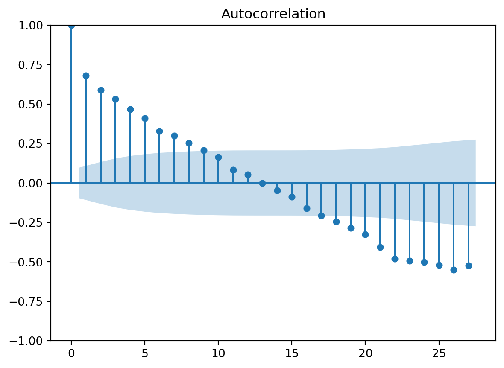
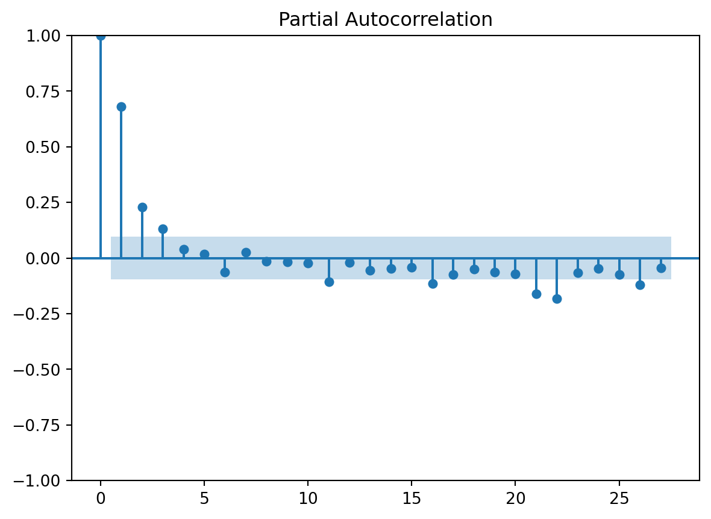

<!DOCTYPE html>
<html xmlns="http://www.w3.org/1999/xhtml" lang="en" xml:lang="en"><head>

<meta charset="utf-8">
<meta name="generator" content="quarto-1.8.26">

<meta name="viewport" content="width=device-width, initial-scale=1.0, user-scalable=yes">


<title>Jena Climate Analysis</title>
<style>
code{white-space: pre-wrap;}
span.smallcaps{font-variant: small-caps;}
div.columns{display: flex; gap: min(4vw, 1.5em);}
div.column{flex: auto; overflow-x: auto;}
div.hanging-indent{margin-left: 1.5em; text-indent: -1.5em;}
ul.task-list{list-style: none;}
ul.task-list li input[type="checkbox"] {
  width: 0.8em;
  margin: 0 0.8em 0.2em -1em; /* quarto-specific, see https://github.com/quarto-dev/quarto-cli/issues/4556 */ 
  vertical-align: middle;
}
/* CSS for syntax highlighting */
html { -webkit-text-size-adjust: 100%; }
pre > code.sourceCode { white-space: pre; position: relative; }
pre > code.sourceCode > span { display: inline-block; line-height: 1.25; }
pre > code.sourceCode > span:empty { height: 1.2em; }
.sourceCode { overflow: visible; }
code.sourceCode > span { color: inherit; text-decoration: inherit; }
div.sourceCode { margin: 1em 0; }
pre.sourceCode { margin: 0; }
@media screen {
div.sourceCode { overflow: auto; }
}
@media print {
pre > code.sourceCode { white-space: pre-wrap; }
pre > code.sourceCode > span { text-indent: -5em; padding-left: 5em; }
}
pre.numberSource code
  { counter-reset: source-line 0; }
pre.numberSource code > span
  { position: relative; left: -4em; counter-increment: source-line; }
pre.numberSource code > span > a:first-child::before
  { content: counter(source-line);
    position: relative; left: -1em; text-align: right; vertical-align: baseline;
    border: none; display: inline-block;
    -webkit-touch-callout: none; -webkit-user-select: none;
    -khtml-user-select: none; -moz-user-select: none;
    -ms-user-select: none; user-select: none;
    padding: 0 4px; width: 4em;
  }
pre.numberSource { margin-left: 3em;  padding-left: 4px; }
div.sourceCode
  {   }
@media screen {
pre > code.sourceCode > span > a:first-child::before { text-decoration: underline; }
}
</style>


<script src="https://cdn.jsdelivr.net/npm/jquery@3.5.1/dist/jquery.min.js" integrity="sha384-ZvpUoO/+PpLXR1lu4jmpXWu80pZlYUAfxl5NsBMWOEPSjUn/6Z/hRTt8+pR6L4N2" crossorigin="anonymous"></script><script src="Climate_analysis1_files/libs/clipboard/clipboard.min.js"></script>
<script src="Climate_analysis1_files/libs/quarto-html/quarto.js" type="module"></script>
<script src="Climate_analysis1_files/libs/quarto-html/tabsets/tabsets.js" type="module"></script>
<script src="Climate_analysis1_files/libs/quarto-html/axe/axe-check.js" type="module"></script>
<script src="Climate_analysis1_files/libs/quarto-html/popper.min.js"></script>
<script src="Climate_analysis1_files/libs/quarto-html/tippy.umd.min.js"></script>
<script src="Climate_analysis1_files/libs/quarto-html/anchor.min.js"></script>
<link href="Climate_analysis1_files/libs/quarto-html/tippy.css" rel="stylesheet">
<link href="Climate_analysis1_files/libs/quarto-html/quarto-syntax-highlighting-587c61ba64f3a5504c4d52d930310e48.css" rel="stylesheet" id="quarto-text-highlighting-styles">
<script src="Climate_analysis1_files/libs/bootstrap/bootstrap.min.js"></script>
<link href="Climate_analysis1_files/libs/bootstrap/bootstrap-icons.css" rel="stylesheet">
<link href="Climate_analysis1_files/libs/bootstrap/bootstrap-9e3ffae467580fdb927a41352e75a2e0.min.css" rel="stylesheet" append-hash="true" id="quarto-bootstrap" data-mode="light">
<script src="Climate_analysis1_files/libs/quarto-diagram/mermaid.min.js"></script>
<script src="Climate_analysis1_files/libs/quarto-diagram/mermaid-init.js"></script>
<link href="Climate_analysis1_files/libs/quarto-diagram/mermaid.css" rel="stylesheet">
<script src="https://cdn.jsdelivr.net/npm/requirejs@2.3.6/require.min.js" integrity="sha384-c9c+LnTbwQ3aujuU7ULEPVvgLs+Fn6fJUvIGTsuu1ZcCf11fiEubah0ttpca4ntM sha384-6V1/AdqZRWk1KAlWbKBlGhN7VG4iE/yAZcO6NZPMF8od0vukrvr0tg4qY6NSrItx" crossorigin="anonymous"></script>

<script type="application/javascript">define('jquery', [],function() {return window.jQuery;})</script>
<script type="text/javascript">
window.PlotlyConfig = {MathJaxConfig: 'local'};
if (window.MathJax && window.MathJax.Hub && window.MathJax.Hub.Config) {window.MathJax.Hub.Config({SVG: {font: "STIX-Web"}});}
</script>
<script type="module">import "https://cdn.plot.ly/plotly-3.3.0.min"</script>


  <script src="https://cdnjs.cloudflare.com/polyfill/v3/polyfill.min.js?features=es6"></script>
  <script src="https://cdn.jsdelivr.net/npm/mathjax@3/es5/tex-chtml-full.js" type="text/javascript"></script>

<script type="text/javascript">
const typesetMath = (el) => {
  if (window.MathJax) {
    // MathJax Typeset
    window.MathJax.typeset([el]);
  } else if (window.katex) {
    // KaTeX Render
    var mathElements = el.getElementsByClassName("math");
    var macros = [];
    for (var i = 0; i < mathElements.length; i++) {
      var texText = mathElements[i].firstChild;
      if (mathElements[i].tagName == "SPAN" && texText && texText.data) {
        window.katex.render(texText.data, mathElements[i], {
          displayMode: mathElements[i].classList.contains('display'),
          throwOnError: false,
          macros: macros,
          fleqn: false
        });
      }
    }
  }
}
window.Quarto = {
  typesetMath
};
</script>

</head>

<body class="quarto-light">

<div id="quarto-content" class="page-columns page-rows-contents page-layout-article">
<div id="quarto-margin-sidebar" class="sidebar margin-sidebar">
  <nav id="TOC" role="doc-toc" class="toc-active">
    <h2 id="toc-title">Table of contents</h2>
   
  <ul>
  <li><a href="#overview" id="toc-overview" class="nav-link active" data-scroll-target="#overview">Overview</a>
  <ul>
  <li><a href="#what" id="toc-what" class="nav-link" data-scroll-target="#what">What?</a></li>
  <li><a href="#why" id="toc-why" class="nav-link" data-scroll-target="#why">Why?</a></li>
  <li><a href="#how" id="toc-how" class="nav-link" data-scroll-target="#how">How?</a></li>
  </ul></li>
  <li><a href="#part-1-data-analysis-and-visualization" id="toc-part-1-data-analysis-and-visualization" class="nav-link" data-scroll-target="#part-1-data-analysis-and-visualization">Part 1: Data analysis and visualization</a>
  <ul>
  <li><a href="#eda" id="toc-eda" class="nav-link" data-scroll-target="#eda">EDA</a></li>
  <li><a href="#hottest-day-analysis" id="toc-hottest-day-analysis" class="nav-link" data-scroll-target="#hottest-day-analysis">Hottest day analysis</a></li>
  <li><a href="#coldest-day-analysis" id="toc-coldest-day-analysis" class="nav-link" data-scroll-target="#coldest-day-analysis">Coldest day analysis</a></li>
  <li><a href="#results" id="toc-results" class="nav-link" data-scroll-target="#results">Results</a></li>
  </ul></li>
  <li><a href="#part-2-statistics" id="toc-part-2-statistics" class="nav-link" data-scroll-target="#part-2-statistics">Part 2: Statistics</a>
  <ul>
  <li><a href="#pca" id="toc-pca" class="nav-link" data-scroll-target="#pca">PCA</a></li>
  <li><a href="#temperature-analysis" id="toc-temperature-analysis" class="nav-link" data-scroll-target="#temperature-analysis">Temperature analysis</a>
  <ul>
  <li><a href="#curve-fitting" id="toc-curve-fitting" class="nav-link" data-scroll-target="#curve-fitting">Curve fitting</a></li>
  <li><a href="#sarima" id="toc-sarima" class="nav-link" data-scroll-target="#sarima">SARIMA</a></li>
  </ul></li>
  <li><a href="#humidity-analysis" id="toc-humidity-analysis" class="nav-link" data-scroll-target="#humidity-analysis">Humidity analysis</a>
  <ul>
  <li><a href="#curve-fitting-1" id="toc-curve-fitting-1" class="nav-link" data-scroll-target="#curve-fitting-1">Curve fitting</a></li>
  <li><a href="#sarima-1" id="toc-sarima-1" class="nav-link" data-scroll-target="#sarima-1">SARIMA</a></li>
  </ul></li>
  <li><a href="#rnn-model" id="toc-rnn-model" class="nav-link" data-scroll-target="#rnn-model">RNN model</a>
  <ul>
  <li><a href="#temperature" id="toc-temperature" class="nav-link" data-scroll-target="#temperature">Temperature</a></li>
  <li><a href="#relative-humidity" id="toc-relative-humidity" class="nav-link" data-scroll-target="#relative-humidity">Relative Humidity</a></li>
  </ul></li>
  <li><a href="#results-1" id="toc-results-1" class="nav-link" data-scroll-target="#results-1">Results</a></li>
  </ul></li>
  <li><a href="#conclusions" id="toc-conclusions" class="nav-link" data-scroll-target="#conclusions">Conclusions</a>
  <ul>
  <li><a href="#applications-and-future-directions" id="toc-applications-and-future-directions" class="nav-link" data-scroll-target="#applications-and-future-directions">Applications and future directions</a></li>
  </ul></li>
  </ul>
</nav>
</div>
<main class="content" id="quarto-document-content">

<header id="title-block-header" class="quarto-title-block default">
<div class="quarto-title">
<h1 class="title">Jena Climate Analysis</h1>
</div>


<div class="quarto-title-meta">

    
  
    
  </div>
  


</header>


<section id="overview" class="level1">
<h1>Overview</h1>
<p>In this overview, the focus is to answer three simple questions regarding the project: what, why and how.</p>
<section id="what" class="level2">
<h2 class="anchored" data-anchor-id="what">What?</h2>
<p>This project uses the <code>jena_climate_2009_2016.csv</code> dataset. Link to the dataset can be found <a href="https://www.kaggle.com/datasets/mnassrib/jena-climate">here</a> The dataset is one of the best and most popular climate datasets that can be found freely online, which makes it ideal for throughout data science analysis.</p>
<p>The project runs in two main sections: The first one is the data analysis section, where the data is loaded, cleaned and visualized. The next section presents a statistical analysis with ML models of current trends and future predictions.</p>
<p>The goal of the project is to collect information about changes in temperature and relative humidity from the data and make future predictions.</p>
</section>
<section id="why" class="level2">
<h2 class="anchored" data-anchor-id="why">Why?</h2>
<p>Climate data analysis and forecast is one of the classic topics in data science, which also why it is the topic of this project. Climate data, like the Jena climate dataset, are often nicely in time series format, which makes analysis quite straightforward.</p>
<p>Another important “why” in this project is to demonstrate the wast amount of methods and models which can be used to analyze and forecast time series data.</p>
<p>Forecasting is not only about predicting future trends, but analyzing current and ongoing trends and even relative extremes (such as hottest/coldest days) to get an idea of how realistic the forecasts are.</p>
</section>
<section id="how" class="level2">
<h2 class="anchored" data-anchor-id="how">How?</h2>
<p>There are few different ways to deal with time series forecasting. The simplest one would be to simply load the data into a time series format and run few simple forecast methods, like SARIMA. However, simply rushing into the forecast phase is usually ill-advised for large data, such as the Jena climate dataset. First of all, the data might be in non-clean format and there might also be other trends that should be analyzed first.</p>
<p>That’s why this project starts with a clear data analysis section, which produces important results for the next section. The statistics section is divided into three main parts, the SARIMA, PCA and RNN. SARIMA and RNN are used for time series forecast, whereas PCA gives a kind of “sanity check” about large trends in the dataset.</p>
<p>Finally the conclusions section should give insight into major findings from all the analyses and where they can lead to. The most useful methods and most important results will be analyzed, showing the major trends and paths to further applications.</p>
</section>
</section>
<section id="part-1-data-analysis-and-visualization" class="level1">
<h1>Part 1: Data analysis and visualization</h1>
<p>Data-analytic methods do not give as precise results as statistical methods, but they give a good overview of the climate data and what trends are important for further analysis. This is why it’s important to do data analysis, especially EDA, before any statistical modelling.</p>
<p>Structure of the data analysis:</p>
<div class="cell" data-layout-align="default">
<div class="cell-output-display">
<div>
<p></p><figure class="figure"><p></p>
<div>
<pre class="mermaid mermaid-js">flowchart LR
A[Load] --&gt; B[Clean]
B --&gt; C[Exploratory data analysis]
C --&gt; K[Temperature histogram]
C --&gt; L[Correlation matrix]
C --&gt; M[Descriptive statistics table]
C --&gt; N[Bivariate scatter plot]
C --&gt; D[Time series visualization]
D --&gt; E[Analysis of hottest day]
D --&gt; F[Analysis of coldest day]
E --&gt; G[Scatter plot]
E --&gt; H[Run chart]
F --&gt; I[Scatter plot]
F --&gt; J[Run chart]
K --&gt; O[Results]
L --&gt; O
M --&gt; O
N --&gt; O
G --&gt; O
H --&gt; O
I --&gt; O
J --&gt; O
</pre>
</div>
<p></p></figure><p></p>
</div>
</div>
</div>
<div id="54d31914" class="cell" data-execution_count="1">
<details class="code-fold">
<summary>Code</summary>
<div class="code-copy-outer-scaffold"><div class="sourceCode cell-code" id="cb1"><pre class="sourceCode python code-with-copy"><code class="sourceCode python"><span id="cb1-1"><a href="#cb1-1" aria-hidden="true" tabindex="-1"></a><span class="im">from</span> functools <span class="im">import</span> <span class="bu">reduce</span></span>
<span id="cb1-2"><a href="#cb1-2" aria-hidden="true" tabindex="-1"></a><span class="im">import</span> random</span>
<span id="cb1-3"><a href="#cb1-3" aria-hidden="true" tabindex="-1"></a><span class="im">import</span> matplotlib.pyplot <span class="im">as</span> plt</span>
<span id="cb1-4"><a href="#cb1-4" aria-hidden="true" tabindex="-1"></a><span class="im">import</span> matplotlib.cm <span class="im">as</span> cm</span>
<span id="cb1-5"><a href="#cb1-5" aria-hidden="true" tabindex="-1"></a><span class="im">import</span> seaborn <span class="im">as</span> sns</span>
<span id="cb1-6"><a href="#cb1-6" aria-hidden="true" tabindex="-1"></a><span class="im">import</span> pandas <span class="im">as</span> pd</span>
<span id="cb1-7"><a href="#cb1-7" aria-hidden="true" tabindex="-1"></a><span class="im">import</span> numpy <span class="im">as</span> np</span>
<span id="cb1-8"><a href="#cb1-8" aria-hidden="true" tabindex="-1"></a><span class="im">import</span> plotly.graph_objects <span class="im">as</span> go</span>
<span id="cb1-9"><a href="#cb1-9" aria-hidden="true" tabindex="-1"></a><span class="im">import</span> plotly.express <span class="im">as</span> px</span>
<span id="cb1-10"><a href="#cb1-10" aria-hidden="true" tabindex="-1"></a></span>
<span id="cb1-11"><a href="#cb1-11" aria-hidden="true" tabindex="-1"></a></span>
<span id="cb1-12"><a href="#cb1-12" aria-hidden="true" tabindex="-1"></a><span class="cf">try</span>:</span>
<span id="cb1-13"><a href="#cb1-13" aria-hidden="true" tabindex="-1"></a>    df <span class="op">=</span> pd.read_csv(<span class="st">'data/jena_climate_2009_2016.csv'</span>)</span>
<span id="cb1-14"><a href="#cb1-14" aria-hidden="true" tabindex="-1"></a></span>
<span id="cb1-15"><a href="#cb1-15" aria-hidden="true" tabindex="-1"></a><span class="cf">except</span> pandas.errors.EmptyDataError:</span>
<span id="cb1-16"><a href="#cb1-16" aria-hidden="true" tabindex="-1"></a>    display(<span class="st">'Empty path'</span>)</span>
<span id="cb1-17"><a href="#cb1-17" aria-hidden="true" tabindex="-1"></a></span>
<span id="cb1-18"><a href="#cb1-18" aria-hidden="true" tabindex="-1"></a>df[<span class="st">"Date Time"</span>] <span class="op">=</span> pd.to_datetime(</span>
<span id="cb1-19"><a href="#cb1-19" aria-hidden="true" tabindex="-1"></a>    df[<span class="st">"Date Time"</span>],</span>
<span id="cb1-20"><a href="#cb1-20" aria-hidden="true" tabindex="-1"></a>    <span class="bu">format</span><span class="op">=</span><span class="st">'</span><span class="sc">%d</span><span class="st">.%m.%Y %H:%M:%S'</span>,</span>
<span id="cb1-21"><a href="#cb1-21" aria-hidden="true" tabindex="-1"></a>    dayfirst<span class="op">=</span><span class="va">True</span>,</span>
<span id="cb1-22"><a href="#cb1-22" aria-hidden="true" tabindex="-1"></a>    errors<span class="op">=</span><span class="st">"coerce"</span></span>
<span id="cb1-23"><a href="#cb1-23" aria-hidden="true" tabindex="-1"></a>)</span>
<span id="cb1-24"><a href="#cb1-24" aria-hidden="true" tabindex="-1"></a></span>
<span id="cb1-25"><a href="#cb1-25" aria-hidden="true" tabindex="-1"></a><span class="co">#Set date times as index in dataframe</span></span>
<span id="cb1-26"><a href="#cb1-26" aria-hidden="true" tabindex="-1"></a>df <span class="op">=</span> df.dropna(subset<span class="op">=</span>[<span class="st">"Date Time"</span>])</span>
<span id="cb1-27"><a href="#cb1-27" aria-hidden="true" tabindex="-1"></a>df <span class="op">=</span> df.set_index(<span class="st">"Date Time"</span>)</span>
<span id="cb1-28"><a href="#cb1-28" aria-hidden="true" tabindex="-1"></a></span>
<span id="cb1-29"><a href="#cb1-29" aria-hidden="true" tabindex="-1"></a><span class="co">#Replace bad values</span></span>
<span id="cb1-30"><a href="#cb1-30" aria-hidden="true" tabindex="-1"></a>df.columns <span class="op">=</span> (</span>
<span id="cb1-31"><a href="#cb1-31" aria-hidden="true" tabindex="-1"></a>    df.columns</span>
<span id="cb1-32"><a href="#cb1-32" aria-hidden="true" tabindex="-1"></a>        .<span class="bu">str</span>.strip()</span>
<span id="cb1-33"><a href="#cb1-33" aria-hidden="true" tabindex="-1"></a>        .<span class="bu">str</span>.replace(<span class="st">" "</span>, <span class="st">"_"</span>)</span>
<span id="cb1-34"><a href="#cb1-34" aria-hidden="true" tabindex="-1"></a>        .<span class="bu">str</span>.replace(<span class="st">"("</span>, <span class="st">""</span>)</span>
<span id="cb1-35"><a href="#cb1-35" aria-hidden="true" tabindex="-1"></a>        .<span class="bu">str</span>.replace(<span class="st">")"</span>, <span class="st">""</span>)</span>
<span id="cb1-36"><a href="#cb1-36" aria-hidden="true" tabindex="-1"></a>        .<span class="bu">str</span>.replace(<span class="st">"%"</span>, <span class="st">"pct"</span>)</span>
<span id="cb1-37"><a href="#cb1-37" aria-hidden="true" tabindex="-1"></a>        .<span class="bu">str</span>.replace(<span class="st">"/"</span>, <span class="st">"_"</span>)</span>
<span id="cb1-38"><a href="#cb1-38" aria-hidden="true" tabindex="-1"></a>        .<span class="bu">str</span>.replace(<span class="st">"*"</span>, <span class="st">""</span>)</span>
<span id="cb1-39"><a href="#cb1-39" aria-hidden="true" tabindex="-1"></a>)</span>
<span id="cb1-40"><a href="#cb1-40" aria-hidden="true" tabindex="-1"></a></span>
<span id="cb1-41"><a href="#cb1-41" aria-hidden="true" tabindex="-1"></a>df <span class="op">=</span> df.<span class="bu">apply</span>(pd.to_numeric, errors<span class="op">=</span><span class="st">"coerce"</span>) </span>
<span id="cb1-42"><a href="#cb1-42" aria-hidden="true" tabindex="-1"></a>df <span class="op">=</span> df.sort_index()</span>
<span id="cb1-43"><a href="#cb1-43" aria-hidden="true" tabindex="-1"></a>df <span class="op">=</span> df.interpolate(method<span class="op">=</span><span class="st">"time"</span>)</span></code></pre></div><button title="Copy to Clipboard" class="code-copy-button"><i class="bi"></i></button></div>
</details>
</div>
<section id="eda" class="level2">
<h2 class="anchored" data-anchor-id="eda">EDA</h2>
<p>Exploratory data analysis is used to summarize the main characteristics of data, often visually. Since size of the data is quite large most of the analyses will be restricted to smaller samples of the data, or resamples. First the head of the dataframe is printed to show the formatting:</p>
<div class="cell" data-execution_count="2">
<details class="code-fold">
<summary>Code</summary>
<div class="code-copy-outer-scaffold"><div class="sourceCode cell-code" id="cb2"><pre class="sourceCode python code-with-copy"><code class="sourceCode python"><span id="cb2-1"><a href="#cb2-1" aria-hidden="true" tabindex="-1"></a>df_weekly <span class="op">=</span> df.resample(<span class="st">"W"</span>).mean()</span>
<span id="cb2-2"><a href="#cb2-2" aria-hidden="true" tabindex="-1"></a></span>
<span id="cb2-3"><a href="#cb2-3" aria-hidden="true" tabindex="-1"></a>display(df.head())</span>
<span id="cb2-4"><a href="#cb2-4" aria-hidden="true" tabindex="-1"></a></span>
<span id="cb2-5"><a href="#cb2-5" aria-hidden="true" tabindex="-1"></a>display(<span class="ss">f"Dimensions: </span><span class="sc">{</span>df<span class="sc">.</span>shape<span class="sc">}</span><span class="ss">"</span>)</span></code></pre></div><button title="Copy to Clipboard" class="code-copy-button"><i class="bi"></i></button></div>
</details>
<div id="fig-eda-gen" class="cell quarto-float quarto-figure quarto-figure-center anchored" data-execution_count="2">
<figure class="quarto-float quarto-float-fig figure">
<div aria-describedby="fig-eda-gen-caption-0ceaefa1-69ba-4598-a22c-09a6ac19f8ca">
<div id="fig-eda-gen-1" class="cell-output cell-output-display quarto-float quarto-figure quarto-figure-center anchored">
<figure class="quarto-float quarto-subfloat-fig figure">
<div aria-describedby="fig-eda-gen-1-caption-0ceaefa1-69ba-4598-a22c-09a6ac19f8ca">
<div>


<table class="dataframe do-not-create-environment caption-top table table-sm table-striped small" data-border="1">
<thead>
<tr class="header">
<th data-quarto-table-cell-role="th"></th>
<th data-quarto-table-cell-role="th">p_mbar</th>
<th data-quarto-table-cell-role="th">T_degC</th>
<th data-quarto-table-cell-role="th">Tpot_K</th>
<th data-quarto-table-cell-role="th">Tdew_degC</th>
<th data-quarto-table-cell-role="th">rh_pct</th>
<th data-quarto-table-cell-role="th">VPmax_mbar</th>
<th data-quarto-table-cell-role="th">VPact_mbar</th>
<th data-quarto-table-cell-role="th">VPdef_mbar</th>
<th data-quarto-table-cell-role="th">sh_g_kg</th>
<th data-quarto-table-cell-role="th">H2OC_mmol_mol</th>
<th data-quarto-table-cell-role="th">rho_g_m3</th>
<th data-quarto-table-cell-role="th">wv_m_s</th>
<th data-quarto-table-cell-role="th">max._wv_m_s</th>
<th data-quarto-table-cell-role="th">wd_deg</th>
</tr>
<tr class="even">
<th data-quarto-table-cell-role="th">Date Time</th>
<th data-quarto-table-cell-role="th"></th>
<th data-quarto-table-cell-role="th"></th>
<th data-quarto-table-cell-role="th"></th>
<th data-quarto-table-cell-role="th"></th>
<th data-quarto-table-cell-role="th"></th>
<th data-quarto-table-cell-role="th"></th>
<th data-quarto-table-cell-role="th"></th>
<th data-quarto-table-cell-role="th"></th>
<th data-quarto-table-cell-role="th"></th>
<th data-quarto-table-cell-role="th"></th>
<th data-quarto-table-cell-role="th"></th>
<th data-quarto-table-cell-role="th"></th>
<th data-quarto-table-cell-role="th"></th>
<th data-quarto-table-cell-role="th"></th>
</tr>
</thead>
<tbody>
<tr class="odd">
<th data-quarto-table-cell-role="th">2009-01-01 00:10:00</th>
<td>996.52</td>
<td>-8.02</td>
<td>265.40</td>
<td>-8.90</td>
<td>93.3</td>
<td>3.33</td>
<td>3.11</td>
<td>0.22</td>
<td>1.94</td>
<td>3.12</td>
<td>1307.75</td>
<td>1.03</td>
<td>1.75</td>
<td>152.3</td>
</tr>
<tr class="even">
<th data-quarto-table-cell-role="th">2009-01-01 00:20:00</th>
<td>996.57</td>
<td>-8.41</td>
<td>265.01</td>
<td>-9.28</td>
<td>93.4</td>
<td>3.23</td>
<td>3.02</td>
<td>0.21</td>
<td>1.89</td>
<td>3.03</td>
<td>1309.80</td>
<td>0.72</td>
<td>1.50</td>
<td>136.1</td>
</tr>
<tr class="odd">
<th data-quarto-table-cell-role="th">2009-01-01 00:30:00</th>
<td>996.53</td>
<td>-8.51</td>
<td>264.91</td>
<td>-9.31</td>
<td>93.9</td>
<td>3.21</td>
<td>3.01</td>
<td>0.20</td>
<td>1.88</td>
<td>3.02</td>
<td>1310.24</td>
<td>0.19</td>
<td>0.63</td>
<td>171.6</td>
</tr>
<tr class="even">
<th data-quarto-table-cell-role="th">2009-01-01 00:40:00</th>
<td>996.51</td>
<td>-8.31</td>
<td>265.12</td>
<td>-9.07</td>
<td>94.2</td>
<td>3.26</td>
<td>3.07</td>
<td>0.19</td>
<td>1.92</td>
<td>3.08</td>
<td>1309.19</td>
<td>0.34</td>
<td>0.50</td>
<td>198.0</td>
</tr>
<tr class="odd">
<th data-quarto-table-cell-role="th">2009-01-01 00:50:00</th>
<td>996.51</td>
<td>-8.27</td>
<td>265.15</td>
<td>-9.04</td>
<td>94.1</td>
<td>3.27</td>
<td>3.08</td>
<td>0.19</td>
<td>1.92</td>
<td>3.09</td>
<td>1309.00</td>
<td>0.32</td>
<td>0.63</td>
<td>214.3</td>
</tr>
</tbody>
</table>

</div>
</div>
<figcaption class="quarto-float-caption-bottom quarto-subfloat-caption quarto-subfloat-fig" id="fig-eda-gen-1-caption-0ceaefa1-69ba-4598-a22c-09a6ac19f8ca">
(a) Descriptive statistics table
</figcaption>
</figure>
</div>
<div id="fig-eda-gen-2" class="cell-output cell-output-display quarto-float quarto-figure quarto-figure-center anchored">
<figure class="quarto-float quarto-subfloat-fig figure">
<div aria-describedby="fig-eda-gen-2-caption-0ceaefa1-69ba-4598-a22c-09a6ac19f8ca">
<pre><code>'Dimensions: (420551, 14)'</code></pre>
</div>
<figcaption class="quarto-float-caption-bottom quarto-subfloat-caption quarto-subfloat-fig" id="fig-eda-gen-2-caption-0ceaefa1-69ba-4598-a22c-09a6ac19f8ca">
(b)
</figcaption>
</figure>
</div>
</div>
<figcaption class="quarto-float-caption-bottom quarto-float-caption quarto-float-fig quarto-uncaptioned" id="fig-eda-gen-caption-0ceaefa1-69ba-4598-a22c-09a6ac19f8ca">
Figure&nbsp;1
</figcaption>
</figure>
</div>
</div>
<p>Descriptive statistics gives an overview of the main properties of the variables/columns.</p>
<div id="cell-fig-desc" class="cell" data-execution_count="3">
<details class="code-fold">
<summary>Code</summary>
<div class="code-copy-outer-scaffold"><div class="sourceCode cell-code" id="cb4"><pre class="sourceCode python code-with-copy"><code class="sourceCode python"><span id="cb4-1"><a href="#cb4-1" aria-hidden="true" tabindex="-1"></a>display(df.describe().T)</span></code></pre></div><button title="Copy to Clipboard" class="code-copy-button"><i class="bi"></i></button></div>
</details>
<div id="fig-desc" class="cell-output cell-output-display quarto-float quarto-figure quarto-figure-center anchored">
<figure class="quarto-float quarto-float-fig figure">
<div aria-describedby="fig-desc-caption-0ceaefa1-69ba-4598-a22c-09a6ac19f8ca">
<div>


<table class="dataframe caption-top table table-sm table-striped small" data-border="1">
<thead>
<tr class="header">
<th data-quarto-table-cell-role="th"></th>
<th data-quarto-table-cell-role="th">count</th>
<th data-quarto-table-cell-role="th">mean</th>
<th data-quarto-table-cell-role="th">std</th>
<th data-quarto-table-cell-role="th">min</th>
<th data-quarto-table-cell-role="th">25%</th>
<th data-quarto-table-cell-role="th">50%</th>
<th data-quarto-table-cell-role="th">75%</th>
<th data-quarto-table-cell-role="th">max</th>
</tr>
</thead>
<tbody>
<tr class="odd">
<th data-quarto-table-cell-role="th">p_mbar</th>
<td>420551.0</td>
<td>989.212776</td>
<td>8.358481</td>
<td>913.60</td>
<td>984.20</td>
<td>989.58</td>
<td>994.72</td>
<td>1015.35</td>
</tr>
<tr class="even">
<th data-quarto-table-cell-role="th">T_degC</th>
<td>420551.0</td>
<td>9.450147</td>
<td>8.423365</td>
<td>-23.01</td>
<td>3.36</td>
<td>9.42</td>
<td>15.47</td>
<td>37.28</td>
</tr>
<tr class="odd">
<th data-quarto-table-cell-role="th">Tpot_K</th>
<td>420551.0</td>
<td>283.492743</td>
<td>8.504471</td>
<td>250.60</td>
<td>277.43</td>
<td>283.47</td>
<td>289.53</td>
<td>311.34</td>
</tr>
<tr class="even">
<th data-quarto-table-cell-role="th">Tdew_degC</th>
<td>420551.0</td>
<td>4.955854</td>
<td>6.730674</td>
<td>-25.01</td>
<td>0.24</td>
<td>5.22</td>
<td>10.07</td>
<td>23.11</td>
</tr>
<tr class="odd">
<th data-quarto-table-cell-role="th">rh_pct</th>
<td>420551.0</td>
<td>76.008259</td>
<td>16.476175</td>
<td>12.95</td>
<td>65.21</td>
<td>79.30</td>
<td>89.40</td>
<td>100.00</td>
</tr>
<tr class="even">
<th data-quarto-table-cell-role="th">VPmax_mbar</th>
<td>420551.0</td>
<td>13.576251</td>
<td>7.739020</td>
<td>0.95</td>
<td>7.78</td>
<td>11.82</td>
<td>17.60</td>
<td>63.77</td>
</tr>
<tr class="odd">
<th data-quarto-table-cell-role="th">VPact_mbar</th>
<td>420551.0</td>
<td>9.533756</td>
<td>4.184164</td>
<td>0.79</td>
<td>6.21</td>
<td>8.86</td>
<td>12.35</td>
<td>28.32</td>
</tr>
<tr class="even">
<th data-quarto-table-cell-role="th">VPdef_mbar</th>
<td>420551.0</td>
<td>4.042412</td>
<td>4.896851</td>
<td>0.00</td>
<td>0.87</td>
<td>2.19</td>
<td>5.30</td>
<td>46.01</td>
</tr>
<tr class="odd">
<th data-quarto-table-cell-role="th">sh_g_kg</th>
<td>420551.0</td>
<td>6.022408</td>
<td>2.656139</td>
<td>0.50</td>
<td>3.92</td>
<td>5.59</td>
<td>7.80</td>
<td>18.13</td>
</tr>
<tr class="even">
<th data-quarto-table-cell-role="th">H2OC_mmol_mol</th>
<td>420551.0</td>
<td>9.640223</td>
<td>4.235395</td>
<td>0.80</td>
<td>6.29</td>
<td>8.96</td>
<td>12.49</td>
<td>28.82</td>
</tr>
<tr class="odd">
<th data-quarto-table-cell-role="th">rho_g_m3</th>
<td>420551.0</td>
<td>1216.062748</td>
<td>39.975208</td>
<td>1059.45</td>
<td>1187.49</td>
<td>1213.79</td>
<td>1242.77</td>
<td>1393.54</td>
</tr>
<tr class="even">
<th data-quarto-table-cell-role="th">wv_m_s</th>
<td>420551.0</td>
<td>1.702224</td>
<td>65.446714</td>
<td>-9999.00</td>
<td>0.99</td>
<td>1.76</td>
<td>2.86</td>
<td>28.49</td>
</tr>
<tr class="odd">
<th data-quarto-table-cell-role="th">max._wv_m_s</th>
<td>420551.0</td>
<td>3.056555</td>
<td>69.016932</td>
<td>-9999.00</td>
<td>1.76</td>
<td>2.96</td>
<td>4.74</td>
<td>23.50</td>
</tr>
<tr class="even">
<th data-quarto-table-cell-role="th">wd_deg</th>
<td>420551.0</td>
<td>174.743738</td>
<td>86.681693</td>
<td>0.00</td>
<td>124.90</td>
<td>198.10</td>
<td>234.10</td>
<td>360.00</td>
</tr>
</tbody>
</table>

</div>
</div>
<figcaption class="quarto-float-caption-bottom quarto-float-caption quarto-float-fig" id="fig-desc-caption-0ceaefa1-69ba-4598-a22c-09a6ac19f8ca">
Figure&nbsp;2: Descriptive statistics table
</figcaption>
</figure>
</div>
</div>
<p>The univariate analysis shows the distribution of temperatures in a history plot</p>
<div id="cell-fig-hist" class="cell" data-execution_count="4">
<details class="code-fold">
<summary>Code</summary>
<div class="code-copy-outer-scaffold"><div class="sourceCode cell-code" id="cb5"><pre class="sourceCode python code-with-copy"><code class="sourceCode python"><span id="cb5-1"><a href="#cb5-1" aria-hidden="true" tabindex="-1"></a><span class="co">#Univariate Analysis</span></span>
<span id="cb5-2"><a href="#cb5-2" aria-hidden="true" tabindex="-1"></a>sns.histplot(df[<span class="st">'T_degC'</span>], bins<span class="op">=</span><span class="dv">5</span>, kde<span class="op">=</span><span class="va">True</span>, color<span class="op">=</span><span class="st">'skyblue'</span>)</span>
<span id="cb5-3"><a href="#cb5-3" aria-hidden="true" tabindex="-1"></a>plt.title(<span class="st">"Univariate Analysis of Temperature"</span>)</span>
<span id="cb5-4"><a href="#cb5-4" aria-hidden="true" tabindex="-1"></a>plt.show()</span></code></pre></div><button title="Copy to Clipboard" class="code-copy-button"><i class="bi"></i></button></div>
</details>
<div class="cell-output cell-output-display">
<div id="fig-hist" class="quarto-float quarto-figure quarto-figure-center anchored">
<figure class="quarto-float quarto-float-fig figure">
<div aria-describedby="fig-hist-caption-0ceaefa1-69ba-4598-a22c-09a6ac19f8ca">

</div>
<figcaption class="quarto-float-caption-bottom quarto-float-caption quarto-float-fig" id="fig-hist-caption-0ceaefa1-69ba-4598-a22c-09a6ac19f8ca">
Figure&nbsp;3: Univariate histogram
</figcaption>
</figure>
</div>
</div>
</div>
<p>The correlation matrix shows mostly negative and near-zero correlation, which means a lack of linear relationships. This is to be expected from climate data.</p>
<div class="cell" data-execution_count="5">
<details class="code-fold">
<summary>Code</summary>
<div class="code-copy-outer-scaffold"><div class="sourceCode cell-code" id="cb6"><pre class="sourceCode python code-with-copy"><code class="sourceCode python"><span id="cb6-1"><a href="#cb6-1" aria-hidden="true" tabindex="-1"></a>corr <span class="op">=</span> df.corr(numeric_only<span class="op">=</span><span class="va">True</span>)</span>
<span id="cb6-2"><a href="#cb6-2" aria-hidden="true" tabindex="-1"></a>display(<span class="st">"Correlation Matrix:"</span>, corr)</span></code></pre></div><button title="Copy to Clipboard" class="code-copy-button"><i class="bi"></i></button></div>
</details>
<div id="fig-corr" class="cell quarto-float quarto-figure quarto-figure-center anchored" data-execution_count="5">
<figure class="quarto-float quarto-float-fig figure">
<div aria-describedby="fig-corr-caption-0ceaefa1-69ba-4598-a22c-09a6ac19f8ca">
<div id="fig-corr-1" class="cell-output cell-output-display quarto-float quarto-figure quarto-figure-center anchored">
<figure class="quarto-float quarto-subfloat-fig figure">
<div aria-describedby="fig-corr-1-caption-0ceaefa1-69ba-4598-a22c-09a6ac19f8ca">
<pre><code>'Correlation Matrix:'</code></pre>
</div>
<figcaption class="quarto-float-caption-bottom quarto-subfloat-caption quarto-subfloat-fig" id="fig-corr-1-caption-0ceaefa1-69ba-4598-a22c-09a6ac19f8ca">
(a) A correlation matrix
</figcaption>
</figure>
</div>
<div id="fig-corr-2" class="cell-output cell-output-display quarto-float quarto-figure quarto-figure-center anchored">
<figure class="quarto-float quarto-subfloat-fig figure">
<div aria-describedby="fig-corr-2-caption-0ceaefa1-69ba-4598-a22c-09a6ac19f8ca">
<div>


<table class="dataframe do-not-create-environment caption-top table table-sm table-striped small" data-border="1">
<thead>
<tr class="header">
<th data-quarto-table-cell-role="th"></th>
<th data-quarto-table-cell-role="th">p_mbar</th>
<th data-quarto-table-cell-role="th">T_degC</th>
<th data-quarto-table-cell-role="th">Tpot_K</th>
<th data-quarto-table-cell-role="th">Tdew_degC</th>
<th data-quarto-table-cell-role="th">rh_pct</th>
<th data-quarto-table-cell-role="th">VPmax_mbar</th>
<th data-quarto-table-cell-role="th">VPact_mbar</th>
<th data-quarto-table-cell-role="th">VPdef_mbar</th>
<th data-quarto-table-cell-role="th">sh_g_kg</th>
<th data-quarto-table-cell-role="th">H2OC_mmol_mol</th>
<th data-quarto-table-cell-role="th">rho_g_m3</th>
<th data-quarto-table-cell-role="th">wv_m_s</th>
<th data-quarto-table-cell-role="th">max._wv_m_s</th>
<th data-quarto-table-cell-role="th">wd_deg</th>
</tr>
</thead>
<tbody>
<tr class="odd">
<th data-quarto-table-cell-role="th">p_mbar</th>
<td>1.000000</td>
<td>-0.045375</td>
<td>-0.124718</td>
<td>-0.066755</td>
<td>-0.018352</td>
<td>-0.031546</td>
<td>-0.054370</td>
<td>-0.003401</td>
<td>-0.069762</td>
<td>-0.069804</td>
<td>0.307640</td>
<td>-0.005701</td>
<td>-0.007760</td>
<td>-0.063258</td>
</tr>
<tr class="even">
<th data-quarto-table-cell-role="th">T_degC</th>
<td>-0.045375</td>
<td>1.000000</td>
<td>0.996827</td>
<td>0.895708</td>
<td>-0.572416</td>
<td>0.951113</td>
<td>0.867673</td>
<td>0.761744</td>
<td>0.866755</td>
<td>0.867177</td>
<td>-0.963410</td>
<td>-0.004689</td>
<td>-0.002871</td>
<td>0.038732</td>
</tr>
<tr class="odd">
<th data-quarto-table-cell-role="th">Tpot_K</th>
<td>-0.124718</td>
<td>0.996827</td>
<td>1.000000</td>
<td>0.894911</td>
<td>-0.567127</td>
<td>0.947293</td>
<td>0.866205</td>
<td>0.756962</td>
<td>0.866533</td>
<td>0.866955</td>
<td>-0.981345</td>
<td>-0.004195</td>
<td>-0.002224</td>
<td>0.043599</td>
</tr>
<tr class="even">
<th data-quarto-table-cell-role="th">Tdew_degC</th>
<td>-0.066755</td>
<td>0.895708</td>
<td>0.894911</td>
<td>1.000000</td>
<td>-0.156615</td>
<td>0.799271</td>
<td>0.968344</td>
<td>0.435752</td>
<td>0.967599</td>
<td>0.968044</td>
<td>-0.885232</td>
<td>-0.008718</td>
<td>-0.009091</td>
<td>0.049877</td>
</tr>
<tr class="odd">
<th data-quarto-table-cell-role="th">rh_pct</th>
<td>-0.018352</td>
<td>-0.572416</td>
<td>-0.567127</td>
<td>-0.156615</td>
<td>1.000000</td>
<td>-0.615842</td>
<td>-0.151494</td>
<td>-0.843835</td>
<td>-0.150841</td>
<td>-0.150969</td>
<td>0.514282</td>
<td>-0.005020</td>
<td>-0.009921</td>
<td>-0.015912</td>
</tr>
<tr class="even">
<th data-quarto-table-cell-role="th">VPmax_mbar</th>
<td>-0.031546</td>
<td>0.951113</td>
<td>0.947293</td>
<td>0.799271</td>
<td>-0.615842</td>
<td>1.000000</td>
<td>0.824865</td>
<td>0.875588</td>
<td>0.824460</td>
<td>0.824493</td>
<td>-0.901536</td>
<td>-0.004018</td>
<td>-0.002213</td>
<td>-0.009583</td>
</tr>
<tr class="odd">
<th data-quarto-table-cell-role="th">VPact_mbar</th>
<td>-0.054370</td>
<td>0.867673</td>
<td>0.866205</td>
<td>0.968344</td>
<td>-0.151494</td>
<td>0.824865</td>
<td>1.000000</td>
<td>0.449154</td>
<td>0.999851</td>
<td>0.999856</td>
<td>-0.850241</td>
<td>-0.009600</td>
<td>-0.010316</td>
<td>0.018418</td>
</tr>
<tr class="even">
<th data-quarto-table-cell-role="th">VPdef_mbar</th>
<td>-0.003401</td>
<td>0.761744</td>
<td>0.756962</td>
<td>0.435752</td>
<td>-0.843835</td>
<td>0.875588</td>
<td>0.449154</td>
<td>1.000000</td>
<td>0.448641</td>
<td>0.448689</td>
<td>-0.698290</td>
<td>0.001852</td>
<td>0.005317</td>
<td>-0.030881</td>
</tr>
<tr class="odd">
<th data-quarto-table-cell-role="th">sh_g_kg</th>
<td>-0.069762</td>
<td>0.866755</td>
<td>0.866533</td>
<td>0.967599</td>
<td>-0.150841</td>
<td>0.824460</td>
<td>0.999851</td>
<td>0.448641</td>
<td>1.000000</td>
<td>0.999997</td>
<td>-0.853325</td>
<td>-0.009479</td>
<td>-0.010163</td>
<td>0.019376</td>
</tr>
<tr class="even">
<th data-quarto-table-cell-role="th">H2OC_mmol_mol</th>
<td>-0.069804</td>
<td>0.867177</td>
<td>0.866955</td>
<td>0.968044</td>
<td>-0.150969</td>
<td>0.824493</td>
<td>0.999856</td>
<td>0.448689</td>
<td>0.999997</td>
<td>1.000000</td>
<td>-0.853769</td>
<td>-0.009477</td>
<td>-0.010158</td>
<td>0.019607</td>
</tr>
<tr class="odd">
<th data-quarto-table-cell-role="th">rho_g_m3</th>
<td>0.307640</td>
<td>-0.963410</td>
<td>-0.981345</td>
<td>-0.885232</td>
<td>0.514282</td>
<td>-0.901536</td>
<td>-0.850241</td>
<td>-0.698290</td>
<td>-0.853325</td>
<td>-0.853769</td>
<td>1.000000</td>
<td>0.003240</td>
<td>0.001086</td>
<td>-0.058072</td>
</tr>
<tr class="even">
<th data-quarto-table-cell-role="th">wv_m_s</th>
<td>-0.005701</td>
<td>-0.004689</td>
<td>-0.004195</td>
<td>-0.008718</td>
<td>-0.005020</td>
<td>-0.004018</td>
<td>-0.009600</td>
<td>0.001852</td>
<td>-0.009479</td>
<td>-0.009477</td>
<td>0.003240</td>
<td>1.000000</td>
<td>0.948477</td>
<td>-0.015322</td>
</tr>
<tr class="odd">
<th data-quarto-table-cell-role="th">max._wv_m_s</th>
<td>-0.007760</td>
<td>-0.002871</td>
<td>-0.002224</td>
<td>-0.009091</td>
<td>-0.009921</td>
<td>-0.002213</td>
<td>-0.010316</td>
<td>0.005317</td>
<td>-0.010163</td>
<td>-0.010158</td>
<td>0.001086</td>
<td>0.948477</td>
<td>1.000000</td>
<td>-0.014471</td>
</tr>
<tr class="even">
<th data-quarto-table-cell-role="th">wd_deg</th>
<td>-0.063258</td>
<td>0.038732</td>
<td>0.043599</td>
<td>0.049877</td>
<td>-0.015912</td>
<td>-0.009583</td>
<td>0.018418</td>
<td>-0.030881</td>
<td>0.019376</td>
<td>0.019607</td>
<td>-0.058072</td>
<td>-0.015322</td>
<td>-0.014471</td>
<td>1.000000</td>
</tr>
</tbody>
</table>

</div>
</div>
<figcaption class="quarto-float-caption-bottom quarto-subfloat-caption quarto-subfloat-fig" id="fig-corr-2-caption-0ceaefa1-69ba-4598-a22c-09a6ac19f8ca">
(b)
</figcaption>
</figure>
</div>
</div>
<figcaption class="quarto-float-caption-bottom quarto-float-caption quarto-float-fig quarto-uncaptioned" id="fig-corr-caption-0ceaefa1-69ba-4598-a22c-09a6ac19f8ca">
Figure&nbsp;4
</figcaption>
</figure>
</div>
</div>
<p>The bivariate analysis is done with monthly mean to give an overview of the relation between humidity and temperature, which is the main focus of this analysis.</p>
<div id="cell-fig-scat1" class="cell" data-execution_count="6">
<details class="code-fold">
<summary>Code</summary>
<div class="code-copy-outer-scaffold"><div class="sourceCode cell-code" id="cb8"><pre class="sourceCode python code-with-copy"><code class="sourceCode python"><span id="cb8-1"><a href="#cb8-1" aria-hidden="true" tabindex="-1"></a>df_monthly <span class="op">=</span> df.resample(<span class="st">"ME"</span>).mean()</span>
<span id="cb8-2"><a href="#cb8-2" aria-hidden="true" tabindex="-1"></a></span>
<span id="cb8-3"><a href="#cb8-3" aria-hidden="true" tabindex="-1"></a>sns.scatterplot(data<span class="op">=</span>df_monthly, x<span class="op">=</span><span class="st">'T_degC'</span>,</span>
<span id="cb8-4"><a href="#cb8-4" aria-hidden="true" tabindex="-1"></a>                y<span class="op">=</span><span class="st">'rh_pct'</span>, color<span class="op">=</span><span class="st">'orange'</span>, s<span class="op">=</span><span class="dv">8</span>)</span>
<span id="cb8-5"><a href="#cb8-5" aria-hidden="true" tabindex="-1"></a>sns.regplot(data<span class="op">=</span>df_monthly, x<span class="op">=</span><span class="st">'T_degC'</span>,</span>
<span id="cb8-6"><a href="#cb8-6" aria-hidden="true" tabindex="-1"></a>            y<span class="op">=</span><span class="st">'rh_pct'</span>, scatter<span class="op">=</span><span class="va">False</span>, color<span class="op">=</span><span class="st">'blue'</span>)</span>
<span id="cb8-7"><a href="#cb8-7" aria-hidden="true" tabindex="-1"></a>plt.title(<span class="st">"Bivariate Analysis: Temperature vs Humidity"</span>)</span>
<span id="cb8-8"><a href="#cb8-8" aria-hidden="true" tabindex="-1"></a>plt.xlabel(<span class="st">"Temperature (°C) monthly mean"</span>)</span>
<span id="cb8-9"><a href="#cb8-9" aria-hidden="true" tabindex="-1"></a>plt.ylabel(<span class="st">"Humidity monthly mean"</span>)</span>
<span id="cb8-10"><a href="#cb8-10" aria-hidden="true" tabindex="-1"></a>plt.show()</span></code></pre></div><button title="Copy to Clipboard" class="code-copy-button"><i class="bi"></i></button></div>
</details>
<div class="cell-output cell-output-display">
<div id="fig-scat1" class="quarto-float quarto-figure quarto-figure-center anchored">
<figure class="quarto-float quarto-float-fig figure">
<div aria-describedby="fig-scat1-caption-0ceaefa1-69ba-4598-a22c-09a6ac19f8ca">

</div>
<figcaption class="quarto-float-caption-bottom quarto-float-caption quarto-float-fig" id="fig-scat1-caption-0ceaefa1-69ba-4598-a22c-09a6ac19f8ca">
Figure&nbsp;5: A scatter plot of temperature v humidity
</figcaption>
</figure>
</div>
</div>
</div>
<p>The next figure is a run chart of the time series. It’s also resampled for weekly mean to give a more clear plot.</p>
<div id="cell-fig-runchart1" class="cell" data-execution_count="7">
<details class="code-fold">
<summary>Code</summary>
<div class="code-copy-outer-scaffold"><div class="sourceCode cell-code" id="cb9"><pre class="sourceCode python code-with-copy"><code class="sourceCode python"><span id="cb9-1"><a href="#cb9-1" aria-hidden="true" tabindex="-1"></a>fig <span class="op">=</span> go.Figure([go.Scatter(x<span class="op">=</span>df_weekly.index, y<span class="op">=</span>df_weekly[<span class="st">'T_degC'</span>], name<span class="op">=</span><span class="st">'Temperature (°C)'</span>),</span>
<span id="cb9-2"><a href="#cb9-2" aria-hidden="true" tabindex="-1"></a>go.Scatter(x<span class="op">=</span>df_weekly.index, y<span class="op">=</span>df_weekly[<span class="st">'rh_pct'</span>], mode<span class="op">=</span><span class="st">'lines'</span>, name<span class="op">=</span><span class="st">'Humidity (%)'</span>)])</span>
<span id="cb9-3"><a href="#cb9-3" aria-hidden="true" tabindex="-1"></a>fig.update_layout(</span>
<span id="cb9-4"><a href="#cb9-4" aria-hidden="true" tabindex="-1"></a>    title<span class="op">=</span><span class="st">'Temperature and Humidity Over Time'</span>,</span>
<span id="cb9-5"><a href="#cb9-5" aria-hidden="true" tabindex="-1"></a>    xaxis_title<span class="op">=</span><span class="st">'Time'</span>,</span>
<span id="cb9-6"><a href="#cb9-6" aria-hidden="true" tabindex="-1"></a>    yaxis_title<span class="op">=</span><span class="st">'Value'</span></span>
<span id="cb9-7"><a href="#cb9-7" aria-hidden="true" tabindex="-1"></a>    )</span>
<span id="cb9-8"><a href="#cb9-8" aria-hidden="true" tabindex="-1"></a>fig.show()</span></code></pre></div><button title="Copy to Clipboard" class="code-copy-button"><i class="bi"></i></button></div>
</details>
<div id="fig-runchart1" class="cell-output cell-output-display quarto-float quarto-figure quarto-figure-center anchored">
<figure class="quarto-float quarto-float-fig figure">
<div aria-describedby="fig-runchart1-caption-0ceaefa1-69ba-4598-a22c-09a6ac19f8ca">
<div>            <script src="https://cdnjs.cloudflare.com/ajax/libs/mathjax/2.7.5/MathJax.js?config=TeX-AMS-MML_SVG"></script><script type="text/javascript">if (window.MathJax && window.MathJax.Hub && window.MathJax.Hub.Config) {window.MathJax.Hub.Config({SVG: {font: "STIX-Web"}});}</script>                <script type="text/javascript">window.PlotlyConfig = {MathJaxConfig: 'local'};</script>
        <script charset="utf-8" src="https://cdn.plot.ly/plotly-3.3.0.min.js" integrity="sha256-bO3dS6yCpk9aK4gUpNELtCiDeSYvGYnK7jFI58NQnHI=" crossorigin="anonymous"></script>                <div id="669f1b7c-40fc-49f7-91cb-f9e95e41d486" class="plotly-graph-div" style="height:525px; width:100%;"></div>            <script type="text/javascript">                window.PLOTLYENV=window.PLOTLYENV || {};                                if (document.getElementById("669f1b7c-40fc-49f7-91cb-f9e95e41d486")) {                    Plotly.newPlot(                        "669f1b7c-40fc-49f7-91cb-f9e95e41d486",                        [{"name":"Temperature (°C)","x":["2009-01-04T00:00:00","2009-01-11T00:00:00","2009-01-18T00:00:00","2009-01-25T00:00:00","2009-02-01T00:00:00","2009-02-08T00:00:00","2009-02-15T00:00:00","2009-02-22T00:00:00","2009-03-01T00:00:00","2009-03-08T00:00:00","2009-03-15T00:00:00","2009-03-22T00:00:00","2009-03-29T00:00:00","2009-04-05T00:00:00","2009-04-12T00:00:00","2009-04-19T00:00:00","2009-04-26T00:00:00","2009-05-03T00:00:00","2009-05-10T00:00:00","2009-05-17T00:00:00","2009-05-24T00:00:00","2009-05-31T00:00:00","2009-06-07T00:00:00","2009-06-14T00:00:00","2009-06-21T00:00:00","2009-06-28T00:00:00","2009-07-05T00:00:00","2009-07-12T00:00:00","2009-07-19T00:00:00","2009-07-26T00:00:00","2009-08-02T00:00:00","2009-08-09T00:00:00","2009-08-16T00:00:00","2009-08-23T00:00:00","2009-08-30T00:00:00","2009-09-06T00:00:00","2009-09-13T00:00:00","2009-09-20T00:00:00","2009-09-27T00:00:00","2009-10-04T00:00:00","2009-10-11T00:00:00","2009-10-18T00:00:00","2009-10-25T00:00:00","2009-11-01T00:00:00","2009-11-08T00:00:00","2009-11-15T00:00:00","2009-11-22T00:00:00","2009-11-29T00:00:00","2009-12-06T00:00:00","2009-12-13T00:00:00","2009-12-20T00:00:00","2009-12-27T00:00:00","2010-01-03T00:00:00","2010-01-10T00:00:00","2010-01-17T00:00:00","2010-01-24T00:00:00","2010-01-31T00:00:00","2010-02-07T00:00:00","2010-02-14T00:00:00","2010-02-21T00:00:00","2010-02-28T00:00:00","2010-03-07T00:00:00","2010-03-14T00:00:00","2010-03-21T00:00:00","2010-03-28T00:00:00","2010-04-04T00:00:00","2010-04-11T00:00:00","2010-04-18T00:00:00","2010-04-25T00:00:00","2010-05-02T00:00:00","2010-05-09T00:00:00","2010-05-16T00:00:00","2010-05-23T00:00:00","2010-05-30T00:00:00","2010-06-06T00:00:00","2010-06-13T00:00:00","2010-06-20T00:00:00","2010-06-27T00:00:00","2010-07-04T00:00:00","2010-07-11T00:00:00","2010-07-18T00:00:00","2010-07-25T00:00:00","2010-08-01T00:00:00","2010-08-08T00:00:00","2010-08-15T00:00:00","2010-08-22T00:00:00","2010-08-29T00:00:00","2010-09-05T00:00:00","2010-09-12T00:00:00","2010-09-19T00:00:00","2010-09-26T00:00:00","2010-10-03T00:00:00","2010-10-10T00:00:00","2010-10-17T00:00:00","2010-10-24T00:00:00","2010-10-31T00:00:00","2010-11-07T00:00:00","2010-11-14T00:00:00","2010-11-21T00:00:00","2010-11-28T00:00:00","2010-12-05T00:00:00","2010-12-12T00:00:00","2010-12-19T00:00:00","2010-12-26T00:00:00","2011-01-02T00:00:00","2011-01-09T00:00:00","2011-01-16T00:00:00","2011-01-23T00:00:00","2011-01-30T00:00:00","2011-02-06T00:00:00","2011-02-13T00:00:00","2011-02-20T00:00:00","2011-02-27T00:00:00","2011-03-06T00:00:00","2011-03-13T00:00:00","2011-03-20T00:00:00","2011-03-27T00:00:00","2011-04-03T00:00:00","2011-04-10T00:00:00","2011-04-17T00:00:00","2011-04-24T00:00:00","2011-05-01T00:00:00","2011-05-08T00:00:00","2011-05-15T00:00:00","2011-05-22T00:00:00","2011-05-29T00:00:00","2011-06-05T00:00:00","2011-06-12T00:00:00","2011-06-19T00:00:00","2011-06-26T00:00:00","2011-07-03T00:00:00","2011-07-10T00:00:00","2011-07-17T00:00:00","2011-07-24T00:00:00","2011-07-31T00:00:00","2011-08-07T00:00:00","2011-08-14T00:00:00","2011-08-21T00:00:00","2011-08-28T00:00:00","2011-09-04T00:00:00","2011-09-11T00:00:00","2011-09-18T00:00:00","2011-09-25T00:00:00","2011-10-02T00:00:00","2011-10-09T00:00:00","2011-10-16T00:00:00","2011-10-23T00:00:00","2011-10-30T00:00:00","2011-11-06T00:00:00","2011-11-13T00:00:00","2011-11-20T00:00:00","2011-11-27T00:00:00","2011-12-04T00:00:00","2011-12-11T00:00:00","2011-12-18T00:00:00","2011-12-25T00:00:00","2012-01-01T00:00:00","2012-01-08T00:00:00","2012-01-15T00:00:00","2012-01-22T00:00:00","2012-01-29T00:00:00","2012-02-05T00:00:00","2012-02-12T00:00:00","2012-02-19T00:00:00","2012-02-26T00:00:00","2012-03-04T00:00:00","2012-03-11T00:00:00","2012-03-18T00:00:00","2012-03-25T00:00:00","2012-04-01T00:00:00","2012-04-08T00:00:00","2012-04-15T00:00:00","2012-04-22T00:00:00","2012-04-29T00:00:00","2012-05-06T00:00:00","2012-05-13T00:00:00","2012-05-20T00:00:00","2012-05-27T00:00:00","2012-06-03T00:00:00","2012-06-10T00:00:00","2012-06-17T00:00:00","2012-06-24T00:00:00","2012-07-01T00:00:00","2012-07-08T00:00:00","2012-07-15T00:00:00","2012-07-22T00:00:00","2012-07-29T00:00:00","2012-08-05T00:00:00","2012-08-12T00:00:00","2012-08-19T00:00:00","2012-08-26T00:00:00","2012-09-02T00:00:00","2012-09-09T00:00:00","2012-09-16T00:00:00","2012-09-23T00:00:00","2012-09-30T00:00:00","2012-10-07T00:00:00","2012-10-14T00:00:00","2012-10-21T00:00:00","2012-10-28T00:00:00","2012-11-04T00:00:00","2012-11-11T00:00:00","2012-11-18T00:00:00","2012-11-25T00:00:00","2012-12-02T00:00:00","2012-12-09T00:00:00","2012-12-16T00:00:00","2012-12-23T00:00:00","2012-12-30T00:00:00","2013-01-06T00:00:00","2013-01-13T00:00:00","2013-01-20T00:00:00","2013-01-27T00:00:00","2013-02-03T00:00:00","2013-02-10T00:00:00","2013-02-17T00:00:00","2013-02-24T00:00:00","2013-03-03T00:00:00","2013-03-10T00:00:00","2013-03-17T00:00:00","2013-03-24T00:00:00","2013-03-31T00:00:00","2013-04-07T00:00:00","2013-04-14T00:00:00","2013-04-21T00:00:00","2013-04-28T00:00:00","2013-05-05T00:00:00","2013-05-12T00:00:00","2013-05-19T00:00:00","2013-05-26T00:00:00","2013-06-02T00:00:00","2013-06-09T00:00:00","2013-06-16T00:00:00","2013-06-23T00:00:00","2013-06-30T00:00:00","2013-07-07T00:00:00","2013-07-14T00:00:00","2013-07-21T00:00:00","2013-07-28T00:00:00","2013-08-04T00:00:00","2013-08-11T00:00:00","2013-08-18T00:00:00","2013-08-25T00:00:00","2013-09-01T00:00:00","2013-09-08T00:00:00","2013-09-15T00:00:00","2013-09-22T00:00:00","2013-09-29T00:00:00","2013-10-06T00:00:00","2013-10-13T00:00:00","2013-10-20T00:00:00","2013-10-27T00:00:00","2013-11-03T00:00:00","2013-11-10T00:00:00","2013-11-17T00:00:00","2013-11-24T00:00:00","2013-12-01T00:00:00","2013-12-08T00:00:00","2013-12-15T00:00:00","2013-12-22T00:00:00","2013-12-29T00:00:00","2014-01-05T00:00:00","2014-01-12T00:00:00","2014-01-19T00:00:00","2014-01-26T00:00:00","2014-02-02T00:00:00","2014-02-09T00:00:00","2014-02-16T00:00:00","2014-02-23T00:00:00","2014-03-02T00:00:00","2014-03-09T00:00:00","2014-03-16T00:00:00","2014-03-23T00:00:00","2014-03-30T00:00:00","2014-04-06T00:00:00","2014-04-13T00:00:00","2014-04-20T00:00:00","2014-04-27T00:00:00","2014-05-04T00:00:00","2014-05-11T00:00:00","2014-05-18T00:00:00","2014-05-25T00:00:00","2014-06-01T00:00:00","2014-06-08T00:00:00","2014-06-15T00:00:00","2014-06-22T00:00:00","2014-06-29T00:00:00","2014-07-06T00:00:00","2014-07-13T00:00:00","2014-07-20T00:00:00","2014-07-27T00:00:00","2014-08-03T00:00:00","2014-08-10T00:00:00","2014-08-17T00:00:00","2014-08-24T00:00:00","2014-08-31T00:00:00","2014-09-07T00:00:00","2014-09-14T00:00:00","2014-09-21T00:00:00","2014-09-28T00:00:00","2014-10-05T00:00:00","2014-10-12T00:00:00","2014-10-19T00:00:00","2014-10-26T00:00:00","2014-11-02T00:00:00","2014-11-09T00:00:00","2014-11-16T00:00:00","2014-11-23T00:00:00","2014-11-30T00:00:00","2014-12-07T00:00:00","2014-12-14T00:00:00","2014-12-21T00:00:00","2014-12-28T00:00:00","2015-01-04T00:00:00","2015-01-11T00:00:00","2015-01-18T00:00:00","2015-01-25T00:00:00","2015-02-01T00:00:00","2015-02-08T00:00:00","2015-02-15T00:00:00","2015-02-22T00:00:00","2015-03-01T00:00:00","2015-03-08T00:00:00","2015-03-15T00:00:00","2015-03-22T00:00:00","2015-03-29T00:00:00","2015-04-05T00:00:00","2015-04-12T00:00:00","2015-04-19T00:00:00","2015-04-26T00:00:00","2015-05-03T00:00:00","2015-05-10T00:00:00","2015-05-17T00:00:00","2015-05-24T00:00:00","2015-05-31T00:00:00","2015-06-07T00:00:00","2015-06-14T00:00:00","2015-06-21T00:00:00","2015-06-28T00:00:00","2015-07-05T00:00:00","2015-07-12T00:00:00","2015-07-19T00:00:00","2015-07-26T00:00:00","2015-08-02T00:00:00","2015-08-09T00:00:00","2015-08-16T00:00:00","2015-08-23T00:00:00","2015-08-30T00:00:00","2015-09-06T00:00:00","2015-09-13T00:00:00","2015-09-20T00:00:00","2015-09-27T00:00:00","2015-10-04T00:00:00","2015-10-11T00:00:00","2015-10-18T00:00:00","2015-10-25T00:00:00","2015-11-01T00:00:00","2015-11-08T00:00:00","2015-11-15T00:00:00","2015-11-22T00:00:00","2015-11-29T00:00:00","2015-12-06T00:00:00","2015-12-13T00:00:00","2015-12-20T00:00:00","2015-12-27T00:00:00","2016-01-03T00:00:00","2016-01-10T00:00:00","2016-01-17T00:00:00","2016-01-24T00:00:00","2016-01-31T00:00:00","2016-02-07T00:00:00","2016-02-14T00:00:00","2016-02-21T00:00:00","2016-02-28T00:00:00","2016-03-06T00:00:00","2016-03-13T00:00:00","2016-03-20T00:00:00","2016-03-27T00:00:00","2016-04-03T00:00:00","2016-04-10T00:00:00","2016-04-17T00:00:00","2016-04-24T00:00:00","2016-05-01T00:00:00","2016-05-08T00:00:00","2016-05-15T00:00:00","2016-05-22T00:00:00","2016-05-29T00:00:00","2016-06-05T00:00:00","2016-06-12T00:00:00","2016-06-19T00:00:00","2016-06-26T00:00:00","2016-07-03T00:00:00","2016-07-10T00:00:00","2016-07-17T00:00:00","2016-07-24T00:00:00","2016-07-31T00:00:00","2016-08-07T00:00:00","2016-08-14T00:00:00","2016-08-21T00:00:00","2016-08-28T00:00:00","2016-09-04T00:00:00","2016-09-11T00:00:00","2016-09-18T00:00:00","2016-09-25T00:00:00","2016-10-02T00:00:00","2016-10-09T00:00:00","2016-10-16T00:00:00","2016-10-23T00:00:00","2016-10-30T00:00:00","2016-11-06T00:00:00","2016-11-13T00:00:00","2016-11-20T00:00:00","2016-11-27T00:00:00","2016-12-04T00:00:00","2016-12-11T00:00:00","2016-12-18T00:00:00","2016-12-25T00:00:00","2017-01-01T00:00:00"],"y":{"dtype":"f8","bdata":"AxC7SBQrEcDAN68mnh0mwPkuiSxifPu\u002fxUqsxEps8j\u002fdC\u002fFDcrcDwFo6P41tcuc\u002fB0c9oeCW8r8vtz\u002fIUNnxv8cIJvo72QtAvciLvMgrDECmxcByku0RQHKz0KTmYwxAnTbQaQMNEEBBPhenpG0iQPBktbwxyipAl9sfZKh8J0ADYlNpyHElQDBo6fw0filAdAhUDaLVJkD7djyUEF4pQPfMNcOZci9AtUZrtEZDLEDPIVA1iI4nQCtIHF575ytAYQu2YAseLUBHeIRHeKQuQBUkDq+9czRAyjxm\u002fW\u002fBLUBx1BMKbr0yQBwCVYNozzFAvksiixjTMkCp7DB1uUEzQNW346GEbDJAGMFEfyejM0BGAr55NVkyQL5LIosYBzBABKoG0XazLUA0bhaa1GQsQPXteCghpCpAENYtqm\u002ffJkC7bH0xXwQpQJuzOZuzmQ5AHuERHuGREkDbtm3btj0bQCV3pYrdCxZAxKbSkHMvGkCW\u002fGLJL7YhQCSluPBxPSFAsDNuFpr0CkB44G1ErVoEQGLqcvuD7B\u002fAaHM2Z3O25T9lEeP9qvz\u002fvxOhd+Bt1B7AH1fY6yNFEcD87AJiUykIwGiABmiAlhTAHaYutz+I9L\u002fYJgcMWgoXwP1vmTCjzPq\u002ffnYBsanEE0B44G1ErTrvv3E9Ctej8PW\u002fGkTbTXeOHEBrPoCdcbsiQIK3EbXq9B1AgUFL56fhHkDwzauJZ5UaQMxWBv+JsSFAOxF6B95mKkDoS4uB5RQgQIb4IbkrXSBAU2nIuc\u002fuJkDn1cSzoqEqQHbGzUKTkixAl9sfZKhYM0DJmIzJmGQsQMfaEpSnhzBApU\u002f6pM+8NkB+pBQXPhY2QP4Tc2R66TZAAUizZ651M0DWlqA8\u002feIwQH+D0bG2mDBAJUmSJEl+MEA0qfkAdhoxQORzcUraGzBAJpFFjPfrJkAardEarfEqQEeml60MpidAwzAMwzDcKEADnTbQaasjQM8hUDWIjiZAeIRHeISnFkD+fGkxsOwRQDMzMzMz0xpAufBxhb2+IkBXfMVXfMUdQEnNB7AzDg1AabvpziEQ+L\u002fvHAJVg7gfwDV75prhTPe\u002f4h7u4R5uGMAviSxivF8PwMn0spXBHxbAJu1rWCAf6T\u002fhbUStOhERQNPLVgb\u002fidQ\u002f0oOjnlCQAsCuDP4Tc2TjP5bOT2Ob\u002fAZAFK5H4XrU87+EdYvq2+EQwNiCLdiCLbC\u002fjLzIi7z4E0DwZLW8MTIUQPJ+Vb5LghZAnn6D0bE+JUAhCIIgCGIlQHPNcKYApCBAUzu1UztdK0DGKWlfw8ImQO3HfuzHtiJAFxCbSkOmLEAXEJtKQ8YuQBllHrP+ry1AVZA4vPYKMkAbrdEarQEwQAIaoAEaYDBAQrTddOfoLkCFglvr6DEvQLVTO7VTTzJATCKLGO+nMUDYvRA\u002fJCcuQMP1KFyPMi9AHuERHuHZMkBDk5oPYA8wQDRAAzRAGzJA6VhbgvLYM0CGnPvsAmIvQGHQ0vlpmDBA9vpIKS40LUAX4ofkrkQoQH9Vvksi0y5At23btm0bKECVwX9ijiwfQKLg1jp64BNAwKCl89OAIUBXQeLw2pseQOQKe32kFAZArxnOFIA0zT9Kn\u002fRJn3QLQIR1i+rbURJAcDA61pZgA0CRF3mRF1kNQLqhG7qhGwRA7ngoIaw7E0AbUatOhJ4RQI+HEsK6RQhAjPer8l0S8j\u002fbiFp1IvTvvzEMwzAMYyjASOF6FK5HKcBtZfCfmCP\u002fPyc1H8DOqBNAHAJVg2jbHEBsHT046okTQOZSLuVSliFAGq3RGq0ZIUBOdw6BqmEgQJscMGjpHBRA2L0QPySXH0CxEiuxEksfQL6nSFdBoi1AmnhWNBK4LEDLhBllHussQEdrtEZrlClAKNn486WFM0ChpfPT2P4sQADS7Jlr\u002fixAjW1ywKCFL0BZLW+MYOIxQOZf\u002fuVfKjNAr4LE4bVLM0DmjRFM9IswQH4a2+SAHTBAaIAGaIA6NkDiTAFIsw80QFIhFVIhXTFAO0xdbn\u002f4M0D0pcXAclI1QBZswRZsTTFA0Q3d0A2pMED\u002ft0yYUXYuQLGpNOTcfyhAPIdA1SDqKkAvtz\u002fIUHkpQNmP\u002fdiP\u002fR9ACLAzbhaKJ0ATZpR5zGoWQD39BqNjXRVAY\u002fdC\u002fJCMHUCX2x9kqGwBQLJNDhi0FBhAOpuzOZtzBkAwLQaWk6wBwNrXsEA+F8W\u002f0id90id9BkCSJEmSJJkbQCYoT7\u002fB+BpARK06EXoH9j\u002fuPUW6CqITwMNr7ynSpRbAcPVWb\u002fUWE0CndmqndmqvvwsfV9jrI\u002fi\u002fWjo\u002fjW1yA8CAnXGz0KTVP8xWBv+JOQlASFdB4vA6DsCrQbTddKf7v2pskwMGbfi\u002f8GS1vDGCzT++SyKLGLcgQEb17XgoQSxAfqQUFz4uKEB9Lk5J+4olQClPv8HocCxA9x1L49AOLUC0opGAb94iQE0OGLR0riZAMQzDMAx7LkDxQ3JXqtQwQKoG0XbTiTVAatWJ0DtQKkCAYo5ML0MzQKKyw9TlRjJAhN6BtxElNEAEfPNq4s03QJZlWZZlHTZAdi\u002fED8m1M0C8UsXuhTQxQFGrToTeJTFASjb+fGmVMEAiuStV7GozQHCZMKPMmylAEARBEARhJ0DW0YOjnvgnQD4Xp6R9XSJAIc2euWZQI0BDZYepy90kQJwpAGn2NC5A\u002fuVf\u002fuV\u002fI0D0pcXAcsohQHc8lBDWzQRAH1fY6yOlCkDVW73VW739P4UZZR6zvv4\u002fa3ljBBMdCkCtLUF5+t0TQCfMKPOY9RtAEbXqROjdEECOTC9bGbwZQGs+gJ1xUwhAT\u002fqkT\u002fpEDMC5wl4fKcXQP+nBUU8o2BBAK0gcXnuPFUCUS7mUS\u002fkTQL+0GFhO8hZA6wkFt9YxFEBZLW+MYGIeQMfrz6eeJSdAdpi63P5wGUD1SZ\u002f0SRcpQLEFW7AFgyZAwDevJp61HUC03XTnEAgrQCFDZYepCyVAcWsdPTj6KEAYS36x5C8lQPRq4lnRDDJAsrYE5elXKkDSJ33SJxEyQOcx63\u002fLMDNA+jtZLW+cLUDS7JlrhmMuQCNdBYnDXzNAlwkzyjweMUBAyFDZYdI2QKEO6qAOZjRA2Pg\u002f2xF8NECrQbTddB8zQEeml60MPjBAZG0JytMXK0AHDFo6Py0uQKHg1jp6ODBAtN105xDgLUAGxKbSkLMwQOROFsNe5yhA7PWRUlxYLUCNBHzzanotQGRtCcrT5ytA5iQbf770I0Cn0pBznz0iQNRBHdRBZSBAMTrWlqAcHUDh1jp6cGQVQAFIs2euGQFAZ2ZmZmZmtr\u002f6aWyTA6YFQPSlxcByEhhAi4HlJBvfB0A5Je1rWOD0P7ZgC7ZgOxFAjGCiv5NVE0AWA8tJNv7gv1hOsvHny\u002fE\u002fKgBp9sy18L\u002f7DUbH2pL2P7tzCFQN4vs\u002fo1adCL1DB0BI7koVu1cUQFi3qL4dDwtA17BAPhfXFUADYlNpyIkbQACXCTPKPA9AC7ZgC7YQI0CR3JUqdgckQMGtdfTgaCZAUHBrHT3QIkDPIVA1iG4uQKJ34G1EtStAPkW6ChI3KkBjyS+W\u002fEIpQGW1vDGCqTJAFK5H4XosMUArsRIrsdoqQHurt3qrvy5AYXSsLUHFOEDvHAJVg4AyQLQ5m7M5SzVAQ\u002fyQ3JVWNUCGMwUgzcYwQAjrFtW38zdA7OjBUU9IN0AmVmIlVoowQKKEsG5RpTNAzL\u002f8y7\u002f8L0DQ0vlpbIsrQBJZxHi\u002fAi5Ai0YCvnlFKEB3051DoPIkQOOUtK9h4SZAFbsX4ockEEBUSIVUSIUfQHzzauJZmSBAv1jyiyXXI0BaDCwn2cgnQIy8yIu82CBAagOdNtBp+j\u002feRtSqE9EaQKRwPQrXAxRAwuhYW4IyHUAa2+SAQVMjQHaL6tvxEPY\u002f9RuMjrUlyr+d2qmd2in6P5RLuZRL+QjAlqA8\u002fQbTGkACvnk18dwZQGy0Rmu01hBAdDZnczYHBEDwwNuIWjX7P40yj1n\u002fewRAlxYDy0m2+D9vjGCiv1MNQI8r7PWRchhAvWxl8J84H0B\u002fvrQYWHYkQARBEARBsCJAf4PRsbZUHEANdNpAp\u002f0ZQJ1DoGoQzSpAEvDNq4knLUAUFz6usB8sQKqd2qmd8i1ADdAADdCkMUDs6MFRT0gxQD5FugoSDy9Aep7neZ5HNUBYiZVYieExQMLoWFuCxjJAxvtV+S4VMkA9\u002fQajY8E1QDkl7WtYwDRAapqmaZraMUAtBpaTbMwwQCMiIiIiHjFAV9jrI6UkN0CB2FQacgYzQCoAafbMSTNA6Hme53muM0AEE\u002f2drLYqQEizZ64ZDi5AZDImYzJ+IUCfmCPTy0YgQA102kCn3R9AO7cSAT\u002foIUDxCI\u002fwCM8XQNF2051DYPA\u002f+H3f933\u002fFkAQ1i2qb9cVQIHYVBpy7t2\u002fzuZszuas+j8Uc2R62SoFQDd0Qzd0g\u002f8\u002flVBxfHByBUA="},"type":"scatter"},{"mode":"lines","name":"Humidity (%)","x":["2009-01-04T00:00:00","2009-01-11T00:00:00","2009-01-18T00:00:00","2009-01-25T00:00:00","2009-02-01T00:00:00","2009-02-08T00:00:00","2009-02-15T00:00:00","2009-02-22T00:00:00","2009-03-01T00:00:00","2009-03-08T00:00:00","2009-03-15T00:00:00","2009-03-22T00:00:00","2009-03-29T00:00:00","2009-04-05T00:00:00","2009-04-12T00:00:00","2009-04-19T00:00:00","2009-04-26T00:00:00","2009-05-03T00:00:00","2009-05-10T00:00:00","2009-05-17T00:00:00","2009-05-24T00:00:00","2009-05-31T00:00:00","2009-06-07T00:00:00","2009-06-14T00:00:00","2009-06-21T00:00:00","2009-06-28T00:00:00","2009-07-05T00:00:00","2009-07-12T00:00:00","2009-07-19T00:00:00","2009-07-26T00:00:00","2009-08-02T00:00:00","2009-08-09T00:00:00","2009-08-16T00:00:00","2009-08-23T00:00:00","2009-08-30T00:00:00","2009-09-06T00:00:00","2009-09-13T00:00:00","2009-09-20T00:00:00","2009-09-27T00:00:00","2009-10-04T00:00:00","2009-10-11T00:00:00","2009-10-18T00:00:00","2009-10-25T00:00:00","2009-11-01T00:00:00","2009-11-08T00:00:00","2009-11-15T00:00:00","2009-11-22T00:00:00","2009-11-29T00:00:00","2009-12-06T00:00:00","2009-12-13T00:00:00","2009-12-20T00:00:00","2009-12-27T00:00:00","2010-01-03T00:00:00","2010-01-10T00:00:00","2010-01-17T00:00:00","2010-01-24T00:00:00","2010-01-31T00:00:00","2010-02-07T00:00:00","2010-02-14T00:00:00","2010-02-21T00:00:00","2010-02-28T00:00:00","2010-03-07T00:00:00","2010-03-14T00:00:00","2010-03-21T00:00:00","2010-03-28T00:00:00","2010-04-04T00:00:00","2010-04-11T00:00:00","2010-04-18T00:00:00","2010-04-25T00:00:00","2010-05-02T00:00:00","2010-05-09T00:00:00","2010-05-16T00:00:00","2010-05-23T00:00:00","2010-05-30T00:00:00","2010-06-06T00:00:00","2010-06-13T00:00:00","2010-06-20T00:00:00","2010-06-27T00:00:00","2010-07-04T00:00:00","2010-07-11T00:00:00","2010-07-18T00:00:00","2010-07-25T00:00:00","2010-08-01T00:00:00","2010-08-08T00:00:00","2010-08-15T00:00:00","2010-08-22T00:00:00","2010-08-29T00:00:00","2010-09-05T00:00:00","2010-09-12T00:00:00","2010-09-19T00:00:00","2010-09-26T00:00:00","2010-10-03T00:00:00","2010-10-10T00:00:00","2010-10-17T00:00:00","2010-10-24T00:00:00","2010-10-31T00:00:00","2010-11-07T00:00:00","2010-11-14T00:00:00","2010-11-21T00:00:00","2010-11-28T00:00:00","2010-12-05T00:00:00","2010-12-12T00:00:00","2010-12-19T00:00:00","2010-12-26T00:00:00","2011-01-02T00:00:00","2011-01-09T00:00:00","2011-01-16T00:00:00","2011-01-23T00:00:00","2011-01-30T00:00:00","2011-02-06T00:00:00","2011-02-13T00:00:00","2011-02-20T00:00:00","2011-02-27T00:00:00","2011-03-06T00:00:00","2011-03-13T00:00:00","2011-03-20T00:00:00","2011-03-27T00:00:00","2011-04-03T00:00:00","2011-04-10T00:00:00","2011-04-17T00:00:00","2011-04-24T00:00:00","2011-05-01T00:00:00","2011-05-08T00:00:00","2011-05-15T00:00:00","2011-05-22T00:00:00","2011-05-29T00:00:00","2011-06-05T00:00:00","2011-06-12T00:00:00","2011-06-19T00:00:00","2011-06-26T00:00:00","2011-07-03T00:00:00","2011-07-10T00:00:00","2011-07-17T00:00:00","2011-07-24T00:00:00","2011-07-31T00:00:00","2011-08-07T00:00:00","2011-08-14T00:00:00","2011-08-21T00:00:00","2011-08-28T00:00:00","2011-09-04T00:00:00","2011-09-11T00:00:00","2011-09-18T00:00:00","2011-09-25T00:00:00","2011-10-02T00:00:00","2011-10-09T00:00:00","2011-10-16T00:00:00","2011-10-23T00:00:00","2011-10-30T00:00:00","2011-11-06T00:00:00","2011-11-13T00:00:00","2011-11-20T00:00:00","2011-11-27T00:00:00","2011-12-04T00:00:00","2011-12-11T00:00:00","2011-12-18T00:00:00","2011-12-25T00:00:00","2012-01-01T00:00:00","2012-01-08T00:00:00","2012-01-15T00:00:00","2012-01-22T00:00:00","2012-01-29T00:00:00","2012-02-05T00:00:00","2012-02-12T00:00:00","2012-02-19T00:00:00","2012-02-26T00:00:00","2012-03-04T00:00:00","2012-03-11T00:00:00","2012-03-18T00:00:00","2012-03-25T00:00:00","2012-04-01T00:00:00","2012-04-08T00:00:00","2012-04-15T00:00:00","2012-04-22T00:00:00","2012-04-29T00:00:00","2012-05-06T00:00:00","2012-05-13T00:00:00","2012-05-20T00:00:00","2012-05-27T00:00:00","2012-06-03T00:00:00","2012-06-10T00:00:00","2012-06-17T00:00:00","2012-06-24T00:00:00","2012-07-01T00:00:00","2012-07-08T00:00:00","2012-07-15T00:00:00","2012-07-22T00:00:00","2012-07-29T00:00:00","2012-08-05T00:00:00","2012-08-12T00:00:00","2012-08-19T00:00:00","2012-08-26T00:00:00","2012-09-02T00:00:00","2012-09-09T00:00:00","2012-09-16T00:00:00","2012-09-23T00:00:00","2012-09-30T00:00:00","2012-10-07T00:00:00","2012-10-14T00:00:00","2012-10-21T00:00:00","2012-10-28T00:00:00","2012-11-04T00:00:00","2012-11-11T00:00:00","2012-11-18T00:00:00","2012-11-25T00:00:00","2012-12-02T00:00:00","2012-12-09T00:00:00","2012-12-16T00:00:00","2012-12-23T00:00:00","2012-12-30T00:00:00","2013-01-06T00:00:00","2013-01-13T00:00:00","2013-01-20T00:00:00","2013-01-27T00:00:00","2013-02-03T00:00:00","2013-02-10T00:00:00","2013-02-17T00:00:00","2013-02-24T00:00:00","2013-03-03T00:00:00","2013-03-10T00:00:00","2013-03-17T00:00:00","2013-03-24T00:00:00","2013-03-31T00:00:00","2013-04-07T00:00:00","2013-04-14T00:00:00","2013-04-21T00:00:00","2013-04-28T00:00:00","2013-05-05T00:00:00","2013-05-12T00:00:00","2013-05-19T00:00:00","2013-05-26T00:00:00","2013-06-02T00:00:00","2013-06-09T00:00:00","2013-06-16T00:00:00","2013-06-23T00:00:00","2013-06-30T00:00:00","2013-07-07T00:00:00","2013-07-14T00:00:00","2013-07-21T00:00:00","2013-07-28T00:00:00","2013-08-04T00:00:00","2013-08-11T00:00:00","2013-08-18T00:00:00","2013-08-25T00:00:00","2013-09-01T00:00:00","2013-09-08T00:00:00","2013-09-15T00:00:00","2013-09-22T00:00:00","2013-09-29T00:00:00","2013-10-06T00:00:00","2013-10-13T00:00:00","2013-10-20T00:00:00","2013-10-27T00:00:00","2013-11-03T00:00:00","2013-11-10T00:00:00","2013-11-17T00:00:00","2013-11-24T00:00:00","2013-12-01T00:00:00","2013-12-08T00:00:00","2013-12-15T00:00:00","2013-12-22T00:00:00","2013-12-29T00:00:00","2014-01-05T00:00:00","2014-01-12T00:00:00","2014-01-19T00:00:00","2014-01-26T00:00:00","2014-02-02T00:00:00","2014-02-09T00:00:00","2014-02-16T00:00:00","2014-02-23T00:00:00","2014-03-02T00:00:00","2014-03-09T00:00:00","2014-03-16T00:00:00","2014-03-23T00:00:00","2014-03-30T00:00:00","2014-04-06T00:00:00","2014-04-13T00:00:00","2014-04-20T00:00:00","2014-04-27T00:00:00","2014-05-04T00:00:00","2014-05-11T00:00:00","2014-05-18T00:00:00","2014-05-25T00:00:00","2014-06-01T00:00:00","2014-06-08T00:00:00","2014-06-15T00:00:00","2014-06-22T00:00:00","2014-06-29T00:00:00","2014-07-06T00:00:00","2014-07-13T00:00:00","2014-07-20T00:00:00","2014-07-27T00:00:00","2014-08-03T00:00:00","2014-08-10T00:00:00","2014-08-17T00:00:00","2014-08-24T00:00:00","2014-08-31T00:00:00","2014-09-07T00:00:00","2014-09-14T00:00:00","2014-09-21T00:00:00","2014-09-28T00:00:00","2014-10-05T00:00:00","2014-10-12T00:00:00","2014-10-19T00:00:00","2014-10-26T00:00:00","2014-11-02T00:00:00","2014-11-09T00:00:00","2014-11-16T00:00:00","2014-11-23T00:00:00","2014-11-30T00:00:00","2014-12-07T00:00:00","2014-12-14T00:00:00","2014-12-21T00:00:00","2014-12-28T00:00:00","2015-01-04T00:00:00","2015-01-11T00:00:00","2015-01-18T00:00:00","2015-01-25T00:00:00","2015-02-01T00:00:00","2015-02-08T00:00:00","2015-02-15T00:00:00","2015-02-22T00:00:00","2015-03-01T00:00:00","2015-03-08T00:00:00","2015-03-15T00:00:00","2015-03-22T00:00:00","2015-03-29T00:00:00","2015-04-05T00:00:00","2015-04-12T00:00:00","2015-04-19T00:00:00","2015-04-26T00:00:00","2015-05-03T00:00:00","2015-05-10T00:00:00","2015-05-17T00:00:00","2015-05-24T00:00:00","2015-05-31T00:00:00","2015-06-07T00:00:00","2015-06-14T00:00:00","2015-06-21T00:00:00","2015-06-28T00:00:00","2015-07-05T00:00:00","2015-07-12T00:00:00","2015-07-19T00:00:00","2015-07-26T00:00:00","2015-08-02T00:00:00","2015-08-09T00:00:00","2015-08-16T00:00:00","2015-08-23T00:00:00","2015-08-30T00:00:00","2015-09-06T00:00:00","2015-09-13T00:00:00","2015-09-20T00:00:00","2015-09-27T00:00:00","2015-10-04T00:00:00","2015-10-11T00:00:00","2015-10-18T00:00:00","2015-10-25T00:00:00","2015-11-01T00:00:00","2015-11-08T00:00:00","2015-11-15T00:00:00","2015-11-22T00:00:00","2015-11-29T00:00:00","2015-12-06T00:00:00","2015-12-13T00:00:00","2015-12-20T00:00:00","2015-12-27T00:00:00","2016-01-03T00:00:00","2016-01-10T00:00:00","2016-01-17T00:00:00","2016-01-24T00:00:00","2016-01-31T00:00:00","2016-02-07T00:00:00","2016-02-14T00:00:00","2016-02-21T00:00:00","2016-02-28T00:00:00","2016-03-06T00:00:00","2016-03-13T00:00:00","2016-03-20T00:00:00","2016-03-27T00:00:00","2016-04-03T00:00:00","2016-04-10T00:00:00","2016-04-17T00:00:00","2016-04-24T00:00:00","2016-05-01T00:00:00","2016-05-08T00:00:00","2016-05-15T00:00:00","2016-05-22T00:00:00","2016-05-29T00:00:00","2016-06-05T00:00:00","2016-06-12T00:00:00","2016-06-19T00:00:00","2016-06-26T00:00:00","2016-07-03T00:00:00","2016-07-10T00:00:00","2016-07-17T00:00:00","2016-07-24T00:00:00","2016-07-31T00:00:00","2016-08-07T00:00:00","2016-08-14T00:00:00","2016-08-21T00:00:00","2016-08-28T00:00:00","2016-09-04T00:00:00","2016-09-11T00:00:00","2016-09-18T00:00:00","2016-09-25T00:00:00","2016-10-02T00:00:00","2016-10-09T00:00:00","2016-10-16T00:00:00","2016-10-23T00:00:00","2016-10-30T00:00:00","2016-11-06T00:00:00","2016-11-13T00:00:00","2016-11-20T00:00:00","2016-11-27T00:00:00","2016-12-04T00:00:00","2016-12-11T00:00:00","2016-12-18T00:00:00","2016-12-25T00:00:00","2017-01-01T00:00:00"],"y":{"dtype":"f8","bdata":"K7y2nVjQVUAp85j1vy1VQGV62crgU1RABEEQBEGCVEBhC7ZgC5pWQJA4vPaeDlVAc2R62co+VEDhPzFHps5VQHPAoKXzu1VA9zUskM\u002fLVUCerJY3RkZUQNmP\u002fdiPFVFA3GcXEJtAU0Dk\u002fap8ly9RQEvnp7FND1FAGyOY6O\u002fvUUDHQwlh3UhQQN7qrd7qPFNAK3YvxA9XUkDCukX17SVRQOyMm4Uml1FAooSwblFFUUD9YskvllxRQKjfYHSsPVFAyH7sx364UkDvHAJVg69UQFktb4xgSlJApAdHPaEyU0BFugoSh0NSQJ020GkD\u002fVFAoTz9BqMNTkBt\u002fPnSYi9QQIladSL0xFFAOqiDOqgCUEAu2IIt2PxPQK46EXoH71BAS6zESqyZUUCerJY3RtBUQJDPxSlpr1RAenDUEwrVU0AnLerPhV1UQDQFIM2eQFVA+EL8kNwlVkDSvoYF8oxVQGjcLDSpo1VA+BTpKkg2VUBRFEVRFAVUQNYtqm\u002fHK1FAzTXDmQJ5VUALEofX3hJWQNTYJgcMHVVAP7uA2FTFVEBlTMZkTA5XQNYtqm\u002fHKFZATdM0TdPKVUACGqABGhRWQHrM+t8ytlNAbMEWbMFqVEC+PlKKC6hUQBHj\u002fap8iVNA7QJiU2ndUkCpJxTcWn5RQLqhG7qhclJAXogfkrukUUCRroLE4XJRQLfW0YOj8VBAkl8s+cXoT0CfXUBsKuxSQK\u002fruq7riExAe0LBrXWeUEDOfXYBsQVUQHE9CtejflRA6xbVt+N2U0AD+VyckudSQHiyWt4Ym1JAs2euGc6SUECzZ64ZzmZPQOQKe32kYk9AKVyPwrUbTUD60mJgOW1OQG38+dJi2k9AO0xdbn8gUECSXyz5xUFSQMkvlvxiulNAgW9eTTwCVUDOfXYBsf5SQPtIKS58C1NASgjrFtXmU0Aw\u002f\u002fIv\u002f4JTQDKCif5OBFNAD7yNqFXUU0AkpbjwcWpVQGTW\u002f5YJFlRAJKW48HHXVUDUEwpurY1TQJQ+6ZM+6FJAGc4UgDSFVEAU3FpHD9VTQOgQqBpEOFdAOpuzOZtBV0AH3kbUqlJVQOEETuAEmFZADXTaQKdfVUAkPMIjPOpWQLuu67quM1ZA13Vd13VaVUD4q\u002fJdEsFVQC2dn8Y2nVVAHkoI6xbqVUBshjMFINpTQNc6enDUZVNAhb0+UooiVUCOtSUoT3lQQOWuVLF7KVJAsQVbsAWNTUASwrpF9SFVQPDA24haiFFA0Q3d0A2uUEBYiZVYidxQQHDHQwlh7U5AjkwvWxmYS0BmK4P\u002fxG1RQEHi8Np7dk5AYupy+4MOT0C8jahVJ+BRQLWBThvoEEtAkwMGLZ0vTkDZYepy+ydSQAyITaUhtlFACkCaPXNUUkCMjrUlKExSQPMv\u002f\u002fIvRFJAf5ChssOeUEDj8Np7ikBRQELBrXX0x1FAS+ensU1WU0B\u002f7Md+7D5SQPRq4lnRcFJAsMp3SWSxUkBMxmRMxi9RQDlTANLs2FJA\u002fIMMlR3dUkAfkrtSxWxTQCJ+SO5KeFNA1miN1mi8UkAPvI2oVetUQMMC+Vyc7VNAFmzBFmy8VECbSkPOfZJVQJ0IvQNv71ZA3kbUqhNDV0ChahBtN\u002fVUQAiCIAiCZFRAdAhUDaJZU0CnaZqmaX9TQClPv8HoP1VABU7gBE6lVEBy7rMLiHtTQKoG0XbT+lNA71fluyTxU0Ce53me5y9VQGaUecz6sVNAMMQPyV31U0BetjL4T8lTQLtzCFQNfFJA7COluPBMVUAUFz6usDdSQH2XRBYxtlFAzZ65ZjhlUUDjlLSvYZtQQJgj08tWiFJAlvxiyS\u002fMUUBNDhi0dP5PQDoyvWxlxExAvx0PJYSZUkAkPMIjPHpRQLgehetR\u002fktAJJjo72Q3S0Bv6IZu6KtRQOcx63\u002fLr1FAlBDWLaqBUkDTnUOgalZSQOmGbuiGF1JA7IybhSbtU0AALhNmlFtSQCUbf760EVJAAC4TZpS3T0B8XGGvjw5PQFLzAeyMTVBAfyer5Y13TUBwAidwAkJQQF5NPCsa8lFA2hKUp9+fUUCBqkG03WxRQBPPikYCx1FASfsaFsgmUkBFfyer5YdSQOqgDuqg8lJAZNb\u002flgnMUkCzZ64ZzpFWQOOH5K5UcFRALnxcYa\u002f1U0B5KCGsWyJWQDoEqgbRa1VAp2mapml1VkDwNqJWncRUQL6nSFdBzlVAz\u002fM8z\u002fOUV0BM9HeyWsdTQLNnrhnOgVRAOSXta1gYVkCyeyF+SJBVQI7jOI7jXFVAsMp3SWQCVEDfyWp5YwFVQPCSyCLGBlVA1bfjoYQWVkBAMUeml+5WQDkl7WtYo1RAGgn45tW+UkCZ9b9lwspTQDXk3GcX4FFAejXxrGhyU0DHny8tBhtSQHjgbUSt3E1A4rX3FOnJUUDJXali95RTQHhJZBHjUlNAn6oT3jd2UkCAnXGz0FNTQGQ\u002f9mM\u002f5FVAw8cV9voqUkDPLiA2ldBRQFdB4vDaUFFAUy7lUi6zUkA7qIM6qFFRQLVTO7VTiVBAu+nOIVCPT0CfmCPTy1ZPQEt+seQXQFFA2+SAQUvPUkDRDd3QDYZQQOvb8VBCX1FA7tRO7dRuUECWN0Yw0RlRQFJc+LjCHVVACTPKPGZZVEAoFNxaR21TQDVN0zRNRFFAq0G03XSjVUCfi1PSvqlUQAbEptKQOFNACTPKPGZcUkB2Xdd1XcpTQHTaQKcNslZAus8uIDaJV0D73zJhRhtVQMbAcpKNw1RAj4cSwroFV0AxOtaWoEFSQPIiL\u002fIiDVNAMUeml62YU0CsToTegdtSQB7u4R7un1ZAz\u002fM8z\u002fPKV0CZApBmz5VVQL\u002fB6Fhbc1JAzhSANHtJUUCr2L0QPzpTQH++tBhY51FAHT046glBVEDegbcRtU5RQL7zzTKlzk5AMut\u002fy4QIU0CIH5K7UiZRQP9bJswohVFAKcWFjytvUkDUfAA74zZTQPJ+Vb5LxlNA6qAO6qAoUUD8vu\u002f7vmJSQG5ywKCl2lBAls5PY5sJU0BGMNHfyfJNQNOdQ6BqNlFAPc\u002fzPM88UUCTMRmTMThSQH8nq+WNa01Ai1PSvoacVEAld6WK3TlOQPhC\u002fJDc31JAfbnZa76mU0C\u002fwehYWwRTQKo05NxnDlJADTn32QWIUUDkZqFJzb5TQBW7F+KHc1VAr7DXR0rcVUAAAAAAAKNVQA8XOJ+sKVRAsk0OGLSQVEBc+LjCXmlUQMEWbMEW\u002fFRAdDZnczbdVECDLdiCLWRVQN8yYUaZc1VAoyiKoihqV0B8xVd8xbdWQHZd13VdV1ZArt7qrd70VkDkZqFJzVRVQDGjzGPWTVRAaK4ZzhQ7U0D4FOkqSKdVQHKFvT5SXFNAeSghrFt0U0DnbM7mbAhXQCQB37ya7FRAVHaYutyCU0BYt6i+HchUQPaRUlz4+VNA88YIJvqdUkBuRK06EQJRQL4QPyR3iVVAW73VW73HUUDIuc8uIFxSQDGjzGPWKlJAIXF47T1pT0C3m+4cAvdMQA3QAA3QXE9A\u002fQajY22UUUCS6WUrg0VPQKNjbQnKb01Ay4QZZR5pTkAAAAAAAIlQQM4UgDR7fE5A6xbVt+OXUECqy+0PMk9RQG4JytNvTlJA+KvyXRJzS0CWN0Yw0d1OQNsfZKjsaFFAdwGxqTT+T0BJKS58XFdOQGqapmmatExAuVloUvM3UUBu27Zt23BTQPOLJb9YEFJAnn6D0bF6UkBuraMHRyNTQPir8l0SwVJA3uqt3uq1U0CKdBUkDkhSQKNWnQi9PlRAVb5LIoucVkAF5ek3GOxVQKpi90L8vlVAg8Thtfd4VEAH0XbTnf1SQElkEeP9GFNAO6iDOqgoVUD0d7Ja3ipUQDGjzGPWHFVAymp5YwTwVUBEoGoQbVZTQI8r7PWR1VVAZXrZyuDMVUBUpKsgcUpVQCZWYiVWolRAOSXta1jhUkDsUbgehUNTQKc7h0DV4FJAxzY5YNBeVECIiIiIiGlUQL7iK77ifVNAIQiCIAiAVUDq\u002fDS2yWFTQFOX2x9kLVNAD2Bn3CwCU0A9oeDWOn1QQM1wpgCkn1NAjuM4juNEUECbHDBo6ZRQQAYtnZ\u002fGlE1AdRUkDq9BTkCLgeUkG81NQIwlv1jyfFRAbyNq1YlRVEAo5sj0shlRQMJRTyi4uVNA3Cw0qflmUEBWNBLwzQFRQNgmBwxaSk5AbFggn4tiUUAX1bfjoRxRQLJ7IX5IG1JA0\u002flpbJN0UkCCif5OViRRQAhHPaHgYlBAvPaeIl11TEDY6yOluLROQLKI8X5VJVJAVvkuiSyJUUBz+4MMlVBTQHYi9A68c1NAc8CgpfOOVUC9A28jauhVQGs+gJ1x9VVAZOJTNNnOVUDXdV3XdV5VQLgRtepE6VVAD456QsH\u002fU0BtZfCfmJ9VQHZd13VdY1RAsddHSnFOVEDlrlSxe0pWQLYlKE+\u002fQlVA7QavdxJoVEA="},"type":"scatter"}],                        {"template":{"data":{"histogram2dcontour":[{"type":"histogram2dcontour","colorbar":{"outlinewidth":0,"ticks":""},"colorscale":[[0.0,"#0d0887"],[0.1111111111111111,"#46039f"],[0.2222222222222222,"#7201a8"],[0.3333333333333333,"#9c179e"],[0.4444444444444444,"#bd3786"],[0.5555555555555556,"#d8576b"],[0.6666666666666666,"#ed7953"],[0.7777777777777778,"#fb9f3a"],[0.8888888888888888,"#fdca26"],[1.0,"#f0f921"]]}],"choropleth":[{"type":"choropleth","colorbar":{"outlinewidth":0,"ticks":""}}],"histogram2d":[{"type":"histogram2d","colorbar":{"outlinewidth":0,"ticks":""},"colorscale":[[0.0,"#0d0887"],[0.1111111111111111,"#46039f"],[0.2222222222222222,"#7201a8"],[0.3333333333333333,"#9c179e"],[0.4444444444444444,"#bd3786"],[0.5555555555555556,"#d8576b"],[0.6666666666666666,"#ed7953"],[0.7777777777777778,"#fb9f3a"],[0.8888888888888888,"#fdca26"],[1.0,"#f0f921"]]}],"heatmap":[{"type":"heatmap","colorbar":{"outlinewidth":0,"ticks":""},"colorscale":[[0.0,"#0d0887"],[0.1111111111111111,"#46039f"],[0.2222222222222222,"#7201a8"],[0.3333333333333333,"#9c179e"],[0.4444444444444444,"#bd3786"],[0.5555555555555556,"#d8576b"],[0.6666666666666666,"#ed7953"],[0.7777777777777778,"#fb9f3a"],[0.8888888888888888,"#fdca26"],[1.0,"#f0f921"]]}],"contourcarpet":[{"type":"contourcarpet","colorbar":{"outlinewidth":0,"ticks":""}}],"contour":[{"type":"contour","colorbar":{"outlinewidth":0,"ticks":""},"colorscale":[[0.0,"#0d0887"],[0.1111111111111111,"#46039f"],[0.2222222222222222,"#7201a8"],[0.3333333333333333,"#9c179e"],[0.4444444444444444,"#bd3786"],[0.5555555555555556,"#d8576b"],[0.6666666666666666,"#ed7953"],[0.7777777777777778,"#fb9f3a"],[0.8888888888888888,"#fdca26"],[1.0,"#f0f921"]]}],"surface":[{"type":"surface","colorbar":{"outlinewidth":0,"ticks":""},"colorscale":[[0.0,"#0d0887"],[0.1111111111111111,"#46039f"],[0.2222222222222222,"#7201a8"],[0.3333333333333333,"#9c179e"],[0.4444444444444444,"#bd3786"],[0.5555555555555556,"#d8576b"],[0.6666666666666666,"#ed7953"],[0.7777777777777778,"#fb9f3a"],[0.8888888888888888,"#fdca26"],[1.0,"#f0f921"]]}],"mesh3d":[{"type":"mesh3d","colorbar":{"outlinewidth":0,"ticks":""}}],"scatter":[{"fillpattern":{"fillmode":"overlay","size":10,"solidity":0.2},"type":"scatter"}],"parcoords":[{"type":"parcoords","line":{"colorbar":{"outlinewidth":0,"ticks":""}}}],"scatterpolargl":[{"type":"scatterpolargl","marker":{"colorbar":{"outlinewidth":0,"ticks":""}}}],"bar":[{"error_x":{"color":"#2a3f5f"},"error_y":{"color":"#2a3f5f"},"marker":{"line":{"color":"#E5ECF6","width":0.5},"pattern":{"fillmode":"overlay","size":10,"solidity":0.2}},"type":"bar"}],"scattergeo":[{"type":"scattergeo","marker":{"colorbar":{"outlinewidth":0,"ticks":""}}}],"scatterpolar":[{"type":"scatterpolar","marker":{"colorbar":{"outlinewidth":0,"ticks":""}}}],"histogram":[{"marker":{"pattern":{"fillmode":"overlay","size":10,"solidity":0.2}},"type":"histogram"}],"scattergl":[{"type":"scattergl","marker":{"colorbar":{"outlinewidth":0,"ticks":""}}}],"scatter3d":[{"type":"scatter3d","line":{"colorbar":{"outlinewidth":0,"ticks":""}},"marker":{"colorbar":{"outlinewidth":0,"ticks":""}}}],"scattermap":[{"type":"scattermap","marker":{"colorbar":{"outlinewidth":0,"ticks":""}}}],"scattermapbox":[{"type":"scattermapbox","marker":{"colorbar":{"outlinewidth":0,"ticks":""}}}],"scatterternary":[{"type":"scatterternary","marker":{"colorbar":{"outlinewidth":0,"ticks":""}}}],"scattercarpet":[{"type":"scattercarpet","marker":{"colorbar":{"outlinewidth":0,"ticks":""}}}],"carpet":[{"aaxis":{"endlinecolor":"#2a3f5f","gridcolor":"white","linecolor":"white","minorgridcolor":"white","startlinecolor":"#2a3f5f"},"baxis":{"endlinecolor":"#2a3f5f","gridcolor":"white","linecolor":"white","minorgridcolor":"white","startlinecolor":"#2a3f5f"},"type":"carpet"}],"table":[{"cells":{"fill":{"color":"#EBF0F8"},"line":{"color":"white"}},"header":{"fill":{"color":"#C8D4E3"},"line":{"color":"white"}},"type":"table"}],"barpolar":[{"marker":{"line":{"color":"#E5ECF6","width":0.5},"pattern":{"fillmode":"overlay","size":10,"solidity":0.2}},"type":"barpolar"}],"pie":[{"automargin":true,"type":"pie"}]},"layout":{"autotypenumbers":"strict","colorway":["#636efa","#EF553B","#00cc96","#ab63fa","#FFA15A","#19d3f3","#FF6692","#B6E880","#FF97FF","#FECB52"],"font":{"color":"#2a3f5f"},"hovermode":"closest","hoverlabel":{"align":"left"},"paper_bgcolor":"white","plot_bgcolor":"#E5ECF6","polar":{"bgcolor":"#E5ECF6","angularaxis":{"gridcolor":"white","linecolor":"white","ticks":""},"radialaxis":{"gridcolor":"white","linecolor":"white","ticks":""}},"ternary":{"bgcolor":"#E5ECF6","aaxis":{"gridcolor":"white","linecolor":"white","ticks":""},"baxis":{"gridcolor":"white","linecolor":"white","ticks":""},"caxis":{"gridcolor":"white","linecolor":"white","ticks":""}},"coloraxis":{"colorbar":{"outlinewidth":0,"ticks":""}},"colorscale":{"sequential":[[0.0,"#0d0887"],[0.1111111111111111,"#46039f"],[0.2222222222222222,"#7201a8"],[0.3333333333333333,"#9c179e"],[0.4444444444444444,"#bd3786"],[0.5555555555555556,"#d8576b"],[0.6666666666666666,"#ed7953"],[0.7777777777777778,"#fb9f3a"],[0.8888888888888888,"#fdca26"],[1.0,"#f0f921"]],"sequentialminus":[[0.0,"#0d0887"],[0.1111111111111111,"#46039f"],[0.2222222222222222,"#7201a8"],[0.3333333333333333,"#9c179e"],[0.4444444444444444,"#bd3786"],[0.5555555555555556,"#d8576b"],[0.6666666666666666,"#ed7953"],[0.7777777777777778,"#fb9f3a"],[0.8888888888888888,"#fdca26"],[1.0,"#f0f921"]],"diverging":[[0,"#8e0152"],[0.1,"#c51b7d"],[0.2,"#de77ae"],[0.3,"#f1b6da"],[0.4,"#fde0ef"],[0.5,"#f7f7f7"],[0.6,"#e6f5d0"],[0.7,"#b8e186"],[0.8,"#7fbc41"],[0.9,"#4d9221"],[1,"#276419"]]},"xaxis":{"gridcolor":"white","linecolor":"white","ticks":"","title":{"standoff":15},"zerolinecolor":"white","automargin":true,"zerolinewidth":2},"yaxis":{"gridcolor":"white","linecolor":"white","ticks":"","title":{"standoff":15},"zerolinecolor":"white","automargin":true,"zerolinewidth":2},"scene":{"xaxis":{"backgroundcolor":"#E5ECF6","gridcolor":"white","linecolor":"white","showbackground":true,"ticks":"","zerolinecolor":"white","gridwidth":2},"yaxis":{"backgroundcolor":"#E5ECF6","gridcolor":"white","linecolor":"white","showbackground":true,"ticks":"","zerolinecolor":"white","gridwidth":2},"zaxis":{"backgroundcolor":"#E5ECF6","gridcolor":"white","linecolor":"white","showbackground":true,"ticks":"","zerolinecolor":"white","gridwidth":2}},"shapedefaults":{"line":{"color":"#2a3f5f"}},"annotationdefaults":{"arrowcolor":"#2a3f5f","arrowhead":0,"arrowwidth":1},"geo":{"bgcolor":"white","landcolor":"#E5ECF6","subunitcolor":"white","showland":true,"showlakes":true,"lakecolor":"white"},"title":{"x":0.05},"mapbox":{"style":"light"},"margin":{"b":0,"l":0,"r":0,"t":30}}},"title":{"text":"Temperature and Humidity Over Time"},"xaxis":{"title":{"text":"Time"}},"yaxis":{"title":{"text":"Value"}}},                        {"responsive": true}                    ).then(function(){
                            
var gd = document.getElementById('669f1b7c-40fc-49f7-91cb-f9e95e41d486');
var x = new MutationObserver(function (mutations, observer) {{
        var display = window.getComputedStyle(gd).display;
        if (!display || display === 'none') {{
            console.log([gd, 'removed!']);
            Plotly.purge(gd);
            observer.disconnect();
        }}
}});

// Listen for the removal of the full notebook cells
var notebookContainer = gd.closest('#notebook-container');
if (notebookContainer) {{
    x.observe(notebookContainer, {childList: true});
}}

// Listen for the clearing of the current output cell
var outputEl = gd.closest('.output');
if (outputEl) {{
    x.observe(outputEl, {childList: true});
}}

                        })                };            </script>        </div>
</div>
<figcaption class="quarto-float-caption-bottom quarto-float-caption quarto-float-fig" id="fig-runchart1-caption-0ceaefa1-69ba-4598-a22c-09a6ac19f8ca">
Figure&nbsp;6: A time series run chart of temperature and humidity
</figcaption>
</figure>
</div>
</div>
</section>
<section id="hottest-day-analysis" class="level2">
<h2 class="anchored" data-anchor-id="hottest-day-analysis">Hottest day analysis</h2>
<p>The hottest day is analyzed next, giving important results about the specific climate changes during heat.</p>
<div id="321f3cc8" class="cell" data-execution_count="8">
<details class="code-fold">
<summary>Code</summary>
<div class="code-copy-outer-scaffold"><div class="sourceCode cell-code" id="cb10"><pre class="sourceCode python code-with-copy"><code class="sourceCode python"><span id="cb10-1"><a href="#cb10-1" aria-hidden="true" tabindex="-1"></a>df_daily <span class="op">=</span>  df.resample(<span class="st">"D"</span>).mean()</span>
<span id="cb10-2"><a href="#cb10-2" aria-hidden="true" tabindex="-1"></a>hottest_day <span class="op">=</span> df_daily[<span class="st">'T_degC'</span>].idxmax()</span>
<span id="cb10-3"><a href="#cb10-3" aria-hidden="true" tabindex="-1"></a>display(<span class="st">"Hottest recorded day: "</span>, hottest_day.date().strftime(<span class="st">'%Y-%m-</span><span class="sc">%d</span><span class="st">'</span>), <span class="st">"with mean temperature: "</span>, df_daily[<span class="st">'T_degC'</span>].<span class="bu">max</span>())</span>
<span id="cb10-4"><a href="#cb10-4" aria-hidden="true" tabindex="-1"></a>hottest_day_data <span class="op">=</span> df.loc[hottest_day.date().strftime(<span class="st">'%Y-%m-</span><span class="sc">%d</span><span class="st">'</span>)]</span></code></pre></div><button title="Copy to Clipboard" class="code-copy-button"><i class="bi"></i></button></div>
</details>
<div class="cell-output cell-output-display">
<pre><code>'Hottest recorded day: '</code></pre>
</div>
<div class="cell-output cell-output-display">
<pre><code>'2015-07-04'</code></pre>
</div>
<div class="cell-output cell-output-display">
<pre><code>'with mean temperature: '</code></pre>
</div>
<div class="cell-output cell-output-display">
<pre><code>29.375347222222224</code></pre>
</div>
</div>
<p>The next figure is a scatter plot similar to <a href="#fig-scat1" class="quarto-xref">Figure&nbsp;5</a></p>
<div id="cell-fig-scat2" class="cell" data-execution_count="9">
<details class="code-fold">
<summary>Code</summary>
<div class="code-copy-outer-scaffold"><div class="sourceCode cell-code" id="cb15"><pre class="sourceCode python code-with-copy"><code class="sourceCode python"><span id="cb15-1"><a href="#cb15-1" aria-hidden="true" tabindex="-1"></a>sns.scatterplot(data<span class="op">=</span>hottest_day_data, x<span class="op">=</span><span class="st">'T_degC'</span>,</span>
<span id="cb15-2"><a href="#cb15-2" aria-hidden="true" tabindex="-1"></a>                    y<span class="op">=</span><span class="st">'rh_pct'</span>, color<span class="op">=</span><span class="st">'orange'</span>, s<span class="op">=</span><span class="dv">8</span>)</span>
<span id="cb15-3"><a href="#cb15-3" aria-hidden="true" tabindex="-1"></a>sns.regplot(data<span class="op">=</span>hottest_day_data, x<span class="op">=</span><span class="st">'T_degC'</span>,</span>
<span id="cb15-4"><a href="#cb15-4" aria-hidden="true" tabindex="-1"></a>            y<span class="op">=</span><span class="st">'rh_pct'</span>, scatter<span class="op">=</span><span class="va">False</span>, color<span class="op">=</span><span class="st">'blue'</span>)</span>
<span id="cb15-5"><a href="#cb15-5" aria-hidden="true" tabindex="-1"></a>plt.title(<span class="st">"Bivariate Analysis: Temperature vs Humidity for the hottest day"</span>)</span>
<span id="cb15-6"><a href="#cb15-6" aria-hidden="true" tabindex="-1"></a>plt.xlabel(<span class="st">"Temperature (°C)"</span>)</span>
<span id="cb15-7"><a href="#cb15-7" aria-hidden="true" tabindex="-1"></a>plt.ylabel(<span class="st">"Humidity percentage"</span>)</span>
<span id="cb15-8"><a href="#cb15-8" aria-hidden="true" tabindex="-1"></a>plt.show()</span></code></pre></div><button title="Copy to Clipboard" class="code-copy-button"><i class="bi"></i></button></div>
</details>
<div class="cell-output cell-output-display">
<div id="fig-scat2" class="quarto-float quarto-figure quarto-figure-center anchored">
<figure class="quarto-float quarto-float-fig figure">
<div aria-describedby="fig-scat2-caption-0ceaefa1-69ba-4598-a22c-09a6ac19f8ca">

</div>
<figcaption class="quarto-float-caption-bottom quarto-float-caption quarto-float-fig" id="fig-scat2-caption-0ceaefa1-69ba-4598-a22c-09a6ac19f8ca">
Figure&nbsp;7: A scatter plot of temperature v humidity during the hottest day
</figcaption>
</figure>
</div>
</div>
</div>
<p>The next run chart shows the developments in humidity and temperature for the hottest day.</p>
<div id="cell-fig-runchart2" class="cell" data-execution_count="10">
<details class="code-fold">
<summary>Code</summary>
<div class="code-copy-outer-scaffold"><div class="sourceCode cell-code" id="cb16"><pre class="sourceCode python code-with-copy"><code class="sourceCode python"><span id="cb16-1"><a href="#cb16-1" aria-hidden="true" tabindex="-1"></a>fig <span class="op">=</span> go.Figure([go.Scatter(x<span class="op">=</span>hottest_day_data.index, y<span class="op">=</span>hottest_day_data[<span class="st">'T_degC'</span>], mode<span class="op">=</span><span class="st">'lines'</span>, name<span class="op">=</span><span class="st">'Temperature (°C)'</span>),</span>
<span id="cb16-2"><a href="#cb16-2" aria-hidden="true" tabindex="-1"></a>go.Scatter(x<span class="op">=</span>hottest_day_data.index, y<span class="op">=</span>hottest_day_data[<span class="st">'rh_pct'</span>], mode<span class="op">=</span><span class="st">'lines'</span>, name<span class="op">=</span><span class="st">'Humidity (%)'</span>)])</span>
<span id="cb16-3"><a href="#cb16-3" aria-hidden="true" tabindex="-1"></a>    </span>
<span id="cb16-4"><a href="#cb16-4" aria-hidden="true" tabindex="-1"></a>fig.update_layout(</span>
<span id="cb16-5"><a href="#cb16-5" aria-hidden="true" tabindex="-1"></a>title<span class="op">=</span><span class="st">'Temperature and Humidity Over The Hottest Day'</span>,</span>
<span id="cb16-6"><a href="#cb16-6" aria-hidden="true" tabindex="-1"></a>xaxis_title<span class="op">=</span><span class="st">'Time'</span>,</span>
<span id="cb16-7"><a href="#cb16-7" aria-hidden="true" tabindex="-1"></a>yaxis_title<span class="op">=</span><span class="st">'Value'</span></span>
<span id="cb16-8"><a href="#cb16-8" aria-hidden="true" tabindex="-1"></a>)</span>
<span id="cb16-9"><a href="#cb16-9" aria-hidden="true" tabindex="-1"></a>fig.show()</span></code></pre></div><button title="Copy to Clipboard" class="code-copy-button"><i class="bi"></i></button></div>
</details>
<div id="fig-runchart2" class="cell-output cell-output-display quarto-float quarto-figure quarto-figure-center anchored">
<figure class="quarto-float quarto-float-fig figure">
<div aria-describedby="fig-runchart2-caption-0ceaefa1-69ba-4598-a22c-09a6ac19f8ca">
<div>            <script src="https://cdnjs.cloudflare.com/ajax/libs/mathjax/2.7.5/MathJax.js?config=TeX-AMS-MML_SVG"></script><script type="text/javascript">if (window.MathJax && window.MathJax.Hub && window.MathJax.Hub.Config) {window.MathJax.Hub.Config({SVG: {font: "STIX-Web"}});}</script>                <script type="text/javascript">window.PlotlyConfig = {MathJaxConfig: 'local'};</script>
        <script charset="utf-8" src="https://cdn.plot.ly/plotly-3.3.0.min.js" integrity="sha256-bO3dS6yCpk9aK4gUpNELtCiDeSYvGYnK7jFI58NQnHI=" crossorigin="anonymous"></script>                <div id="20dff537-012f-4ee5-93a2-fa1405eea3b0" class="plotly-graph-div" style="height:525px; width:100%;"></div>            <script type="text/javascript">                window.PLOTLYENV=window.PLOTLYENV || {};                                if (document.getElementById("20dff537-012f-4ee5-93a2-fa1405eea3b0")) {                    Plotly.newPlot(                        "20dff537-012f-4ee5-93a2-fa1405eea3b0",                        [{"mode":"lines","name":"Temperature (°C)","x":["2015-07-04T00:00:00","2015-07-04T00:10:00","2015-07-04T00:20:00","2015-07-04T00:30:00","2015-07-04T00:40:00","2015-07-04T00:50:00","2015-07-04T01:00:00","2015-07-04T01:10:00","2015-07-04T01:20:00","2015-07-04T01:30:00","2015-07-04T01:40:00","2015-07-04T01:50:00","2015-07-04T02:00:00","2015-07-04T02:10:00","2015-07-04T02:20:00","2015-07-04T02:30:00","2015-07-04T02:40:00","2015-07-04T02:50:00","2015-07-04T03:00:00","2015-07-04T03:10:00","2015-07-04T03:20:00","2015-07-04T03:30:00","2015-07-04T03:40:00","2015-07-04T03:50:00","2015-07-04T04:00:00","2015-07-04T04:10:00","2015-07-04T04:20:00","2015-07-04T04:30:00","2015-07-04T04:40:00","2015-07-04T04:50:00","2015-07-04T05:00:00","2015-07-04T05:10:00","2015-07-04T05:20:00","2015-07-04T05:30:00","2015-07-04T05:40:00","2015-07-04T05:50:00","2015-07-04T06:00:00","2015-07-04T06:10:00","2015-07-04T06:20:00","2015-07-04T06:30:00","2015-07-04T06:40:00","2015-07-04T06:50:00","2015-07-04T07:00:00","2015-07-04T07:10:00","2015-07-04T07:20:00","2015-07-04T07:30:00","2015-07-04T07:40:00","2015-07-04T07:50:00","2015-07-04T08:00:00","2015-07-04T08:10:00","2015-07-04T08:20:00","2015-07-04T08:30:00","2015-07-04T08:40:00","2015-07-04T08:50:00","2015-07-04T09:00:00","2015-07-04T09:10:00","2015-07-04T09:20:00","2015-07-04T09:30:00","2015-07-04T09:40:00","2015-07-04T09:50:00","2015-07-04T10:00:00","2015-07-04T10:10:00","2015-07-04T10:20:00","2015-07-04T10:30:00","2015-07-04T10:40:00","2015-07-04T10:50:00","2015-07-04T11:00:00","2015-07-04T11:10:00","2015-07-04T11:20:00","2015-07-04T11:30:00","2015-07-04T11:40:00","2015-07-04T11:50:00","2015-07-04T12:00:00","2015-07-04T12:10:00","2015-07-04T12:20:00","2015-07-04T12:30:00","2015-07-04T12:40:00","2015-07-04T12:50:00","2015-07-04T13:00:00","2015-07-04T13:10:00","2015-07-04T13:20:00","2015-07-04T13:30:00","2015-07-04T13:40:00","2015-07-04T13:50:00","2015-07-04T14:00:00","2015-07-04T14:10:00","2015-07-04T14:20:00","2015-07-04T14:30:00","2015-07-04T14:40:00","2015-07-04T14:50:00","2015-07-04T15:00:00","2015-07-04T15:10:00","2015-07-04T15:20:00","2015-07-04T15:30:00","2015-07-04T15:40:00","2015-07-04T15:50:00","2015-07-04T16:00:00","2015-07-04T16:10:00","2015-07-04T16:20:00","2015-07-04T16:30:00","2015-07-04T16:40:00","2015-07-04T16:50:00","2015-07-04T17:00:00","2015-07-04T17:10:00","2015-07-04T17:20:00","2015-07-04T17:30:00","2015-07-04T17:40:00","2015-07-04T17:50:00","2015-07-04T18:00:00","2015-07-04T18:10:00","2015-07-04T18:20:00","2015-07-04T18:30:00","2015-07-04T18:40:00","2015-07-04T18:50:00","2015-07-04T19:00:00","2015-07-04T19:10:00","2015-07-04T19:20:00","2015-07-04T19:30:00","2015-07-04T19:40:00","2015-07-04T19:50:00","2015-07-04T20:00:00","2015-07-04T20:10:00","2015-07-04T20:20:00","2015-07-04T20:30:00","2015-07-04T20:40:00","2015-07-04T20:50:00","2015-07-04T21:00:00","2015-07-04T21:10:00","2015-07-04T21:20:00","2015-07-04T21:30:00","2015-07-04T21:40:00","2015-07-04T21:50:00","2015-07-04T22:00:00","2015-07-04T22:10:00","2015-07-04T22:20:00","2015-07-04T22:30:00","2015-07-04T22:40:00","2015-07-04T22:50:00","2015-07-04T23:00:00","2015-07-04T23:10:00","2015-07-04T23:20:00","2015-07-04T23:30:00","2015-07-04T23:40:00","2015-07-04T23:50:00"],"y":{"dtype":"f8","bdata":"hetRuB7FN0B7FK5H4Xo3QAAAAAAAQDdAKVyPwvUoN0DD9ShcjwI3QBSuR+F61DZAhetRuB7FNkDhehSuR6E2QMP1KFyPAjZAmpmZmZnZNUBSuB6F65E1QPYoXI\u002fCdTVArkfhehRuNUApXI\u002fC9Wg1QOF6FK5HITVAFK5H4XqUNEDXo3A9Cpc0QPYoXI\u002fCdTRAMzMzMzNzNEBI4XoUroc0QPYoXI\u002fCtTRAAAAAAACANEBmZmZmZiY0QM3MzMzMTDRAUrgehetRNEA9CtejcD00QDMzMzMzMzRAAAAAAABANECPwvUoXE80QB+F61G4XjRAMzMzMzNzNECuR+F6FG40QFK4HoXrkTRAKVyPwvWoNEDD9Shcj8I0QKRwPQrXIzVAXI\u002fC9SgcNUAfhetRuJ41QKRwPQrX4zVA9ihcj8J1NkDXo3A9Cpc2QArXo3A9ijZAmpmZmZkZN0AK16NwPco3QNejcD0KVzhA7FG4HoXrOECuR+F6FK45QClcj8L1KDpAMzMzMzOzOkDD9Shcj0I7QFyPwvUo3DtAcT0K16NwPEAK16NwPco8QGZmZmZmJj1ACtejcD2KPUDsUbgehSs+QM3MzMzMzD5AZmZmZmbmPkAK16NwPco\u002fQGZmZmZmJkBAw\u002fUoXI9CQEApXI\u002fC9WhAQK5H4XoUbkBArkfhehRuQEBSuB6F67FAQJqZmZmZ2UBA16NwPQrXQEBxPQrXo\u002fBAQClcj8L1CEFAZmZmZmYGQUBSuB6F6xFBQNejcD0KV0FAKVyPwvVoQUAAAAAAAGBBQOxRuB6Fa0FAAAAAAACAQUBcj8L1KJxBQNejcD0Kt0FArkfhehSuQUBcj8L1KJxBQD0K16NwvUFAZmZmZmbmQUDXo3A9CvdBQKRwPQrXA0JApHA9CtcjQkBSuB6F6\u002fFBQD0K16Nw\u002fUFAH4XrUbgeQkDsUbgehStCQM3MzMzMDEJACtejcD0qQkCF61G4HmVCQI\u002fC9Shcb0JAj8L1KFxvQkAUrkfhejRCQClcj8L1SEJApHA9CtejQkBxPQrXo5BCQOxRuB6Fi0JAzczMzMyMQkCuR+F6FG5CQMP1KFyPYkJAexSuR+FaQkCF61G4HkVCQClcj8L1KEJArkfhehQuQkDsUbgehUtCQHE9CtejUEJAexSuR+E6QkCuR+F6FA5CQB+F61G4HkJAZmZmZmbmQUDD9Shcj4JBQNejcD0KN0FAj8L1KFwPQUBI4XoUrudAQClcj8L1yEBAcT0K16OwQEBxPQrXo5BAQLgehetRWEBAw\u002fUoXI8iQECF61G4HgVAQFK4HoXr0T9A16NwPQqXP0C4HoXrUTg\u002fQNejcD0K1z5ASOF6FK6HPkBcj8L1KFw+QOxRuB6F6z1ACtejcD1KPUApXI\u002fC9eg8QMP1KFyPwjxA4XoUrkehPEBI4XoUrgc9QB+F61G43jxAmpmZmZlZPECuR+F6FO48QM3MzMzMjD1A4XoUrkfhPUBxPQrXo7A8QMP1KFyPQjxACtejcD0KPEApXI\u002fC9Sg8QKRwPQrXIztA"},"type":"scatter"},{"mode":"lines","name":"Humidity (%)","x":["2015-07-04T00:00:00","2015-07-04T00:10:00","2015-07-04T00:20:00","2015-07-04T00:30:00","2015-07-04T00:40:00","2015-07-04T00:50:00","2015-07-04T01:00:00","2015-07-04T01:10:00","2015-07-04T01:20:00","2015-07-04T01:30:00","2015-07-04T01:40:00","2015-07-04T01:50:00","2015-07-04T02:00:00","2015-07-04T02:10:00","2015-07-04T02:20:00","2015-07-04T02:30:00","2015-07-04T02:40:00","2015-07-04T02:50:00","2015-07-04T03:00:00","2015-07-04T03:10:00","2015-07-04T03:20:00","2015-07-04T03:30:00","2015-07-04T03:40:00","2015-07-04T03:50:00","2015-07-04T04:00:00","2015-07-04T04:10:00","2015-07-04T04:20:00","2015-07-04T04:30:00","2015-07-04T04:40:00","2015-07-04T04:50:00","2015-07-04T05:00:00","2015-07-04T05:10:00","2015-07-04T05:20:00","2015-07-04T05:30:00","2015-07-04T05:40:00","2015-07-04T05:50:00","2015-07-04T06:00:00","2015-07-04T06:10:00","2015-07-04T06:20:00","2015-07-04T06:30:00","2015-07-04T06:40:00","2015-07-04T06:50:00","2015-07-04T07:00:00","2015-07-04T07:10:00","2015-07-04T07:20:00","2015-07-04T07:30:00","2015-07-04T07:40:00","2015-07-04T07:50:00","2015-07-04T08:00:00","2015-07-04T08:10:00","2015-07-04T08:20:00","2015-07-04T08:30:00","2015-07-04T08:40:00","2015-07-04T08:50:00","2015-07-04T09:00:00","2015-07-04T09:10:00","2015-07-04T09:20:00","2015-07-04T09:30:00","2015-07-04T09:40:00","2015-07-04T09:50:00","2015-07-04T10:00:00","2015-07-04T10:10:00","2015-07-04T10:20:00","2015-07-04T10:30:00","2015-07-04T10:40:00","2015-07-04T10:50:00","2015-07-04T11:00:00","2015-07-04T11:10:00","2015-07-04T11:20:00","2015-07-04T11:30:00","2015-07-04T11:40:00","2015-07-04T11:50:00","2015-07-04T12:00:00","2015-07-04T12:10:00","2015-07-04T12:20:00","2015-07-04T12:30:00","2015-07-04T12:40:00","2015-07-04T12:50:00","2015-07-04T13:00:00","2015-07-04T13:10:00","2015-07-04T13:20:00","2015-07-04T13:30:00","2015-07-04T13:40:00","2015-07-04T13:50:00","2015-07-04T14:00:00","2015-07-04T14:10:00","2015-07-04T14:20:00","2015-07-04T14:30:00","2015-07-04T14:40:00","2015-07-04T14:50:00","2015-07-04T15:00:00","2015-07-04T15:10:00","2015-07-04T15:20:00","2015-07-04T15:30:00","2015-07-04T15:40:00","2015-07-04T15:50:00","2015-07-04T16:00:00","2015-07-04T16:10:00","2015-07-04T16:20:00","2015-07-04T16:30:00","2015-07-04T16:40:00","2015-07-04T16:50:00","2015-07-04T17:00:00","2015-07-04T17:10:00","2015-07-04T17:20:00","2015-07-04T17:30:00","2015-07-04T17:40:00","2015-07-04T17:50:00","2015-07-04T18:00:00","2015-07-04T18:10:00","2015-07-04T18:20:00","2015-07-04T18:30:00","2015-07-04T18:40:00","2015-07-04T18:50:00","2015-07-04T19:00:00","2015-07-04T19:10:00","2015-07-04T19:20:00","2015-07-04T19:30:00","2015-07-04T19:40:00","2015-07-04T19:50:00","2015-07-04T20:00:00","2015-07-04T20:10:00","2015-07-04T20:20:00","2015-07-04T20:30:00","2015-07-04T20:40:00","2015-07-04T20:50:00","2015-07-04T21:00:00","2015-07-04T21:10:00","2015-07-04T21:20:00","2015-07-04T21:30:00","2015-07-04T21:40:00","2015-07-04T21:50:00","2015-07-04T22:00:00","2015-07-04T22:10:00","2015-07-04T22:20:00","2015-07-04T22:30:00","2015-07-04T22:40:00","2015-07-04T22:50:00","2015-07-04T23:00:00","2015-07-04T23:10:00","2015-07-04T23:20:00","2015-07-04T23:30:00","2015-07-04T23:40:00","2015-07-04T23:50:00"],"y":{"dtype":"f8","bdata":"UrgehevBUECkcD0K1xNRQFK4HoXrUVFAmpmZmZm5UUCamZmZmblRQAAAAAAAAFJAZmZmZmYmUkAAAAAAAOBRQAAAAAAAoFJAZmZmZmYGU0AzMzMzM3NTQDMzMzMz01NAzczMzMzMU0BmZmZmZsZTQDMzMzMz01NAAAAAAACgVEBmZmZmZiZVQAAAAAAAgFVAMzMzMzNzVUDNzMzMzCxVQAAAAAAA4FRAMzMzMzOzVEDNzMzMzAxVQM3MzMzMbFVAzczMzMxsVUDNzMzMzIxVQDMzMzMzk1VAzczMzMxsVUDNzMzMzGxVQDMzMzMzU1VAmpmZmZkZVUCamZmZmRlVQDMzMzMz81RAmpmZmZm5VEAzMzMzM7NUQM3MzMzMTFRAzczMzMxsVEBmZmZmZgZUQM3MzMzMzFNAZmZmZmZGU0AAAAAAACBTQM3MzMzMDFNAmpmZmZk5UkBmZmZmZqZRQEjhehSu91BA9ihcj8KFUEDNzMzMzKxPQPYoXI\u002fCdU5AXI\u002fC9Sh8TUDXo3A9CjdMQArXo3A9iktA4XoUrkehSkB7FK5H4RpKQFK4HoXrMUlASOF6FK7nSEDD9ShcjyJIQIXrUbgehUdArkfhehQuR0AK16NwPepFQI\u002fC9ShcD0VAZmZmZmamREAUrkfhelRDQAAAAAAAoEJAexSuR+GaQkCamZmZmZlCQMP1KFyPAkJAFK5H4Xq0QUBmZmZmZkZBQClcj8L1KEFAcT0K16PQQEAAAAAAAMBAQFK4HoXrcUBAzczMzMzMP0C4HoXrUfg+QOxRuB6Fqz5AXI\u002fC9ShcPkBI4XoUrsc9QIXrUbgeBT5Aj8L1KFyPPUAfhetRuN48QMP1KFyPwjxAZmZmZmbmPEC4HoXrUfg8QDMzMzMzcz1AUrgehetRPUAfhetRuJ49QFK4HoXrET1AUrgehesRPUDsUbgehes8QB+F61G43jxAzczMzMxMPECPwvUoXE88QB+F61G4HjxA7FG4HoUrPEDD9Shcj0I8QM3MzMzMTDxAmpmZmZnZO0BxPQrXozA8QI\u002fC9ShcDzxA16NwPQoXPEAzMzMzMzM8QI\u002fC9ShczzxA9ihcj8L1PEBmZmZmZiY9QD0K16NwfT1AAAAAAABAPkBxPQrXozA+QBSuR+F6FD5A16NwPQrXP0D2KFyPwrU\u002fQDMzMzMzsz9ASOF6FK5HQEBcj8L1KNxAQHE9CtejEEFAXI\u002fC9ShcQUBcj8L1KLxBQMP1KFyPAkJAMzMzMzMTQkAUrkfhevRCQI\u002fC9ShcD0NAmpmZmZl5Q0Bcj8L1KHxDQDMzMzMzs0NA7FG4HoXrQ0DsUbgehStEQDMzMzMzs0RArkfhehTuRED2KFyPwhVFQMP1KFyPIkZAcT0K16OQR0Bcj8L1KLxIQGZmZmZmpkhAKVyPwvWoSECamZmZmblGQClcj8L1qEhAKVyPwvUISUCamZmZmRlHQFK4HoXrEUZA9ihcj8J1REBI4XoUrqdGQLgehetRGEZA9ihcj8IVRkCuR+F6FE5FQGZmZmZmZkdA"},"type":"scatter"}],                        {"template":{"data":{"histogram2dcontour":[{"type":"histogram2dcontour","colorbar":{"outlinewidth":0,"ticks":""},"colorscale":[[0.0,"#0d0887"],[0.1111111111111111,"#46039f"],[0.2222222222222222,"#7201a8"],[0.3333333333333333,"#9c179e"],[0.4444444444444444,"#bd3786"],[0.5555555555555556,"#d8576b"],[0.6666666666666666,"#ed7953"],[0.7777777777777778,"#fb9f3a"],[0.8888888888888888,"#fdca26"],[1.0,"#f0f921"]]}],"choropleth":[{"type":"choropleth","colorbar":{"outlinewidth":0,"ticks":""}}],"histogram2d":[{"type":"histogram2d","colorbar":{"outlinewidth":0,"ticks":""},"colorscale":[[0.0,"#0d0887"],[0.1111111111111111,"#46039f"],[0.2222222222222222,"#7201a8"],[0.3333333333333333,"#9c179e"],[0.4444444444444444,"#bd3786"],[0.5555555555555556,"#d8576b"],[0.6666666666666666,"#ed7953"],[0.7777777777777778,"#fb9f3a"],[0.8888888888888888,"#fdca26"],[1.0,"#f0f921"]]}],"heatmap":[{"type":"heatmap","colorbar":{"outlinewidth":0,"ticks":""},"colorscale":[[0.0,"#0d0887"],[0.1111111111111111,"#46039f"],[0.2222222222222222,"#7201a8"],[0.3333333333333333,"#9c179e"],[0.4444444444444444,"#bd3786"],[0.5555555555555556,"#d8576b"],[0.6666666666666666,"#ed7953"],[0.7777777777777778,"#fb9f3a"],[0.8888888888888888,"#fdca26"],[1.0,"#f0f921"]]}],"contourcarpet":[{"type":"contourcarpet","colorbar":{"outlinewidth":0,"ticks":""}}],"contour":[{"type":"contour","colorbar":{"outlinewidth":0,"ticks":""},"colorscale":[[0.0,"#0d0887"],[0.1111111111111111,"#46039f"],[0.2222222222222222,"#7201a8"],[0.3333333333333333,"#9c179e"],[0.4444444444444444,"#bd3786"],[0.5555555555555556,"#d8576b"],[0.6666666666666666,"#ed7953"],[0.7777777777777778,"#fb9f3a"],[0.8888888888888888,"#fdca26"],[1.0,"#f0f921"]]}],"surface":[{"type":"surface","colorbar":{"outlinewidth":0,"ticks":""},"colorscale":[[0.0,"#0d0887"],[0.1111111111111111,"#46039f"],[0.2222222222222222,"#7201a8"],[0.3333333333333333,"#9c179e"],[0.4444444444444444,"#bd3786"],[0.5555555555555556,"#d8576b"],[0.6666666666666666,"#ed7953"],[0.7777777777777778,"#fb9f3a"],[0.8888888888888888,"#fdca26"],[1.0,"#f0f921"]]}],"mesh3d":[{"type":"mesh3d","colorbar":{"outlinewidth":0,"ticks":""}}],"scatter":[{"fillpattern":{"fillmode":"overlay","size":10,"solidity":0.2},"type":"scatter"}],"parcoords":[{"type":"parcoords","line":{"colorbar":{"outlinewidth":0,"ticks":""}}}],"scatterpolargl":[{"type":"scatterpolargl","marker":{"colorbar":{"outlinewidth":0,"ticks":""}}}],"bar":[{"error_x":{"color":"#2a3f5f"},"error_y":{"color":"#2a3f5f"},"marker":{"line":{"color":"#E5ECF6","width":0.5},"pattern":{"fillmode":"overlay","size":10,"solidity":0.2}},"type":"bar"}],"scattergeo":[{"type":"scattergeo","marker":{"colorbar":{"outlinewidth":0,"ticks":""}}}],"scatterpolar":[{"type":"scatterpolar","marker":{"colorbar":{"outlinewidth":0,"ticks":""}}}],"histogram":[{"marker":{"pattern":{"fillmode":"overlay","size":10,"solidity":0.2}},"type":"histogram"}],"scattergl":[{"type":"scattergl","marker":{"colorbar":{"outlinewidth":0,"ticks":""}}}],"scatter3d":[{"type":"scatter3d","line":{"colorbar":{"outlinewidth":0,"ticks":""}},"marker":{"colorbar":{"outlinewidth":0,"ticks":""}}}],"scattermap":[{"type":"scattermap","marker":{"colorbar":{"outlinewidth":0,"ticks":""}}}],"scattermapbox":[{"type":"scattermapbox","marker":{"colorbar":{"outlinewidth":0,"ticks":""}}}],"scatterternary":[{"type":"scatterternary","marker":{"colorbar":{"outlinewidth":0,"ticks":""}}}],"scattercarpet":[{"type":"scattercarpet","marker":{"colorbar":{"outlinewidth":0,"ticks":""}}}],"carpet":[{"aaxis":{"endlinecolor":"#2a3f5f","gridcolor":"white","linecolor":"white","minorgridcolor":"white","startlinecolor":"#2a3f5f"},"baxis":{"endlinecolor":"#2a3f5f","gridcolor":"white","linecolor":"white","minorgridcolor":"white","startlinecolor":"#2a3f5f"},"type":"carpet"}],"table":[{"cells":{"fill":{"color":"#EBF0F8"},"line":{"color":"white"}},"header":{"fill":{"color":"#C8D4E3"},"line":{"color":"white"}},"type":"table"}],"barpolar":[{"marker":{"line":{"color":"#E5ECF6","width":0.5},"pattern":{"fillmode":"overlay","size":10,"solidity":0.2}},"type":"barpolar"}],"pie":[{"automargin":true,"type":"pie"}]},"layout":{"autotypenumbers":"strict","colorway":["#636efa","#EF553B","#00cc96","#ab63fa","#FFA15A","#19d3f3","#FF6692","#B6E880","#FF97FF","#FECB52"],"font":{"color":"#2a3f5f"},"hovermode":"closest","hoverlabel":{"align":"left"},"paper_bgcolor":"white","plot_bgcolor":"#E5ECF6","polar":{"bgcolor":"#E5ECF6","angularaxis":{"gridcolor":"white","linecolor":"white","ticks":""},"radialaxis":{"gridcolor":"white","linecolor":"white","ticks":""}},"ternary":{"bgcolor":"#E5ECF6","aaxis":{"gridcolor":"white","linecolor":"white","ticks":""},"baxis":{"gridcolor":"white","linecolor":"white","ticks":""},"caxis":{"gridcolor":"white","linecolor":"white","ticks":""}},"coloraxis":{"colorbar":{"outlinewidth":0,"ticks":""}},"colorscale":{"sequential":[[0.0,"#0d0887"],[0.1111111111111111,"#46039f"],[0.2222222222222222,"#7201a8"],[0.3333333333333333,"#9c179e"],[0.4444444444444444,"#bd3786"],[0.5555555555555556,"#d8576b"],[0.6666666666666666,"#ed7953"],[0.7777777777777778,"#fb9f3a"],[0.8888888888888888,"#fdca26"],[1.0,"#f0f921"]],"sequentialminus":[[0.0,"#0d0887"],[0.1111111111111111,"#46039f"],[0.2222222222222222,"#7201a8"],[0.3333333333333333,"#9c179e"],[0.4444444444444444,"#bd3786"],[0.5555555555555556,"#d8576b"],[0.6666666666666666,"#ed7953"],[0.7777777777777778,"#fb9f3a"],[0.8888888888888888,"#fdca26"],[1.0,"#f0f921"]],"diverging":[[0,"#8e0152"],[0.1,"#c51b7d"],[0.2,"#de77ae"],[0.3,"#f1b6da"],[0.4,"#fde0ef"],[0.5,"#f7f7f7"],[0.6,"#e6f5d0"],[0.7,"#b8e186"],[0.8,"#7fbc41"],[0.9,"#4d9221"],[1,"#276419"]]},"xaxis":{"gridcolor":"white","linecolor":"white","ticks":"","title":{"standoff":15},"zerolinecolor":"white","automargin":true,"zerolinewidth":2},"yaxis":{"gridcolor":"white","linecolor":"white","ticks":"","title":{"standoff":15},"zerolinecolor":"white","automargin":true,"zerolinewidth":2},"scene":{"xaxis":{"backgroundcolor":"#E5ECF6","gridcolor":"white","linecolor":"white","showbackground":true,"ticks":"","zerolinecolor":"white","gridwidth":2},"yaxis":{"backgroundcolor":"#E5ECF6","gridcolor":"white","linecolor":"white","showbackground":true,"ticks":"","zerolinecolor":"white","gridwidth":2},"zaxis":{"backgroundcolor":"#E5ECF6","gridcolor":"white","linecolor":"white","showbackground":true,"ticks":"","zerolinecolor":"white","gridwidth":2}},"shapedefaults":{"line":{"color":"#2a3f5f"}},"annotationdefaults":{"arrowcolor":"#2a3f5f","arrowhead":0,"arrowwidth":1},"geo":{"bgcolor":"white","landcolor":"#E5ECF6","subunitcolor":"white","showland":true,"showlakes":true,"lakecolor":"white"},"title":{"x":0.05},"mapbox":{"style":"light"},"margin":{"b":0,"l":0,"r":0,"t":30}}},"title":{"text":"Temperature and Humidity Over The Hottest Day"},"xaxis":{"title":{"text":"Time"}},"yaxis":{"title":{"text":"Value"}}},                        {"responsive": true}                    ).then(function(){
                            
var gd = document.getElementById('20dff537-012f-4ee5-93a2-fa1405eea3b0');
var x = new MutationObserver(function (mutations, observer) {{
        var display = window.getComputedStyle(gd).display;
        if (!display || display === 'none') {{
            console.log([gd, 'removed!']);
            Plotly.purge(gd);
            observer.disconnect();
        }}
}});

// Listen for the removal of the full notebook cells
var notebookContainer = gd.closest('#notebook-container');
if (notebookContainer) {{
    x.observe(notebookContainer, {childList: true});
}}

// Listen for the clearing of the current output cell
var outputEl = gd.closest('.output');
if (outputEl) {{
    x.observe(outputEl, {childList: true});
}}

                        })                };            </script>        </div>
</div>
<figcaption class="quarto-float-caption-bottom quarto-float-caption quarto-float-fig" id="fig-runchart2-caption-0ceaefa1-69ba-4598-a22c-09a6ac19f8ca">
Figure&nbsp;8: A time series run chart of temperature and humidity during the hottest day
</figcaption>
</figure>
</div>
</div>
</section>
<section id="coldest-day-analysis" class="level2">
<h2 class="anchored" data-anchor-id="coldest-day-analysis">Coldest day analysis</h2>
<p>A similar analysis is performed for the coldest day in the dataset</p>
<div id="7f022364" class="cell" data-execution_count="11">
<details class="code-fold">
<summary>Code</summary>
<div class="code-copy-outer-scaffold"><div class="sourceCode cell-code" id="cb17"><pre class="sourceCode python code-with-copy"><code class="sourceCode python"><span id="cb17-1"><a href="#cb17-1" aria-hidden="true" tabindex="-1"></a>df_daily <span class="op">=</span>  df.resample(<span class="st">"D"</span>).mean()</span>
<span id="cb17-2"><a href="#cb17-2" aria-hidden="true" tabindex="-1"></a>coldest_day <span class="op">=</span> df_daily[<span class="st">'T_degC'</span>].idxmin()</span>
<span id="cb17-3"><a href="#cb17-3" aria-hidden="true" tabindex="-1"></a>display(<span class="st">"Coldest recorded day: "</span>, coldest_day.date().strftime(<span class="st">'%Y-%m-</span><span class="sc">%d</span><span class="st">'</span>), <span class="st">"with mean temperature: "</span>, df_daily[<span class="st">'T_degC'</span>].<span class="bu">min</span>())</span>
<span id="cb17-4"><a href="#cb17-4" aria-hidden="true" tabindex="-1"></a>coldest_day_data <span class="op">=</span> df.loc[coldest_day.date().strftime(<span class="st">'%Y-%m-</span><span class="sc">%d</span><span class="st">'</span>)]</span></code></pre></div><button title="Copy to Clipboard" class="code-copy-button"><i class="bi"></i></button></div>
</details>
<div class="cell-output cell-output-display">
<pre><code>'Coldest recorded day: '</code></pre>
</div>
<div class="cell-output cell-output-display">
<pre><code>'2012-02-06'</code></pre>
</div>
<div class="cell-output cell-output-display">
<pre><code>'with mean temperature: '</code></pre>
</div>
<div class="cell-output cell-output-display">
<pre><code>-16.457291666666666</code></pre>
</div>
</div>
<p>The next scatter plot shows the relation between humidity and temperature during the coldest day</p>
<div id="cell-fig-scat3" class="cell" data-execution_count="12">
<details class="code-fold">
<summary>Code</summary>
<div class="code-copy-outer-scaffold"><div class="sourceCode cell-code" id="cb22"><pre class="sourceCode python code-with-copy"><code class="sourceCode python"><span id="cb22-1"><a href="#cb22-1" aria-hidden="true" tabindex="-1"></a>sns.scatterplot(data<span class="op">=</span>coldest_day_data, x<span class="op">=</span><span class="st">'T_degC'</span>,</span>
<span id="cb22-2"><a href="#cb22-2" aria-hidden="true" tabindex="-1"></a>                    y<span class="op">=</span><span class="st">'rh_pct'</span>, color<span class="op">=</span><span class="st">'orange'</span>, s<span class="op">=</span><span class="dv">8</span>)</span>
<span id="cb22-3"><a href="#cb22-3" aria-hidden="true" tabindex="-1"></a>sns.regplot(data<span class="op">=</span>coldest_day_data, x<span class="op">=</span><span class="st">'T_degC'</span>,</span>
<span id="cb22-4"><a href="#cb22-4" aria-hidden="true" tabindex="-1"></a>            y<span class="op">=</span><span class="st">'rh_pct'</span>, scatter<span class="op">=</span><span class="va">False</span>, color<span class="op">=</span><span class="st">'blue'</span>)</span>
<span id="cb22-5"><a href="#cb22-5" aria-hidden="true" tabindex="-1"></a>plt.title(<span class="st">"Bivariate Analysis: Temperature vs Humidity for the coldest day"</span>)</span>
<span id="cb22-6"><a href="#cb22-6" aria-hidden="true" tabindex="-1"></a>plt.xlabel(<span class="st">"Temperature (°C)"</span>)</span>
<span id="cb22-7"><a href="#cb22-7" aria-hidden="true" tabindex="-1"></a>plt.ylabel(<span class="st">"Humidity percentage"</span>)</span>
<span id="cb22-8"><a href="#cb22-8" aria-hidden="true" tabindex="-1"></a>plt.show()</span></code></pre></div><button title="Copy to Clipboard" class="code-copy-button"><i class="bi"></i></button></div>
</details>
<div class="cell-output cell-output-display">
<div id="fig-scat3" class="quarto-float quarto-figure quarto-figure-center anchored">
<figure class="quarto-float quarto-float-fig figure">
<div aria-describedby="fig-scat3-caption-0ceaefa1-69ba-4598-a22c-09a6ac19f8ca">

</div>
<figcaption class="quarto-float-caption-bottom quarto-float-caption quarto-float-fig" id="fig-scat3-caption-0ceaefa1-69ba-4598-a22c-09a6ac19f8ca">
Figure&nbsp;9: A scatter plot of temperature v humidity during the coldest day
</figcaption>
</figure>
</div>
</div>
</div>
<p>The next run chart is the final figure for the data analysis section.</p>
<div id="cell-fig-runchart3" class="cell" data-execution_count="13">
<details class="code-fold">
<summary>Code</summary>
<div class="code-copy-outer-scaffold"><div class="sourceCode cell-code" id="cb23"><pre class="sourceCode python code-with-copy"><code class="sourceCode python"><span id="cb23-1"><a href="#cb23-1" aria-hidden="true" tabindex="-1"></a>fig <span class="op">=</span> go.Figure([go.Scatter(x<span class="op">=</span>coldest_day_data.index, y<span class="op">=</span>coldest_day_data[<span class="st">'T_degC'</span>], mode<span class="op">=</span><span class="st">'lines'</span>,name<span class="op">=</span><span class="st">'Temperature (°C)'</span>),</span>
<span id="cb23-2"><a href="#cb23-2" aria-hidden="true" tabindex="-1"></a>go.Scatter(x<span class="op">=</span>coldest_day_data.index, y<span class="op">=</span>coldest_day_data[<span class="st">'rh_pct'</span>], mode<span class="op">=</span><span class="st">'lines'</span>, name<span class="op">=</span><span class="st">'Humidity (%)'</span>)])</span>
<span id="cb23-3"><a href="#cb23-3" aria-hidden="true" tabindex="-1"></a>    </span>
<span id="cb23-4"><a href="#cb23-4" aria-hidden="true" tabindex="-1"></a>fig.update_layout(</span>
<span id="cb23-5"><a href="#cb23-5" aria-hidden="true" tabindex="-1"></a>title<span class="op">=</span><span class="st">'Temperature and Humidity Over The Coldest Day'</span>,</span>
<span id="cb23-6"><a href="#cb23-6" aria-hidden="true" tabindex="-1"></a>xaxis_title<span class="op">=</span><span class="st">'Time'</span>,</span>
<span id="cb23-7"><a href="#cb23-7" aria-hidden="true" tabindex="-1"></a>yaxis_title<span class="op">=</span><span class="st">'Value'</span></span>
<span id="cb23-8"><a href="#cb23-8" aria-hidden="true" tabindex="-1"></a>)</span>
<span id="cb23-9"><a href="#cb23-9" aria-hidden="true" tabindex="-1"></a>fig.show()</span></code></pre></div><button title="Copy to Clipboard" class="code-copy-button"><i class="bi"></i></button></div>
</details>
<div id="fig-runchart3" class="cell-output cell-output-display quarto-float quarto-figure quarto-figure-center anchored">
<figure class="quarto-float quarto-float-fig figure">
<div aria-describedby="fig-runchart3-caption-0ceaefa1-69ba-4598-a22c-09a6ac19f8ca">
<div>            <script src="https://cdnjs.cloudflare.com/ajax/libs/mathjax/2.7.5/MathJax.js?config=TeX-AMS-MML_SVG"></script><script type="text/javascript">if (window.MathJax && window.MathJax.Hub && window.MathJax.Hub.Config) {window.MathJax.Hub.Config({SVG: {font: "STIX-Web"}});}</script>                <script type="text/javascript">window.PlotlyConfig = {MathJaxConfig: 'local'};</script>
        <script charset="utf-8" src="https://cdn.plot.ly/plotly-3.3.0.min.js" integrity="sha256-bO3dS6yCpk9aK4gUpNELtCiDeSYvGYnK7jFI58NQnHI=" crossorigin="anonymous"></script>                <div id="142ba126-bc7d-4da8-bd6f-5ff59418aa39" class="plotly-graph-div" style="height:525px; width:100%;"></div>            <script type="text/javascript">                window.PLOTLYENV=window.PLOTLYENV || {};                                if (document.getElementById("142ba126-bc7d-4da8-bd6f-5ff59418aa39")) {                    Plotly.newPlot(                        "142ba126-bc7d-4da8-bd6f-5ff59418aa39",                        [{"mode":"lines","name":"Temperature (°C)","x":["2012-02-06T00:00:00","2012-02-06T00:10:00","2012-02-06T00:20:00","2012-02-06T00:30:00","2012-02-06T00:40:00","2012-02-06T00:50:00","2012-02-06T01:00:00","2012-02-06T01:10:00","2012-02-06T01:20:00","2012-02-06T01:30:00","2012-02-06T01:40:00","2012-02-06T01:50:00","2012-02-06T02:00:00","2012-02-06T02:10:00","2012-02-06T02:20:00","2012-02-06T02:30:00","2012-02-06T02:40:00","2012-02-06T02:50:00","2012-02-06T03:00:00","2012-02-06T03:10:00","2012-02-06T03:20:00","2012-02-06T03:30:00","2012-02-06T03:40:00","2012-02-06T03:50:00","2012-02-06T04:00:00","2012-02-06T04:10:00","2012-02-06T04:20:00","2012-02-06T04:30:00","2012-02-06T04:40:00","2012-02-06T04:50:00","2012-02-06T05:00:00","2012-02-06T05:10:00","2012-02-06T05:20:00","2012-02-06T05:30:00","2012-02-06T05:40:00","2012-02-06T05:50:00","2012-02-06T06:00:00","2012-02-06T06:10:00","2012-02-06T06:20:00","2012-02-06T06:30:00","2012-02-06T06:40:00","2012-02-06T06:50:00","2012-02-06T07:00:00","2012-02-06T07:10:00","2012-02-06T07:20:00","2012-02-06T07:30:00","2012-02-06T07:40:00","2012-02-06T07:50:00","2012-02-06T08:00:00","2012-02-06T08:10:00","2012-02-06T08:20:00","2012-02-06T08:30:00","2012-02-06T08:40:00","2012-02-06T08:50:00","2012-02-06T09:00:00","2012-02-06T09:10:00","2012-02-06T09:20:00","2012-02-06T09:30:00","2012-02-06T09:40:00","2012-02-06T09:50:00","2012-02-06T10:00:00","2012-02-06T10:10:00","2012-02-06T10:20:00","2012-02-06T10:30:00","2012-02-06T10:40:00","2012-02-06T10:50:00","2012-02-06T11:00:00","2012-02-06T11:10:00","2012-02-06T11:20:00","2012-02-06T11:30:00","2012-02-06T11:40:00","2012-02-06T11:50:00","2012-02-06T12:00:00","2012-02-06T12:10:00","2012-02-06T12:20:00","2012-02-06T12:30:00","2012-02-06T12:40:00","2012-02-06T12:50:00","2012-02-06T13:00:00","2012-02-06T13:10:00","2012-02-06T13:20:00","2012-02-06T13:30:00","2012-02-06T13:40:00","2012-02-06T13:50:00","2012-02-06T14:00:00","2012-02-06T14:10:00","2012-02-06T14:20:00","2012-02-06T14:30:00","2012-02-06T14:40:00","2012-02-06T14:50:00","2012-02-06T15:00:00","2012-02-06T15:10:00","2012-02-06T15:20:00","2012-02-06T15:30:00","2012-02-06T15:40:00","2012-02-06T15:50:00","2012-02-06T16:00:00","2012-02-06T16:10:00","2012-02-06T16:20:00","2012-02-06T16:30:00","2012-02-06T16:40:00","2012-02-06T16:50:00","2012-02-06T17:00:00","2012-02-06T17:10:00","2012-02-06T17:20:00","2012-02-06T17:30:00","2012-02-06T17:40:00","2012-02-06T17:50:00","2012-02-06T18:00:00","2012-02-06T18:10:00","2012-02-06T18:20:00","2012-02-06T18:30:00","2012-02-06T18:40:00","2012-02-06T18:50:00","2012-02-06T19:00:00","2012-02-06T19:10:00","2012-02-06T19:20:00","2012-02-06T19:30:00","2012-02-06T19:40:00","2012-02-06T19:50:00","2012-02-06T20:00:00","2012-02-06T20:10:00","2012-02-06T20:20:00","2012-02-06T20:30:00","2012-02-06T20:40:00","2012-02-06T20:50:00","2012-02-06T21:00:00","2012-02-06T21:10:00","2012-02-06T21:20:00","2012-02-06T21:30:00","2012-02-06T21:40:00","2012-02-06T21:50:00","2012-02-06T22:00:00","2012-02-06T22:10:00","2012-02-06T22:20:00","2012-02-06T22:30:00","2012-02-06T22:40:00","2012-02-06T22:50:00","2012-02-06T23:00:00","2012-02-06T23:10:00","2012-02-06T23:20:00","2012-02-06T23:30:00","2012-02-06T23:40:00","2012-02-06T23:50:00"],"y":{"dtype":"f8","bdata":"KVyPwvUoL8AK16NwPYovwB+F61G4XjDACtejcD3KMMDNzMzMzMwwwJqZmZmZmTDAuB6F61F4MMC4HoXrUXgwwJqZmZmZmTDArkfhehTuMMAfhetRuF4xwGZmZmZmJjHAZmZmZmamMcB7FK5H4boxwHsUrkfh+jHAAAAAAAAAMsAfhetRuN4xwDMzMzMzszHAFK5H4XqUMcCkcD0K1+MxwClcj8L1qDLAcT0K16PwMsAzMzMzM\u002fMywFK4HoXr0TLACtejcD3KMsDhehSuR+EywEjhehSuxzLAPQrXo3A9M8CF61G4HoUzwJqZmZmZmTPA4XoUrkehM8CPwvUoXI8zwIXrUbgehTPAAAAAAAAAM8CPwvUoXE8zwLgehetR+DLA9ihcj8K1MsDNzMzMzIwywEjhehSuhzLAH4XrUbjeMsAK16NwPcoywI\u002fC9ShcjzLAcT0K16MwMsAAAAAAAMAxwHsUrkfhOjHAj8L1KFxPMcCuR+F6FG4xwK5H4XoUbjHAKVyPwvUoMcAUrkfhelQxwOF6FK5HYTHAMzMzMzMzMcAzMzMzM\u002fMwwJqZmZmZGTHApHA9CtcjMcAfhetRuB4xwK5H4XoU7jDArkfhehSuMMApXI\u002fC9SgwwEjhehSuRzDAAAAAAABAMMAUrkfhehQwwOF6FK5H4S\u002fA7FG4HoVrL8DNzMzMzEwvwI\u002fC9ShcDy\u002fA9ihcj8J1LsCuR+F6FC4uwDMzMzMzsy3ACtejcD2KLcBSuB6F61EtwBSuR+F6lCzA4XoUrkdhLMB7FK5H4XoswArXo3A9CizACtejcD0KLMC4HoXrUbgrwFK4HoXrUSvAUrgehetRK8CamZmZmZkrwM3MzMzMTCvA9ihcj8L1KsBcj8L1KNwqwKRwPQrXoyrAZmZmZmZmKsApXI\u002fC9SgqwKRwPQrXIyrAPQrXo3C9KcAzMzMzMzMpwI\u002fC9ShcDynAcT0K16PwKMB7FK5H4foowDMzMzMzMynA9ihcj8J1KcBSuB6F69EpwHE9Ctej8CnAzczMzMxMKsAzMzMzM7MqwPYoXI\u002fCdSvACtejcD0KLMBcj8L1KFwswFK4HoXr0SzAMzMzMzMzLcCkcD0K16MtwOxRuB6F6y3ApHA9CtcjLsBcj8L1KFwuwJqZmZmZmS7AKVyPwvWoLsBcj8L1KNwuwJqZmZmZGS\u002fAZmZmZmZmL8CkcD0K16MvwD0K16NwvS\u002fAw\u002fUoXI8CMMDhehSuRyEwwK5H4XoULjDAexSuR+E6MMBxPQrXo3AwwGZmZmZmpjDAAAAAAADAMMBSuB6F6xExwI\u002fC9ShcDzHAMzMzMzMzMcAUrkfhehQxwDMzMzMzMzHAPQrXo3A9McDsUbgehasxwLgehetRuDHAAAAAAAAAMsA9CtejcP0xwLgehetR+DHA16NwPQpXMsAUrkfhelQywOF6FK5HYTLA9ihcj8K1MsAK16NwPcoywM3MzMzMzDLASOF6FK7HMsBI4XoUrgczwMP1KFyPAjPAexSuR+E6M8B7FK5H4TozwMP1KFyPAjPA"},"type":"scatter"},{"mode":"lines","name":"Humidity (%)","x":["2012-02-06T00:00:00","2012-02-06T00:10:00","2012-02-06T00:20:00","2012-02-06T00:30:00","2012-02-06T00:40:00","2012-02-06T00:50:00","2012-02-06T01:00:00","2012-02-06T01:10:00","2012-02-06T01:20:00","2012-02-06T01:30:00","2012-02-06T01:40:00","2012-02-06T01:50:00","2012-02-06T02:00:00","2012-02-06T02:10:00","2012-02-06T02:20:00","2012-02-06T02:30:00","2012-02-06T02:40:00","2012-02-06T02:50:00","2012-02-06T03:00:00","2012-02-06T03:10:00","2012-02-06T03:20:00","2012-02-06T03:30:00","2012-02-06T03:40:00","2012-02-06T03:50:00","2012-02-06T04:00:00","2012-02-06T04:10:00","2012-02-06T04:20:00","2012-02-06T04:30:00","2012-02-06T04:40:00","2012-02-06T04:50:00","2012-02-06T05:00:00","2012-02-06T05:10:00","2012-02-06T05:20:00","2012-02-06T05:30:00","2012-02-06T05:40:00","2012-02-06T05:50:00","2012-02-06T06:00:00","2012-02-06T06:10:00","2012-02-06T06:20:00","2012-02-06T06:30:00","2012-02-06T06:40:00","2012-02-06T06:50:00","2012-02-06T07:00:00","2012-02-06T07:10:00","2012-02-06T07:20:00","2012-02-06T07:30:00","2012-02-06T07:40:00","2012-02-06T07:50:00","2012-02-06T08:00:00","2012-02-06T08:10:00","2012-02-06T08:20:00","2012-02-06T08:30:00","2012-02-06T08:40:00","2012-02-06T08:50:00","2012-02-06T09:00:00","2012-02-06T09:10:00","2012-02-06T09:20:00","2012-02-06T09:30:00","2012-02-06T09:40:00","2012-02-06T09:50:00","2012-02-06T10:00:00","2012-02-06T10:10:00","2012-02-06T10:20:00","2012-02-06T10:30:00","2012-02-06T10:40:00","2012-02-06T10:50:00","2012-02-06T11:00:00","2012-02-06T11:10:00","2012-02-06T11:20:00","2012-02-06T11:30:00","2012-02-06T11:40:00","2012-02-06T11:50:00","2012-02-06T12:00:00","2012-02-06T12:10:00","2012-02-06T12:20:00","2012-02-06T12:30:00","2012-02-06T12:40:00","2012-02-06T12:50:00","2012-02-06T13:00:00","2012-02-06T13:10:00","2012-02-06T13:20:00","2012-02-06T13:30:00","2012-02-06T13:40:00","2012-02-06T13:50:00","2012-02-06T14:00:00","2012-02-06T14:10:00","2012-02-06T14:20:00","2012-02-06T14:30:00","2012-02-06T14:40:00","2012-02-06T14:50:00","2012-02-06T15:00:00","2012-02-06T15:10:00","2012-02-06T15:20:00","2012-02-06T15:30:00","2012-02-06T15:40:00","2012-02-06T15:50:00","2012-02-06T16:00:00","2012-02-06T16:10:00","2012-02-06T16:20:00","2012-02-06T16:30:00","2012-02-06T16:40:00","2012-02-06T16:50:00","2012-02-06T17:00:00","2012-02-06T17:10:00","2012-02-06T17:20:00","2012-02-06T17:30:00","2012-02-06T17:40:00","2012-02-06T17:50:00","2012-02-06T18:00:00","2012-02-06T18:10:00","2012-02-06T18:20:00","2012-02-06T18:30:00","2012-02-06T18:40:00","2012-02-06T18:50:00","2012-02-06T19:00:00","2012-02-06T19:10:00","2012-02-06T19:20:00","2012-02-06T19:30:00","2012-02-06T19:40:00","2012-02-06T19:50:00","2012-02-06T20:00:00","2012-02-06T20:10:00","2012-02-06T20:20:00","2012-02-06T20:30:00","2012-02-06T20:40:00","2012-02-06T20:50:00","2012-02-06T21:00:00","2012-02-06T21:10:00","2012-02-06T21:20:00","2012-02-06T21:30:00","2012-02-06T21:40:00","2012-02-06T21:50:00","2012-02-06T22:00:00","2012-02-06T22:10:00","2012-02-06T22:20:00","2012-02-06T22:30:00","2012-02-06T22:40:00","2012-02-06T22:50:00","2012-02-06T23:00:00","2012-02-06T23:10:00","2012-02-06T23:20:00","2012-02-06T23:30:00","2012-02-06T23:40:00","2012-02-06T23:50:00"],"y":{"dtype":"f8","bdata":"zczMzMxsVECamZmZmZlUQAAAAAAAgFRAAAAAAAAgVUAAAAAAAGBVQM3MzMzMLFVAmpmZmZkZVUCamZmZmblUQGZmZmZmhlRAAAAAAACAVECamZmZmflUQM3MzMzM7FRAMzMzMzPTVEDNzMzMzCxVQGZmZmZmRlVAMzMzMzOTVUBmZmZmZiZVQDMzMzMzE1VAAAAAAADAVEDNzMzMzGxUQGZmZmZmhlRAMzMzMzPTVECamZmZmdlUQAAAAAAAwFRAmpmZmZmZVEBmZmZmZoZUQGZmZmZmhlRAMzMzMzNzVEAAAAAAAMBUQGZmZmZm5lRAMzMzMzPTVECamZmZmflUQAAAAAAAIFVAAAAAAABAVUBmZmZmZqZUQM3MzMzMTFVAmpmZmZm5VEDNzMzMzMxUQM3MzMzMjFRAzczMzMxsVEAzMzMzM5NUQAAAAAAAoFRAZmZmZmamVEAzMzMzM7NUQJqZmZmZOVRAmpmZmZkZVEBmZmZmZiZUQDMzMzMzs1RAMzMzMzOzVEBmZmZmZiZVQM3MzMzMjFVAAAAAAACgVUAAAAAAAGBVQDMzMzMzM1VAzczMzMwsVUAzMzMzMxNVQAAAAAAAAFVAMzMzMzPzVEBmZmZmZsZUQGZmZmZmxlRAmpmZmZl5VEBmZmZmZiZUQJqZmZmZOVRAMzMzMzNzVEAzMzMzM3NUQDMzMzMzc1RAMzMzMzNTVEDNzMzMzCxUQAAAAAAA4FNAMzMzMzNzU0CamZmZmZlTQGZmZmZmZlNAAAAAAADgUkBmZmZmZiZSQAAAAAAAIFJAzczMzMwsUkBmZmZmZiZSQAAAAAAA4FFAzczMzMyMUUCF61G4HmVRQLgehetReFFAFK5H4XokUUA9CtejcM1QQNejcD0KV1BAAAAAAACQUEDhehSuR1FQQLgehetRKFBArkfhehTuT0Bcj8L1KNxOQPYoXI\u002fCFU9AXI\u002fC9SjcTkD2KFyPwnVOQHE9Ctej8E5AH4XrUbh+TkAUrkfhehROQBSuR+F61E5AhetRuB6lT0D2KFyPwgVQQM3MzMzMbFBAFK5H4XrEUEAUrkfheuRQQKRwPQrXM1FAZmZmZmaGUUAzMzMzM9NRQGZmZmZmJlJAAAAAAABgUkAzMzMzM5NSQM3MzMzMrFJAmpmZmZm5UkBmZmZmZsZSQM3MzMzM7FJAMzMzMzPzUkCamZmZmRlTQDMzMzMzE1NAAAAAAAAAU0CamZmZmflSQGZmZmZm5lJAZmZmZmbmUkDNzMzMzMxSQAAAAAAAYFNAMzMzMzNzU0BmZmZmZuZTQAAAAAAAAFRAmpmZmZk5VEDNzMzMzOxTQJqZmZmZ+VNAZmZmZmbmU0AzMzMzM1NUQM3MzMzMbFRAmpmZmZl5VEBmZmZmZoZUQGZmZmZmRlRAMzMzMzNzVEAAAAAAAKBUQGZmZmZmhlRAmpmZmZl5VECamZmZmblUQM3MzMzMjFRAMzMzMzOTVEAzMzMzM5NUQAAAAAAA4FRAAAAAAADgVEAAAAAAAABVQAAAAAAAIFVA"},"type":"scatter"}],                        {"template":{"data":{"histogram2dcontour":[{"type":"histogram2dcontour","colorbar":{"outlinewidth":0,"ticks":""},"colorscale":[[0.0,"#0d0887"],[0.1111111111111111,"#46039f"],[0.2222222222222222,"#7201a8"],[0.3333333333333333,"#9c179e"],[0.4444444444444444,"#bd3786"],[0.5555555555555556,"#d8576b"],[0.6666666666666666,"#ed7953"],[0.7777777777777778,"#fb9f3a"],[0.8888888888888888,"#fdca26"],[1.0,"#f0f921"]]}],"choropleth":[{"type":"choropleth","colorbar":{"outlinewidth":0,"ticks":""}}],"histogram2d":[{"type":"histogram2d","colorbar":{"outlinewidth":0,"ticks":""},"colorscale":[[0.0,"#0d0887"],[0.1111111111111111,"#46039f"],[0.2222222222222222,"#7201a8"],[0.3333333333333333,"#9c179e"],[0.4444444444444444,"#bd3786"],[0.5555555555555556,"#d8576b"],[0.6666666666666666,"#ed7953"],[0.7777777777777778,"#fb9f3a"],[0.8888888888888888,"#fdca26"],[1.0,"#f0f921"]]}],"heatmap":[{"type":"heatmap","colorbar":{"outlinewidth":0,"ticks":""},"colorscale":[[0.0,"#0d0887"],[0.1111111111111111,"#46039f"],[0.2222222222222222,"#7201a8"],[0.3333333333333333,"#9c179e"],[0.4444444444444444,"#bd3786"],[0.5555555555555556,"#d8576b"],[0.6666666666666666,"#ed7953"],[0.7777777777777778,"#fb9f3a"],[0.8888888888888888,"#fdca26"],[1.0,"#f0f921"]]}],"contourcarpet":[{"type":"contourcarpet","colorbar":{"outlinewidth":0,"ticks":""}}],"contour":[{"type":"contour","colorbar":{"outlinewidth":0,"ticks":""},"colorscale":[[0.0,"#0d0887"],[0.1111111111111111,"#46039f"],[0.2222222222222222,"#7201a8"],[0.3333333333333333,"#9c179e"],[0.4444444444444444,"#bd3786"],[0.5555555555555556,"#d8576b"],[0.6666666666666666,"#ed7953"],[0.7777777777777778,"#fb9f3a"],[0.8888888888888888,"#fdca26"],[1.0,"#f0f921"]]}],"surface":[{"type":"surface","colorbar":{"outlinewidth":0,"ticks":""},"colorscale":[[0.0,"#0d0887"],[0.1111111111111111,"#46039f"],[0.2222222222222222,"#7201a8"],[0.3333333333333333,"#9c179e"],[0.4444444444444444,"#bd3786"],[0.5555555555555556,"#d8576b"],[0.6666666666666666,"#ed7953"],[0.7777777777777778,"#fb9f3a"],[0.8888888888888888,"#fdca26"],[1.0,"#f0f921"]]}],"mesh3d":[{"type":"mesh3d","colorbar":{"outlinewidth":0,"ticks":""}}],"scatter":[{"fillpattern":{"fillmode":"overlay","size":10,"solidity":0.2},"type":"scatter"}],"parcoords":[{"type":"parcoords","line":{"colorbar":{"outlinewidth":0,"ticks":""}}}],"scatterpolargl":[{"type":"scatterpolargl","marker":{"colorbar":{"outlinewidth":0,"ticks":""}}}],"bar":[{"error_x":{"color":"#2a3f5f"},"error_y":{"color":"#2a3f5f"},"marker":{"line":{"color":"#E5ECF6","width":0.5},"pattern":{"fillmode":"overlay","size":10,"solidity":0.2}},"type":"bar"}],"scattergeo":[{"type":"scattergeo","marker":{"colorbar":{"outlinewidth":0,"ticks":""}}}],"scatterpolar":[{"type":"scatterpolar","marker":{"colorbar":{"outlinewidth":0,"ticks":""}}}],"histogram":[{"marker":{"pattern":{"fillmode":"overlay","size":10,"solidity":0.2}},"type":"histogram"}],"scattergl":[{"type":"scattergl","marker":{"colorbar":{"outlinewidth":0,"ticks":""}}}],"scatter3d":[{"type":"scatter3d","line":{"colorbar":{"outlinewidth":0,"ticks":""}},"marker":{"colorbar":{"outlinewidth":0,"ticks":""}}}],"scattermap":[{"type":"scattermap","marker":{"colorbar":{"outlinewidth":0,"ticks":""}}}],"scattermapbox":[{"type":"scattermapbox","marker":{"colorbar":{"outlinewidth":0,"ticks":""}}}],"scatterternary":[{"type":"scatterternary","marker":{"colorbar":{"outlinewidth":0,"ticks":""}}}],"scattercarpet":[{"type":"scattercarpet","marker":{"colorbar":{"outlinewidth":0,"ticks":""}}}],"carpet":[{"aaxis":{"endlinecolor":"#2a3f5f","gridcolor":"white","linecolor":"white","minorgridcolor":"white","startlinecolor":"#2a3f5f"},"baxis":{"endlinecolor":"#2a3f5f","gridcolor":"white","linecolor":"white","minorgridcolor":"white","startlinecolor":"#2a3f5f"},"type":"carpet"}],"table":[{"cells":{"fill":{"color":"#EBF0F8"},"line":{"color":"white"}},"header":{"fill":{"color":"#C8D4E3"},"line":{"color":"white"}},"type":"table"}],"barpolar":[{"marker":{"line":{"color":"#E5ECF6","width":0.5},"pattern":{"fillmode":"overlay","size":10,"solidity":0.2}},"type":"barpolar"}],"pie":[{"automargin":true,"type":"pie"}]},"layout":{"autotypenumbers":"strict","colorway":["#636efa","#EF553B","#00cc96","#ab63fa","#FFA15A","#19d3f3","#FF6692","#B6E880","#FF97FF","#FECB52"],"font":{"color":"#2a3f5f"},"hovermode":"closest","hoverlabel":{"align":"left"},"paper_bgcolor":"white","plot_bgcolor":"#E5ECF6","polar":{"bgcolor":"#E5ECF6","angularaxis":{"gridcolor":"white","linecolor":"white","ticks":""},"radialaxis":{"gridcolor":"white","linecolor":"white","ticks":""}},"ternary":{"bgcolor":"#E5ECF6","aaxis":{"gridcolor":"white","linecolor":"white","ticks":""},"baxis":{"gridcolor":"white","linecolor":"white","ticks":""},"caxis":{"gridcolor":"white","linecolor":"white","ticks":""}},"coloraxis":{"colorbar":{"outlinewidth":0,"ticks":""}},"colorscale":{"sequential":[[0.0,"#0d0887"],[0.1111111111111111,"#46039f"],[0.2222222222222222,"#7201a8"],[0.3333333333333333,"#9c179e"],[0.4444444444444444,"#bd3786"],[0.5555555555555556,"#d8576b"],[0.6666666666666666,"#ed7953"],[0.7777777777777778,"#fb9f3a"],[0.8888888888888888,"#fdca26"],[1.0,"#f0f921"]],"sequentialminus":[[0.0,"#0d0887"],[0.1111111111111111,"#46039f"],[0.2222222222222222,"#7201a8"],[0.3333333333333333,"#9c179e"],[0.4444444444444444,"#bd3786"],[0.5555555555555556,"#d8576b"],[0.6666666666666666,"#ed7953"],[0.7777777777777778,"#fb9f3a"],[0.8888888888888888,"#fdca26"],[1.0,"#f0f921"]],"diverging":[[0,"#8e0152"],[0.1,"#c51b7d"],[0.2,"#de77ae"],[0.3,"#f1b6da"],[0.4,"#fde0ef"],[0.5,"#f7f7f7"],[0.6,"#e6f5d0"],[0.7,"#b8e186"],[0.8,"#7fbc41"],[0.9,"#4d9221"],[1,"#276419"]]},"xaxis":{"gridcolor":"white","linecolor":"white","ticks":"","title":{"standoff":15},"zerolinecolor":"white","automargin":true,"zerolinewidth":2},"yaxis":{"gridcolor":"white","linecolor":"white","ticks":"","title":{"standoff":15},"zerolinecolor":"white","automargin":true,"zerolinewidth":2},"scene":{"xaxis":{"backgroundcolor":"#E5ECF6","gridcolor":"white","linecolor":"white","showbackground":true,"ticks":"","zerolinecolor":"white","gridwidth":2},"yaxis":{"backgroundcolor":"#E5ECF6","gridcolor":"white","linecolor":"white","showbackground":true,"ticks":"","zerolinecolor":"white","gridwidth":2},"zaxis":{"backgroundcolor":"#E5ECF6","gridcolor":"white","linecolor":"white","showbackground":true,"ticks":"","zerolinecolor":"white","gridwidth":2}},"shapedefaults":{"line":{"color":"#2a3f5f"}},"annotationdefaults":{"arrowcolor":"#2a3f5f","arrowhead":0,"arrowwidth":1},"geo":{"bgcolor":"white","landcolor":"#E5ECF6","subunitcolor":"white","showland":true,"showlakes":true,"lakecolor":"white"},"title":{"x":0.05},"mapbox":{"style":"light"},"margin":{"b":0,"l":0,"r":0,"t":30}}},"title":{"text":"Temperature and Humidity Over The Coldest Day"},"xaxis":{"title":{"text":"Time"}},"yaxis":{"title":{"text":"Value"}}},                        {"responsive": true}                    ).then(function(){
                            
var gd = document.getElementById('142ba126-bc7d-4da8-bd6f-5ff59418aa39');
var x = new MutationObserver(function (mutations, observer) {{
        var display = window.getComputedStyle(gd).display;
        if (!display || display === 'none') {{
            console.log([gd, 'removed!']);
            Plotly.purge(gd);
            observer.disconnect();
        }}
}});

// Listen for the removal of the full notebook cells
var notebookContainer = gd.closest('#notebook-container');
if (notebookContainer) {{
    x.observe(notebookContainer, {childList: true});
}}

// Listen for the clearing of the current output cell
var outputEl = gd.closest('.output');
if (outputEl) {{
    x.observe(outputEl, {childList: true});
}}

                        })                };            </script>        </div>
</div>
<figcaption class="quarto-float-caption-bottom quarto-float-caption quarto-float-fig" id="fig-runchart3-caption-0ceaefa1-69ba-4598-a22c-09a6ac19f8ca">
Figure&nbsp;10: A time series run chart of temperature and humidity during the coldest day
</figcaption>
</figure>
</div>
</div>
</section>
<section id="results" class="level2">
<h2 class="anchored" data-anchor-id="results">Results</h2>
<p>There are few important trends that could be detected from the analysis so far. One is that the relationship between humidity and temperature is not clearly linear. The second is that humidity and temperatures vary much more during the hottest day than the coldest, which is shown from figures <a href="#fig-runchart2" class="quarto-xref">Figure&nbsp;8</a> and <a href="#fig-runchart3" class="quarto-xref">Figure&nbsp;10</a>. All of the scatter plots show slightly negative correlation between temperature and humidity, especially <a href="#fig-scat3" class="quarto-xref">Figure&nbsp;9</a> for the hottest day. Readings from the correlation matrix <a href="#fig-corr" class="quarto-xref">Figure&nbsp;4</a> also show similar results. From <a href="#fig-desc" class="quarto-xref">Figure&nbsp;2</a>, you should look at T_degC and rh_pct, especially their standard deviation which shows a trend very important to further analysis, which is that the low standard deviation indicates values being close to the mean. The <a href="#fig-hist" class="quarto-xref">Figure&nbsp;3</a> also shows also a similar trend for temperature.</p>
</section>
</section>
<section id="part-2-statistics" class="level1">
<h1>Part 2: Statistics</h1>
<p>There are few important models to be applied. First, linear model curve fit and polynomial overfit show general trends in data. These are important for the SARIMA forects, so you can approximate if the forecast is realistic. After that, principal component analysis will show distribution of large trends in data, visualized with scatter plots. Finally a RNN (recurrent neaural network) is trained on the data for a hypothesis about climate future trends.</p>
<p>Structure of statistical analysis:</p>
<div class="cell" data-layout-align="default">
<div class="cell-output-display">
<div>
<p></p><figure class="figure"><p></p>
<div>
<pre class="mermaid mermaid-js">flowchart LR
A[PCA] --&gt; B[Temperature analysis]
B --&gt; C[Curve fitting]
C --&gt; D[SARIMA]
A --&gt; E[Humidity analysis]
E --&gt; F[Curve fitting]
F --&gt; G[SARIMA]
D --&gt; J[Temperature RNN]
G --&gt; H[Humidity RNN]
C --&gt; I[Results]
D --&gt; I
F --&gt; I
G --&gt; I
H --&gt; I
J --&gt; I
</pre>
</div>
<p></p></figure><p></p>
</div>
</div>
</div>
<section id="pca" class="level2">
<h2 class="anchored" data-anchor-id="pca">PCA</h2>
<p>First is the principal component analysis (PCA). PCA is really important for finding general trends in the data. Since the climate dataset is quite large, dimensional reduction methods like PCA are often performed first.</p>
<p>Unlike SARIMA or RNNs, PCA is not meant to predict trends. Informally you can imagine the PCA serving as a “general guideline” of the trends in the time series. It’s also important to check seasonality effects from the PCA.</p>
<div id="444429a8" class="cell" data-execution_count="14">
<details class="code-fold">
<summary>Code</summary>
<div class="code-copy-outer-scaffold"><div class="sourceCode cell-code" id="cb24"><pre class="sourceCode python code-with-copy"><code class="sourceCode python"><span id="cb24-1"><a href="#cb24-1" aria-hidden="true" tabindex="-1"></a><span class="im">from</span> sklearn.model_selection <span class="im">import</span> train_test_split</span>
<span id="cb24-2"><a href="#cb24-2" aria-hidden="true" tabindex="-1"></a><span class="im">from</span> sklearn.preprocessing <span class="im">import</span> StandardScaler</span>
<span id="cb24-3"><a href="#cb24-3" aria-hidden="true" tabindex="-1"></a><span class="im">from</span> sklearn.decomposition <span class="im">import</span> PCA</span>
<span id="cb24-4"><a href="#cb24-4" aria-hidden="true" tabindex="-1"></a><span class="im">from</span> sklearn.metrics <span class="im">import</span> confusion_matrix</span>
<span id="cb24-5"><a href="#cb24-5" aria-hidden="true" tabindex="-1"></a><span class="im">from</span> matplotlib.colors <span class="im">import</span> ListedColormap</span>
<span id="cb24-6"><a href="#cb24-6" aria-hidden="true" tabindex="-1"></a></span>
<span id="cb24-7"><a href="#cb24-7" aria-hidden="true" tabindex="-1"></a></span>
<span id="cb24-8"><a href="#cb24-8" aria-hidden="true" tabindex="-1"></a>X <span class="op">=</span> df_weekly[[<span class="st">'T_degC'</span>, <span class="st">'rh_pct'</span>]].values[:<span class="op">-</span><span class="dv">1</span>]      <span class="co"># all except last row</span></span>
<span id="cb24-9"><a href="#cb24-9" aria-hidden="true" tabindex="-1"></a>y <span class="op">=</span> df_weekly[[<span class="st">'T_degC'</span>, <span class="st">'rh_pct'</span>]].values[<span class="dv">1</span>:,<span class="dv">0</span>]     <span class="co"># next time step (assuming first column is target)</span></span>
<span id="cb24-10"><a href="#cb24-10" aria-hidden="true" tabindex="-1"></a></span>
<span id="cb24-11"><a href="#cb24-11" aria-hidden="true" tabindex="-1"></a>X_train, X_test, y_train, y_test <span class="op">=</span> train_test_split(X, y, test_size<span class="op">=</span><span class="fl">0.2</span>, shuffle<span class="op">=</span><span class="va">False</span>)</span>
<span id="cb24-12"><a href="#cb24-12" aria-hidden="true" tabindex="-1"></a></span>
<span id="cb24-13"><a href="#cb24-13" aria-hidden="true" tabindex="-1"></a>sc <span class="op">=</span> StandardScaler()</span>
<span id="cb24-14"><a href="#cb24-14" aria-hidden="true" tabindex="-1"></a>X_train <span class="op">=</span> sc.fit_transform(X_train)</span>
<span id="cb24-15"><a href="#cb24-15" aria-hidden="true" tabindex="-1"></a>X_test <span class="op">=</span> sc.transform(X_test)</span>
<span id="cb24-16"><a href="#cb24-16" aria-hidden="true" tabindex="-1"></a></span>
<span id="cb24-17"><a href="#cb24-17" aria-hidden="true" tabindex="-1"></a>pca <span class="op">=</span> PCA(n_components<span class="op">=</span><span class="dv">2</span>)</span>
<span id="cb24-18"><a href="#cb24-18" aria-hidden="true" tabindex="-1"></a>X_train <span class="op">=</span> pca.fit_transform(X_train)</span>
<span id="cb24-19"><a href="#cb24-19" aria-hidden="true" tabindex="-1"></a>X_test <span class="op">=</span> pca.transform(X_test)</span></code></pre></div><button title="Copy to Clipboard" class="code-copy-button"><i class="bi"></i></button></div>
</details>
</div>
<p>The mathematics behind PCA is quite simple, first the standardized scaler <span class="math inline">\(x' = \frac{x - \mu}{\sigma}\)</span>, then covariance matrix for PCA <span class="math inline">\(\Sigma = \frac{1}{n-1} X^\top X\)</span>, then eigendecomposition <span class="math inline">\(\Sigma \mathbf{v}_i = \lambda_i \mathbf{v}_i\)</span> and finally PCA <span class="math inline">\(X_{\text{PCA}} = X W\)</span>.</p>
<p>The scatter plot shows the results from training.</p>
<div id="cell-fig-pca" class="cell" data-execution_count="15">
<details class="code-fold">
<summary>Code</summary>
<div class="code-copy-outer-scaffold"><div class="sourceCode cell-code" id="cb25"><pre class="sourceCode python code-with-copy"><code class="sourceCode python"><span id="cb25-1"><a href="#cb25-1" aria-hidden="true" tabindex="-1"></a>fig, ax <span class="op">=</span> plt.subplots(<span class="dv">1</span>, <span class="dv">2</span>, figsize<span class="op">=</span>(<span class="dv">12</span>,<span class="dv">5</span>))</span>
<span id="cb25-2"><a href="#cb25-2" aria-hidden="true" tabindex="-1"></a></span>
<span id="cb25-3"><a href="#cb25-3" aria-hidden="true" tabindex="-1"></a>scatter1 <span class="op">=</span> ax[<span class="dv">0</span>].scatter(X_train[:,<span class="dv">0</span>], X_train[:,<span class="dv">1</span>], c<span class="op">=</span>y_train, cmap<span class="op">=</span><span class="st">'viridis'</span>)</span>
<span id="cb25-4"><a href="#cb25-4" aria-hidden="true" tabindex="-1"></a>fig.colorbar(scatter1, ax<span class="op">=</span>ax[<span class="dv">0</span>], label<span class="op">=</span><span class="st">'Temperature (T_degC)'</span>)</span>
<span id="cb25-5"><a href="#cb25-5" aria-hidden="true" tabindex="-1"></a>ax[<span class="dv">0</span>].set_xlabel(<span class="st">'PC1'</span>)</span>
<span id="cb25-6"><a href="#cb25-6" aria-hidden="true" tabindex="-1"></a>ax[<span class="dv">0</span>].set_ylabel(<span class="st">'PC2'</span>)</span>
<span id="cb25-7"><a href="#cb25-7" aria-hidden="true" tabindex="-1"></a>ax[<span class="dv">0</span>].set_title(<span class="st">'PCA colored by temperature'</span>)</span>
<span id="cb25-8"><a href="#cb25-8" aria-hidden="true" tabindex="-1"></a></span>
<span id="cb25-9"><a href="#cb25-9" aria-hidden="true" tabindex="-1"></a>scatter2 <span class="op">=</span> ax[<span class="dv">1</span>].scatter(X_train[:,<span class="dv">0</span>], X_train[:,<span class="dv">1</span>], c<span class="op">=</span>X_train[:,<span class="dv">1</span>], cmap<span class="op">=</span><span class="st">'coolwarm'</span>)</span>
<span id="cb25-10"><a href="#cb25-10" aria-hidden="true" tabindex="-1"></a>fig.colorbar(scatter2, ax<span class="op">=</span>ax[<span class="dv">1</span>], label<span class="op">=</span><span class="st">'Humidity (rh_pct)'</span>)</span>
<span id="cb25-11"><a href="#cb25-11" aria-hidden="true" tabindex="-1"></a>ax[<span class="dv">1</span>].set_xlabel(<span class="st">'PC1'</span>)</span>
<span id="cb25-12"><a href="#cb25-12" aria-hidden="true" tabindex="-1"></a>ax[<span class="dv">1</span>].set_ylabel(<span class="st">'PC2'</span>)</span>
<span id="cb25-13"><a href="#cb25-13" aria-hidden="true" tabindex="-1"></a>ax[<span class="dv">1</span>].set_title(<span class="st">'PCA colored by humidity'</span>)</span>
<span id="cb25-14"><a href="#cb25-14" aria-hidden="true" tabindex="-1"></a></span>
<span id="cb25-15"><a href="#cb25-15" aria-hidden="true" tabindex="-1"></a>plt.show()</span></code></pre></div><button title="Copy to Clipboard" class="code-copy-button"><i class="bi"></i></button></div>
</details>
<div class="cell-output cell-output-display">
<div id="fig-pca" class="quarto-float quarto-figure quarto-figure-center anchored">
<figure class="quarto-float quarto-float-fig figure">
<div aria-describedby="fig-pca-caption-0ceaefa1-69ba-4598-a22c-09a6ac19f8ca">

</div>
<figcaption class="quarto-float-caption-bottom quarto-float-caption quarto-float-fig" id="fig-pca-caption-0ceaefa1-69ba-4598-a22c-09a6ac19f8ca">
Figure&nbsp;11: PCA plots
</figcaption>
</figure>
</div>
</div>
</div>
</section>
<section id="temperature-analysis" class="level2">
<h2 class="anchored" data-anchor-id="temperature-analysis">Temperature analysis</h2>
<p>The statistical analyses are also done in two parts, first for temperature and then humidity.</p>
<section id="curve-fitting" class="level3">
<h3 class="anchored" data-anchor-id="curve-fitting">Curve fitting</h3>
<p>Curve fitting an important first step in statistical analysis to show general trends in the time series. First a linear model <span class="math inline">\(f(t,a,b)=a*t+b\)</span> is fit, the a polynomial overfitting.</p>
<details class="code-fold">
<summary>Code</summary>
<div class="code-copy-outer-scaffold"><div class="sourceCode cell-code" id="cb26"><pre class="sourceCode python code-with-copy"><code class="sourceCode python"><span id="cb26-1"><a href="#cb26-1" aria-hidden="true" tabindex="-1"></a><span class="im">from</span> scipy.optimize <span class="im">import</span> curve_fit</span>
<span id="cb26-2"><a href="#cb26-2" aria-hidden="true" tabindex="-1"></a></span>
<span id="cb26-3"><a href="#cb26-3" aria-hidden="true" tabindex="-1"></a><span class="kw">def</span> linear_model(t, a, b):</span>
<span id="cb26-4"><a href="#cb26-4" aria-hidden="true" tabindex="-1"></a>        <span class="cf">return</span> a <span class="op">*</span> t <span class="op">+</span> b</span>
<span id="cb26-5"><a href="#cb26-5" aria-hidden="true" tabindex="-1"></a></span>
<span id="cb26-6"><a href="#cb26-6" aria-hidden="true" tabindex="-1"></a>y <span class="op">=</span> df_weekly[<span class="st">'T_degC'</span>].values</span>
<span id="cb26-7"><a href="#cb26-7" aria-hidden="true" tabindex="-1"></a>x <span class="op">=</span> np.arange(<span class="bu">len</span>(y))</span>
<span id="cb26-8"><a href="#cb26-8" aria-hidden="true" tabindex="-1"></a></span>
<span id="cb26-9"><a href="#cb26-9" aria-hidden="true" tabindex="-1"></a>params, covariance <span class="op">=</span> curve_fit(linear_model, x, y)</span>
<span id="cb26-10"><a href="#cb26-10" aria-hidden="true" tabindex="-1"></a></span>
<span id="cb26-11"><a href="#cb26-11" aria-hidden="true" tabindex="-1"></a>slope, intercept <span class="op">=</span> params</span>
<span id="cb26-12"><a href="#cb26-12" aria-hidden="true" tabindex="-1"></a><span class="bu">print</span>(<span class="ss">f"Slope: </span><span class="sc">{</span>slope<span class="sc">:.4f}</span><span class="ss"> °C per week"</span>)</span>
<span id="cb26-13"><a href="#cb26-13" aria-hidden="true" tabindex="-1"></a><span class="bu">print</span>(<span class="ss">f"Intercept: </span><span class="sc">{</span>intercept<span class="sc">:.2f}</span><span class="ss">"</span>)</span>
<span id="cb26-14"><a href="#cb26-14" aria-hidden="true" tabindex="-1"></a></span>
<span id="cb26-15"><a href="#cb26-15" aria-hidden="true" tabindex="-1"></a>y_fitted <span class="op">=</span> linear_model(x, slope, intercept)</span></code></pre></div><button title="Copy to Clipboard" class="code-copy-button"><i class="bi"></i></button></div>
</details>
<div id="fig-deg-lin" class="cell quarto-float quarto-figure quarto-figure-center anchored" data-execution_count="16">
<figure class="quarto-float quarto-float-fig figure">
<div aria-describedby="fig-deg-lin-caption-0ceaefa1-69ba-4598-a22c-09a6ac19f8ca">
<div class="cell-output cell-output-stdout">
<pre><code>Slope: 0.0078 °C per week
Intercept: 7.79</code></pre>
</div>
</div>
<figcaption class="quarto-float-caption-bottom quarto-float-caption quarto-float-fig quarto-uncaptioned" id="fig-deg-lin-caption-0ceaefa1-69ba-4598-a22c-09a6ac19f8ca">
Figure&nbsp;12
</figcaption>
</figure>
</div>
<p>The polynomial curve is a more “realistic” approximation. Given data <span class="math inline">\((x_1,y_1),(x_2,y_3),\ldots(x_n,y_n)\)</span> we find a coefficients <span class="math inline">\(c_0,c_1,\ldots,c_d\)</span> for polynomial of degree <span class="math inline">\(d\)</span> (in this case <span class="math inline">\(d=8\)</span>) such that the solution to <span class="math inline">\(p(x)=c_0 x^d+c_1 x^{d-1} + \ldots + c_{d-1}x+c_d\)</span> minimizes the squared error <span class="math display">\[
E = \sum^k_{i=0}\|p(x_i)-y_i\|
\]</span></p>
<div id="673e4c75" class="cell" data-execution_count="17">
<details class="code-fold">
<summary>Code</summary>
<div class="code-copy-outer-scaffold"><div class="sourceCode cell-code" id="cb28"><pre class="sourceCode python code-with-copy"><code class="sourceCode python"><span id="cb28-1"><a href="#cb28-1" aria-hidden="true" tabindex="-1"></a>poly_degree <span class="op">=</span> <span class="dv">8</span></span>
<span id="cb28-2"><a href="#cb28-2" aria-hidden="true" tabindex="-1"></a>poly_coeffs <span class="op">=</span> np.polyfit(x, y, poly_degree)</span>
<span id="cb28-3"><a href="#cb28-3" aria-hidden="true" tabindex="-1"></a>y_poly_fit <span class="op">=</span> np.polyval(poly_coeffs, x)</span></code></pre></div><button title="Copy to Clipboard" class="code-copy-button"><i class="bi"></i></button></div>
</details>
</div>
<p>Plotting both the curve fits shows which is more accurate</p>
<div id="cell-fig-deg-fit" class="cell" data-execution_count="18">
<details class="code-fold">
<summary>Code</summary>
<div class="code-copy-outer-scaffold"><div class="sourceCode cell-code" id="cb29"><pre class="sourceCode python code-with-copy"><code class="sourceCode python"><span id="cb29-1"><a href="#cb29-1" aria-hidden="true" tabindex="-1"></a>fig <span class="op">=</span> go.Figure()</span>
<span id="cb29-2"><a href="#cb29-2" aria-hidden="true" tabindex="-1"></a></span>
<span id="cb29-3"><a href="#cb29-3" aria-hidden="true" tabindex="-1"></a></span>
<span id="cb29-4"><a href="#cb29-4" aria-hidden="true" tabindex="-1"></a>fig.add_trace(go.Scatter(</span>
<span id="cb29-5"><a href="#cb29-5" aria-hidden="true" tabindex="-1"></a>    x<span class="op">=</span>df_weekly.index,</span>
<span id="cb29-6"><a href="#cb29-6" aria-hidden="true" tabindex="-1"></a>    y<span class="op">=</span>y,</span>
<span id="cb29-7"><a href="#cb29-7" aria-hidden="true" tabindex="-1"></a>    mode<span class="op">=</span><span class="st">'lines'</span>,</span>
<span id="cb29-8"><a href="#cb29-8" aria-hidden="true" tabindex="-1"></a>    name<span class="op">=</span><span class="st">'Observed Temperature'</span></span>
<span id="cb29-9"><a href="#cb29-9" aria-hidden="true" tabindex="-1"></a>))</span>
<span id="cb29-10"><a href="#cb29-10" aria-hidden="true" tabindex="-1"></a></span>
<span id="cb29-11"><a href="#cb29-11" aria-hidden="true" tabindex="-1"></a></span>
<span id="cb29-12"><a href="#cb29-12" aria-hidden="true" tabindex="-1"></a>fig.add_trace(go.Scatter(</span>
<span id="cb29-13"><a href="#cb29-13" aria-hidden="true" tabindex="-1"></a>    x<span class="op">=</span>df_weekly.index,</span>
<span id="cb29-14"><a href="#cb29-14" aria-hidden="true" tabindex="-1"></a>    y<span class="op">=</span>y_fitted,</span>
<span id="cb29-15"><a href="#cb29-15" aria-hidden="true" tabindex="-1"></a>    mode<span class="op">=</span><span class="st">'lines'</span>,</span>
<span id="cb29-16"><a href="#cb29-16" aria-hidden="true" tabindex="-1"></a>    name<span class="op">=</span><span class="st">'Linear Curve (curve_fit)'</span>,</span>
<span id="cb29-17"><a href="#cb29-17" aria-hidden="true" tabindex="-1"></a>    line<span class="op">=</span><span class="bu">dict</span>(color<span class="op">=</span><span class="st">'green'</span>, dash<span class="op">=</span><span class="st">'dot'</span>)</span>
<span id="cb29-18"><a href="#cb29-18" aria-hidden="true" tabindex="-1"></a>))</span>
<span id="cb29-19"><a href="#cb29-19" aria-hidden="true" tabindex="-1"></a></span>
<span id="cb29-20"><a href="#cb29-20" aria-hidden="true" tabindex="-1"></a></span>
<span id="cb29-21"><a href="#cb29-21" aria-hidden="true" tabindex="-1"></a>fig.add_trace(go.Scatter(</span>
<span id="cb29-22"><a href="#cb29-22" aria-hidden="true" tabindex="-1"></a>    x<span class="op">=</span>df_weekly.index,</span>
<span id="cb29-23"><a href="#cb29-23" aria-hidden="true" tabindex="-1"></a>    y<span class="op">=</span>y_poly_fit,</span>
<span id="cb29-24"><a href="#cb29-24" aria-hidden="true" tabindex="-1"></a>    mode<span class="op">=</span><span class="st">'lines'</span>,</span>
<span id="cb29-25"><a href="#cb29-25" aria-hidden="true" tabindex="-1"></a>    name<span class="op">=</span><span class="st">'Polynomial Curve'</span>,</span>
<span id="cb29-26"><a href="#cb29-26" aria-hidden="true" tabindex="-1"></a>    line<span class="op">=</span><span class="bu">dict</span>(color<span class="op">=</span><span class="st">'red'</span>, dash<span class="op">=</span><span class="st">'dot'</span>)</span>
<span id="cb29-27"><a href="#cb29-27" aria-hidden="true" tabindex="-1"></a>))</span>
<span id="cb29-28"><a href="#cb29-28" aria-hidden="true" tabindex="-1"></a></span>
<span id="cb29-29"><a href="#cb29-29" aria-hidden="true" tabindex="-1"></a>fig.update_layout(</span>
<span id="cb29-30"><a href="#cb29-30" aria-hidden="true" tabindex="-1"></a>    title<span class="op">=</span><span class="st">'Linear and Polynomial Curve Fit to Temperature'</span>,</span>
<span id="cb29-31"><a href="#cb29-31" aria-hidden="true" tabindex="-1"></a>    xaxis_title<span class="op">=</span><span class="st">'Date'</span>,</span>
<span id="cb29-32"><a href="#cb29-32" aria-hidden="true" tabindex="-1"></a>    yaxis_title<span class="op">=</span><span class="st">'Temperature (°C)'</span>,</span>
<span id="cb29-33"><a href="#cb29-33" aria-hidden="true" tabindex="-1"></a>    hovermode<span class="op">=</span><span class="st">'x unified'</span></span>
<span id="cb29-34"><a href="#cb29-34" aria-hidden="true" tabindex="-1"></a>)</span>
<span id="cb29-35"><a href="#cb29-35" aria-hidden="true" tabindex="-1"></a></span>
<span id="cb29-36"><a href="#cb29-36" aria-hidden="true" tabindex="-1"></a>fig.show()</span></code></pre></div><button title="Copy to Clipboard" class="code-copy-button"><i class="bi"></i></button></div>
</details>
<div id="fig-deg-fit" class="cell-output cell-output-display quarto-float quarto-figure quarto-figure-center anchored">
<figure class="quarto-float quarto-float-fig figure">
<div aria-describedby="fig-deg-fit-caption-0ceaefa1-69ba-4598-a22c-09a6ac19f8ca">
<div>            <script src="https://cdnjs.cloudflare.com/ajax/libs/mathjax/2.7.5/MathJax.js?config=TeX-AMS-MML_SVG"></script><script type="text/javascript">if (window.MathJax && window.MathJax.Hub && window.MathJax.Hub.Config) {window.MathJax.Hub.Config({SVG: {font: "STIX-Web"}});}</script>                <script type="text/javascript">window.PlotlyConfig = {MathJaxConfig: 'local'};</script>
        <script charset="utf-8" src="https://cdn.plot.ly/plotly-3.3.0.min.js" integrity="sha256-bO3dS6yCpk9aK4gUpNELtCiDeSYvGYnK7jFI58NQnHI=" crossorigin="anonymous"></script>                <div id="b7c99250-53ae-489c-980b-4de6a29d04a8" class="plotly-graph-div" style="height:525px; width:100%;"></div>            <script type="text/javascript">                window.PLOTLYENV=window.PLOTLYENV || {};                                if (document.getElementById("b7c99250-53ae-489c-980b-4de6a29d04a8")) {                    Plotly.newPlot(                        "b7c99250-53ae-489c-980b-4de6a29d04a8",                        [{"mode":"lines","name":"Observed Temperature","x":["2009-01-04T00:00:00","2009-01-11T00:00:00","2009-01-18T00:00:00","2009-01-25T00:00:00","2009-02-01T00:00:00","2009-02-08T00:00:00","2009-02-15T00:00:00","2009-02-22T00:00:00","2009-03-01T00:00:00","2009-03-08T00:00:00","2009-03-15T00:00:00","2009-03-22T00:00:00","2009-03-29T00:00:00","2009-04-05T00:00:00","2009-04-12T00:00:00","2009-04-19T00:00:00","2009-04-26T00:00:00","2009-05-03T00:00:00","2009-05-10T00:00:00","2009-05-17T00:00:00","2009-05-24T00:00:00","2009-05-31T00:00:00","2009-06-07T00:00:00","2009-06-14T00:00:00","2009-06-21T00:00:00","2009-06-28T00:00:00","2009-07-05T00:00:00","2009-07-12T00:00:00","2009-07-19T00:00:00","2009-07-26T00:00:00","2009-08-02T00:00:00","2009-08-09T00:00:00","2009-08-16T00:00:00","2009-08-23T00:00:00","2009-08-30T00:00:00","2009-09-06T00:00:00","2009-09-13T00:00:00","2009-09-20T00:00:00","2009-09-27T00:00:00","2009-10-04T00:00:00","2009-10-11T00:00:00","2009-10-18T00:00:00","2009-10-25T00:00:00","2009-11-01T00:00:00","2009-11-08T00:00:00","2009-11-15T00:00:00","2009-11-22T00:00:00","2009-11-29T00:00:00","2009-12-06T00:00:00","2009-12-13T00:00:00","2009-12-20T00:00:00","2009-12-27T00:00:00","2010-01-03T00:00:00","2010-01-10T00:00:00","2010-01-17T00:00:00","2010-01-24T00:00:00","2010-01-31T00:00:00","2010-02-07T00:00:00","2010-02-14T00:00:00","2010-02-21T00:00:00","2010-02-28T00:00:00","2010-03-07T00:00:00","2010-03-14T00:00:00","2010-03-21T00:00:00","2010-03-28T00:00:00","2010-04-04T00:00:00","2010-04-11T00:00:00","2010-04-18T00:00:00","2010-04-25T00:00:00","2010-05-02T00:00:00","2010-05-09T00:00:00","2010-05-16T00:00:00","2010-05-23T00:00:00","2010-05-30T00:00:00","2010-06-06T00:00:00","2010-06-13T00:00:00","2010-06-20T00:00:00","2010-06-27T00:00:00","2010-07-04T00:00:00","2010-07-11T00:00:00","2010-07-18T00:00:00","2010-07-25T00:00:00","2010-08-01T00:00:00","2010-08-08T00:00:00","2010-08-15T00:00:00","2010-08-22T00:00:00","2010-08-29T00:00:00","2010-09-05T00:00:00","2010-09-12T00:00:00","2010-09-19T00:00:00","2010-09-26T00:00:00","2010-10-03T00:00:00","2010-10-10T00:00:00","2010-10-17T00:00:00","2010-10-24T00:00:00","2010-10-31T00:00:00","2010-11-07T00:00:00","2010-11-14T00:00:00","2010-11-21T00:00:00","2010-11-28T00:00:00","2010-12-05T00:00:00","2010-12-12T00:00:00","2010-12-19T00:00:00","2010-12-26T00:00:00","2011-01-02T00:00:00","2011-01-09T00:00:00","2011-01-16T00:00:00","2011-01-23T00:00:00","2011-01-30T00:00:00","2011-02-06T00:00:00","2011-02-13T00:00:00","2011-02-20T00:00:00","2011-02-27T00:00:00","2011-03-06T00:00:00","2011-03-13T00:00:00","2011-03-20T00:00:00","2011-03-27T00:00:00","2011-04-03T00:00:00","2011-04-10T00:00:00","2011-04-17T00:00:00","2011-04-24T00:00:00","2011-05-01T00:00:00","2011-05-08T00:00:00","2011-05-15T00:00:00","2011-05-22T00:00:00","2011-05-29T00:00:00","2011-06-05T00:00:00","2011-06-12T00:00:00","2011-06-19T00:00:00","2011-06-26T00:00:00","2011-07-03T00:00:00","2011-07-10T00:00:00","2011-07-17T00:00:00","2011-07-24T00:00:00","2011-07-31T00:00:00","2011-08-07T00:00:00","2011-08-14T00:00:00","2011-08-21T00:00:00","2011-08-28T00:00:00","2011-09-04T00:00:00","2011-09-11T00:00:00","2011-09-18T00:00:00","2011-09-25T00:00:00","2011-10-02T00:00:00","2011-10-09T00:00:00","2011-10-16T00:00:00","2011-10-23T00:00:00","2011-10-30T00:00:00","2011-11-06T00:00:00","2011-11-13T00:00:00","2011-11-20T00:00:00","2011-11-27T00:00:00","2011-12-04T00:00:00","2011-12-11T00:00:00","2011-12-18T00:00:00","2011-12-25T00:00:00","2012-01-01T00:00:00","2012-01-08T00:00:00","2012-01-15T00:00:00","2012-01-22T00:00:00","2012-01-29T00:00:00","2012-02-05T00:00:00","2012-02-12T00:00:00","2012-02-19T00:00:00","2012-02-26T00:00:00","2012-03-04T00:00:00","2012-03-11T00:00:00","2012-03-18T00:00:00","2012-03-25T00:00:00","2012-04-01T00:00:00","2012-04-08T00:00:00","2012-04-15T00:00:00","2012-04-22T00:00:00","2012-04-29T00:00:00","2012-05-06T00:00:00","2012-05-13T00:00:00","2012-05-20T00:00:00","2012-05-27T00:00:00","2012-06-03T00:00:00","2012-06-10T00:00:00","2012-06-17T00:00:00","2012-06-24T00:00:00","2012-07-01T00:00:00","2012-07-08T00:00:00","2012-07-15T00:00:00","2012-07-22T00:00:00","2012-07-29T00:00:00","2012-08-05T00:00:00","2012-08-12T00:00:00","2012-08-19T00:00:00","2012-08-26T00:00:00","2012-09-02T00:00:00","2012-09-09T00:00:00","2012-09-16T00:00:00","2012-09-23T00:00:00","2012-09-30T00:00:00","2012-10-07T00:00:00","2012-10-14T00:00:00","2012-10-21T00:00:00","2012-10-28T00:00:00","2012-11-04T00:00:00","2012-11-11T00:00:00","2012-11-18T00:00:00","2012-11-25T00:00:00","2012-12-02T00:00:00","2012-12-09T00:00:00","2012-12-16T00:00:00","2012-12-23T00:00:00","2012-12-30T00:00:00","2013-01-06T00:00:00","2013-01-13T00:00:00","2013-01-20T00:00:00","2013-01-27T00:00:00","2013-02-03T00:00:00","2013-02-10T00:00:00","2013-02-17T00:00:00","2013-02-24T00:00:00","2013-03-03T00:00:00","2013-03-10T00:00:00","2013-03-17T00:00:00","2013-03-24T00:00:00","2013-03-31T00:00:00","2013-04-07T00:00:00","2013-04-14T00:00:00","2013-04-21T00:00:00","2013-04-28T00:00:00","2013-05-05T00:00:00","2013-05-12T00:00:00","2013-05-19T00:00:00","2013-05-26T00:00:00","2013-06-02T00:00:00","2013-06-09T00:00:00","2013-06-16T00:00:00","2013-06-23T00:00:00","2013-06-30T00:00:00","2013-07-07T00:00:00","2013-07-14T00:00:00","2013-07-21T00:00:00","2013-07-28T00:00:00","2013-08-04T00:00:00","2013-08-11T00:00:00","2013-08-18T00:00:00","2013-08-25T00:00:00","2013-09-01T00:00:00","2013-09-08T00:00:00","2013-09-15T00:00:00","2013-09-22T00:00:00","2013-09-29T00:00:00","2013-10-06T00:00:00","2013-10-13T00:00:00","2013-10-20T00:00:00","2013-10-27T00:00:00","2013-11-03T00:00:00","2013-11-10T00:00:00","2013-11-17T00:00:00","2013-11-24T00:00:00","2013-12-01T00:00:00","2013-12-08T00:00:00","2013-12-15T00:00:00","2013-12-22T00:00:00","2013-12-29T00:00:00","2014-01-05T00:00:00","2014-01-12T00:00:00","2014-01-19T00:00:00","2014-01-26T00:00:00","2014-02-02T00:00:00","2014-02-09T00:00:00","2014-02-16T00:00:00","2014-02-23T00:00:00","2014-03-02T00:00:00","2014-03-09T00:00:00","2014-03-16T00:00:00","2014-03-23T00:00:00","2014-03-30T00:00:00","2014-04-06T00:00:00","2014-04-13T00:00:00","2014-04-20T00:00:00","2014-04-27T00:00:00","2014-05-04T00:00:00","2014-05-11T00:00:00","2014-05-18T00:00:00","2014-05-25T00:00:00","2014-06-01T00:00:00","2014-06-08T00:00:00","2014-06-15T00:00:00","2014-06-22T00:00:00","2014-06-29T00:00:00","2014-07-06T00:00:00","2014-07-13T00:00:00","2014-07-20T00:00:00","2014-07-27T00:00:00","2014-08-03T00:00:00","2014-08-10T00:00:00","2014-08-17T00:00:00","2014-08-24T00:00:00","2014-08-31T00:00:00","2014-09-07T00:00:00","2014-09-14T00:00:00","2014-09-21T00:00:00","2014-09-28T00:00:00","2014-10-05T00:00:00","2014-10-12T00:00:00","2014-10-19T00:00:00","2014-10-26T00:00:00","2014-11-02T00:00:00","2014-11-09T00:00:00","2014-11-16T00:00:00","2014-11-23T00:00:00","2014-11-30T00:00:00","2014-12-07T00:00:00","2014-12-14T00:00:00","2014-12-21T00:00:00","2014-12-28T00:00:00","2015-01-04T00:00:00","2015-01-11T00:00:00","2015-01-18T00:00:00","2015-01-25T00:00:00","2015-02-01T00:00:00","2015-02-08T00:00:00","2015-02-15T00:00:00","2015-02-22T00:00:00","2015-03-01T00:00:00","2015-03-08T00:00:00","2015-03-15T00:00:00","2015-03-22T00:00:00","2015-03-29T00:00:00","2015-04-05T00:00:00","2015-04-12T00:00:00","2015-04-19T00:00:00","2015-04-26T00:00:00","2015-05-03T00:00:00","2015-05-10T00:00:00","2015-05-17T00:00:00","2015-05-24T00:00:00","2015-05-31T00:00:00","2015-06-07T00:00:00","2015-06-14T00:00:00","2015-06-21T00:00:00","2015-06-28T00:00:00","2015-07-05T00:00:00","2015-07-12T00:00:00","2015-07-19T00:00:00","2015-07-26T00:00:00","2015-08-02T00:00:00","2015-08-09T00:00:00","2015-08-16T00:00:00","2015-08-23T00:00:00","2015-08-30T00:00:00","2015-09-06T00:00:00","2015-09-13T00:00:00","2015-09-20T00:00:00","2015-09-27T00:00:00","2015-10-04T00:00:00","2015-10-11T00:00:00","2015-10-18T00:00:00","2015-10-25T00:00:00","2015-11-01T00:00:00","2015-11-08T00:00:00","2015-11-15T00:00:00","2015-11-22T00:00:00","2015-11-29T00:00:00","2015-12-06T00:00:00","2015-12-13T00:00:00","2015-12-20T00:00:00","2015-12-27T00:00:00","2016-01-03T00:00:00","2016-01-10T00:00:00","2016-01-17T00:00:00","2016-01-24T00:00:00","2016-01-31T00:00:00","2016-02-07T00:00:00","2016-02-14T00:00:00","2016-02-21T00:00:00","2016-02-28T00:00:00","2016-03-06T00:00:00","2016-03-13T00:00:00","2016-03-20T00:00:00","2016-03-27T00:00:00","2016-04-03T00:00:00","2016-04-10T00:00:00","2016-04-17T00:00:00","2016-04-24T00:00:00","2016-05-01T00:00:00","2016-05-08T00:00:00","2016-05-15T00:00:00","2016-05-22T00:00:00","2016-05-29T00:00:00","2016-06-05T00:00:00","2016-06-12T00:00:00","2016-06-19T00:00:00","2016-06-26T00:00:00","2016-07-03T00:00:00","2016-07-10T00:00:00","2016-07-17T00:00:00","2016-07-24T00:00:00","2016-07-31T00:00:00","2016-08-07T00:00:00","2016-08-14T00:00:00","2016-08-21T00:00:00","2016-08-28T00:00:00","2016-09-04T00:00:00","2016-09-11T00:00:00","2016-09-18T00:00:00","2016-09-25T00:00:00","2016-10-02T00:00:00","2016-10-09T00:00:00","2016-10-16T00:00:00","2016-10-23T00:00:00","2016-10-30T00:00:00","2016-11-06T00:00:00","2016-11-13T00:00:00","2016-11-20T00:00:00","2016-11-27T00:00:00","2016-12-04T00:00:00","2016-12-11T00:00:00","2016-12-18T00:00:00","2016-12-25T00:00:00","2017-01-01T00:00:00"],"y":{"dtype":"f8","bdata":"AxC7SBQrEcDAN68mnh0mwPkuiSxifPu\u002fxUqsxEps8j\u002fdC\u002fFDcrcDwFo6P41tcuc\u002fB0c9oeCW8r8vtz\u002fIUNnxv8cIJvo72QtAvciLvMgrDECmxcByku0RQHKz0KTmYwxAnTbQaQMNEEBBPhenpG0iQPBktbwxyipAl9sfZKh8J0ADYlNpyHElQDBo6fw0filAdAhUDaLVJkD7djyUEF4pQPfMNcOZci9AtUZrtEZDLEDPIVA1iI4nQCtIHF575ytAYQu2YAseLUBHeIRHeKQuQBUkDq+9czRAyjxm\u002fW\u002fBLUBx1BMKbr0yQBwCVYNozzFAvksiixjTMkCp7DB1uUEzQNW346GEbDJAGMFEfyejM0BGAr55NVkyQL5LIosYBzBABKoG0XazLUA0bhaa1GQsQPXteCghpCpAENYtqm\u002ffJkC7bH0xXwQpQJuzOZuzmQ5AHuERHuGREkDbtm3btj0bQCV3pYrdCxZAxKbSkHMvGkCW\u002fGLJL7YhQCSluPBxPSFAsDNuFpr0CkB44G1ErVoEQGLqcvuD7B\u002fAaHM2Z3O25T9lEeP9qvz\u002fvxOhd+Bt1B7AH1fY6yNFEcD87AJiUykIwGiABmiAlhTAHaYutz+I9L\u002fYJgcMWgoXwP1vmTCjzPq\u002ffnYBsanEE0B44G1ErTrvv3E9Ctej8PW\u002fGkTbTXeOHEBrPoCdcbsiQIK3EbXq9B1AgUFL56fhHkDwzauJZ5UaQMxWBv+JsSFAOxF6B95mKkDoS4uB5RQgQIb4IbkrXSBAU2nIuc\u002fuJkDn1cSzoqEqQHbGzUKTkixAl9sfZKhYM0DJmIzJmGQsQMfaEpSnhzBApU\u002f6pM+8NkB+pBQXPhY2QP4Tc2R66TZAAUizZ651M0DWlqA8\u002feIwQH+D0bG2mDBAJUmSJEl+MEA0qfkAdhoxQORzcUraGzBAJpFFjPfrJkAardEarfEqQEeml60MpidAwzAMwzDcKEADnTbQaasjQM8hUDWIjiZAeIRHeISnFkD+fGkxsOwRQDMzMzMz0xpAufBxhb2+IkBXfMVXfMUdQEnNB7AzDg1AabvpziEQ+L\u002fvHAJVg7gfwDV75prhTPe\u002f4h7u4R5uGMAviSxivF8PwMn0spXBHxbAJu1rWCAf6T\u002fhbUStOhERQNPLVgb\u002fidQ\u002f0oOjnlCQAsCuDP4Tc2TjP5bOT2Ob\u002fAZAFK5H4XrU87+EdYvq2+EQwNiCLdiCLbC\u002fjLzIi7z4E0DwZLW8MTIUQPJ+Vb5LghZAnn6D0bE+JUAhCIIgCGIlQHPNcKYApCBAUzu1UztdK0DGKWlfw8ImQO3HfuzHtiJAFxCbSkOmLEAXEJtKQ8YuQBllHrP+ry1AVZA4vPYKMkAbrdEarQEwQAIaoAEaYDBAQrTddOfoLkCFglvr6DEvQLVTO7VTTzJATCKLGO+nMUDYvRA\u002fJCcuQMP1KFyPMi9AHuERHuHZMkBDk5oPYA8wQDRAAzRAGzJA6VhbgvLYM0CGnPvsAmIvQGHQ0vlpmDBA9vpIKS40LUAX4ofkrkQoQH9Vvksi0y5At23btm0bKECVwX9ijiwfQKLg1jp64BNAwKCl89OAIUBXQeLw2pseQOQKe32kFAZArxnOFIA0zT9Kn\u002fRJn3QLQIR1i+rbURJAcDA61pZgA0CRF3mRF1kNQLqhG7qhGwRA7ngoIaw7E0AbUatOhJ4RQI+HEsK6RQhAjPer8l0S8j\u002fbiFp1IvTvvzEMwzAMYyjASOF6FK5HKcBtZfCfmCP\u002fPyc1H8DOqBNAHAJVg2jbHEBsHT046okTQOZSLuVSliFAGq3RGq0ZIUBOdw6BqmEgQJscMGjpHBRA2L0QPySXH0CxEiuxEksfQL6nSFdBoi1AmnhWNBK4LEDLhBllHussQEdrtEZrlClAKNn486WFM0ChpfPT2P4sQADS7Jlr\u002fixAjW1ywKCFL0BZLW+MYOIxQOZf\u002fuVfKjNAr4LE4bVLM0DmjRFM9IswQH4a2+SAHTBAaIAGaIA6NkDiTAFIsw80QFIhFVIhXTFAO0xdbn\u002f4M0D0pcXAclI1QBZswRZsTTFA0Q3d0A2pMED\u002ft0yYUXYuQLGpNOTcfyhAPIdA1SDqKkAvtz\u002fIUHkpQNmP\u002fdiP\u002fR9ACLAzbhaKJ0ATZpR5zGoWQD39BqNjXRVAY\u002fdC\u002fJCMHUCX2x9kqGwBQLJNDhi0FBhAOpuzOZtzBkAwLQaWk6wBwNrXsEA+F8W\u002f0id90id9BkCSJEmSJJkbQCYoT7\u002fB+BpARK06EXoH9j\u002fuPUW6CqITwMNr7ynSpRbAcPVWb\u002fUWE0CndmqndmqvvwsfV9jrI\u002fi\u002fWjo\u002fjW1yA8CAnXGz0KTVP8xWBv+JOQlASFdB4vA6DsCrQbTddKf7v2pskwMGbfi\u002f8GS1vDGCzT++SyKLGLcgQEb17XgoQSxAfqQUFz4uKEB9Lk5J+4olQClPv8HocCxA9x1L49AOLUC0opGAb94iQE0OGLR0riZAMQzDMAx7LkDxQ3JXqtQwQKoG0XbTiTVAatWJ0DtQKkCAYo5ML0MzQKKyw9TlRjJAhN6BtxElNEAEfPNq4s03QJZlWZZlHTZAdi\u002fED8m1M0C8UsXuhTQxQFGrToTeJTFASjb+fGmVMEAiuStV7GozQHCZMKPMmylAEARBEARhJ0DW0YOjnvgnQD4Xp6R9XSJAIc2euWZQI0BDZYepy90kQJwpAGn2NC5A\u002fuVf\u002fuV\u002fI0D0pcXAcsohQHc8lBDWzQRAH1fY6yOlCkDVW73VW739P4UZZR6zvv4\u002fa3ljBBMdCkCtLUF5+t0TQCfMKPOY9RtAEbXqROjdEECOTC9bGbwZQGs+gJ1xUwhAT\u002fqkT\u002fpEDMC5wl4fKcXQP+nBUU8o2BBAK0gcXnuPFUCUS7mUS\u002fkTQL+0GFhO8hZA6wkFt9YxFEBZLW+MYGIeQMfrz6eeJSdAdpi63P5wGUD1SZ\u002f0SRcpQLEFW7AFgyZAwDevJp61HUC03XTnEAgrQCFDZYepCyVAcWsdPTj6KEAYS36x5C8lQPRq4lnRDDJAsrYE5elXKkDSJ33SJxEyQOcx63\u002fLMDNA+jtZLW+cLUDS7JlrhmMuQCNdBYnDXzNAlwkzyjweMUBAyFDZYdI2QKEO6qAOZjRA2Pg\u002f2xF8NECrQbTddB8zQEeml60MPjBAZG0JytMXK0AHDFo6Py0uQKHg1jp6ODBAtN105xDgLUAGxKbSkLMwQOROFsNe5yhA7PWRUlxYLUCNBHzzanotQGRtCcrT5ytA5iQbf770I0Cn0pBznz0iQNRBHdRBZSBAMTrWlqAcHUDh1jp6cGQVQAFIs2euGQFAZ2ZmZmZmtr\u002f6aWyTA6YFQPSlxcByEhhAi4HlJBvfB0A5Je1rWOD0P7ZgC7ZgOxFAjGCiv5NVE0AWA8tJNv7gv1hOsvHny\u002fE\u002fKgBp9sy18L\u002f7DUbH2pL2P7tzCFQN4vs\u002fo1adCL1DB0BI7koVu1cUQFi3qL4dDwtA17BAPhfXFUADYlNpyIkbQACXCTPKPA9AC7ZgC7YQI0CR3JUqdgckQMGtdfTgaCZAUHBrHT3QIkDPIVA1iG4uQKJ34G1EtStAPkW6ChI3KkBjyS+W\u002fEIpQGW1vDGCqTJAFK5H4XosMUArsRIrsdoqQHurt3qrvy5AYXSsLUHFOEDvHAJVg4AyQLQ5m7M5SzVAQ\u002fyQ3JVWNUCGMwUgzcYwQAjrFtW38zdA7OjBUU9IN0AmVmIlVoowQKKEsG5RpTNAzL\u002f8y7\u002f8L0DQ0vlpbIsrQBJZxHi\u002fAi5Ai0YCvnlFKEB3051DoPIkQOOUtK9h4SZAFbsX4ockEEBUSIVUSIUfQHzzauJZmSBAv1jyiyXXI0BaDCwn2cgnQIy8yIu82CBAagOdNtBp+j\u002feRtSqE9EaQKRwPQrXAxRAwuhYW4IyHUAa2+SAQVMjQHaL6tvxEPY\u002f9RuMjrUlyr+d2qmd2in6P5RLuZRL+QjAlqA8\u002fQbTGkACvnk18dwZQGy0Rmu01hBAdDZnczYHBEDwwNuIWjX7P40yj1n\u002fewRAlxYDy0m2+D9vjGCiv1MNQI8r7PWRchhAvWxl8J84H0B\u002fvrQYWHYkQARBEARBsCJAf4PRsbZUHEANdNpAp\u002f0ZQJ1DoGoQzSpAEvDNq4knLUAUFz6usB8sQKqd2qmd8i1ADdAADdCkMUDs6MFRT0gxQD5FugoSDy9Aep7neZ5HNUBYiZVYieExQMLoWFuCxjJAxvtV+S4VMkA9\u002fQajY8E1QDkl7WtYwDRAapqmaZraMUAtBpaTbMwwQCMiIiIiHjFAV9jrI6UkN0CB2FQacgYzQCoAafbMSTNA6Hme53muM0AEE\u002f2drLYqQEizZ64ZDi5AZDImYzJ+IUCfmCPTy0YgQA102kCn3R9AO7cSAT\u002foIUDxCI\u002fwCM8XQNF2051DYPA\u002f+H3f933\u002fFkAQ1i2qb9cVQIHYVBpy7t2\u002fzuZszuas+j8Uc2R62SoFQDd0Qzd0g\u002f8\u002flVBxfHByBUA="},"type":"scatter"},{"line":{"color":"green","dash":"dot"},"mode":"lines","name":"Linear Curve (curve_fit)","x":["2009-01-04T00:00:00","2009-01-11T00:00:00","2009-01-18T00:00:00","2009-01-25T00:00:00","2009-02-01T00:00:00","2009-02-08T00:00:00","2009-02-15T00:00:00","2009-02-22T00:00:00","2009-03-01T00:00:00","2009-03-08T00:00:00","2009-03-15T00:00:00","2009-03-22T00:00:00","2009-03-29T00:00:00","2009-04-05T00:00:00","2009-04-12T00:00:00","2009-04-19T00:00:00","2009-04-26T00:00:00","2009-05-03T00:00:00","2009-05-10T00:00:00","2009-05-17T00:00:00","2009-05-24T00:00:00","2009-05-31T00:00:00","2009-06-07T00:00:00","2009-06-14T00:00:00","2009-06-21T00:00:00","2009-06-28T00:00:00","2009-07-05T00:00:00","2009-07-12T00:00:00","2009-07-19T00:00:00","2009-07-26T00:00:00","2009-08-02T00:00:00","2009-08-09T00:00:00","2009-08-16T00:00:00","2009-08-23T00:00:00","2009-08-30T00:00:00","2009-09-06T00:00:00","2009-09-13T00:00:00","2009-09-20T00:00:00","2009-09-27T00:00:00","2009-10-04T00:00:00","2009-10-11T00:00:00","2009-10-18T00:00:00","2009-10-25T00:00:00","2009-11-01T00:00:00","2009-11-08T00:00:00","2009-11-15T00:00:00","2009-11-22T00:00:00","2009-11-29T00:00:00","2009-12-06T00:00:00","2009-12-13T00:00:00","2009-12-20T00:00:00","2009-12-27T00:00:00","2010-01-03T00:00:00","2010-01-10T00:00:00","2010-01-17T00:00:00","2010-01-24T00:00:00","2010-01-31T00:00:00","2010-02-07T00:00:00","2010-02-14T00:00:00","2010-02-21T00:00:00","2010-02-28T00:00:00","2010-03-07T00:00:00","2010-03-14T00:00:00","2010-03-21T00:00:00","2010-03-28T00:00:00","2010-04-04T00:00:00","2010-04-11T00:00:00","2010-04-18T00:00:00","2010-04-25T00:00:00","2010-05-02T00:00:00","2010-05-09T00:00:00","2010-05-16T00:00:00","2010-05-23T00:00:00","2010-05-30T00:00:00","2010-06-06T00:00:00","2010-06-13T00:00:00","2010-06-20T00:00:00","2010-06-27T00:00:00","2010-07-04T00:00:00","2010-07-11T00:00:00","2010-07-18T00:00:00","2010-07-25T00:00:00","2010-08-01T00:00:00","2010-08-08T00:00:00","2010-08-15T00:00:00","2010-08-22T00:00:00","2010-08-29T00:00:00","2010-09-05T00:00:00","2010-09-12T00:00:00","2010-09-19T00:00:00","2010-09-26T00:00:00","2010-10-03T00:00:00","2010-10-10T00:00:00","2010-10-17T00:00:00","2010-10-24T00:00:00","2010-10-31T00:00:00","2010-11-07T00:00:00","2010-11-14T00:00:00","2010-11-21T00:00:00","2010-11-28T00:00:00","2010-12-05T00:00:00","2010-12-12T00:00:00","2010-12-19T00:00:00","2010-12-26T00:00:00","2011-01-02T00:00:00","2011-01-09T00:00:00","2011-01-16T00:00:00","2011-01-23T00:00:00","2011-01-30T00:00:00","2011-02-06T00:00:00","2011-02-13T00:00:00","2011-02-20T00:00:00","2011-02-27T00:00:00","2011-03-06T00:00:00","2011-03-13T00:00:00","2011-03-20T00:00:00","2011-03-27T00:00:00","2011-04-03T00:00:00","2011-04-10T00:00:00","2011-04-17T00:00:00","2011-04-24T00:00:00","2011-05-01T00:00:00","2011-05-08T00:00:00","2011-05-15T00:00:00","2011-05-22T00:00:00","2011-05-29T00:00:00","2011-06-05T00:00:00","2011-06-12T00:00:00","2011-06-19T00:00:00","2011-06-26T00:00:00","2011-07-03T00:00:00","2011-07-10T00:00:00","2011-07-17T00:00:00","2011-07-24T00:00:00","2011-07-31T00:00:00","2011-08-07T00:00:00","2011-08-14T00:00:00","2011-08-21T00:00:00","2011-08-28T00:00:00","2011-09-04T00:00:00","2011-09-11T00:00:00","2011-09-18T00:00:00","2011-09-25T00:00:00","2011-10-02T00:00:00","2011-10-09T00:00:00","2011-10-16T00:00:00","2011-10-23T00:00:00","2011-10-30T00:00:00","2011-11-06T00:00:00","2011-11-13T00:00:00","2011-11-20T00:00:00","2011-11-27T00:00:00","2011-12-04T00:00:00","2011-12-11T00:00:00","2011-12-18T00:00:00","2011-12-25T00:00:00","2012-01-01T00:00:00","2012-01-08T00:00:00","2012-01-15T00:00:00","2012-01-22T00:00:00","2012-01-29T00:00:00","2012-02-05T00:00:00","2012-02-12T00:00:00","2012-02-19T00:00:00","2012-02-26T00:00:00","2012-03-04T00:00:00","2012-03-11T00:00:00","2012-03-18T00:00:00","2012-03-25T00:00:00","2012-04-01T00:00:00","2012-04-08T00:00:00","2012-04-15T00:00:00","2012-04-22T00:00:00","2012-04-29T00:00:00","2012-05-06T00:00:00","2012-05-13T00:00:00","2012-05-20T00:00:00","2012-05-27T00:00:00","2012-06-03T00:00:00","2012-06-10T00:00:00","2012-06-17T00:00:00","2012-06-24T00:00:00","2012-07-01T00:00:00","2012-07-08T00:00:00","2012-07-15T00:00:00","2012-07-22T00:00:00","2012-07-29T00:00:00","2012-08-05T00:00:00","2012-08-12T00:00:00","2012-08-19T00:00:00","2012-08-26T00:00:00","2012-09-02T00:00:00","2012-09-09T00:00:00","2012-09-16T00:00:00","2012-09-23T00:00:00","2012-09-30T00:00:00","2012-10-07T00:00:00","2012-10-14T00:00:00","2012-10-21T00:00:00","2012-10-28T00:00:00","2012-11-04T00:00:00","2012-11-11T00:00:00","2012-11-18T00:00:00","2012-11-25T00:00:00","2012-12-02T00:00:00","2012-12-09T00:00:00","2012-12-16T00:00:00","2012-12-23T00:00:00","2012-12-30T00:00:00","2013-01-06T00:00:00","2013-01-13T00:00:00","2013-01-20T00:00:00","2013-01-27T00:00:00","2013-02-03T00:00:00","2013-02-10T00:00:00","2013-02-17T00:00:00","2013-02-24T00:00:00","2013-03-03T00:00:00","2013-03-10T00:00:00","2013-03-17T00:00:00","2013-03-24T00:00:00","2013-03-31T00:00:00","2013-04-07T00:00:00","2013-04-14T00:00:00","2013-04-21T00:00:00","2013-04-28T00:00:00","2013-05-05T00:00:00","2013-05-12T00:00:00","2013-05-19T00:00:00","2013-05-26T00:00:00","2013-06-02T00:00:00","2013-06-09T00:00:00","2013-06-16T00:00:00","2013-06-23T00:00:00","2013-06-30T00:00:00","2013-07-07T00:00:00","2013-07-14T00:00:00","2013-07-21T00:00:00","2013-07-28T00:00:00","2013-08-04T00:00:00","2013-08-11T00:00:00","2013-08-18T00:00:00","2013-08-25T00:00:00","2013-09-01T00:00:00","2013-09-08T00:00:00","2013-09-15T00:00:00","2013-09-22T00:00:00","2013-09-29T00:00:00","2013-10-06T00:00:00","2013-10-13T00:00:00","2013-10-20T00:00:00","2013-10-27T00:00:00","2013-11-03T00:00:00","2013-11-10T00:00:00","2013-11-17T00:00:00","2013-11-24T00:00:00","2013-12-01T00:00:00","2013-12-08T00:00:00","2013-12-15T00:00:00","2013-12-22T00:00:00","2013-12-29T00:00:00","2014-01-05T00:00:00","2014-01-12T00:00:00","2014-01-19T00:00:00","2014-01-26T00:00:00","2014-02-02T00:00:00","2014-02-09T00:00:00","2014-02-16T00:00:00","2014-02-23T00:00:00","2014-03-02T00:00:00","2014-03-09T00:00:00","2014-03-16T00:00:00","2014-03-23T00:00:00","2014-03-30T00:00:00","2014-04-06T00:00:00","2014-04-13T00:00:00","2014-04-20T00:00:00","2014-04-27T00:00:00","2014-05-04T00:00:00","2014-05-11T00:00:00","2014-05-18T00:00:00","2014-05-25T00:00:00","2014-06-01T00:00:00","2014-06-08T00:00:00","2014-06-15T00:00:00","2014-06-22T00:00:00","2014-06-29T00:00:00","2014-07-06T00:00:00","2014-07-13T00:00:00","2014-07-20T00:00:00","2014-07-27T00:00:00","2014-08-03T00:00:00","2014-08-10T00:00:00","2014-08-17T00:00:00","2014-08-24T00:00:00","2014-08-31T00:00:00","2014-09-07T00:00:00","2014-09-14T00:00:00","2014-09-21T00:00:00","2014-09-28T00:00:00","2014-10-05T00:00:00","2014-10-12T00:00:00","2014-10-19T00:00:00","2014-10-26T00:00:00","2014-11-02T00:00:00","2014-11-09T00:00:00","2014-11-16T00:00:00","2014-11-23T00:00:00","2014-11-30T00:00:00","2014-12-07T00:00:00","2014-12-14T00:00:00","2014-12-21T00:00:00","2014-12-28T00:00:00","2015-01-04T00:00:00","2015-01-11T00:00:00","2015-01-18T00:00:00","2015-01-25T00:00:00","2015-02-01T00:00:00","2015-02-08T00:00:00","2015-02-15T00:00:00","2015-02-22T00:00:00","2015-03-01T00:00:00","2015-03-08T00:00:00","2015-03-15T00:00:00","2015-03-22T00:00:00","2015-03-29T00:00:00","2015-04-05T00:00:00","2015-04-12T00:00:00","2015-04-19T00:00:00","2015-04-26T00:00:00","2015-05-03T00:00:00","2015-05-10T00:00:00","2015-05-17T00:00:00","2015-05-24T00:00:00","2015-05-31T00:00:00","2015-06-07T00:00:00","2015-06-14T00:00:00","2015-06-21T00:00:00","2015-06-28T00:00:00","2015-07-05T00:00:00","2015-07-12T00:00:00","2015-07-19T00:00:00","2015-07-26T00:00:00","2015-08-02T00:00:00","2015-08-09T00:00:00","2015-08-16T00:00:00","2015-08-23T00:00:00","2015-08-30T00:00:00","2015-09-06T00:00:00","2015-09-13T00:00:00","2015-09-20T00:00:00","2015-09-27T00:00:00","2015-10-04T00:00:00","2015-10-11T00:00:00","2015-10-18T00:00:00","2015-10-25T00:00:00","2015-11-01T00:00:00","2015-11-08T00:00:00","2015-11-15T00:00:00","2015-11-22T00:00:00","2015-11-29T00:00:00","2015-12-06T00:00:00","2015-12-13T00:00:00","2015-12-20T00:00:00","2015-12-27T00:00:00","2016-01-03T00:00:00","2016-01-10T00:00:00","2016-01-17T00:00:00","2016-01-24T00:00:00","2016-01-31T00:00:00","2016-02-07T00:00:00","2016-02-14T00:00:00","2016-02-21T00:00:00","2016-02-28T00:00:00","2016-03-06T00:00:00","2016-03-13T00:00:00","2016-03-20T00:00:00","2016-03-27T00:00:00","2016-04-03T00:00:00","2016-04-10T00:00:00","2016-04-17T00:00:00","2016-04-24T00:00:00","2016-05-01T00:00:00","2016-05-08T00:00:00","2016-05-15T00:00:00","2016-05-22T00:00:00","2016-05-29T00:00:00","2016-06-05T00:00:00","2016-06-12T00:00:00","2016-06-19T00:00:00","2016-06-26T00:00:00","2016-07-03T00:00:00","2016-07-10T00:00:00","2016-07-17T00:00:00","2016-07-24T00:00:00","2016-07-31T00:00:00","2016-08-07T00:00:00","2016-08-14T00:00:00","2016-08-21T00:00:00","2016-08-28T00:00:00","2016-09-04T00:00:00","2016-09-11T00:00:00","2016-09-18T00:00:00","2016-09-25T00:00:00","2016-10-02T00:00:00","2016-10-09T00:00:00","2016-10-16T00:00:00","2016-10-23T00:00:00","2016-10-30T00:00:00","2016-11-06T00:00:00","2016-11-13T00:00:00","2016-11-20T00:00:00","2016-11-27T00:00:00","2016-12-04T00:00:00","2016-12-11T00:00:00","2016-12-18T00:00:00","2016-12-25T00:00:00","2017-01-01T00:00:00"],"y":{"dtype":"f8","bdata":"d\u002fKo5WArH0AKin7zaTMfQJ0hVAFzOx9AMLkpD3xDH0DEUP8chUsfQFfo1CqOUx9A6n+qOJdbH0B9F4BGoGMfQBCvVVSpax9Ao0YrYrJzH0A23gBwu3sfQMl11n3Egx9AXA2si82LH0DwpIGZ1pMfQIM8V6ffmx9AFtQsteijH0CpawLD8asfQDwD2ND6sx9Az5qt3gO8H0BiMoPsDMQfQPbJWPoVzB9AiWEuCB\u002fUH0Ac+QMWKNwfQK+Q2SMx5B9AQiivMTrsH0DVv4Q\u002fQ\u002fQfQGhXWk1M\u002fB9AfveXrSoCIEBHw4I0LwYgQBGPbbszCiBA2lpYQjgOIECkJkPJPBIgQG7yLVBBFiBAN74Y10UaIEABigNeSh4gQMpV7uROIiBAlCHZa1MmIEBd7cPyVyogQCe5rnlcLiBA8ISZAGEyIEC6UISHZTYgQIQcbw5qOiBATehZlW4+IEAXtEQcc0IgQOB\u002fL6N3RiBAqksaKnxKIEBzFwWxgE4gQD3j7zeFUiBABq\u002favolWIEDQesVFjlogQJpGsMySXiBAYxKbU5diIEAt3oXam2YgQPapcGGgaiBAwHVb6KRuIECJQUZvqXIgQFMNMfatdiBAHdkbfbJ6IEDmpAYEt34gQLBw8Yq7giBAeTzcEcCGIEBDCMeYxIogQAzUsR\u002fJjiBA1p+cps2SIECga4ct0pYgQGk3crTWmiBAMwNdO9ueIED8zkfC36IgQMaaMknkpiBAj2Yd0OiqIEBZMghX7a4gQCL+8t3xsiBA7MndZPa2IEC2lcjr+rogQH9hs3L\u002fviBASS2e+QPDIEAS+YiACMcgQNzEcwcNyyBApZBejhHPIEBvXEkVFtMgQDgoNJwa1yBAAvQeIx\u002fbIEDMvwmqI98gQJWL9DAo4yBAX1fftyznIEAoI8o+MesgQPLutMU17yBAu7qfTDrzIECFhorTPvcgQE9SdVpD+yBAGB5g4Uf\u002fIEDi6UpoTAMhQKu1Ne9QByFAdYEgdlULIUA+TQv9WQ8hQAgZ9oNeEyFA0uTgCmMXIUCbsMuRZxshQGV8thhsHyFALkihn3AjIUD4E4wmdSchQMHfdq15KyFAi6thNH4vIUBUd0y7gjMhQB5DN0KHNyFA6A4iyYs7IUCx2gxQkD8hQHum99aUQyFARHLiXZlHIUAOPs3knUshQNcJuGuiTyFAodWi8qZTIUBqoY15q1chQDRteACwWyFA\u002fjhjh7RfIUDHBE4OuWMhQJHQOJW9ZyFAWpwjHMJrIUAkaA6jxm8hQO0z+SnLcyFAt\u002f\u002fjsM93IUCBy8431HshQEqXub7YfyFAFGOkRd2DIUDdLo\u002fM4YchQKf6eVPmiyFAcMZk2uqPIUA6kk9h75MhQAReOujzlyFAzSklb\u002fibIUCX9Q\u002f2\u002fJ8hQGDB+nwBpCFAKo3lAwaoIUDzWNCKCqwhQL0kuxEPsCFAhvClmBO0IUBQvJAfGLghQBqIe6YcvCFA41NmLSHAIUCtH1G0JcQhQHbrOzsqyCFAQLcmwi7MIUAJgxFJM9AhQNNO\u002fM831CFAnBrnVjzYIUBm5tHdQNwhQDCyvGRF4CFA+X2n60nkIUDDSZJyTughQIwVfflS7CFAVuFngFfwIUAgrVIHXPQhQOl4PY5g+CFAskQoFWX8IUB8EBOcaQAiQEbc\u002fSJuBCJAD6joqXIIIkDZc9MwdwwiQKI\u002fvrd7ECJAbAupPoAUIkA215PFhBgiQP+ifkyJHCJAyW5p040gIkCSOlRakiQiQFwGP+GWKCJAJdIpaJssIkDvnRTvnzAiQLhp\u002f3WkNCJAgjXq\u002fKg4IkBMAdWDrTwiQBXNvwqyQCJA35iqkbZEIkCoZJUYu0giQHIwgJ+\u002fTCJAO\u002fxqJsRQIkAFyFWtyFQiQM6TQDTNWCJAmF8ru9FcIkBiKxZC1mAiQCv3AMnaZCJA9cLrT99oIkC+jtbW42wiQIhawV3ocCJAUias5Ox0IkAb8pZr8XgiQOS9gfL1fCJArolsefqAIkB4VVcA\u002f4QiQEEhQocDiSJAC+0sDgiNIkDUuBeVDJEiQJ6EAhwRlSJAaFDtohWZIkAxHNgpGp0iQPvnwrAeoSJAxLOtNyOlIkCOf5i+J6kiQFdLg0UsrSJAIRduzDCxIkDq4lhTNbUiQLSuQ9o5uSJAfnouYT69IkBHRhnoQsEiQBESBG9HxSJA2t3u9UvJIkCkqdl8UM0iQG11xANV0SJAN0GvilnVIkAADZoRXtkiQMrYhJhi3SJAlKRvH2fhIkBdcFqma+UiQCc8RS1w6SJA8AcwtHTtIkC60xo7efEiQISfBcJ99SJATWvwSIL5IkAWN9vPhv0iQOACxlaLASNAqs6w3Y8FI0BzmptklAkjQD1mhuuYDSNABjJxcp0RI0DQ\u002fVv5oRUjQJrJRoCmGSNAY5UxB6sdI0AtYRyOryEjQPYsBxW0JSNAwPjxm7gpI0CJxNwivS0jQFOQx6nBMSNAHFyyMMY1I0DmJ523yjkjQLDzhz7PPSNAeb9yxdNBI0BDi11M2EUjQAxXSNPcSSNA1iIzWuFNI0Cf7h3h5VEjQGm6CGjqVSNAMobz7u5ZI0D8Ud51810jQMYdyfz3YSNAj+mzg\u002fxlI0BZtZ4KAWojQCKBiZEFbiNA7Ex0GApyI0C2GF+fDnYjQH\u002fkSSYTeiNASLA0rRd+I0ASfB80HIIjQNxHCrsghiNApRP1QSWKI0Bv39\u002fIKY4jQDiryk8ukiNAAne11jKWI0DMQqBdN5ojQJUOi+Q7niNAXtp1a0CiI0AopmDyRKYjQPJxS3lJqiNAuz02AE6uI0CFCSGHUrIjQE7VCw5XtiNAGKH2lFu6I0DibOEbYL4jQKs4zKJkwiNAdQS3KWnGI0A+0KGwbcojQAicjDdyziNA0md3vnbSI0CbM2JFe9YjQGT\u002fTMx\u002f2iNALss3U4TeI0D4liLaiOIjQMFiDWGN5iNAiy7455HqI0BU+uJulu4jQB7GzfWa8iNA6JG4fJ\u002f2I0CxXaMDpPojQHopjoqo\u002fiNARPV4Ea0CJEAOwWOYsQYkQNeMTh+2CiRAoVg5proOJEBqJCQtvxIkQDTwDrTDFiRA\u002frv5OsgaJEDHh+TBzB4kQJBTz0jRIiRAWh+6z9UmJEAk66RW2iokQO22j93eLiRAt4J6ZOMyJECATmXr5zYkQEoaUHLsOiRAFOY6+fA+JEDdsSWA9UIkQKd9EAf6RiRAcEn7jf5KJEA6FeYUA08kQATh0JsHUyRAzay7IgxXJECWeKapEFskQGBEkTAVXyRAKhB8txljJEDz22Y+HmckQL2nUcUiayRAhnM8TCdvJEBQPyfTK3MkQBoLElowdyRA49b84DR7JECsoudnOX8kQHZu0u49gyRAQDq9dUKHJEAJBqj8RoskQNPRkoNLjyRAnJ19ClCTJEBmaWiRVJckQDA1UxhZmyRA+QA+n12fJEDCzCgmYqMkQIyYE61mpyRAVmT+M2urJEAfMOm6b68kQOn700F0syRAsse+yHi3JEB8k6lPfbskQEZflNaBvyRADyt\u002fXYbDJEDZ9mnkisckQKLCVGuPyyRAbI4\u002f8pPPJEA2Wip5mNMkQP8lFQCd1yRAyPH\u002fhqHbJECSveoNpt8kQFyJ1ZSq4yRAJVXAG6\u002fnJEDvIKuis+skQLjslSm47yRAgriAsLzzJEBMhGs3wfckQBVQVr7F+yRA3htBRcr\u002fJECo5yvMzgMlQHKzFlPTByVAO38B2tcLJUAFS+xg3A8lQM4W1+fgEyVAmOLBbuUXJUBirqz16RslQCt6l3zuHyVA9EWCA\u002fMjJUC+EW2K9yclQIjdVxH8KyVAUalCmAAwJUAbdS0fBTQlQORAGKYJOCVArgwDLQ48JUB42O2zEkAlQEGk2DoXRCVAC3DDwRtIJUDUO65IIEwlQJ4Hmc8kUCVAaNODVilUJUAxn27dLVglQPpqWWQyXCVAxDZE6zZgJUCOAi9yO2QlQFfOGfk\u002faCVAIZoEgERsJUDqZe8GSXAlQLQx2o1NdCVAfv3EFFJ4JUBHya+bVnwlQBCVmiJbgCVA2mCFqV+EJUCkLHAwZIglQG34WrdojCVAN8RFPm2QJUAAkDDFcZQlQMpbG0x2mCVAlCcG03qcJUBd8\u002fBZf6AlQCa\u002f2+CDpCVA8IrGZ4ioJUC6VrHujKwlQIMinHWRsCVATe6G\u002fJW0JUAWunGDmrglQOCFXAqfvCVAqlFHkaPAJUBzHTIYqMQlQD3pHJ+syCVABrUHJrHMJUDQgPKstdAlQJpM3TO61CVAYxjIur7YJUAs5LJBw9wlQPavncjH4CVAwHuIT8zkJUCJR3PW0OglQFMTXl3V7CVAHN9I5NnwJUDmqjNr3vQlQLB2HvLi+CVAeUIJeef8JUBCDvT\u002f6wAmQAza3obwBCZA1qXJDfUIJkCfcbSU+QwmQGk9nxv+ECZAMgmKogIVJkD81HQpBxkmQMagX7ALHSZAj2xKNxAhJkA="},"type":"scatter"},{"line":{"color":"red","dash":"dot"},"mode":"lines","name":"Polynomial Curve","x":["2009-01-04T00:00:00","2009-01-11T00:00:00","2009-01-18T00:00:00","2009-01-25T00:00:00","2009-02-01T00:00:00","2009-02-08T00:00:00","2009-02-15T00:00:00","2009-02-22T00:00:00","2009-03-01T00:00:00","2009-03-08T00:00:00","2009-03-15T00:00:00","2009-03-22T00:00:00","2009-03-29T00:00:00","2009-04-05T00:00:00","2009-04-12T00:00:00","2009-04-19T00:00:00","2009-04-26T00:00:00","2009-05-03T00:00:00","2009-05-10T00:00:00","2009-05-17T00:00:00","2009-05-24T00:00:00","2009-05-31T00:00:00","2009-06-07T00:00:00","2009-06-14T00:00:00","2009-06-21T00:00:00","2009-06-28T00:00:00","2009-07-05T00:00:00","2009-07-12T00:00:00","2009-07-19T00:00:00","2009-07-26T00:00:00","2009-08-02T00:00:00","2009-08-09T00:00:00","2009-08-16T00:00:00","2009-08-23T00:00:00","2009-08-30T00:00:00","2009-09-06T00:00:00","2009-09-13T00:00:00","2009-09-20T00:00:00","2009-09-27T00:00:00","2009-10-04T00:00:00","2009-10-11T00:00:00","2009-10-18T00:00:00","2009-10-25T00:00:00","2009-11-01T00:00:00","2009-11-08T00:00:00","2009-11-15T00:00:00","2009-11-22T00:00:00","2009-11-29T00:00:00","2009-12-06T00:00:00","2009-12-13T00:00:00","2009-12-20T00:00:00","2009-12-27T00:00:00","2010-01-03T00:00:00","2010-01-10T00:00:00","2010-01-17T00:00:00","2010-01-24T00:00:00","2010-01-31T00:00:00","2010-02-07T00:00:00","2010-02-14T00:00:00","2010-02-21T00:00:00","2010-02-28T00:00:00","2010-03-07T00:00:00","2010-03-14T00:00:00","2010-03-21T00:00:00","2010-03-28T00:00:00","2010-04-04T00:00:00","2010-04-11T00:00:00","2010-04-18T00:00:00","2010-04-25T00:00:00","2010-05-02T00:00:00","2010-05-09T00:00:00","2010-05-16T00:00:00","2010-05-23T00:00:00","2010-05-30T00:00:00","2010-06-06T00:00:00","2010-06-13T00:00:00","2010-06-20T00:00:00","2010-06-27T00:00:00","2010-07-04T00:00:00","2010-07-11T00:00:00","2010-07-18T00:00:00","2010-07-25T00:00:00","2010-08-01T00:00:00","2010-08-08T00:00:00","2010-08-15T00:00:00","2010-08-22T00:00:00","2010-08-29T00:00:00","2010-09-05T00:00:00","2010-09-12T00:00:00","2010-09-19T00:00:00","2010-09-26T00:00:00","2010-10-03T00:00:00","2010-10-10T00:00:00","2010-10-17T00:00:00","2010-10-24T00:00:00","2010-10-31T00:00:00","2010-11-07T00:00:00","2010-11-14T00:00:00","2010-11-21T00:00:00","2010-11-28T00:00:00","2010-12-05T00:00:00","2010-12-12T00:00:00","2010-12-19T00:00:00","2010-12-26T00:00:00","2011-01-02T00:00:00","2011-01-09T00:00:00","2011-01-16T00:00:00","2011-01-23T00:00:00","2011-01-30T00:00:00","2011-02-06T00:00:00","2011-02-13T00:00:00","2011-02-20T00:00:00","2011-02-27T00:00:00","2011-03-06T00:00:00","2011-03-13T00:00:00","2011-03-20T00:00:00","2011-03-27T00:00:00","2011-04-03T00:00:00","2011-04-10T00:00:00","2011-04-17T00:00:00","2011-04-24T00:00:00","2011-05-01T00:00:00","2011-05-08T00:00:00","2011-05-15T00:00:00","2011-05-22T00:00:00","2011-05-29T00:00:00","2011-06-05T00:00:00","2011-06-12T00:00:00","2011-06-19T00:00:00","2011-06-26T00:00:00","2011-07-03T00:00:00","2011-07-10T00:00:00","2011-07-17T00:00:00","2011-07-24T00:00:00","2011-07-31T00:00:00","2011-08-07T00:00:00","2011-08-14T00:00:00","2011-08-21T00:00:00","2011-08-28T00:00:00","2011-09-04T00:00:00","2011-09-11T00:00:00","2011-09-18T00:00:00","2011-09-25T00:00:00","2011-10-02T00:00:00","2011-10-09T00:00:00","2011-10-16T00:00:00","2011-10-23T00:00:00","2011-10-30T00:00:00","2011-11-06T00:00:00","2011-11-13T00:00:00","2011-11-20T00:00:00","2011-11-27T00:00:00","2011-12-04T00:00:00","2011-12-11T00:00:00","2011-12-18T00:00:00","2011-12-25T00:00:00","2012-01-01T00:00:00","2012-01-08T00:00:00","2012-01-15T00:00:00","2012-01-22T00:00:00","2012-01-29T00:00:00","2012-02-05T00:00:00","2012-02-12T00:00:00","2012-02-19T00:00:00","2012-02-26T00:00:00","2012-03-04T00:00:00","2012-03-11T00:00:00","2012-03-18T00:00:00","2012-03-25T00:00:00","2012-04-01T00:00:00","2012-04-08T00:00:00","2012-04-15T00:00:00","2012-04-22T00:00:00","2012-04-29T00:00:00","2012-05-06T00:00:00","2012-05-13T00:00:00","2012-05-20T00:00:00","2012-05-27T00:00:00","2012-06-03T00:00:00","2012-06-10T00:00:00","2012-06-17T00:00:00","2012-06-24T00:00:00","2012-07-01T00:00:00","2012-07-08T00:00:00","2012-07-15T00:00:00","2012-07-22T00:00:00","2012-07-29T00:00:00","2012-08-05T00:00:00","2012-08-12T00:00:00","2012-08-19T00:00:00","2012-08-26T00:00:00","2012-09-02T00:00:00","2012-09-09T00:00:00","2012-09-16T00:00:00","2012-09-23T00:00:00","2012-09-30T00:00:00","2012-10-07T00:00:00","2012-10-14T00:00:00","2012-10-21T00:00:00","2012-10-28T00:00:00","2012-11-04T00:00:00","2012-11-11T00:00:00","2012-11-18T00:00:00","2012-11-25T00:00:00","2012-12-02T00:00:00","2012-12-09T00:00:00","2012-12-16T00:00:00","2012-12-23T00:00:00","2012-12-30T00:00:00","2013-01-06T00:00:00","2013-01-13T00:00:00","2013-01-20T00:00:00","2013-01-27T00:00:00","2013-02-03T00:00:00","2013-02-10T00:00:00","2013-02-17T00:00:00","2013-02-24T00:00:00","2013-03-03T00:00:00","2013-03-10T00:00:00","2013-03-17T00:00:00","2013-03-24T00:00:00","2013-03-31T00:00:00","2013-04-07T00:00:00","2013-04-14T00:00:00","2013-04-21T00:00:00","2013-04-28T00:00:00","2013-05-05T00:00:00","2013-05-12T00:00:00","2013-05-19T00:00:00","2013-05-26T00:00:00","2013-06-02T00:00:00","2013-06-09T00:00:00","2013-06-16T00:00:00","2013-06-23T00:00:00","2013-06-30T00:00:00","2013-07-07T00:00:00","2013-07-14T00:00:00","2013-07-21T00:00:00","2013-07-28T00:00:00","2013-08-04T00:00:00","2013-08-11T00:00:00","2013-08-18T00:00:00","2013-08-25T00:00:00","2013-09-01T00:00:00","2013-09-08T00:00:00","2013-09-15T00:00:00","2013-09-22T00:00:00","2013-09-29T00:00:00","2013-10-06T00:00:00","2013-10-13T00:00:00","2013-10-20T00:00:00","2013-10-27T00:00:00","2013-11-03T00:00:00","2013-11-10T00:00:00","2013-11-17T00:00:00","2013-11-24T00:00:00","2013-12-01T00:00:00","2013-12-08T00:00:00","2013-12-15T00:00:00","2013-12-22T00:00:00","2013-12-29T00:00:00","2014-01-05T00:00:00","2014-01-12T00:00:00","2014-01-19T00:00:00","2014-01-26T00:00:00","2014-02-02T00:00:00","2014-02-09T00:00:00","2014-02-16T00:00:00","2014-02-23T00:00:00","2014-03-02T00:00:00","2014-03-09T00:00:00","2014-03-16T00:00:00","2014-03-23T00:00:00","2014-03-30T00:00:00","2014-04-06T00:00:00","2014-04-13T00:00:00","2014-04-20T00:00:00","2014-04-27T00:00:00","2014-05-04T00:00:00","2014-05-11T00:00:00","2014-05-18T00:00:00","2014-05-25T00:00:00","2014-06-01T00:00:00","2014-06-08T00:00:00","2014-06-15T00:00:00","2014-06-22T00:00:00","2014-06-29T00:00:00","2014-07-06T00:00:00","2014-07-13T00:00:00","2014-07-20T00:00:00","2014-07-27T00:00:00","2014-08-03T00:00:00","2014-08-10T00:00:00","2014-08-17T00:00:00","2014-08-24T00:00:00","2014-08-31T00:00:00","2014-09-07T00:00:00","2014-09-14T00:00:00","2014-09-21T00:00:00","2014-09-28T00:00:00","2014-10-05T00:00:00","2014-10-12T00:00:00","2014-10-19T00:00:00","2014-10-26T00:00:00","2014-11-02T00:00:00","2014-11-09T00:00:00","2014-11-16T00:00:00","2014-11-23T00:00:00","2014-11-30T00:00:00","2014-12-07T00:00:00","2014-12-14T00:00:00","2014-12-21T00:00:00","2014-12-28T00:00:00","2015-01-04T00:00:00","2015-01-11T00:00:00","2015-01-18T00:00:00","2015-01-25T00:00:00","2015-02-01T00:00:00","2015-02-08T00:00:00","2015-02-15T00:00:00","2015-02-22T00:00:00","2015-03-01T00:00:00","2015-03-08T00:00:00","2015-03-15T00:00:00","2015-03-22T00:00:00","2015-03-29T00:00:00","2015-04-05T00:00:00","2015-04-12T00:00:00","2015-04-19T00:00:00","2015-04-26T00:00:00","2015-05-03T00:00:00","2015-05-10T00:00:00","2015-05-17T00:00:00","2015-05-24T00:00:00","2015-05-31T00:00:00","2015-06-07T00:00:00","2015-06-14T00:00:00","2015-06-21T00:00:00","2015-06-28T00:00:00","2015-07-05T00:00:00","2015-07-12T00:00:00","2015-07-19T00:00:00","2015-07-26T00:00:00","2015-08-02T00:00:00","2015-08-09T00:00:00","2015-08-16T00:00:00","2015-08-23T00:00:00","2015-08-30T00:00:00","2015-09-06T00:00:00","2015-09-13T00:00:00","2015-09-20T00:00:00","2015-09-27T00:00:00","2015-10-04T00:00:00","2015-10-11T00:00:00","2015-10-18T00:00:00","2015-10-25T00:00:00","2015-11-01T00:00:00","2015-11-08T00:00:00","2015-11-15T00:00:00","2015-11-22T00:00:00","2015-11-29T00:00:00","2015-12-06T00:00:00","2015-12-13T00:00:00","2015-12-20T00:00:00","2015-12-27T00:00:00","2016-01-03T00:00:00","2016-01-10T00:00:00","2016-01-17T00:00:00","2016-01-24T00:00:00","2016-01-31T00:00:00","2016-02-07T00:00:00","2016-02-14T00:00:00","2016-02-21T00:00:00","2016-02-28T00:00:00","2016-03-06T00:00:00","2016-03-13T00:00:00","2016-03-20T00:00:00","2016-03-27T00:00:00","2016-04-03T00:00:00","2016-04-10T00:00:00","2016-04-17T00:00:00","2016-04-24T00:00:00","2016-05-01T00:00:00","2016-05-08T00:00:00","2016-05-15T00:00:00","2016-05-22T00:00:00","2016-05-29T00:00:00","2016-06-05T00:00:00","2016-06-12T00:00:00","2016-06-19T00:00:00","2016-06-26T00:00:00","2016-07-03T00:00:00","2016-07-10T00:00:00","2016-07-17T00:00:00","2016-07-24T00:00:00","2016-07-31T00:00:00","2016-08-07T00:00:00","2016-08-14T00:00:00","2016-08-21T00:00:00","2016-08-28T00:00:00","2016-09-04T00:00:00","2016-09-11T00:00:00","2016-09-18T00:00:00","2016-09-25T00:00:00","2016-10-02T00:00:00","2016-10-09T00:00:00","2016-10-16T00:00:00","2016-10-23T00:00:00","2016-10-30T00:00:00","2016-11-06T00:00:00","2016-11-13T00:00:00","2016-11-20T00:00:00","2016-11-27T00:00:00","2016-12-04T00:00:00","2016-12-11T00:00:00","2016-12-18T00:00:00","2016-12-25T00:00:00","2017-01-01T00:00:00"],"y":{"dtype":"f8","bdata":"LZ5Eq+EmHsANACx7QkcWwA4iku4e7A3AIM3HJ\u002f9YAMDASyhrR0Dev\u002fghfZK3Te8\u002fEkAvqJ+FAkCmobunWVoMQIM2nWZ\u002frhJAR4nOIkXMFkABe24MyYsaQC9gXtsk8h1AtDYXHiGCIEDaUbAFbuMhQFK5mcU\u002fHyNA9oEBysY3JECsCKjfHS8lQBiJvcZKByZAaj0hwz7CJkCuWgkq12EnQL4zG+3d5ydAIsP6IgpWKEDK0liNAK4oQNjuhhxU8ShAOkeYcIYhKUAEmhZYCEApQDI3Ukw6TilA0CRU62xNKUB2YHlv4T4pQKQyviTKIylAPn3A20r9KECa5n9aecwoQIK34spdkihAOjoGJ\u002fNPKECsXWGjJwYoQNpXwBbdtSdAYvcfYOlfJ0AgTG\u002fKFgUnQKZDPm4kpiZAKs5fkcZDJkDCFYYEp94lQDJJ335ldyVALnG595cOJUDCvTP+yqQkQDqwAw+COiRAdntU6DfQI0A+7MbbXmYjQFQgmB5h\u002fSJALkr1F6GVIkC2tYKteS8iQHA4HI4+yyFA2i3VejxpIUDyFz6OuQkhQBLx9YH1rCBA\u002fDON8ilTIEBnKIFDFfkfQP+wIm6LUh9A43uC\u002fQezHkBnhW9O0hoeQDlXrfknih1A0SGHSD0BHUBnYlimPYAcQOuIFg9MBxxAfffmeoOWG0DTo8xG9y0bQD+TeJqzzRpAJ1BIy711GkA9a328FCYaQI0CuTyx3hlAkTvGYIafGUBVfb7bgWgZQOs5klSMORlAJ+sAuYkSGUCv5gqOWfMYQCOP5z3X2xhARVmKY9rLGED1B8ETN8MYQEdw9SO+wRhASf6cbj3HGEB1KmAVgNMYQKPvA8FO5hhAt0Yf32\u002f\u002fGEB7m6bdpx4ZQBETV2S5QxlAC20LjGVuGUA5PQQUbJ4ZQA8WLZWL0xlAmzxos4ENGkCdYupMC0waQEnJr6fkjhpAJSwUncnVGkCVspbDdSAbQBUZ05akbhtA3zC5nRHAG0CbvguPeBQcQO+uL3SVaxxA24ZUyiTFHEC92v6h4yAdQOmS\u002fbyPfh1AWZ\u002fSqufdHUDnspfjqj4eQKOPZ+GZoB5A901UOHYDH0CFA\u002fOsAmcfQE0KhUkDyx9AopTjuJ4XIEDuXrf6u0kgQCx6rpC9eyBAnAvIZ4itIEDqaO06At8gQPKjtJkRECFAIuSN7p1AIUDyXl+Ej3AhQLTHk4vPnyFAvvOeHkjOIUC0dvxF5PshQJrgq\u002fuPKCJAek4uLjhUIkBe5wjDyn4iQI7cz5g2qCJAYnq9iGvQIkBkydhnWvciQCA7rwf1HCNAmNCkNi5BI0A8H96\u002f+WMjQL6Rx2pMhSNAsjc9+hulI0AQaFYrX8MjQCqA2LMN4CNAGuZTQCD7I0CUiO5xkBQkQKb53ttYLCRANjibAHVCJEBSPr5O4VYkQLBVpx2baSRArjnWqaB6JEDS4QYR8YkkQPr3D06MlyRA3MyGNHOjJEC0mStsp60kQIrvIGwrtiRA5gLxdQK9JEDel2OQMMIkQKY+J4K6xSRAjHlQzKXHJECKgrGk+MckQJodDfC5xiRAWDInPPHDJEDqdbW5pr8kQI7JMjbjuSRAIJ2XFbCyJEDyw\u002flLF6okQPIcFlcjoCRAZETGN9+UJEDOtWRrVogkQI57IeWUeiRAXsJJB6drJEBETIScmVskQBIaBdF5SiRA\u002fCO6K1U4JEA2aXOHOSUkQIAzCAw1ESRABpF7J1b8I0CG\u002fCGHq+YjQHYQyhBE0CNAuCPq2y65I0BYtNQqe6EjQGRI9WM4iSNAjJUXC3ZwI0Byxrq6Q1cjQAA+ch2xPSNAythV580jI0Bs8YLPqQkjQNrzr4lU7yJANu3Tv93UIkC4juMLVboiQGwrpfHJnyJAug6d2EuFIkCyhBMG6moiQMb6NZezUCJAOH9Ue7c2IkCw2zxuBB0iQNiMtPKoAyJA1tASTbPqIUBI0\u002ft9MdIhQDo5Pj0xuiFA5gjU9L+iIUD6Bwi86oshQM5ywFK+dSFASDfwHEdgIUCeXy8ekUshQIbKe\u002fWnNyFAyuoi2ZYkIUByZtWSaBIhQJJX5XsnASFArgSwed3wIEBumDP6k+EgQCan0fBT0yBAOB0\u002f0yXGIEDeJ6KWEbogQDaG3qweryBA+hURAlSlIEDqyTr6t5wgQJiTG29QlSBAlLI9riKPIEAezTF3M4ogQP7r+\u002fmGhiBAig6y1SCEIECwG0wXBIMgQDjEpTgzgyBABnWyH7CEIEAON+MdfIcgQKYOv++XiyBAAF2tvAORIEB88vIWv5cgQOoY4fvInyBAmjQ31B+pIEAEXrZ0wbMgQDQq5x6rvyBASlMRgtnMIECGOmW8SNsgQMibVlz06iBAPOAoYtf7IEBC66tB7A0hQOLlKeQsISFAOsuEqpI1IUA2HYRvFkshQGCUUYqwYSFAbtQk0Vh5IUBiRx2cBpIhQBLCSciwqyFALjXduk3GIUD60Y9k0+EhQPr0K0U3\u002fiFAHiJGb24bIkA6VB+MbTkiQA6esN8oWCJATMbfTJR3IkCoS9tZo5ciQJ6rnTRJuCJA9k+Wt3jZIkC0t3duJPsiQJxBKZs+HSNAbDHcOrk\u002fI0A4DkILhmIjQIg15I+WhSNAXo+aF9yoI0BigCDCR8wjQDw8x4XK7yNASmdDNVUTJEAsqpWF2DYkQPrQCxRFWiRAbitabIt9JEAkkMoOnKAkQM4DgXZnwyRA2onSH97lJEBqvK6O8AclQPIPGVWPKSVA9o+wGatKJUCW1USeNGslQNbVdcYciyVAbGxdnlSqJUAAaUBhzcglQFCrRYB45iVAkiIxqUcDJkD4CyHNLB8mQHiMSycaOiZA1ke6QwJUJkD0zQIG2GwmQCCb+K+OhCZAEuJX6BmbJkA8S2bBbbAmQPSCh79+xCZAJqPD30HXJkCoPT2erOgmQDa0lPy0+CZAfow2iFEHJ0DUXZJgeRQnQHQyOD0kICdAJu\u002fZc0oqJ0CQ5S3+5DInQOSvsH\u002ftOSdAMn1DS14\u002fJ0AizKNoMkMnQBSQu5llRSdAsPjEX\u002fRFJ0BitkAA3EQnQCzVu4kaQidAUqhh2K49J0BqzleamDcnQDjQ4VPYLydAABhHY28mJ0DMsHwEYBsnQLAXi1StDidAyhKxVFsAJ0BUtT3tbvAmQLBUIPDt3iZABKYqG9\u002fLJkDQVgIaSrcmQKZqvYc3oSZA3gIp8LCJJkB8b7TQwHAmQCiJ\u002f5hyViZAsPYGq9I6JkCwruxa7h0mQLKwWe7T\u002fyVApsVym5LgJUDwZF+HOsAlQMroX8TcniVAqnFrT4t8JUCOLlcNWVklQNSff8dZNSVAMgfxJ6IQJUA8lQ21R+skQAIkqcxgxSRAqu+bngSfJECopMQmS3gkQFT6diZNUSRALHpUHSQqJEBeT4lB6gIkQOppane62yNA0rJxSLC0I0BK15HZ540jQL444OB9ZyNAuN+Pmo9BI0AS5zi9OhwjQKrEaG2d9yJAxvl2MNbTIkAupJreA7EiQP55O5RFjyJA\u002fJl5orpuIkAks+t+gk8iQE7Vh7K8MSJATv66x4gVIkD0jqM3BvshQEDxblZU4iFAlKzTPpLLIUA+UqW83rYhQMjneDZYpCFA1hhdlhyUIUBWOJgxSYYhQLI3cK\u002f6eiFADH\u002fw7kxyIUDM6q3rWmwhQMI\u002fgaE+aSFAzCA07xBpIUAIwBx46WshQHQpoITecSFAQBea4QR7IUB4W6K+b4chQPjqLIswlyFANtF80laqIUDaF2gW8MAhQIDK46gH2yFAZHhYhKb4IUCyiLIi0xkiQNqtLlORPiJA0g\u002fcDuJmIkDOF85Lw5IiQPTH9s4vwiJAhnmn\u002fB71IkAQ37GnhCsjQIQiId9QZSNAwEGIum+iI0DSXN8kyeIjQGan6aVAJiRAqKQfKrVsJEAMSRXJALYkQLKNXIr4ASVALqfTKGxQJUAEFWfUJaElQKaGNPLp8yVAHE8Q23ZIJkBEe2iYhJ4mQJqVeJ\u002fE9SZA4I7OiuFNJ0BIBRfSfqYnQKpGMIA4\u002fydAHr5056JXKEBw4j1USq8oQObFmb2yBSlAaM8ndFdaKUACmRrPqqwpQHRbVtcV\u002fClAquuo8PdHKkAepg+Bpo8qQN50CpZs0ipA4sfvh4oPK0CmaUGbNUYrQKYQ95+XdStAyha4js6cK0B8Ff8j7LorQBTWJHn1zitAKMBBm+LXK0C+bOkfntQrQBBOs7cExCtAWBqNvuSkK0BI68zJ\u002fXUrQML\u002fADQANitAjvJspozjKkC+VjygM30qQE4XVft0ASpA+vXJbr9uKUBGV+YOcMMoQLoMycrR\u002fSdAxN+H5xwcJ0AOstp4dhwmQA5oOtfv\u002fCRAgJN5E4a7I0DmrMZnIVYiQPoUF6aUyiBA07LTRzktHkCJG9VGv28aQKNTtHPZVxZAvcSHZnbgEUCCUtXNpwgKQEwFTKH29\u002f4\u002fuPFyBmA+4D8="},"type":"scatter"}],                        {"template":{"data":{"histogram2dcontour":[{"type":"histogram2dcontour","colorbar":{"outlinewidth":0,"ticks":""},"colorscale":[[0.0,"#0d0887"],[0.1111111111111111,"#46039f"],[0.2222222222222222,"#7201a8"],[0.3333333333333333,"#9c179e"],[0.4444444444444444,"#bd3786"],[0.5555555555555556,"#d8576b"],[0.6666666666666666,"#ed7953"],[0.7777777777777778,"#fb9f3a"],[0.8888888888888888,"#fdca26"],[1.0,"#f0f921"]]}],"choropleth":[{"type":"choropleth","colorbar":{"outlinewidth":0,"ticks":""}}],"histogram2d":[{"type":"histogram2d","colorbar":{"outlinewidth":0,"ticks":""},"colorscale":[[0.0,"#0d0887"],[0.1111111111111111,"#46039f"],[0.2222222222222222,"#7201a8"],[0.3333333333333333,"#9c179e"],[0.4444444444444444,"#bd3786"],[0.5555555555555556,"#d8576b"],[0.6666666666666666,"#ed7953"],[0.7777777777777778,"#fb9f3a"],[0.8888888888888888,"#fdca26"],[1.0,"#f0f921"]]}],"heatmap":[{"type":"heatmap","colorbar":{"outlinewidth":0,"ticks":""},"colorscale":[[0.0,"#0d0887"],[0.1111111111111111,"#46039f"],[0.2222222222222222,"#7201a8"],[0.3333333333333333,"#9c179e"],[0.4444444444444444,"#bd3786"],[0.5555555555555556,"#d8576b"],[0.6666666666666666,"#ed7953"],[0.7777777777777778,"#fb9f3a"],[0.8888888888888888,"#fdca26"],[1.0,"#f0f921"]]}],"contourcarpet":[{"type":"contourcarpet","colorbar":{"outlinewidth":0,"ticks":""}}],"contour":[{"type":"contour","colorbar":{"outlinewidth":0,"ticks":""},"colorscale":[[0.0,"#0d0887"],[0.1111111111111111,"#46039f"],[0.2222222222222222,"#7201a8"],[0.3333333333333333,"#9c179e"],[0.4444444444444444,"#bd3786"],[0.5555555555555556,"#d8576b"],[0.6666666666666666,"#ed7953"],[0.7777777777777778,"#fb9f3a"],[0.8888888888888888,"#fdca26"],[1.0,"#f0f921"]]}],"surface":[{"type":"surface","colorbar":{"outlinewidth":0,"ticks":""},"colorscale":[[0.0,"#0d0887"],[0.1111111111111111,"#46039f"],[0.2222222222222222,"#7201a8"],[0.3333333333333333,"#9c179e"],[0.4444444444444444,"#bd3786"],[0.5555555555555556,"#d8576b"],[0.6666666666666666,"#ed7953"],[0.7777777777777778,"#fb9f3a"],[0.8888888888888888,"#fdca26"],[1.0,"#f0f921"]]}],"mesh3d":[{"type":"mesh3d","colorbar":{"outlinewidth":0,"ticks":""}}],"scatter":[{"fillpattern":{"fillmode":"overlay","size":10,"solidity":0.2},"type":"scatter"}],"parcoords":[{"type":"parcoords","line":{"colorbar":{"outlinewidth":0,"ticks":""}}}],"scatterpolargl":[{"type":"scatterpolargl","marker":{"colorbar":{"outlinewidth":0,"ticks":""}}}],"bar":[{"error_x":{"color":"#2a3f5f"},"error_y":{"color":"#2a3f5f"},"marker":{"line":{"color":"#E5ECF6","width":0.5},"pattern":{"fillmode":"overlay","size":10,"solidity":0.2}},"type":"bar"}],"scattergeo":[{"type":"scattergeo","marker":{"colorbar":{"outlinewidth":0,"ticks":""}}}],"scatterpolar":[{"type":"scatterpolar","marker":{"colorbar":{"outlinewidth":0,"ticks":""}}}],"histogram":[{"marker":{"pattern":{"fillmode":"overlay","size":10,"solidity":0.2}},"type":"histogram"}],"scattergl":[{"type":"scattergl","marker":{"colorbar":{"outlinewidth":0,"ticks":""}}}],"scatter3d":[{"type":"scatter3d","line":{"colorbar":{"outlinewidth":0,"ticks":""}},"marker":{"colorbar":{"outlinewidth":0,"ticks":""}}}],"scattermap":[{"type":"scattermap","marker":{"colorbar":{"outlinewidth":0,"ticks":""}}}],"scattermapbox":[{"type":"scattermapbox","marker":{"colorbar":{"outlinewidth":0,"ticks":""}}}],"scatterternary":[{"type":"scatterternary","marker":{"colorbar":{"outlinewidth":0,"ticks":""}}}],"scattercarpet":[{"type":"scattercarpet","marker":{"colorbar":{"outlinewidth":0,"ticks":""}}}],"carpet":[{"aaxis":{"endlinecolor":"#2a3f5f","gridcolor":"white","linecolor":"white","minorgridcolor":"white","startlinecolor":"#2a3f5f"},"baxis":{"endlinecolor":"#2a3f5f","gridcolor":"white","linecolor":"white","minorgridcolor":"white","startlinecolor":"#2a3f5f"},"type":"carpet"}],"table":[{"cells":{"fill":{"color":"#EBF0F8"},"line":{"color":"white"}},"header":{"fill":{"color":"#C8D4E3"},"line":{"color":"white"}},"type":"table"}],"barpolar":[{"marker":{"line":{"color":"#E5ECF6","width":0.5},"pattern":{"fillmode":"overlay","size":10,"solidity":0.2}},"type":"barpolar"}],"pie":[{"automargin":true,"type":"pie"}]},"layout":{"autotypenumbers":"strict","colorway":["#636efa","#EF553B","#00cc96","#ab63fa","#FFA15A","#19d3f3","#FF6692","#B6E880","#FF97FF","#FECB52"],"font":{"color":"#2a3f5f"},"hovermode":"closest","hoverlabel":{"align":"left"},"paper_bgcolor":"white","plot_bgcolor":"#E5ECF6","polar":{"bgcolor":"#E5ECF6","angularaxis":{"gridcolor":"white","linecolor":"white","ticks":""},"radialaxis":{"gridcolor":"white","linecolor":"white","ticks":""}},"ternary":{"bgcolor":"#E5ECF6","aaxis":{"gridcolor":"white","linecolor":"white","ticks":""},"baxis":{"gridcolor":"white","linecolor":"white","ticks":""},"caxis":{"gridcolor":"white","linecolor":"white","ticks":""}},"coloraxis":{"colorbar":{"outlinewidth":0,"ticks":""}},"colorscale":{"sequential":[[0.0,"#0d0887"],[0.1111111111111111,"#46039f"],[0.2222222222222222,"#7201a8"],[0.3333333333333333,"#9c179e"],[0.4444444444444444,"#bd3786"],[0.5555555555555556,"#d8576b"],[0.6666666666666666,"#ed7953"],[0.7777777777777778,"#fb9f3a"],[0.8888888888888888,"#fdca26"],[1.0,"#f0f921"]],"sequentialminus":[[0.0,"#0d0887"],[0.1111111111111111,"#46039f"],[0.2222222222222222,"#7201a8"],[0.3333333333333333,"#9c179e"],[0.4444444444444444,"#bd3786"],[0.5555555555555556,"#d8576b"],[0.6666666666666666,"#ed7953"],[0.7777777777777778,"#fb9f3a"],[0.8888888888888888,"#fdca26"],[1.0,"#f0f921"]],"diverging":[[0,"#8e0152"],[0.1,"#c51b7d"],[0.2,"#de77ae"],[0.3,"#f1b6da"],[0.4,"#fde0ef"],[0.5,"#f7f7f7"],[0.6,"#e6f5d0"],[0.7,"#b8e186"],[0.8,"#7fbc41"],[0.9,"#4d9221"],[1,"#276419"]]},"xaxis":{"gridcolor":"white","linecolor":"white","ticks":"","title":{"standoff":15},"zerolinecolor":"white","automargin":true,"zerolinewidth":2},"yaxis":{"gridcolor":"white","linecolor":"white","ticks":"","title":{"standoff":15},"zerolinecolor":"white","automargin":true,"zerolinewidth":2},"scene":{"xaxis":{"backgroundcolor":"#E5ECF6","gridcolor":"white","linecolor":"white","showbackground":true,"ticks":"","zerolinecolor":"white","gridwidth":2},"yaxis":{"backgroundcolor":"#E5ECF6","gridcolor":"white","linecolor":"white","showbackground":true,"ticks":"","zerolinecolor":"white","gridwidth":2},"zaxis":{"backgroundcolor":"#E5ECF6","gridcolor":"white","linecolor":"white","showbackground":true,"ticks":"","zerolinecolor":"white","gridwidth":2}},"shapedefaults":{"line":{"color":"#2a3f5f"}},"annotationdefaults":{"arrowcolor":"#2a3f5f","arrowhead":0,"arrowwidth":1},"geo":{"bgcolor":"white","landcolor":"#E5ECF6","subunitcolor":"white","showland":true,"showlakes":true,"lakecolor":"white"},"title":{"x":0.05},"mapbox":{"style":"light"},"margin":{"b":0,"l":0,"r":0,"t":30}}},"title":{"text":"Linear and Polynomial Curve Fit to Temperature"},"xaxis":{"title":{"text":"Date"}},"yaxis":{"title":{"text":"Temperature (°C)"}},"hovermode":"x unified"},                        {"responsive": true}                    ).then(function(){
                            
var gd = document.getElementById('b7c99250-53ae-489c-980b-4de6a29d04a8');
var x = new MutationObserver(function (mutations, observer) {{
        var display = window.getComputedStyle(gd).display;
        if (!display || display === 'none') {{
            console.log([gd, 'removed!']);
            Plotly.purge(gd);
            observer.disconnect();
        }}
}});

// Listen for the removal of the full notebook cells
var notebookContainer = gd.closest('#notebook-container');
if (notebookContainer) {{
    x.observe(notebookContainer, {childList: true});
}}

// Listen for the clearing of the current output cell
var outputEl = gd.closest('.output');
if (outputEl) {{
    x.observe(outputEl, {childList: true});
}}

                        })                };            </script>        </div>
</div>
<figcaption class="quarto-float-caption-bottom quarto-float-caption quarto-float-fig" id="fig-deg-fit-caption-0ceaefa1-69ba-4598-a22c-09a6ac19f8ca">
Figure&nbsp;13: Curve fitting for temperature
</figcaption>
</figure>
</div>
</div>
</section>
<section id="sarima" class="level3">
<h3 class="anchored" data-anchor-id="sarima">SARIMA</h3>
<p>Next is the SARIMA forecast, which give us a look at temperature trends and future predictions. Informally the SARIMA, which is a seasonalized version of ARIMA, is a model composed of few parts: AutoRegressive + Integrated + Moving Average. Each part does something different to help with future forecast; the AutoRegressive part constructs the next step from previous steps, Integrated part deals with unnecessary noise, Moving Average part helps with future data based on the current step. What the whole model does, is giving an approximate prediction of the future development of the time series.</p>
<p>First it’s important to check the ADF test, which is important for further analysis. The data is required to be stationary, since it should have mean and variance for SARIMA. Mathematically, for a time series <span class="math inline">\(t_t\)</span>, the ADF is <span class="math display">\[
\Delta y_t = \alpha + \beta t + \gamma y_{t-1}
+ \sum_{i=1}^{p} \delta_i \Delta y_{t-i} + \varepsilon_t
\]</span> where <span class="math inline">\(\Delta y_t = y_t - y_{t-1}\)</span> is the difference. The test hypothesis is <span class="math display">\[
\begin{aligned}
H_0 &amp;: \gamma = 0 \quad \text{(unit root, non-stationary)} \\
H_1 &amp;: \gamma &lt; 0 \quad \text{(stationary)}
\end{aligned}
\]</span></p>
<details class="code-fold">
<summary>Code</summary>
<div class="code-copy-outer-scaffold"><div class="sourceCode cell-code" id="cb30"><pre class="sourceCode python code-with-copy"><code class="sourceCode python"><span id="cb30-1"><a href="#cb30-1" aria-hidden="true" tabindex="-1"></a><span class="im">from</span> statsmodels.tsa.statespace.sarimax <span class="im">import</span> SARIMAX </span>
<span id="cb30-2"><a href="#cb30-2" aria-hidden="true" tabindex="-1"></a><span class="im">from</span> statsmodels.tsa.stattools <span class="im">import</span> adfuller</span>
<span id="cb30-3"><a href="#cb30-3" aria-hidden="true" tabindex="-1"></a><span class="im">from</span> statsmodels.graphics.tsaplots <span class="im">import</span> plot_acf, plot_pacf</span>
<span id="cb30-4"><a href="#cb30-4" aria-hidden="true" tabindex="-1"></a><span class="im">from</span> sklearn.metrics <span class="im">import</span> mean_absolute_error, mean_squared_error</span>
<span id="cb30-5"><a href="#cb30-5" aria-hidden="true" tabindex="-1"></a></span>
<span id="cb30-6"><a href="#cb30-6" aria-hidden="true" tabindex="-1"></a><span class="kw">def</span> check_stationarity(timeseries):</span>
<span id="cb30-7"><a href="#cb30-7" aria-hidden="true" tabindex="-1"></a>    result <span class="op">=</span> adfuller(timeseries, autolag<span class="op">=</span><span class="st">'AIC'</span>)</span>
<span id="cb30-8"><a href="#cb30-8" aria-hidden="true" tabindex="-1"></a>    p_value <span class="op">=</span> result[<span class="dv">1</span>]</span>
<span id="cb30-9"><a href="#cb30-9" aria-hidden="true" tabindex="-1"></a>    <span class="bu">print</span>(<span class="ss">f'ADF Statistic: </span><span class="sc">{</span>result[<span class="dv">0</span>]<span class="sc">}</span><span class="ss">'</span>)</span>
<span id="cb30-10"><a href="#cb30-10" aria-hidden="true" tabindex="-1"></a>    <span class="bu">print</span>(<span class="ss">f'p-value: </span><span class="sc">{</span>p_value<span class="sc">}</span><span class="ss">'</span>)</span>
<span id="cb30-11"><a href="#cb30-11" aria-hidden="true" tabindex="-1"></a>    <span class="bu">print</span>(<span class="st">'Stationary'</span> <span class="cf">if</span> p_value <span class="op">&lt;</span> <span class="fl">0.05</span> <span class="cf">else</span> <span class="st">'Non-Stationary'</span>)</span>
<span id="cb30-12"><a href="#cb30-12" aria-hidden="true" tabindex="-1"></a></span>
<span id="cb30-13"><a href="#cb30-13" aria-hidden="true" tabindex="-1"></a></span>
<span id="cb30-14"><a href="#cb30-14" aria-hidden="true" tabindex="-1"></a>check_stationarity(df_weekly[<span class="st">'T_degC'</span>])</span></code></pre></div><button title="Copy to Clipboard" class="code-copy-button"><i class="bi"></i></button></div>
</details>
<div id="fig-deg-adfuller" class="cell quarto-float quarto-figure quarto-figure-center anchored" data-execution_count="19">
<figure class="quarto-float quarto-float-fig figure">
<div aria-describedby="fig-deg-adfuller-caption-0ceaefa1-69ba-4598-a22c-09a6ac19f8ca">
<div class="cell-output cell-output-stdout">
<pre><code>ADF Statistic: -9.149118431286437
p-value: 2.7166838516074034e-15
Stationary</code></pre>
</div>
</div>
<figcaption class="quarto-float-caption-bottom quarto-float-caption quarto-float-fig quarto-uncaptioned" id="fig-deg-adfuller-caption-0ceaefa1-69ba-4598-a22c-09a6ac19f8ca">
Figure&nbsp;14
</figcaption>
</figure>
</div>
<p>Mathematically the SARIMA model is the equation: <span class="math display">\[
(1 - B)^d (1 - B^s)^D \Phi(B^s)\phi(B) y_t
=
c + \beta^\top x_t + \Theta(B^s)\theta(B)\varepsilon_t
\]</span> where - <span class="math inline">\(y_t\)</span> : Observed value of the time series at time <span class="math inline">\(t\)</span>.</p>
<ul>
<li><p><span class="math inline">\(B\)</span> : Backshift (lag) operator, <span class="math inline">\(B^k y_t = y_{t-k}\)</span>. Represents past observations compactly.</p></li>
<li><p><span class="math inline">\((1 - B)^d\)</span> : Non-seasonal differencing of order <span class="math inline">\(d\)</span>. Removes non-stationary trends.</p>
<p><span class="math display">\[
d = 1 \Rightarrow (1-B)y_t = y_t - y_{t-1}, \quad
d = 2 \Rightarrow (1-B)^2 y_t = y_t - 2y_{t-1} + y_{t-2}
\]</span></p></li>
<li><p><span class="math inline">\((1 - B^s)^D\)</span> : Seasonal differencing of order <span class="math inline">\(D\)</span> with period <span class="math inline">\(s\)</span>. Removes seasonal trends.</p>
<p><span class="math display">\[
D=1 \Rightarrow (1-B^s)y_t = y_t - y_{t-s}
\]</span></p></li>
<li><p><span class="math inline">\(\phi(B) = 1 - \phi_1 B - \phi_2 B^2 - \dots - \phi_p B^p\)</span> : Non-seasonal AR (autoregressive) polynomial of order <span class="math inline">\(p\)</span>. Models dependence on past <span class="math inline">\(p\)</span> observations.</p></li>
<li><p><span class="math inline">\(\Phi(B^s) = 1 - \Phi_1 B^s - \Phi_2 B^{2s} - \dots - \Phi_P B^{Ps}\)</span> : Seasonal AR polynomial of order <span class="math inline">\(P\)</span>. Models dependence on previous seasons.</p></li>
<li><p><span class="math inline">\(c\)</span> : Constant or intercept. In <code>statsmodels</code>, applied before differencing; with <span class="math inline">\(d&gt;0\)</span> or <span class="math inline">\(D&gt;0\)</span> it behaves like a drift term.</p></li>
<li><p><span class="math inline">\(x_t\)</span> : Vector of exogenous regressors (external variables) at time <span class="math inline">\(t\)</span>, e.g., weather, holidays.</p></li>
<li><p><span class="math inline">\(\beta\)</span> : Coefficient vector corresponding to <span class="math inline">\(x_t\)</span>. Measures the effect of exogenous variables.</p></li>
<li><p><span class="math inline">\(\theta(B) = 1 + \theta_1 B + \theta_2 B^2 + \dots + \theta_q B^q\)</span> : Non-seasonal MA (moving average) polynomial of order <span class="math inline">\(q\)</span>. Captures influence of past shocks on current value.</p></li>
<li><p><span class="math inline">\(\Theta(B^s) = 1 + \Theta_1 B^s + \Theta_2 B^{2s} + \dots + \Theta_Q B^{Qs}\)</span> : Seasonal MA polynomial of order <span class="math inline">\(Q\)</span>. Captures influence of past seasonal shocks.</p></li>
<li><p><span class="math inline">\(\varepsilon_t \sim \mathcal{N}(0, \sigma^2)\)</span> : Innovations or white noise. Random shocks driving the stochastic component of the series.</p></li>
</ul>
<p>Autocorrelation and Partial Autocorrelation plots help with choosing the SARIMA model parameters, which are default and seen in most time series data like this.</p>
<div class="cell" data-execution_count="20">
<details class="code-fold">
<summary>Code</summary>
<div class="code-copy-outer-scaffold"><div class="sourceCode cell-code" id="cb32"><pre class="sourceCode python code-with-copy"><code class="sourceCode python"><span id="cb32-1"><a href="#cb32-1" aria-hidden="true" tabindex="-1"></a>plot_acf(df_weekly[<span class="st">'T_degC'</span>])</span>
<span id="cb32-2"><a href="#cb32-2" aria-hidden="true" tabindex="-1"></a>plot_pacf(df_weekly[<span class="st">'T_degC'</span>])</span>
<span id="cb32-3"><a href="#cb32-3" aria-hidden="true" tabindex="-1"></a>plt.show()</span>
<span id="cb32-4"><a href="#cb32-4" aria-hidden="true" tabindex="-1"></a></span>
<span id="cb32-5"><a href="#cb32-5" aria-hidden="true" tabindex="-1"></a>p, d, q <span class="op">=</span> <span class="dv">1</span>, <span class="dv">1</span>, <span class="dv">1</span></span>
<span id="cb32-6"><a href="#cb32-6" aria-hidden="true" tabindex="-1"></a>P, D, Q, s <span class="op">=</span> <span class="dv">1</span>, <span class="dv">1</span>, <span class="dv">1</span>, <span class="dv">52</span></span>
<span id="cb32-7"><a href="#cb32-7" aria-hidden="true" tabindex="-1"></a>model <span class="op">=</span> SARIMAX(df_weekly[<span class="st">'T_degC'</span>], order<span class="op">=</span>(p, d, q), seasonal_order<span class="op">=</span>(P, D, Q, s))</span>
<span id="cb32-8"><a href="#cb32-8" aria-hidden="true" tabindex="-1"></a>results <span class="op">=</span> model.fit()</span></code></pre></div><button title="Copy to Clipboard" class="code-copy-button"><i class="bi"></i></button></div>
</details>
<div id="fig-deg-acf" class="cell quarto-float quarto-figure quarto-figure-center anchored" data-execution_count="20">
<figure class="quarto-float quarto-float-fig figure">
<div aria-describedby="fig-deg-acf-caption-0ceaefa1-69ba-4598-a22c-09a6ac19f8ca">
<div class="cell-output cell-output-display">
<div id="fig-deg-acf-1" class="quarto-float quarto-figure quarto-figure-center anchored">
<figure class="quarto-float quarto-subfloat-fig figure">
<div aria-describedby="fig-deg-acf-1-caption-0ceaefa1-69ba-4598-a22c-09a6ac19f8ca">

</div>
<figcaption class="quarto-float-caption-bottom quarto-subfloat-caption quarto-subfloat-fig" id="fig-deg-acf-1-caption-0ceaefa1-69ba-4598-a22c-09a6ac19f8ca">
(a) ACF plots
</figcaption>
</figure>
</div>
</div>
<div class="cell-output cell-output-display">
<div id="fig-deg-acf-2" class="quarto-float quarto-figure quarto-figure-center anchored" height="431" width="590">
<figure class="quarto-float quarto-subfloat-fig figure">
<div aria-describedby="fig-deg-acf-2-caption-0ceaefa1-69ba-4598-a22c-09a6ac19f8ca">

</div>
<figcaption class="quarto-float-caption-bottom quarto-subfloat-caption quarto-subfloat-fig" id="fig-deg-acf-2-caption-0ceaefa1-69ba-4598-a22c-09a6ac19f8ca">
(b)
</figcaption>
</figure>
</div>
</div>
</div>
<figcaption class="quarto-float-caption-bottom quarto-float-caption quarto-float-fig quarto-uncaptioned" id="fig-deg-acf-caption-0ceaefa1-69ba-4598-a22c-09a6ac19f8ca">
Figure&nbsp;15
</figcaption>
</figure>
</div>
</div>
<p>Finally the SARIMA model predictions and visualizations are made.</p>
<div id="cell-fig-deg-sarima" class="cell" data-execution_count="21">
<details class="code-fold">
<summary>Code</summary>
<div class="code-copy-outer-scaffold"><div class="sourceCode cell-code" id="cb33"><pre class="sourceCode python code-with-copy"><code class="sourceCode python"><span id="cb33-1"><a href="#cb33-1" aria-hidden="true" tabindex="-1"></a>forecast_periods <span class="op">=</span> <span class="dv">40</span> <span class="co">#days</span></span>
<span id="cb33-2"><a href="#cb33-2" aria-hidden="true" tabindex="-1"></a>forecast_obj <span class="op">=</span> results.get_forecast(steps<span class="op">=</span>forecast_periods)</span>
<span id="cb33-3"><a href="#cb33-3" aria-hidden="true" tabindex="-1"></a>forecast <span class="op">=</span> forecast_obj.predicted_mean</span>
<span id="cb33-4"><a href="#cb33-4" aria-hidden="true" tabindex="-1"></a>forecast_ci <span class="op">=</span> forecast_obj.conf_int()</span>
<span id="cb33-5"><a href="#cb33-5" aria-hidden="true" tabindex="-1"></a></span>
<span id="cb33-6"><a href="#cb33-6" aria-hidden="true" tabindex="-1"></a><span class="co"># Create a datetime index for the forecast</span></span>
<span id="cb33-7"><a href="#cb33-7" aria-hidden="true" tabindex="-1"></a>forecast_index <span class="op">=</span> pd.date_range(start<span class="op">=</span>df_weekly.index[<span class="op">-</span><span class="dv">1</span>], periods<span class="op">=</span>forecast_periods<span class="op">+</span><span class="dv">1</span>, freq<span class="op">=</span><span class="st">'W'</span>)[<span class="dv">1</span>:]</span>
<span id="cb33-8"><a href="#cb33-8" aria-hidden="true" tabindex="-1"></a></span>
<span id="cb33-9"><a href="#cb33-9" aria-hidden="true" tabindex="-1"></a></span>
<span id="cb33-10"><a href="#cb33-10" aria-hidden="true" tabindex="-1"></a>fig <span class="op">=</span> go.Figure()</span>
<span id="cb33-11"><a href="#cb33-11" aria-hidden="true" tabindex="-1"></a></span>
<span id="cb33-12"><a href="#cb33-12" aria-hidden="true" tabindex="-1"></a></span>
<span id="cb33-13"><a href="#cb33-13" aria-hidden="true" tabindex="-1"></a>fig.add_trace(go.Scatter(</span>
<span id="cb33-14"><a href="#cb33-14" aria-hidden="true" tabindex="-1"></a>    x<span class="op">=</span>df_weekly.index,</span>
<span id="cb33-15"><a href="#cb33-15" aria-hidden="true" tabindex="-1"></a>    y<span class="op">=</span>df_weekly[<span class="st">'T_degC'</span>],</span>
<span id="cb33-16"><a href="#cb33-16" aria-hidden="true" tabindex="-1"></a>    mode<span class="op">=</span><span class="st">'lines'</span>,</span>
<span id="cb33-17"><a href="#cb33-17" aria-hidden="true" tabindex="-1"></a>    name<span class="op">=</span><span class="st">'Observed Temperature'</span></span>
<span id="cb33-18"><a href="#cb33-18" aria-hidden="true" tabindex="-1"></a>))</span>
<span id="cb33-19"><a href="#cb33-19" aria-hidden="true" tabindex="-1"></a></span>
<span id="cb33-20"><a href="#cb33-20" aria-hidden="true" tabindex="-1"></a></span>
<span id="cb33-21"><a href="#cb33-21" aria-hidden="true" tabindex="-1"></a>fig.add_trace(go.Scatter(</span>
<span id="cb33-22"><a href="#cb33-22" aria-hidden="true" tabindex="-1"></a>    x<span class="op">=</span>forecast_index,</span>
<span id="cb33-23"><a href="#cb33-23" aria-hidden="true" tabindex="-1"></a>    y<span class="op">=</span>forecast,</span>
<span id="cb33-24"><a href="#cb33-24" aria-hidden="true" tabindex="-1"></a>    mode<span class="op">=</span><span class="st">'lines'</span>,</span>
<span id="cb33-25"><a href="#cb33-25" aria-hidden="true" tabindex="-1"></a>    name<span class="op">=</span><span class="st">'Forecast Temperature'</span>,</span>
<span id="cb33-26"><a href="#cb33-26" aria-hidden="true" tabindex="-1"></a>    line<span class="op">=</span><span class="bu">dict</span>(color<span class="op">=</span><span class="st">'red'</span>, dash<span class="op">=</span><span class="st">'dash'</span>)</span>
<span id="cb33-27"><a href="#cb33-27" aria-hidden="true" tabindex="-1"></a>))</span>
<span id="cb33-28"><a href="#cb33-28" aria-hidden="true" tabindex="-1"></a></span>
<span id="cb33-29"><a href="#cb33-29" aria-hidden="true" tabindex="-1"></a>fig.add_trace(go.Scatter(</span>
<span id="cb33-30"><a href="#cb33-30" aria-hidden="true" tabindex="-1"></a>    x<span class="op">=</span>forecast_index,</span>
<span id="cb33-31"><a href="#cb33-31" aria-hidden="true" tabindex="-1"></a>    y<span class="op">=</span>forecast_ci.iloc[:, <span class="dv">0</span>],</span>
<span id="cb33-32"><a href="#cb33-32" aria-hidden="true" tabindex="-1"></a>    mode<span class="op">=</span><span class="st">'lines'</span>,</span>
<span id="cb33-33"><a href="#cb33-33" aria-hidden="true" tabindex="-1"></a>    name<span class="op">=</span><span class="st">'Confidence Interval'</span>,</span>
<span id="cb33-34"><a href="#cb33-34" aria-hidden="true" tabindex="-1"></a>    line<span class="op">=</span><span class="bu">dict</span>(color<span class="op">=</span><span class="st">'rgba(161, 27, 128, 0.2)'</span>)</span>
<span id="cb33-35"><a href="#cb33-35" aria-hidden="true" tabindex="-1"></a>))</span>
<span id="cb33-36"><a href="#cb33-36" aria-hidden="true" tabindex="-1"></a></span>
<span id="cb33-37"><a href="#cb33-37" aria-hidden="true" tabindex="-1"></a></span>
<span id="cb33-38"><a href="#cb33-38" aria-hidden="true" tabindex="-1"></a>fig.update_layout(</span>
<span id="cb33-39"><a href="#cb33-39" aria-hidden="true" tabindex="-1"></a>    title<span class="op">=</span><span class="st">'Temperature Forecast'</span>,</span>
<span id="cb33-40"><a href="#cb33-40" aria-hidden="true" tabindex="-1"></a>    xaxis_title<span class="op">=</span><span class="st">'Date'</span>,</span>
<span id="cb33-41"><a href="#cb33-41" aria-hidden="true" tabindex="-1"></a>    yaxis_title<span class="op">=</span><span class="st">'Temperature (°C)'</span>,</span>
<span id="cb33-42"><a href="#cb33-42" aria-hidden="true" tabindex="-1"></a>    hovermode<span class="op">=</span><span class="st">'x unified'</span></span>
<span id="cb33-43"><a href="#cb33-43" aria-hidden="true" tabindex="-1"></a>)</span>
<span id="cb33-44"><a href="#cb33-44" aria-hidden="true" tabindex="-1"></a></span>
<span id="cb33-45"><a href="#cb33-45" aria-hidden="true" tabindex="-1"></a>fig.show()</span></code></pre></div><button title="Copy to Clipboard" class="code-copy-button"><i class="bi"></i></button></div>
</details>
<div id="fig-deg-sarima" class="cell-output cell-output-display quarto-float quarto-figure quarto-figure-center anchored">
<figure class="quarto-float quarto-float-fig figure">
<div aria-describedby="fig-deg-sarima-caption-0ceaefa1-69ba-4598-a22c-09a6ac19f8ca">
<div>            <script src="https://cdnjs.cloudflare.com/ajax/libs/mathjax/2.7.5/MathJax.js?config=TeX-AMS-MML_SVG"></script><script type="text/javascript">if (window.MathJax && window.MathJax.Hub && window.MathJax.Hub.Config) {window.MathJax.Hub.Config({SVG: {font: "STIX-Web"}});}</script>                <script type="text/javascript">window.PlotlyConfig = {MathJaxConfig: 'local'};</script>
        <script charset="utf-8" src="https://cdn.plot.ly/plotly-3.3.0.min.js" integrity="sha256-bO3dS6yCpk9aK4gUpNELtCiDeSYvGYnK7jFI58NQnHI=" crossorigin="anonymous"></script>                <div id="a7f38bc4-2146-47fc-89a7-a5180346e71f" class="plotly-graph-div" style="height:525px; width:100%;"></div>            <script type="text/javascript">                window.PLOTLYENV=window.PLOTLYENV || {};                                if (document.getElementById("a7f38bc4-2146-47fc-89a7-a5180346e71f")) {                    Plotly.newPlot(                        "a7f38bc4-2146-47fc-89a7-a5180346e71f",                        [{"mode":"lines","name":"Observed Temperature","x":["2009-01-04T00:00:00","2009-01-11T00:00:00","2009-01-18T00:00:00","2009-01-25T00:00:00","2009-02-01T00:00:00","2009-02-08T00:00:00","2009-02-15T00:00:00","2009-02-22T00:00:00","2009-03-01T00:00:00","2009-03-08T00:00:00","2009-03-15T00:00:00","2009-03-22T00:00:00","2009-03-29T00:00:00","2009-04-05T00:00:00","2009-04-12T00:00:00","2009-04-19T00:00:00","2009-04-26T00:00:00","2009-05-03T00:00:00","2009-05-10T00:00:00","2009-05-17T00:00:00","2009-05-24T00:00:00","2009-05-31T00:00:00","2009-06-07T00:00:00","2009-06-14T00:00:00","2009-06-21T00:00:00","2009-06-28T00:00:00","2009-07-05T00:00:00","2009-07-12T00:00:00","2009-07-19T00:00:00","2009-07-26T00:00:00","2009-08-02T00:00:00","2009-08-09T00:00:00","2009-08-16T00:00:00","2009-08-23T00:00:00","2009-08-30T00:00:00","2009-09-06T00:00:00","2009-09-13T00:00:00","2009-09-20T00:00:00","2009-09-27T00:00:00","2009-10-04T00:00:00","2009-10-11T00:00:00","2009-10-18T00:00:00","2009-10-25T00:00:00","2009-11-01T00:00:00","2009-11-08T00:00:00","2009-11-15T00:00:00","2009-11-22T00:00:00","2009-11-29T00:00:00","2009-12-06T00:00:00","2009-12-13T00:00:00","2009-12-20T00:00:00","2009-12-27T00:00:00","2010-01-03T00:00:00","2010-01-10T00:00:00","2010-01-17T00:00:00","2010-01-24T00:00:00","2010-01-31T00:00:00","2010-02-07T00:00:00","2010-02-14T00:00:00","2010-02-21T00:00:00","2010-02-28T00:00:00","2010-03-07T00:00:00","2010-03-14T00:00:00","2010-03-21T00:00:00","2010-03-28T00:00:00","2010-04-04T00:00:00","2010-04-11T00:00:00","2010-04-18T00:00:00","2010-04-25T00:00:00","2010-05-02T00:00:00","2010-05-09T00:00:00","2010-05-16T00:00:00","2010-05-23T00:00:00","2010-05-30T00:00:00","2010-06-06T00:00:00","2010-06-13T00:00:00","2010-06-20T00:00:00","2010-06-27T00:00:00","2010-07-04T00:00:00","2010-07-11T00:00:00","2010-07-18T00:00:00","2010-07-25T00:00:00","2010-08-01T00:00:00","2010-08-08T00:00:00","2010-08-15T00:00:00","2010-08-22T00:00:00","2010-08-29T00:00:00","2010-09-05T00:00:00","2010-09-12T00:00:00","2010-09-19T00:00:00","2010-09-26T00:00:00","2010-10-03T00:00:00","2010-10-10T00:00:00","2010-10-17T00:00:00","2010-10-24T00:00:00","2010-10-31T00:00:00","2010-11-07T00:00:00","2010-11-14T00:00:00","2010-11-21T00:00:00","2010-11-28T00:00:00","2010-12-05T00:00:00","2010-12-12T00:00:00","2010-12-19T00:00:00","2010-12-26T00:00:00","2011-01-02T00:00:00","2011-01-09T00:00:00","2011-01-16T00:00:00","2011-01-23T00:00:00","2011-01-30T00:00:00","2011-02-06T00:00:00","2011-02-13T00:00:00","2011-02-20T00:00:00","2011-02-27T00:00:00","2011-03-06T00:00:00","2011-03-13T00:00:00","2011-03-20T00:00:00","2011-03-27T00:00:00","2011-04-03T00:00:00","2011-04-10T00:00:00","2011-04-17T00:00:00","2011-04-24T00:00:00","2011-05-01T00:00:00","2011-05-08T00:00:00","2011-05-15T00:00:00","2011-05-22T00:00:00","2011-05-29T00:00:00","2011-06-05T00:00:00","2011-06-12T00:00:00","2011-06-19T00:00:00","2011-06-26T00:00:00","2011-07-03T00:00:00","2011-07-10T00:00:00","2011-07-17T00:00:00","2011-07-24T00:00:00","2011-07-31T00:00:00","2011-08-07T00:00:00","2011-08-14T00:00:00","2011-08-21T00:00:00","2011-08-28T00:00:00","2011-09-04T00:00:00","2011-09-11T00:00:00","2011-09-18T00:00:00","2011-09-25T00:00:00","2011-10-02T00:00:00","2011-10-09T00:00:00","2011-10-16T00:00:00","2011-10-23T00:00:00","2011-10-30T00:00:00","2011-11-06T00:00:00","2011-11-13T00:00:00","2011-11-20T00:00:00","2011-11-27T00:00:00","2011-12-04T00:00:00","2011-12-11T00:00:00","2011-12-18T00:00:00","2011-12-25T00:00:00","2012-01-01T00:00:00","2012-01-08T00:00:00","2012-01-15T00:00:00","2012-01-22T00:00:00","2012-01-29T00:00:00","2012-02-05T00:00:00","2012-02-12T00:00:00","2012-02-19T00:00:00","2012-02-26T00:00:00","2012-03-04T00:00:00","2012-03-11T00:00:00","2012-03-18T00:00:00","2012-03-25T00:00:00","2012-04-01T00:00:00","2012-04-08T00:00:00","2012-04-15T00:00:00","2012-04-22T00:00:00","2012-04-29T00:00:00","2012-05-06T00:00:00","2012-05-13T00:00:00","2012-05-20T00:00:00","2012-05-27T00:00:00","2012-06-03T00:00:00","2012-06-10T00:00:00","2012-06-17T00:00:00","2012-06-24T00:00:00","2012-07-01T00:00:00","2012-07-08T00:00:00","2012-07-15T00:00:00","2012-07-22T00:00:00","2012-07-29T00:00:00","2012-08-05T00:00:00","2012-08-12T00:00:00","2012-08-19T00:00:00","2012-08-26T00:00:00","2012-09-02T00:00:00","2012-09-09T00:00:00","2012-09-16T00:00:00","2012-09-23T00:00:00","2012-09-30T00:00:00","2012-10-07T00:00:00","2012-10-14T00:00:00","2012-10-21T00:00:00","2012-10-28T00:00:00","2012-11-04T00:00:00","2012-11-11T00:00:00","2012-11-18T00:00:00","2012-11-25T00:00:00","2012-12-02T00:00:00","2012-12-09T00:00:00","2012-12-16T00:00:00","2012-12-23T00:00:00","2012-12-30T00:00:00","2013-01-06T00:00:00","2013-01-13T00:00:00","2013-01-20T00:00:00","2013-01-27T00:00:00","2013-02-03T00:00:00","2013-02-10T00:00:00","2013-02-17T00:00:00","2013-02-24T00:00:00","2013-03-03T00:00:00","2013-03-10T00:00:00","2013-03-17T00:00:00","2013-03-24T00:00:00","2013-03-31T00:00:00","2013-04-07T00:00:00","2013-04-14T00:00:00","2013-04-21T00:00:00","2013-04-28T00:00:00","2013-05-05T00:00:00","2013-05-12T00:00:00","2013-05-19T00:00:00","2013-05-26T00:00:00","2013-06-02T00:00:00","2013-06-09T00:00:00","2013-06-16T00:00:00","2013-06-23T00:00:00","2013-06-30T00:00:00","2013-07-07T00:00:00","2013-07-14T00:00:00","2013-07-21T00:00:00","2013-07-28T00:00:00","2013-08-04T00:00:00","2013-08-11T00:00:00","2013-08-18T00:00:00","2013-08-25T00:00:00","2013-09-01T00:00:00","2013-09-08T00:00:00","2013-09-15T00:00:00","2013-09-22T00:00:00","2013-09-29T00:00:00","2013-10-06T00:00:00","2013-10-13T00:00:00","2013-10-20T00:00:00","2013-10-27T00:00:00","2013-11-03T00:00:00","2013-11-10T00:00:00","2013-11-17T00:00:00","2013-11-24T00:00:00","2013-12-01T00:00:00","2013-12-08T00:00:00","2013-12-15T00:00:00","2013-12-22T00:00:00","2013-12-29T00:00:00","2014-01-05T00:00:00","2014-01-12T00:00:00","2014-01-19T00:00:00","2014-01-26T00:00:00","2014-02-02T00:00:00","2014-02-09T00:00:00","2014-02-16T00:00:00","2014-02-23T00:00:00","2014-03-02T00:00:00","2014-03-09T00:00:00","2014-03-16T00:00:00","2014-03-23T00:00:00","2014-03-30T00:00:00","2014-04-06T00:00:00","2014-04-13T00:00:00","2014-04-20T00:00:00","2014-04-27T00:00:00","2014-05-04T00:00:00","2014-05-11T00:00:00","2014-05-18T00:00:00","2014-05-25T00:00:00","2014-06-01T00:00:00","2014-06-08T00:00:00","2014-06-15T00:00:00","2014-06-22T00:00:00","2014-06-29T00:00:00","2014-07-06T00:00:00","2014-07-13T00:00:00","2014-07-20T00:00:00","2014-07-27T00:00:00","2014-08-03T00:00:00","2014-08-10T00:00:00","2014-08-17T00:00:00","2014-08-24T00:00:00","2014-08-31T00:00:00","2014-09-07T00:00:00","2014-09-14T00:00:00","2014-09-21T00:00:00","2014-09-28T00:00:00","2014-10-05T00:00:00","2014-10-12T00:00:00","2014-10-19T00:00:00","2014-10-26T00:00:00","2014-11-02T00:00:00","2014-11-09T00:00:00","2014-11-16T00:00:00","2014-11-23T00:00:00","2014-11-30T00:00:00","2014-12-07T00:00:00","2014-12-14T00:00:00","2014-12-21T00:00:00","2014-12-28T00:00:00","2015-01-04T00:00:00","2015-01-11T00:00:00","2015-01-18T00:00:00","2015-01-25T00:00:00","2015-02-01T00:00:00","2015-02-08T00:00:00","2015-02-15T00:00:00","2015-02-22T00:00:00","2015-03-01T00:00:00","2015-03-08T00:00:00","2015-03-15T00:00:00","2015-03-22T00:00:00","2015-03-29T00:00:00","2015-04-05T00:00:00","2015-04-12T00:00:00","2015-04-19T00:00:00","2015-04-26T00:00:00","2015-05-03T00:00:00","2015-05-10T00:00:00","2015-05-17T00:00:00","2015-05-24T00:00:00","2015-05-31T00:00:00","2015-06-07T00:00:00","2015-06-14T00:00:00","2015-06-21T00:00:00","2015-06-28T00:00:00","2015-07-05T00:00:00","2015-07-12T00:00:00","2015-07-19T00:00:00","2015-07-26T00:00:00","2015-08-02T00:00:00","2015-08-09T00:00:00","2015-08-16T00:00:00","2015-08-23T00:00:00","2015-08-30T00:00:00","2015-09-06T00:00:00","2015-09-13T00:00:00","2015-09-20T00:00:00","2015-09-27T00:00:00","2015-10-04T00:00:00","2015-10-11T00:00:00","2015-10-18T00:00:00","2015-10-25T00:00:00","2015-11-01T00:00:00","2015-11-08T00:00:00","2015-11-15T00:00:00","2015-11-22T00:00:00","2015-11-29T00:00:00","2015-12-06T00:00:00","2015-12-13T00:00:00","2015-12-20T00:00:00","2015-12-27T00:00:00","2016-01-03T00:00:00","2016-01-10T00:00:00","2016-01-17T00:00:00","2016-01-24T00:00:00","2016-01-31T00:00:00","2016-02-07T00:00:00","2016-02-14T00:00:00","2016-02-21T00:00:00","2016-02-28T00:00:00","2016-03-06T00:00:00","2016-03-13T00:00:00","2016-03-20T00:00:00","2016-03-27T00:00:00","2016-04-03T00:00:00","2016-04-10T00:00:00","2016-04-17T00:00:00","2016-04-24T00:00:00","2016-05-01T00:00:00","2016-05-08T00:00:00","2016-05-15T00:00:00","2016-05-22T00:00:00","2016-05-29T00:00:00","2016-06-05T00:00:00","2016-06-12T00:00:00","2016-06-19T00:00:00","2016-06-26T00:00:00","2016-07-03T00:00:00","2016-07-10T00:00:00","2016-07-17T00:00:00","2016-07-24T00:00:00","2016-07-31T00:00:00","2016-08-07T00:00:00","2016-08-14T00:00:00","2016-08-21T00:00:00","2016-08-28T00:00:00","2016-09-04T00:00:00","2016-09-11T00:00:00","2016-09-18T00:00:00","2016-09-25T00:00:00","2016-10-02T00:00:00","2016-10-09T00:00:00","2016-10-16T00:00:00","2016-10-23T00:00:00","2016-10-30T00:00:00","2016-11-06T00:00:00","2016-11-13T00:00:00","2016-11-20T00:00:00","2016-11-27T00:00:00","2016-12-04T00:00:00","2016-12-11T00:00:00","2016-12-18T00:00:00","2016-12-25T00:00:00","2017-01-01T00:00:00"],"y":{"dtype":"f8","bdata":"AxC7SBQrEcDAN68mnh0mwPkuiSxifPu\u002fxUqsxEps8j\u002fdC\u002fFDcrcDwFo6P41tcuc\u002fB0c9oeCW8r8vtz\u002fIUNnxv8cIJvo72QtAvciLvMgrDECmxcByku0RQHKz0KTmYwxAnTbQaQMNEEBBPhenpG0iQPBktbwxyipAl9sfZKh8J0ADYlNpyHElQDBo6fw0filAdAhUDaLVJkD7djyUEF4pQPfMNcOZci9AtUZrtEZDLEDPIVA1iI4nQCtIHF575ytAYQu2YAseLUBHeIRHeKQuQBUkDq+9czRAyjxm\u002fW\u002fBLUBx1BMKbr0yQBwCVYNozzFAvksiixjTMkCp7DB1uUEzQNW346GEbDJAGMFEfyejM0BGAr55NVkyQL5LIosYBzBABKoG0XazLUA0bhaa1GQsQPXteCghpCpAENYtqm\u002ffJkC7bH0xXwQpQJuzOZuzmQ5AHuERHuGREkDbtm3btj0bQCV3pYrdCxZAxKbSkHMvGkCW\u002fGLJL7YhQCSluPBxPSFAsDNuFpr0CkB44G1ErVoEQGLqcvuD7B\u002fAaHM2Z3O25T9lEeP9qvz\u002fvxOhd+Bt1B7AH1fY6yNFEcD87AJiUykIwGiABmiAlhTAHaYutz+I9L\u002fYJgcMWgoXwP1vmTCjzPq\u002ffnYBsanEE0B44G1ErTrvv3E9Ctej8PW\u002fGkTbTXeOHEBrPoCdcbsiQIK3EbXq9B1AgUFL56fhHkDwzauJZ5UaQMxWBv+JsSFAOxF6B95mKkDoS4uB5RQgQIb4IbkrXSBAU2nIuc\u002fuJkDn1cSzoqEqQHbGzUKTkixAl9sfZKhYM0DJmIzJmGQsQMfaEpSnhzBApU\u002f6pM+8NkB+pBQXPhY2QP4Tc2R66TZAAUizZ651M0DWlqA8\u002feIwQH+D0bG2mDBAJUmSJEl+MEA0qfkAdhoxQORzcUraGzBAJpFFjPfrJkAardEarfEqQEeml60MpidAwzAMwzDcKEADnTbQaasjQM8hUDWIjiZAeIRHeISnFkD+fGkxsOwRQDMzMzMz0xpAufBxhb2+IkBXfMVXfMUdQEnNB7AzDg1AabvpziEQ+L\u002fvHAJVg7gfwDV75prhTPe\u002f4h7u4R5uGMAviSxivF8PwMn0spXBHxbAJu1rWCAf6T\u002fhbUStOhERQNPLVgb\u002fidQ\u002f0oOjnlCQAsCuDP4Tc2TjP5bOT2Ob\u002fAZAFK5H4XrU87+EdYvq2+EQwNiCLdiCLbC\u002fjLzIi7z4E0DwZLW8MTIUQPJ+Vb5LghZAnn6D0bE+JUAhCIIgCGIlQHPNcKYApCBAUzu1UztdK0DGKWlfw8ImQO3HfuzHtiJAFxCbSkOmLEAXEJtKQ8YuQBllHrP+ry1AVZA4vPYKMkAbrdEarQEwQAIaoAEaYDBAQrTddOfoLkCFglvr6DEvQLVTO7VTTzJATCKLGO+nMUDYvRA\u002fJCcuQMP1KFyPMi9AHuERHuHZMkBDk5oPYA8wQDRAAzRAGzJA6VhbgvLYM0CGnPvsAmIvQGHQ0vlpmDBA9vpIKS40LUAX4ofkrkQoQH9Vvksi0y5At23btm0bKECVwX9ijiwfQKLg1jp64BNAwKCl89OAIUBXQeLw2pseQOQKe32kFAZArxnOFIA0zT9Kn\u002fRJn3QLQIR1i+rbURJAcDA61pZgA0CRF3mRF1kNQLqhG7qhGwRA7ngoIaw7E0AbUatOhJ4RQI+HEsK6RQhAjPer8l0S8j\u002fbiFp1IvTvvzEMwzAMYyjASOF6FK5HKcBtZfCfmCP\u002fPyc1H8DOqBNAHAJVg2jbHEBsHT046okTQOZSLuVSliFAGq3RGq0ZIUBOdw6BqmEgQJscMGjpHBRA2L0QPySXH0CxEiuxEksfQL6nSFdBoi1AmnhWNBK4LEDLhBllHussQEdrtEZrlClAKNn486WFM0ChpfPT2P4sQADS7Jlr\u002fixAjW1ywKCFL0BZLW+MYOIxQOZf\u002fuVfKjNAr4LE4bVLM0DmjRFM9IswQH4a2+SAHTBAaIAGaIA6NkDiTAFIsw80QFIhFVIhXTFAO0xdbn\u002f4M0D0pcXAclI1QBZswRZsTTFA0Q3d0A2pMED\u002ft0yYUXYuQLGpNOTcfyhAPIdA1SDqKkAvtz\u002fIUHkpQNmP\u002fdiP\u002fR9ACLAzbhaKJ0ATZpR5zGoWQD39BqNjXRVAY\u002fdC\u002fJCMHUCX2x9kqGwBQLJNDhi0FBhAOpuzOZtzBkAwLQaWk6wBwNrXsEA+F8W\u002f0id90id9BkCSJEmSJJkbQCYoT7\u002fB+BpARK06EXoH9j\u002fuPUW6CqITwMNr7ynSpRbAcPVWb\u002fUWE0CndmqndmqvvwsfV9jrI\u002fi\u002fWjo\u002fjW1yA8CAnXGz0KTVP8xWBv+JOQlASFdB4vA6DsCrQbTddKf7v2pskwMGbfi\u002f8GS1vDGCzT++SyKLGLcgQEb17XgoQSxAfqQUFz4uKEB9Lk5J+4olQClPv8HocCxA9x1L49AOLUC0opGAb94iQE0OGLR0riZAMQzDMAx7LkDxQ3JXqtQwQKoG0XbTiTVAatWJ0DtQKkCAYo5ML0MzQKKyw9TlRjJAhN6BtxElNEAEfPNq4s03QJZlWZZlHTZAdi\u002fED8m1M0C8UsXuhTQxQFGrToTeJTFASjb+fGmVMEAiuStV7GozQHCZMKPMmylAEARBEARhJ0DW0YOjnvgnQD4Xp6R9XSJAIc2euWZQI0BDZYepy90kQJwpAGn2NC5A\u002fuVf\u002fuV\u002fI0D0pcXAcsohQHc8lBDWzQRAH1fY6yOlCkDVW73VW739P4UZZR6zvv4\u002fa3ljBBMdCkCtLUF5+t0TQCfMKPOY9RtAEbXqROjdEECOTC9bGbwZQGs+gJ1xUwhAT\u002fqkT\u002fpEDMC5wl4fKcXQP+nBUU8o2BBAK0gcXnuPFUCUS7mUS\u002fkTQL+0GFhO8hZA6wkFt9YxFEBZLW+MYGIeQMfrz6eeJSdAdpi63P5wGUD1SZ\u002f0SRcpQLEFW7AFgyZAwDevJp61HUC03XTnEAgrQCFDZYepCyVAcWsdPTj6KEAYS36x5C8lQPRq4lnRDDJAsrYE5elXKkDSJ33SJxEyQOcx63\u002fLMDNA+jtZLW+cLUDS7JlrhmMuQCNdBYnDXzNAlwkzyjweMUBAyFDZYdI2QKEO6qAOZjRA2Pg\u002f2xF8NECrQbTddB8zQEeml60MPjBAZG0JytMXK0AHDFo6Py0uQKHg1jp6ODBAtN105xDgLUAGxKbSkLMwQOROFsNe5yhA7PWRUlxYLUCNBHzzanotQGRtCcrT5ytA5iQbf770I0Cn0pBznz0iQNRBHdRBZSBAMTrWlqAcHUDh1jp6cGQVQAFIs2euGQFAZ2ZmZmZmtr\u002f6aWyTA6YFQPSlxcByEhhAi4HlJBvfB0A5Je1rWOD0P7ZgC7ZgOxFAjGCiv5NVE0AWA8tJNv7gv1hOsvHny\u002fE\u002fKgBp9sy18L\u002f7DUbH2pL2P7tzCFQN4vs\u002fo1adCL1DB0BI7koVu1cUQFi3qL4dDwtA17BAPhfXFUADYlNpyIkbQACXCTPKPA9AC7ZgC7YQI0CR3JUqdgckQMGtdfTgaCZAUHBrHT3QIkDPIVA1iG4uQKJ34G1EtStAPkW6ChI3KkBjyS+W\u002fEIpQGW1vDGCqTJAFK5H4XosMUArsRIrsdoqQHurt3qrvy5AYXSsLUHFOEDvHAJVg4AyQLQ5m7M5SzVAQ\u002fyQ3JVWNUCGMwUgzcYwQAjrFtW38zdA7OjBUU9IN0AmVmIlVoowQKKEsG5RpTNAzL\u002f8y7\u002f8L0DQ0vlpbIsrQBJZxHi\u002fAi5Ai0YCvnlFKEB3051DoPIkQOOUtK9h4SZAFbsX4ockEEBUSIVUSIUfQHzzauJZmSBAv1jyiyXXI0BaDCwn2cgnQIy8yIu82CBAagOdNtBp+j\u002feRtSqE9EaQKRwPQrXAxRAwuhYW4IyHUAa2+SAQVMjQHaL6tvxEPY\u002f9RuMjrUlyr+d2qmd2in6P5RLuZRL+QjAlqA8\u002fQbTGkACvnk18dwZQGy0Rmu01hBAdDZnczYHBEDwwNuIWjX7P40yj1n\u002fewRAlxYDy0m2+D9vjGCiv1MNQI8r7PWRchhAvWxl8J84H0B\u002fvrQYWHYkQARBEARBsCJAf4PRsbZUHEANdNpAp\u002f0ZQJ1DoGoQzSpAEvDNq4knLUAUFz6usB8sQKqd2qmd8i1ADdAADdCkMUDs6MFRT0gxQD5FugoSDy9Aep7neZ5HNUBYiZVYieExQMLoWFuCxjJAxvtV+S4VMkA9\u002fQajY8E1QDkl7WtYwDRAapqmaZraMUAtBpaTbMwwQCMiIiIiHjFAV9jrI6UkN0CB2FQacgYzQCoAafbMSTNA6Hme53muM0AEE\u002f2drLYqQEizZ64ZDi5AZDImYzJ+IUCfmCPTy0YgQA102kCn3R9AO7cSAT\u002foIUDxCI\u002fwCM8XQNF2051DYPA\u002f+H3f933\u002fFkAQ1i2qb9cVQIHYVBpy7t2\u002fzuZszuas+j8Uc2R62SoFQDd0Qzd0g\u002f8\u002flVBxfHByBUA="},"type":"scatter"},{"line":{"color":"red","dash":"dash"},"mode":"lines","name":"Forecast Temperature","x":["2017-01-08T00:00:00","2017-01-15T00:00:00","2017-01-22T00:00:00","2017-01-29T00:00:00","2017-02-05T00:00:00","2017-02-12T00:00:00","2017-02-19T00:00:00","2017-02-26T00:00:00","2017-03-05T00:00:00","2017-03-12T00:00:00","2017-03-19T00:00:00","2017-03-26T00:00:00","2017-04-02T00:00:00","2017-04-09T00:00:00","2017-04-16T00:00:00","2017-04-23T00:00:00","2017-04-30T00:00:00","2017-05-07T00:00:00","2017-05-14T00:00:00","2017-05-21T00:00:00","2017-05-28T00:00:00","2017-06-04T00:00:00","2017-06-11T00:00:00","2017-06-18T00:00:00","2017-06-25T00:00:00","2017-07-02T00:00:00","2017-07-09T00:00:00","2017-07-16T00:00:00","2017-07-23T00:00:00","2017-07-30T00:00:00","2017-08-06T00:00:00","2017-08-13T00:00:00","2017-08-20T00:00:00","2017-08-27T00:00:00","2017-09-03T00:00:00","2017-09-10T00:00:00","2017-09-17T00:00:00","2017-09-24T00:00:00","2017-10-01T00:00:00","2017-10-08T00:00:00"],"y":{"dtype":"f8","bdata":"zcg+nZA5DUAkoqs4pX0EQB8jA6kBqPm\u002fpNxUHNLVAUCAiHh3un74P2\u002f+VxFm9gdAHVJY78hYCUDpSU6CfawPQADZovu9OhRAh01GQdwUE0BWPJrSZVAbQJDB\u002fgXqtBxAAT6XFIHbH0CozpTDXUUlQMI\u002fV8epFSZAg8K41MMKKUCzG2rT8YAlQExns5SxgC1AoGC6x1oYLUB6LQt3HBUvQKPOQ9RUXS1AIc8S8BZTMkC92MFKdykyQN+cUnAH8jBAB4V4g889MkA7xR6Xd241QCE0iVUZYjNAL28PB\u002fLJNECT3Rz1FwQ2QNW\u002fpEdrejRA\u002fzK+cQ\u002fDNECTSwE2VgI0QPioTrSC+jFAOKarRIAtM0DmS2fOXA4yQEwoUyJqHTBA5oRZ77ZAMECoJ81KFV4rQIjQ6E3X6ypAcUWiErJvJkA="},"type":"scatter"},{"line":{"color":"rgba(161, 27, 128, 0.2)"},"mode":"lines","name":"Confidence Interval","x":["2017-01-08T00:00:00","2017-01-15T00:00:00","2017-01-22T00:00:00","2017-01-29T00:00:00","2017-02-05T00:00:00","2017-02-12T00:00:00","2017-02-19T00:00:00","2017-02-26T00:00:00","2017-03-05T00:00:00","2017-03-12T00:00:00","2017-03-19T00:00:00","2017-03-26T00:00:00","2017-04-02T00:00:00","2017-04-09T00:00:00","2017-04-16T00:00:00","2017-04-23T00:00:00","2017-04-30T00:00:00","2017-05-07T00:00:00","2017-05-14T00:00:00","2017-05-21T00:00:00","2017-05-28T00:00:00","2017-06-04T00:00:00","2017-06-11T00:00:00","2017-06-18T00:00:00","2017-06-25T00:00:00","2017-07-02T00:00:00","2017-07-09T00:00:00","2017-07-16T00:00:00","2017-07-23T00:00:00","2017-07-30T00:00:00","2017-08-06T00:00:00","2017-08-13T00:00:00","2017-08-20T00:00:00","2017-08-27T00:00:00","2017-09-03T00:00:00","2017-09-10T00:00:00","2017-09-17T00:00:00","2017-09-24T00:00:00","2017-10-01T00:00:00","2017-10-08T00:00:00"],"y":{"dtype":"f8","bdata":"Q7dmw3jHA8BWcvd4U0gQwKckecS7pCDAfCvu0lkFEsAmiRNJP9QUwPmXFctj8w3ADynnNJ2RDMB5a2v6ID4GwDDmysBw6vq\u002f6MW9RwmC\u002f79AIxI\u002fW8G2P3Ay042N+Ns\u002fCFuLMn6Y8z94\u002fJuhsyoPQK7jGbzxNRFANPcVwiUgF0AEfr6tgQwQQLdi648ABiBA33PtdVM7H0B3vGZia5ohQA4mk29HxR9ATBnau3wrJ0D+u2hpPdgmQA6Vu6xdaSRAmgU5y+0AJ0AiRrfqPWItQLrwvV+BSSlAnzb8ujIZLEA+4EiPfo0uQPpkiiwleitAruvueG0LLEDebab5+okqQIq4ce5TeiZAfGpaB0\u002fgKED07PsSCKImQFDf8rIiwCJAtv8DRbwGI0B0GcJRx8YbQDG2P0ZL4hpARfPsugDqEUA="},"type":"scatter"}],                        {"template":{"data":{"histogram2dcontour":[{"type":"histogram2dcontour","colorbar":{"outlinewidth":0,"ticks":""},"colorscale":[[0.0,"#0d0887"],[0.1111111111111111,"#46039f"],[0.2222222222222222,"#7201a8"],[0.3333333333333333,"#9c179e"],[0.4444444444444444,"#bd3786"],[0.5555555555555556,"#d8576b"],[0.6666666666666666,"#ed7953"],[0.7777777777777778,"#fb9f3a"],[0.8888888888888888,"#fdca26"],[1.0,"#f0f921"]]}],"choropleth":[{"type":"choropleth","colorbar":{"outlinewidth":0,"ticks":""}}],"histogram2d":[{"type":"histogram2d","colorbar":{"outlinewidth":0,"ticks":""},"colorscale":[[0.0,"#0d0887"],[0.1111111111111111,"#46039f"],[0.2222222222222222,"#7201a8"],[0.3333333333333333,"#9c179e"],[0.4444444444444444,"#bd3786"],[0.5555555555555556,"#d8576b"],[0.6666666666666666,"#ed7953"],[0.7777777777777778,"#fb9f3a"],[0.8888888888888888,"#fdca26"],[1.0,"#f0f921"]]}],"heatmap":[{"type":"heatmap","colorbar":{"outlinewidth":0,"ticks":""},"colorscale":[[0.0,"#0d0887"],[0.1111111111111111,"#46039f"],[0.2222222222222222,"#7201a8"],[0.3333333333333333,"#9c179e"],[0.4444444444444444,"#bd3786"],[0.5555555555555556,"#d8576b"],[0.6666666666666666,"#ed7953"],[0.7777777777777778,"#fb9f3a"],[0.8888888888888888,"#fdca26"],[1.0,"#f0f921"]]}],"contourcarpet":[{"type":"contourcarpet","colorbar":{"outlinewidth":0,"ticks":""}}],"contour":[{"type":"contour","colorbar":{"outlinewidth":0,"ticks":""},"colorscale":[[0.0,"#0d0887"],[0.1111111111111111,"#46039f"],[0.2222222222222222,"#7201a8"],[0.3333333333333333,"#9c179e"],[0.4444444444444444,"#bd3786"],[0.5555555555555556,"#d8576b"],[0.6666666666666666,"#ed7953"],[0.7777777777777778,"#fb9f3a"],[0.8888888888888888,"#fdca26"],[1.0,"#f0f921"]]}],"surface":[{"type":"surface","colorbar":{"outlinewidth":0,"ticks":""},"colorscale":[[0.0,"#0d0887"],[0.1111111111111111,"#46039f"],[0.2222222222222222,"#7201a8"],[0.3333333333333333,"#9c179e"],[0.4444444444444444,"#bd3786"],[0.5555555555555556,"#d8576b"],[0.6666666666666666,"#ed7953"],[0.7777777777777778,"#fb9f3a"],[0.8888888888888888,"#fdca26"],[1.0,"#f0f921"]]}],"mesh3d":[{"type":"mesh3d","colorbar":{"outlinewidth":0,"ticks":""}}],"scatter":[{"fillpattern":{"fillmode":"overlay","size":10,"solidity":0.2},"type":"scatter"}],"parcoords":[{"type":"parcoords","line":{"colorbar":{"outlinewidth":0,"ticks":""}}}],"scatterpolargl":[{"type":"scatterpolargl","marker":{"colorbar":{"outlinewidth":0,"ticks":""}}}],"bar":[{"error_x":{"color":"#2a3f5f"},"error_y":{"color":"#2a3f5f"},"marker":{"line":{"color":"#E5ECF6","width":0.5},"pattern":{"fillmode":"overlay","size":10,"solidity":0.2}},"type":"bar"}],"scattergeo":[{"type":"scattergeo","marker":{"colorbar":{"outlinewidth":0,"ticks":""}}}],"scatterpolar":[{"type":"scatterpolar","marker":{"colorbar":{"outlinewidth":0,"ticks":""}}}],"histogram":[{"marker":{"pattern":{"fillmode":"overlay","size":10,"solidity":0.2}},"type":"histogram"}],"scattergl":[{"type":"scattergl","marker":{"colorbar":{"outlinewidth":0,"ticks":""}}}],"scatter3d":[{"type":"scatter3d","line":{"colorbar":{"outlinewidth":0,"ticks":""}},"marker":{"colorbar":{"outlinewidth":0,"ticks":""}}}],"scattermap":[{"type":"scattermap","marker":{"colorbar":{"outlinewidth":0,"ticks":""}}}],"scattermapbox":[{"type":"scattermapbox","marker":{"colorbar":{"outlinewidth":0,"ticks":""}}}],"scatterternary":[{"type":"scatterternary","marker":{"colorbar":{"outlinewidth":0,"ticks":""}}}],"scattercarpet":[{"type":"scattercarpet","marker":{"colorbar":{"outlinewidth":0,"ticks":""}}}],"carpet":[{"aaxis":{"endlinecolor":"#2a3f5f","gridcolor":"white","linecolor":"white","minorgridcolor":"white","startlinecolor":"#2a3f5f"},"baxis":{"endlinecolor":"#2a3f5f","gridcolor":"white","linecolor":"white","minorgridcolor":"white","startlinecolor":"#2a3f5f"},"type":"carpet"}],"table":[{"cells":{"fill":{"color":"#EBF0F8"},"line":{"color":"white"}},"header":{"fill":{"color":"#C8D4E3"},"line":{"color":"white"}},"type":"table"}],"barpolar":[{"marker":{"line":{"color":"#E5ECF6","width":0.5},"pattern":{"fillmode":"overlay","size":10,"solidity":0.2}},"type":"barpolar"}],"pie":[{"automargin":true,"type":"pie"}]},"layout":{"autotypenumbers":"strict","colorway":["#636efa","#EF553B","#00cc96","#ab63fa","#FFA15A","#19d3f3","#FF6692","#B6E880","#FF97FF","#FECB52"],"font":{"color":"#2a3f5f"},"hovermode":"closest","hoverlabel":{"align":"left"},"paper_bgcolor":"white","plot_bgcolor":"#E5ECF6","polar":{"bgcolor":"#E5ECF6","angularaxis":{"gridcolor":"white","linecolor":"white","ticks":""},"radialaxis":{"gridcolor":"white","linecolor":"white","ticks":""}},"ternary":{"bgcolor":"#E5ECF6","aaxis":{"gridcolor":"white","linecolor":"white","ticks":""},"baxis":{"gridcolor":"white","linecolor":"white","ticks":""},"caxis":{"gridcolor":"white","linecolor":"white","ticks":""}},"coloraxis":{"colorbar":{"outlinewidth":0,"ticks":""}},"colorscale":{"sequential":[[0.0,"#0d0887"],[0.1111111111111111,"#46039f"],[0.2222222222222222,"#7201a8"],[0.3333333333333333,"#9c179e"],[0.4444444444444444,"#bd3786"],[0.5555555555555556,"#d8576b"],[0.6666666666666666,"#ed7953"],[0.7777777777777778,"#fb9f3a"],[0.8888888888888888,"#fdca26"],[1.0,"#f0f921"]],"sequentialminus":[[0.0,"#0d0887"],[0.1111111111111111,"#46039f"],[0.2222222222222222,"#7201a8"],[0.3333333333333333,"#9c179e"],[0.4444444444444444,"#bd3786"],[0.5555555555555556,"#d8576b"],[0.6666666666666666,"#ed7953"],[0.7777777777777778,"#fb9f3a"],[0.8888888888888888,"#fdca26"],[1.0,"#f0f921"]],"diverging":[[0,"#8e0152"],[0.1,"#c51b7d"],[0.2,"#de77ae"],[0.3,"#f1b6da"],[0.4,"#fde0ef"],[0.5,"#f7f7f7"],[0.6,"#e6f5d0"],[0.7,"#b8e186"],[0.8,"#7fbc41"],[0.9,"#4d9221"],[1,"#276419"]]},"xaxis":{"gridcolor":"white","linecolor":"white","ticks":"","title":{"standoff":15},"zerolinecolor":"white","automargin":true,"zerolinewidth":2},"yaxis":{"gridcolor":"white","linecolor":"white","ticks":"","title":{"standoff":15},"zerolinecolor":"white","automargin":true,"zerolinewidth":2},"scene":{"xaxis":{"backgroundcolor":"#E5ECF6","gridcolor":"white","linecolor":"white","showbackground":true,"ticks":"","zerolinecolor":"white","gridwidth":2},"yaxis":{"backgroundcolor":"#E5ECF6","gridcolor":"white","linecolor":"white","showbackground":true,"ticks":"","zerolinecolor":"white","gridwidth":2},"zaxis":{"backgroundcolor":"#E5ECF6","gridcolor":"white","linecolor":"white","showbackground":true,"ticks":"","zerolinecolor":"white","gridwidth":2}},"shapedefaults":{"line":{"color":"#2a3f5f"}},"annotationdefaults":{"arrowcolor":"#2a3f5f","arrowhead":0,"arrowwidth":1},"geo":{"bgcolor":"white","landcolor":"#E5ECF6","subunitcolor":"white","showland":true,"showlakes":true,"lakecolor":"white"},"title":{"x":0.05},"mapbox":{"style":"light"},"margin":{"b":0,"l":0,"r":0,"t":30}}},"title":{"text":"Temperature Forecast"},"xaxis":{"title":{"text":"Date"}},"yaxis":{"title":{"text":"Temperature (°C)"}},"hovermode":"x unified"},                        {"responsive": true}                    ).then(function(){
                            
var gd = document.getElementById('a7f38bc4-2146-47fc-89a7-a5180346e71f');
var x = new MutationObserver(function (mutations, observer) {{
        var display = window.getComputedStyle(gd).display;
        if (!display || display === 'none') {{
            console.log([gd, 'removed!']);
            Plotly.purge(gd);
            observer.disconnect();
        }}
}});

// Listen for the removal of the full notebook cells
var notebookContainer = gd.closest('#notebook-container');
if (notebookContainer) {{
    x.observe(notebookContainer, {childList: true});
}}

// Listen for the clearing of the current output cell
var outputEl = gd.closest('.output');
if (outputEl) {{
    x.observe(outputEl, {childList: true});
}}

                        })                };            </script>        </div>
</div>
<figcaption class="quarto-float-caption-bottom quarto-float-caption quarto-float-fig" id="fig-deg-sarima-caption-0ceaefa1-69ba-4598-a22c-09a6ac19f8ca">
Figure&nbsp;16: SARIMA plots
</figcaption>
</figure>
</div>
</div>
<p>The next figures show diagnostics from the SARIMA model. These are important for further analysis.</p>
<div id="cell-fig-deg-diagnostic" class="cell" data-execution_count="22">
<details class="code-fold">
<summary>Code</summary>
<div class="code-copy-outer-scaffold"><div class="sourceCode cell-code" id="cb34"><pre class="sourceCode python code-with-copy"><code class="sourceCode python"><span id="cb34-1"><a href="#cb34-1" aria-hidden="true" tabindex="-1"></a>results.plot_diagnostics(figsize<span class="op">=</span>(<span class="dv">15</span>, <span class="dv">10</span>))</span>
<span id="cb34-2"><a href="#cb34-2" aria-hidden="true" tabindex="-1"></a>plt.show()</span></code></pre></div><button title="Copy to Clipboard" class="code-copy-button"><i class="bi"></i></button></div>
</details>
<div class="cell-output cell-output-display">
<div id="fig-deg-diagnostic" class="quarto-float quarto-figure quarto-figure-center anchored">
<figure class="quarto-float quarto-float-fig figure">
<div aria-describedby="fig-deg-diagnostic-caption-0ceaefa1-69ba-4598-a22c-09a6ac19f8ca">

</div>
<figcaption class="quarto-float-caption-bottom quarto-float-caption quarto-float-fig" id="fig-deg-diagnostic-caption-0ceaefa1-69ba-4598-a22c-09a6ac19f8ca">
Figure&nbsp;17: SARIMA diagnostics
</figcaption>
</figure>
</div>
</div>
</div>
</section>
</section>
<section id="humidity-analysis" class="level2">
<h2 class="anchored" data-anchor-id="humidity-analysis">Humidity analysis</h2>
<p>The humidity analysis goes through both the curve fitting and SARIMA, similar to temperature.</p>
<section id="curve-fitting-1" class="level3">
<h3 class="anchored" data-anchor-id="curve-fitting-1">Curve fitting</h3>
<p>Curve fitting an important first step in statistical analysis to show general trends in the time series.</p>
<details class="code-fold">
<summary>Code</summary>
<div class="code-copy-outer-scaffold"><div class="sourceCode cell-code" id="cb35"><pre class="sourceCode python code-with-copy"><code class="sourceCode python"><span id="cb35-1"><a href="#cb35-1" aria-hidden="true" tabindex="-1"></a><span class="kw">def</span> linear_model(t, a, b):</span>
<span id="cb35-2"><a href="#cb35-2" aria-hidden="true" tabindex="-1"></a>        <span class="cf">return</span> a <span class="op">*</span> t <span class="op">+</span> b</span>
<span id="cb35-3"><a href="#cb35-3" aria-hidden="true" tabindex="-1"></a></span>
<span id="cb35-4"><a href="#cb35-4" aria-hidden="true" tabindex="-1"></a>y <span class="op">=</span> df_weekly[<span class="st">'rh_pct'</span>].values</span>
<span id="cb35-5"><a href="#cb35-5" aria-hidden="true" tabindex="-1"></a>x <span class="op">=</span> np.arange(<span class="bu">len</span>(y))</span>
<span id="cb35-6"><a href="#cb35-6" aria-hidden="true" tabindex="-1"></a></span>
<span id="cb35-7"><a href="#cb35-7" aria-hidden="true" tabindex="-1"></a>params, covariance <span class="op">=</span> curve_fit(linear_model, x, y)</span>
<span id="cb35-8"><a href="#cb35-8" aria-hidden="true" tabindex="-1"></a></span>
<span id="cb35-9"><a href="#cb35-9" aria-hidden="true" tabindex="-1"></a>slope, intercept <span class="op">=</span> params</span>
<span id="cb35-10"><a href="#cb35-10" aria-hidden="true" tabindex="-1"></a><span class="bu">print</span>(<span class="ss">f"Slope: </span><span class="sc">{</span>slope<span class="sc">:.4f}</span><span class="ss"> Humidity % per week"</span>)</span>
<span id="cb35-11"><a href="#cb35-11" aria-hidden="true" tabindex="-1"></a><span class="bu">print</span>(<span class="ss">f"Intercept: </span><span class="sc">{</span>intercept<span class="sc">:.2f}</span><span class="ss">"</span>)</span>
<span id="cb35-12"><a href="#cb35-12" aria-hidden="true" tabindex="-1"></a></span>
<span id="cb35-13"><a href="#cb35-13" aria-hidden="true" tabindex="-1"></a>y_fitted <span class="op">=</span> linear_model(x, slope, intercept)</span></code></pre></div><button title="Copy to Clipboard" class="code-copy-button"><i class="bi"></i></button></div>
</details>
<div id="fig-hum-lin" class="cell quarto-float quarto-figure quarto-figure-center anchored" data-execution_count="23">
<figure class="quarto-float quarto-float-fig figure">
<div aria-describedby="fig-hum-lin-caption-0ceaefa1-69ba-4598-a22c-09a6ac19f8ca">
<div class="cell-output cell-output-stdout">
<pre><code>Slope: -0.0015 Humidity % per week
Intercept: 76.36</code></pre>
</div>
</div>
<figcaption class="quarto-float-caption-bottom quarto-float-caption quarto-float-fig quarto-uncaptioned" id="fig-hum-lin-caption-0ceaefa1-69ba-4598-a22c-09a6ac19f8ca">
Figure&nbsp;18
</figcaption>
</figure>
</div>
<p>The polynomial curve is a more “realistic” approximation.</p>
<div id="eb08f114" class="cell" data-execution_count="24">
<details class="code-fold">
<summary>Code</summary>
<div class="code-copy-outer-scaffold"><div class="sourceCode cell-code" id="cb37"><pre class="sourceCode python code-with-copy"><code class="sourceCode python"><span id="cb37-1"><a href="#cb37-1" aria-hidden="true" tabindex="-1"></a><span class="co">#Fit a polynomial</span></span>
<span id="cb37-2"><a href="#cb37-2" aria-hidden="true" tabindex="-1"></a>poly_degree <span class="op">=</span> <span class="dv">8</span></span>
<span id="cb37-3"><a href="#cb37-3" aria-hidden="true" tabindex="-1"></a>poly_coeffs <span class="op">=</span> np.polyfit(x, y, poly_degree)</span>
<span id="cb37-4"><a href="#cb37-4" aria-hidden="true" tabindex="-1"></a>y_poly_fit <span class="op">=</span> np.polyval(poly_coeffs, x)</span></code></pre></div><button title="Copy to Clipboard" class="code-copy-button"><i class="bi"></i></button></div>
</details>
</div>
<p>Plotting both the curve fits shows which is more accurate</p>
<div id="cell-fig-hum-fit" class="cell" data-execution_count="25">
<details class="code-fold">
<summary>Code</summary>
<div class="code-copy-outer-scaffold"><div class="sourceCode cell-code" id="cb38"><pre class="sourceCode python code-with-copy"><code class="sourceCode python"><span id="cb38-1"><a href="#cb38-1" aria-hidden="true" tabindex="-1"></a>fig <span class="op">=</span> go.Figure()</span>
<span id="cb38-2"><a href="#cb38-2" aria-hidden="true" tabindex="-1"></a></span>
<span id="cb38-3"><a href="#cb38-3" aria-hidden="true" tabindex="-1"></a></span>
<span id="cb38-4"><a href="#cb38-4" aria-hidden="true" tabindex="-1"></a>fig.add_trace(go.Scatter(</span>
<span id="cb38-5"><a href="#cb38-5" aria-hidden="true" tabindex="-1"></a>    x<span class="op">=</span>df_weekly.index,</span>
<span id="cb38-6"><a href="#cb38-6" aria-hidden="true" tabindex="-1"></a>    y<span class="op">=</span>y,</span>
<span id="cb38-7"><a href="#cb38-7" aria-hidden="true" tabindex="-1"></a>    mode<span class="op">=</span><span class="st">'lines'</span>,</span>
<span id="cb38-8"><a href="#cb38-8" aria-hidden="true" tabindex="-1"></a>    name<span class="op">=</span><span class="st">'Observed Temperature'</span></span>
<span id="cb38-9"><a href="#cb38-9" aria-hidden="true" tabindex="-1"></a>))</span>
<span id="cb38-10"><a href="#cb38-10" aria-hidden="true" tabindex="-1"></a></span>
<span id="cb38-11"><a href="#cb38-11" aria-hidden="true" tabindex="-1"></a>fig.add_trace(go.Scatter(</span>
<span id="cb38-12"><a href="#cb38-12" aria-hidden="true" tabindex="-1"></a>    x<span class="op">=</span>df_weekly.index,</span>
<span id="cb38-13"><a href="#cb38-13" aria-hidden="true" tabindex="-1"></a>    y<span class="op">=</span>y_fitted,</span>
<span id="cb38-14"><a href="#cb38-14" aria-hidden="true" tabindex="-1"></a>    mode<span class="op">=</span><span class="st">'lines'</span>,</span>
<span id="cb38-15"><a href="#cb38-15" aria-hidden="true" tabindex="-1"></a>    name<span class="op">=</span><span class="st">'Linear Curve (curve_fit)'</span>,</span>
<span id="cb38-16"><a href="#cb38-16" aria-hidden="true" tabindex="-1"></a>    line<span class="op">=</span><span class="bu">dict</span>(color<span class="op">=</span><span class="st">'green'</span>, dash<span class="op">=</span><span class="st">'dot'</span>)</span>
<span id="cb38-17"><a href="#cb38-17" aria-hidden="true" tabindex="-1"></a>))</span>
<span id="cb38-18"><a href="#cb38-18" aria-hidden="true" tabindex="-1"></a></span>
<span id="cb38-19"><a href="#cb38-19" aria-hidden="true" tabindex="-1"></a></span>
<span id="cb38-20"><a href="#cb38-20" aria-hidden="true" tabindex="-1"></a>fig.add_trace(go.Scatter(</span>
<span id="cb38-21"><a href="#cb38-21" aria-hidden="true" tabindex="-1"></a>    x<span class="op">=</span>df_weekly.index,</span>
<span id="cb38-22"><a href="#cb38-22" aria-hidden="true" tabindex="-1"></a>    y<span class="op">=</span>y_poly_fit,</span>
<span id="cb38-23"><a href="#cb38-23" aria-hidden="true" tabindex="-1"></a>    mode<span class="op">=</span><span class="st">'lines'</span>,</span>
<span id="cb38-24"><a href="#cb38-24" aria-hidden="true" tabindex="-1"></a>    name<span class="op">=</span><span class="st">'Polynomial Curve'</span>,</span>
<span id="cb38-25"><a href="#cb38-25" aria-hidden="true" tabindex="-1"></a>    line<span class="op">=</span><span class="bu">dict</span>(color<span class="op">=</span><span class="st">'red'</span>, dash<span class="op">=</span><span class="st">'dot'</span>)</span>
<span id="cb38-26"><a href="#cb38-26" aria-hidden="true" tabindex="-1"></a>))</span>
<span id="cb38-27"><a href="#cb38-27" aria-hidden="true" tabindex="-1"></a></span>
<span id="cb38-28"><a href="#cb38-28" aria-hidden="true" tabindex="-1"></a>fig.update_layout(</span>
<span id="cb38-29"><a href="#cb38-29" aria-hidden="true" tabindex="-1"></a>    title<span class="op">=</span><span class="st">'Linear and Polynomial Curve Fit to Humidity'</span>,</span>
<span id="cb38-30"><a href="#cb38-30" aria-hidden="true" tabindex="-1"></a>    xaxis_title<span class="op">=</span><span class="st">'Date'</span>,</span>
<span id="cb38-31"><a href="#cb38-31" aria-hidden="true" tabindex="-1"></a>    yaxis_title<span class="op">=</span><span class="st">'Humidity %'</span>,</span>
<span id="cb38-32"><a href="#cb38-32" aria-hidden="true" tabindex="-1"></a>    hovermode<span class="op">=</span><span class="st">'x unified'</span></span>
<span id="cb38-33"><a href="#cb38-33" aria-hidden="true" tabindex="-1"></a>)</span>
<span id="cb38-34"><a href="#cb38-34" aria-hidden="true" tabindex="-1"></a></span>
<span id="cb38-35"><a href="#cb38-35" aria-hidden="true" tabindex="-1"></a>fig.show()</span></code></pre></div><button title="Copy to Clipboard" class="code-copy-button"><i class="bi"></i></button></div>
</details>
<div id="fig-hum-fit" class="cell-output cell-output-display quarto-float quarto-figure quarto-figure-center anchored">
<figure class="quarto-float quarto-float-fig figure">
<div aria-describedby="fig-hum-fit-caption-0ceaefa1-69ba-4598-a22c-09a6ac19f8ca">
<div>            <script src="https://cdnjs.cloudflare.com/ajax/libs/mathjax/2.7.5/MathJax.js?config=TeX-AMS-MML_SVG"></script><script type="text/javascript">if (window.MathJax && window.MathJax.Hub && window.MathJax.Hub.Config) {window.MathJax.Hub.Config({SVG: {font: "STIX-Web"}});}</script>                <script type="text/javascript">window.PlotlyConfig = {MathJaxConfig: 'local'};</script>
        <script charset="utf-8" src="https://cdn.plot.ly/plotly-3.3.0.min.js" integrity="sha256-bO3dS6yCpk9aK4gUpNELtCiDeSYvGYnK7jFI58NQnHI=" crossorigin="anonymous"></script>                <div id="5d0612c8-3c41-4760-ae98-336bb7e3d2bf" class="plotly-graph-div" style="height:525px; width:100%;"></div>            <script type="text/javascript">                window.PLOTLYENV=window.PLOTLYENV || {};                                if (document.getElementById("5d0612c8-3c41-4760-ae98-336bb7e3d2bf")) {                    Plotly.newPlot(                        "5d0612c8-3c41-4760-ae98-336bb7e3d2bf",                        [{"mode":"lines","name":"Observed Temperature","x":["2009-01-04T00:00:00","2009-01-11T00:00:00","2009-01-18T00:00:00","2009-01-25T00:00:00","2009-02-01T00:00:00","2009-02-08T00:00:00","2009-02-15T00:00:00","2009-02-22T00:00:00","2009-03-01T00:00:00","2009-03-08T00:00:00","2009-03-15T00:00:00","2009-03-22T00:00:00","2009-03-29T00:00:00","2009-04-05T00:00:00","2009-04-12T00:00:00","2009-04-19T00:00:00","2009-04-26T00:00:00","2009-05-03T00:00:00","2009-05-10T00:00:00","2009-05-17T00:00:00","2009-05-24T00:00:00","2009-05-31T00:00:00","2009-06-07T00:00:00","2009-06-14T00:00:00","2009-06-21T00:00:00","2009-06-28T00:00:00","2009-07-05T00:00:00","2009-07-12T00:00:00","2009-07-19T00:00:00","2009-07-26T00:00:00","2009-08-02T00:00:00","2009-08-09T00:00:00","2009-08-16T00:00:00","2009-08-23T00:00:00","2009-08-30T00:00:00","2009-09-06T00:00:00","2009-09-13T00:00:00","2009-09-20T00:00:00","2009-09-27T00:00:00","2009-10-04T00:00:00","2009-10-11T00:00:00","2009-10-18T00:00:00","2009-10-25T00:00:00","2009-11-01T00:00:00","2009-11-08T00:00:00","2009-11-15T00:00:00","2009-11-22T00:00:00","2009-11-29T00:00:00","2009-12-06T00:00:00","2009-12-13T00:00:00","2009-12-20T00:00:00","2009-12-27T00:00:00","2010-01-03T00:00:00","2010-01-10T00:00:00","2010-01-17T00:00:00","2010-01-24T00:00:00","2010-01-31T00:00:00","2010-02-07T00:00:00","2010-02-14T00:00:00","2010-02-21T00:00:00","2010-02-28T00:00:00","2010-03-07T00:00:00","2010-03-14T00:00:00","2010-03-21T00:00:00","2010-03-28T00:00:00","2010-04-04T00:00:00","2010-04-11T00:00:00","2010-04-18T00:00:00","2010-04-25T00:00:00","2010-05-02T00:00:00","2010-05-09T00:00:00","2010-05-16T00:00:00","2010-05-23T00:00:00","2010-05-30T00:00:00","2010-06-06T00:00:00","2010-06-13T00:00:00","2010-06-20T00:00:00","2010-06-27T00:00:00","2010-07-04T00:00:00","2010-07-11T00:00:00","2010-07-18T00:00:00","2010-07-25T00:00:00","2010-08-01T00:00:00","2010-08-08T00:00:00","2010-08-15T00:00:00","2010-08-22T00:00:00","2010-08-29T00:00:00","2010-09-05T00:00:00","2010-09-12T00:00:00","2010-09-19T00:00:00","2010-09-26T00:00:00","2010-10-03T00:00:00","2010-10-10T00:00:00","2010-10-17T00:00:00","2010-10-24T00:00:00","2010-10-31T00:00:00","2010-11-07T00:00:00","2010-11-14T00:00:00","2010-11-21T00:00:00","2010-11-28T00:00:00","2010-12-05T00:00:00","2010-12-12T00:00:00","2010-12-19T00:00:00","2010-12-26T00:00:00","2011-01-02T00:00:00","2011-01-09T00:00:00","2011-01-16T00:00:00","2011-01-23T00:00:00","2011-01-30T00:00:00","2011-02-06T00:00:00","2011-02-13T00:00:00","2011-02-20T00:00:00","2011-02-27T00:00:00","2011-03-06T00:00:00","2011-03-13T00:00:00","2011-03-20T00:00:00","2011-03-27T00:00:00","2011-04-03T00:00:00","2011-04-10T00:00:00","2011-04-17T00:00:00","2011-04-24T00:00:00","2011-05-01T00:00:00","2011-05-08T00:00:00","2011-05-15T00:00:00","2011-05-22T00:00:00","2011-05-29T00:00:00","2011-06-05T00:00:00","2011-06-12T00:00:00","2011-06-19T00:00:00","2011-06-26T00:00:00","2011-07-03T00:00:00","2011-07-10T00:00:00","2011-07-17T00:00:00","2011-07-24T00:00:00","2011-07-31T00:00:00","2011-08-07T00:00:00","2011-08-14T00:00:00","2011-08-21T00:00:00","2011-08-28T00:00:00","2011-09-04T00:00:00","2011-09-11T00:00:00","2011-09-18T00:00:00","2011-09-25T00:00:00","2011-10-02T00:00:00","2011-10-09T00:00:00","2011-10-16T00:00:00","2011-10-23T00:00:00","2011-10-30T00:00:00","2011-11-06T00:00:00","2011-11-13T00:00:00","2011-11-20T00:00:00","2011-11-27T00:00:00","2011-12-04T00:00:00","2011-12-11T00:00:00","2011-12-18T00:00:00","2011-12-25T00:00:00","2012-01-01T00:00:00","2012-01-08T00:00:00","2012-01-15T00:00:00","2012-01-22T00:00:00","2012-01-29T00:00:00","2012-02-05T00:00:00","2012-02-12T00:00:00","2012-02-19T00:00:00","2012-02-26T00:00:00","2012-03-04T00:00:00","2012-03-11T00:00:00","2012-03-18T00:00:00","2012-03-25T00:00:00","2012-04-01T00:00:00","2012-04-08T00:00:00","2012-04-15T00:00:00","2012-04-22T00:00:00","2012-04-29T00:00:00","2012-05-06T00:00:00","2012-05-13T00:00:00","2012-05-20T00:00:00","2012-05-27T00:00:00","2012-06-03T00:00:00","2012-06-10T00:00:00","2012-06-17T00:00:00","2012-06-24T00:00:00","2012-07-01T00:00:00","2012-07-08T00:00:00","2012-07-15T00:00:00","2012-07-22T00:00:00","2012-07-29T00:00:00","2012-08-05T00:00:00","2012-08-12T00:00:00","2012-08-19T00:00:00","2012-08-26T00:00:00","2012-09-02T00:00:00","2012-09-09T00:00:00","2012-09-16T00:00:00","2012-09-23T00:00:00","2012-09-30T00:00:00","2012-10-07T00:00:00","2012-10-14T00:00:00","2012-10-21T00:00:00","2012-10-28T00:00:00","2012-11-04T00:00:00","2012-11-11T00:00:00","2012-11-18T00:00:00","2012-11-25T00:00:00","2012-12-02T00:00:00","2012-12-09T00:00:00","2012-12-16T00:00:00","2012-12-23T00:00:00","2012-12-30T00:00:00","2013-01-06T00:00:00","2013-01-13T00:00:00","2013-01-20T00:00:00","2013-01-27T00:00:00","2013-02-03T00:00:00","2013-02-10T00:00:00","2013-02-17T00:00:00","2013-02-24T00:00:00","2013-03-03T00:00:00","2013-03-10T00:00:00","2013-03-17T00:00:00","2013-03-24T00:00:00","2013-03-31T00:00:00","2013-04-07T00:00:00","2013-04-14T00:00:00","2013-04-21T00:00:00","2013-04-28T00:00:00","2013-05-05T00:00:00","2013-05-12T00:00:00","2013-05-19T00:00:00","2013-05-26T00:00:00","2013-06-02T00:00:00","2013-06-09T00:00:00","2013-06-16T00:00:00","2013-06-23T00:00:00","2013-06-30T00:00:00","2013-07-07T00:00:00","2013-07-14T00:00:00","2013-07-21T00:00:00","2013-07-28T00:00:00","2013-08-04T00:00:00","2013-08-11T00:00:00","2013-08-18T00:00:00","2013-08-25T00:00:00","2013-09-01T00:00:00","2013-09-08T00:00:00","2013-09-15T00:00:00","2013-09-22T00:00:00","2013-09-29T00:00:00","2013-10-06T00:00:00","2013-10-13T00:00:00","2013-10-20T00:00:00","2013-10-27T00:00:00","2013-11-03T00:00:00","2013-11-10T00:00:00","2013-11-17T00:00:00","2013-11-24T00:00:00","2013-12-01T00:00:00","2013-12-08T00:00:00","2013-12-15T00:00:00","2013-12-22T00:00:00","2013-12-29T00:00:00","2014-01-05T00:00:00","2014-01-12T00:00:00","2014-01-19T00:00:00","2014-01-26T00:00:00","2014-02-02T00:00:00","2014-02-09T00:00:00","2014-02-16T00:00:00","2014-02-23T00:00:00","2014-03-02T00:00:00","2014-03-09T00:00:00","2014-03-16T00:00:00","2014-03-23T00:00:00","2014-03-30T00:00:00","2014-04-06T00:00:00","2014-04-13T00:00:00","2014-04-20T00:00:00","2014-04-27T00:00:00","2014-05-04T00:00:00","2014-05-11T00:00:00","2014-05-18T00:00:00","2014-05-25T00:00:00","2014-06-01T00:00:00","2014-06-08T00:00:00","2014-06-15T00:00:00","2014-06-22T00:00:00","2014-06-29T00:00:00","2014-07-06T00:00:00","2014-07-13T00:00:00","2014-07-20T00:00:00","2014-07-27T00:00:00","2014-08-03T00:00:00","2014-08-10T00:00:00","2014-08-17T00:00:00","2014-08-24T00:00:00","2014-08-31T00:00:00","2014-09-07T00:00:00","2014-09-14T00:00:00","2014-09-21T00:00:00","2014-09-28T00:00:00","2014-10-05T00:00:00","2014-10-12T00:00:00","2014-10-19T00:00:00","2014-10-26T00:00:00","2014-11-02T00:00:00","2014-11-09T00:00:00","2014-11-16T00:00:00","2014-11-23T00:00:00","2014-11-30T00:00:00","2014-12-07T00:00:00","2014-12-14T00:00:00","2014-12-21T00:00:00","2014-12-28T00:00:00","2015-01-04T00:00:00","2015-01-11T00:00:00","2015-01-18T00:00:00","2015-01-25T00:00:00","2015-02-01T00:00:00","2015-02-08T00:00:00","2015-02-15T00:00:00","2015-02-22T00:00:00","2015-03-01T00:00:00","2015-03-08T00:00:00","2015-03-15T00:00:00","2015-03-22T00:00:00","2015-03-29T00:00:00","2015-04-05T00:00:00","2015-04-12T00:00:00","2015-04-19T00:00:00","2015-04-26T00:00:00","2015-05-03T00:00:00","2015-05-10T00:00:00","2015-05-17T00:00:00","2015-05-24T00:00:00","2015-05-31T00:00:00","2015-06-07T00:00:00","2015-06-14T00:00:00","2015-06-21T00:00:00","2015-06-28T00:00:00","2015-07-05T00:00:00","2015-07-12T00:00:00","2015-07-19T00:00:00","2015-07-26T00:00:00","2015-08-02T00:00:00","2015-08-09T00:00:00","2015-08-16T00:00:00","2015-08-23T00:00:00","2015-08-30T00:00:00","2015-09-06T00:00:00","2015-09-13T00:00:00","2015-09-20T00:00:00","2015-09-27T00:00:00","2015-10-04T00:00:00","2015-10-11T00:00:00","2015-10-18T00:00:00","2015-10-25T00:00:00","2015-11-01T00:00:00","2015-11-08T00:00:00","2015-11-15T00:00:00","2015-11-22T00:00:00","2015-11-29T00:00:00","2015-12-06T00:00:00","2015-12-13T00:00:00","2015-12-20T00:00:00","2015-12-27T00:00:00","2016-01-03T00:00:00","2016-01-10T00:00:00","2016-01-17T00:00:00","2016-01-24T00:00:00","2016-01-31T00:00:00","2016-02-07T00:00:00","2016-02-14T00:00:00","2016-02-21T00:00:00","2016-02-28T00:00:00","2016-03-06T00:00:00","2016-03-13T00:00:00","2016-03-20T00:00:00","2016-03-27T00:00:00","2016-04-03T00:00:00","2016-04-10T00:00:00","2016-04-17T00:00:00","2016-04-24T00:00:00","2016-05-01T00:00:00","2016-05-08T00:00:00","2016-05-15T00:00:00","2016-05-22T00:00:00","2016-05-29T00:00:00","2016-06-05T00:00:00","2016-06-12T00:00:00","2016-06-19T00:00:00","2016-06-26T00:00:00","2016-07-03T00:00:00","2016-07-10T00:00:00","2016-07-17T00:00:00","2016-07-24T00:00:00","2016-07-31T00:00:00","2016-08-07T00:00:00","2016-08-14T00:00:00","2016-08-21T00:00:00","2016-08-28T00:00:00","2016-09-04T00:00:00","2016-09-11T00:00:00","2016-09-18T00:00:00","2016-09-25T00:00:00","2016-10-02T00:00:00","2016-10-09T00:00:00","2016-10-16T00:00:00","2016-10-23T00:00:00","2016-10-30T00:00:00","2016-11-06T00:00:00","2016-11-13T00:00:00","2016-11-20T00:00:00","2016-11-27T00:00:00","2016-12-04T00:00:00","2016-12-11T00:00:00","2016-12-18T00:00:00","2016-12-25T00:00:00","2017-01-01T00:00:00"],"y":{"dtype":"f8","bdata":"K7y2nVjQVUAp85j1vy1VQGV62crgU1RABEEQBEGCVEBhC7ZgC5pWQJA4vPaeDlVAc2R62co+VEDhPzFHps5VQHPAoKXzu1VA9zUskM\u002fLVUCerJY3RkZUQNmP\u002fdiPFVFA3GcXEJtAU0Dk\u002fap8ly9RQEvnp7FND1FAGyOY6O\u002fvUUDHQwlh3UhQQN7qrd7qPFNAK3YvxA9XUkDCukX17SVRQOyMm4Uml1FAooSwblFFUUD9YskvllxRQKjfYHSsPVFAyH7sx364UkDvHAJVg69UQFktb4xgSlJApAdHPaEyU0BFugoSh0NSQJ020GkD\u002fVFAoTz9BqMNTkBt\u002fPnSYi9QQIladSL0xFFAOqiDOqgCUEAu2IIt2PxPQK46EXoH71BAS6zESqyZUUCerJY3RtBUQJDPxSlpr1RAenDUEwrVU0AnLerPhV1UQDQFIM2eQFVA+EL8kNwlVkDSvoYF8oxVQGjcLDSpo1VA+BTpKkg2VUBRFEVRFAVUQNYtqm\u002fHK1FAzTXDmQJ5VUALEofX3hJWQNTYJgcMHVVAP7uA2FTFVEBlTMZkTA5XQNYtqm\u002fHKFZATdM0TdPKVUACGqABGhRWQHrM+t8ytlNAbMEWbMFqVEC+PlKKC6hUQBHj\u002fap8iVNA7QJiU2ndUkCpJxTcWn5RQLqhG7qhclJAXogfkrukUUCRroLE4XJRQLfW0YOj8VBAkl8s+cXoT0CfXUBsKuxSQK\u002fruq7riExAe0LBrXWeUEDOfXYBsQVUQHE9CtejflRA6xbVt+N2U0AD+VyckudSQHiyWt4Ym1JAs2euGc6SUECzZ64ZzmZPQOQKe32kYk9AKVyPwrUbTUD60mJgOW1OQG38+dJi2k9AO0xdbn8gUECSXyz5xUFSQMkvlvxiulNAgW9eTTwCVUDOfXYBsf5SQPtIKS58C1NASgjrFtXmU0Aw\u002f\u002fIv\u002f4JTQDKCif5OBFNAD7yNqFXUU0AkpbjwcWpVQGTW\u002f5YJFlRAJKW48HHXVUDUEwpurY1TQJQ+6ZM+6FJAGc4UgDSFVEAU3FpHD9VTQOgQqBpEOFdAOpuzOZtBV0AH3kbUqlJVQOEETuAEmFZADXTaQKdfVUAkPMIjPOpWQLuu67quM1ZA13Vd13VaVUD4q\u002fJdEsFVQC2dn8Y2nVVAHkoI6xbqVUBshjMFINpTQNc6enDUZVNAhb0+UooiVUCOtSUoT3lQQOWuVLF7KVJAsQVbsAWNTUASwrpF9SFVQPDA24haiFFA0Q3d0A2uUEBYiZVYidxQQHDHQwlh7U5AjkwvWxmYS0BmK4P\u002fxG1RQEHi8Np7dk5AYupy+4MOT0C8jahVJ+BRQLWBThvoEEtAkwMGLZ0vTkDZYepy+ydSQAyITaUhtlFACkCaPXNUUkCMjrUlKExSQPMv\u002f\u002fIvRFJAf5ChssOeUEDj8Np7ikBRQELBrXX0x1FAS+ensU1WU0B\u002f7Md+7D5SQPRq4lnRcFJAsMp3SWSxUkBMxmRMxi9RQDlTANLs2FJA\u002fIMMlR3dUkAfkrtSxWxTQCJ+SO5KeFNA1miN1mi8UkAPvI2oVetUQMMC+Vyc7VNAFmzBFmy8VECbSkPOfZJVQJ0IvQNv71ZA3kbUqhNDV0ChahBtN\u002fVUQAiCIAiCZFRAdAhUDaJZU0CnaZqmaX9TQClPv8HoP1VABU7gBE6lVEBy7rMLiHtTQKoG0XbT+lNA71fluyTxU0Ce53me5y9VQGaUecz6sVNAMMQPyV31U0BetjL4T8lTQLtzCFQNfFJA7COluPBMVUAUFz6usDdSQH2XRBYxtlFAzZ65ZjhlUUDjlLSvYZtQQJgj08tWiFJAlvxiyS\u002fMUUBNDhi0dP5PQDoyvWxlxExAvx0PJYSZUkAkPMIjPHpRQLgehetR\u002fktAJJjo72Q3S0Bv6IZu6KtRQOcx63\u002fLr1FAlBDWLaqBUkDTnUOgalZSQOmGbuiGF1JA7IybhSbtU0AALhNmlFtSQCUbf760EVJAAC4TZpS3T0B8XGGvjw5PQFLzAeyMTVBAfyer5Y13TUBwAidwAkJQQF5NPCsa8lFA2hKUp9+fUUCBqkG03WxRQBPPikYCx1FASfsaFsgmUkBFfyer5YdSQOqgDuqg8lJAZNb\u002flgnMUkCzZ64ZzpFWQOOH5K5UcFRALnxcYa\u002f1U0B5KCGsWyJWQDoEqgbRa1VAp2mapml1VkDwNqJWncRUQL6nSFdBzlVAz\u002fM8z\u002fOUV0BM9HeyWsdTQLNnrhnOgVRAOSXta1gYVkCyeyF+SJBVQI7jOI7jXFVAsMp3SWQCVEDfyWp5YwFVQPCSyCLGBlVA1bfjoYQWVkBAMUeml+5WQDkl7WtYo1RAGgn45tW+UkCZ9b9lwspTQDXk3GcX4FFAejXxrGhyU0DHny8tBhtSQHjgbUSt3E1A4rX3FOnJUUDJXali95RTQHhJZBHjUlNAn6oT3jd2UkCAnXGz0FNTQGQ\u002f9mM\u002f5FVAw8cV9voqUkDPLiA2ldBRQFdB4vDaUFFAUy7lUi6zUkA7qIM6qFFRQLVTO7VTiVBAu+nOIVCPT0CfmCPTy1ZPQEt+seQXQFFA2+SAQUvPUkDRDd3QDYZQQOvb8VBCX1FA7tRO7dRuUECWN0Yw0RlRQFJc+LjCHVVACTPKPGZZVEAoFNxaR21TQDVN0zRNRFFAq0G03XSjVUCfi1PSvqlUQAbEptKQOFNACTPKPGZcUkB2Xdd1XcpTQHTaQKcNslZAus8uIDaJV0D73zJhRhtVQMbAcpKNw1RAj4cSwroFV0AxOtaWoEFSQPIiL\u002fIiDVNAMUeml62YU0CsToTegdtSQB7u4R7un1ZAz\u002fM8z\u002fPKV0CZApBmz5VVQL\u002fB6Fhbc1JAzhSANHtJUUCr2L0QPzpTQH++tBhY51FAHT046glBVEDegbcRtU5RQL7zzTKlzk5AMut\u002fy4QIU0CIH5K7UiZRQP9bJswohVFAKcWFjytvUkDUfAA74zZTQPJ+Vb5LxlNA6qAO6qAoUUD8vu\u002f7vmJSQG5ywKCl2lBAls5PY5sJU0BGMNHfyfJNQNOdQ6BqNlFAPc\u002fzPM88UUCTMRmTMThSQH8nq+WNa01Ai1PSvoacVEAld6WK3TlOQPhC\u002fJDc31JAfbnZa76mU0C\u002fwehYWwRTQKo05NxnDlJADTn32QWIUUDkZqFJzb5TQBW7F+KHc1VAr7DXR0rcVUAAAAAAAKNVQA8XOJ+sKVRAsk0OGLSQVEBc+LjCXmlUQMEWbMEW\u002fFRAdDZnczbdVECDLdiCLWRVQN8yYUaZc1VAoyiKoihqV0B8xVd8xbdWQHZd13VdV1ZArt7qrd70VkDkZqFJzVRVQDGjzGPWTVRAaK4ZzhQ7U0D4FOkqSKdVQHKFvT5SXFNAeSghrFt0U0DnbM7mbAhXQCQB37ya7FRAVHaYutyCU0BYt6i+HchUQPaRUlz4+VNA88YIJvqdUkBuRK06EQJRQL4QPyR3iVVAW73VW73HUUDIuc8uIFxSQDGjzGPWKlJAIXF47T1pT0C3m+4cAvdMQA3QAA3QXE9A\u002fQajY22UUUCS6WUrg0VPQKNjbQnKb01Ay4QZZR5pTkAAAAAAAIlQQM4UgDR7fE5A6xbVt+OXUECqy+0PMk9RQG4JytNvTlJA+KvyXRJzS0CWN0Yw0d1OQNsfZKjsaFFAdwGxqTT+T0BJKS58XFdOQGqapmmatExAuVloUvM3UUBu27Zt23BTQPOLJb9YEFJAnn6D0bF6UkBuraMHRyNTQPir8l0SwVJA3uqt3uq1U0CKdBUkDkhSQKNWnQi9PlRAVb5LIoucVkAF5ek3GOxVQKpi90L8vlVAg8Thtfd4VEAH0XbTnf1SQElkEeP9GFNAO6iDOqgoVUD0d7Ja3ipUQDGjzGPWHFVAymp5YwTwVUBEoGoQbVZTQI8r7PWR1VVAZXrZyuDMVUBUpKsgcUpVQCZWYiVWolRAOSXta1jhUkDsUbgehUNTQKc7h0DV4FJAxzY5YNBeVECIiIiIiGlUQL7iK77ifVNAIQiCIAiAVUDq\u002fDS2yWFTQFOX2x9kLVNAD2Bn3CwCU0A9oeDWOn1QQM1wpgCkn1NAjuM4juNEUECbHDBo6ZRQQAYtnZ\u002fGlE1AdRUkDq9BTkCLgeUkG81NQIwlv1jyfFRAbyNq1YlRVEAo5sj0shlRQMJRTyi4uVNA3Cw0qflmUEBWNBLwzQFRQNgmBwxaSk5AbFggn4tiUUAX1bfjoRxRQLJ7IX5IG1JA0\u002flpbJN0UkCCif5OViRRQAhHPaHgYlBAvPaeIl11TEDY6yOluLROQLKI8X5VJVJAVvkuiSyJUUBz+4MMlVBTQHYi9A68c1NAc8CgpfOOVUC9A28jauhVQGs+gJ1x9VVAZOJTNNnOVUDXdV3XdV5VQLgRtepE6VVAD456QsH\u002fU0BtZfCfmJ9VQHZd13VdY1RAsddHSnFOVEDlrlSxe0pWQLYlKE+\u002fQlVA7QavdxJoVEA="},"type":"scatter"},{"line":{"color":"green","dash":"dot"},"mode":"lines","name":"Linear Curve (curve_fit)","x":["2009-01-04T00:00:00","2009-01-11T00:00:00","2009-01-18T00:00:00","2009-01-25T00:00:00","2009-02-01T00:00:00","2009-02-08T00:00:00","2009-02-15T00:00:00","2009-02-22T00:00:00","2009-03-01T00:00:00","2009-03-08T00:00:00","2009-03-15T00:00:00","2009-03-22T00:00:00","2009-03-29T00:00:00","2009-04-05T00:00:00","2009-04-12T00:00:00","2009-04-19T00:00:00","2009-04-26T00:00:00","2009-05-03T00:00:00","2009-05-10T00:00:00","2009-05-17T00:00:00","2009-05-24T00:00:00","2009-05-31T00:00:00","2009-06-07T00:00:00","2009-06-14T00:00:00","2009-06-21T00:00:00","2009-06-28T00:00:00","2009-07-05T00:00:00","2009-07-12T00:00:00","2009-07-19T00:00:00","2009-07-26T00:00:00","2009-08-02T00:00:00","2009-08-09T00:00:00","2009-08-16T00:00:00","2009-08-23T00:00:00","2009-08-30T00:00:00","2009-09-06T00:00:00","2009-09-13T00:00:00","2009-09-20T00:00:00","2009-09-27T00:00:00","2009-10-04T00:00:00","2009-10-11T00:00:00","2009-10-18T00:00:00","2009-10-25T00:00:00","2009-11-01T00:00:00","2009-11-08T00:00:00","2009-11-15T00:00:00","2009-11-22T00:00:00","2009-11-29T00:00:00","2009-12-06T00:00:00","2009-12-13T00:00:00","2009-12-20T00:00:00","2009-12-27T00:00:00","2010-01-03T00:00:00","2010-01-10T00:00:00","2010-01-17T00:00:00","2010-01-24T00:00:00","2010-01-31T00:00:00","2010-02-07T00:00:00","2010-02-14T00:00:00","2010-02-21T00:00:00","2010-02-28T00:00:00","2010-03-07T00:00:00","2010-03-14T00:00:00","2010-03-21T00:00:00","2010-03-28T00:00:00","2010-04-04T00:00:00","2010-04-11T00:00:00","2010-04-18T00:00:00","2010-04-25T00:00:00","2010-05-02T00:00:00","2010-05-09T00:00:00","2010-05-16T00:00:00","2010-05-23T00:00:00","2010-05-30T00:00:00","2010-06-06T00:00:00","2010-06-13T00:00:00","2010-06-20T00:00:00","2010-06-27T00:00:00","2010-07-04T00:00:00","2010-07-11T00:00:00","2010-07-18T00:00:00","2010-07-25T00:00:00","2010-08-01T00:00:00","2010-08-08T00:00:00","2010-08-15T00:00:00","2010-08-22T00:00:00","2010-08-29T00:00:00","2010-09-05T00:00:00","2010-09-12T00:00:00","2010-09-19T00:00:00","2010-09-26T00:00:00","2010-10-03T00:00:00","2010-10-10T00:00:00","2010-10-17T00:00:00","2010-10-24T00:00:00","2010-10-31T00:00:00","2010-11-07T00:00:00","2010-11-14T00:00:00","2010-11-21T00:00:00","2010-11-28T00:00:00","2010-12-05T00:00:00","2010-12-12T00:00:00","2010-12-19T00:00:00","2010-12-26T00:00:00","2011-01-02T00:00:00","2011-01-09T00:00:00","2011-01-16T00:00:00","2011-01-23T00:00:00","2011-01-30T00:00:00","2011-02-06T00:00:00","2011-02-13T00:00:00","2011-02-20T00:00:00","2011-02-27T00:00:00","2011-03-06T00:00:00","2011-03-13T00:00:00","2011-03-20T00:00:00","2011-03-27T00:00:00","2011-04-03T00:00:00","2011-04-10T00:00:00","2011-04-17T00:00:00","2011-04-24T00:00:00","2011-05-01T00:00:00","2011-05-08T00:00:00","2011-05-15T00:00:00","2011-05-22T00:00:00","2011-05-29T00:00:00","2011-06-05T00:00:00","2011-06-12T00:00:00","2011-06-19T00:00:00","2011-06-26T00:00:00","2011-07-03T00:00:00","2011-07-10T00:00:00","2011-07-17T00:00:00","2011-07-24T00:00:00","2011-07-31T00:00:00","2011-08-07T00:00:00","2011-08-14T00:00:00","2011-08-21T00:00:00","2011-08-28T00:00:00","2011-09-04T00:00:00","2011-09-11T00:00:00","2011-09-18T00:00:00","2011-09-25T00:00:00","2011-10-02T00:00:00","2011-10-09T00:00:00","2011-10-16T00:00:00","2011-10-23T00:00:00","2011-10-30T00:00:00","2011-11-06T00:00:00","2011-11-13T00:00:00","2011-11-20T00:00:00","2011-11-27T00:00:00","2011-12-04T00:00:00","2011-12-11T00:00:00","2011-12-18T00:00:00","2011-12-25T00:00:00","2012-01-01T00:00:00","2012-01-08T00:00:00","2012-01-15T00:00:00","2012-01-22T00:00:00","2012-01-29T00:00:00","2012-02-05T00:00:00","2012-02-12T00:00:00","2012-02-19T00:00:00","2012-02-26T00:00:00","2012-03-04T00:00:00","2012-03-11T00:00:00","2012-03-18T00:00:00","2012-03-25T00:00:00","2012-04-01T00:00:00","2012-04-08T00:00:00","2012-04-15T00:00:00","2012-04-22T00:00:00","2012-04-29T00:00:00","2012-05-06T00:00:00","2012-05-13T00:00:00","2012-05-20T00:00:00","2012-05-27T00:00:00","2012-06-03T00:00:00","2012-06-10T00:00:00","2012-06-17T00:00:00","2012-06-24T00:00:00","2012-07-01T00:00:00","2012-07-08T00:00:00","2012-07-15T00:00:00","2012-07-22T00:00:00","2012-07-29T00:00:00","2012-08-05T00:00:00","2012-08-12T00:00:00","2012-08-19T00:00:00","2012-08-26T00:00:00","2012-09-02T00:00:00","2012-09-09T00:00:00","2012-09-16T00:00:00","2012-09-23T00:00:00","2012-09-30T00:00:00","2012-10-07T00:00:00","2012-10-14T00:00:00","2012-10-21T00:00:00","2012-10-28T00:00:00","2012-11-04T00:00:00","2012-11-11T00:00:00","2012-11-18T00:00:00","2012-11-25T00:00:00","2012-12-02T00:00:00","2012-12-09T00:00:00","2012-12-16T00:00:00","2012-12-23T00:00:00","2012-12-30T00:00:00","2013-01-06T00:00:00","2013-01-13T00:00:00","2013-01-20T00:00:00","2013-01-27T00:00:00","2013-02-03T00:00:00","2013-02-10T00:00:00","2013-02-17T00:00:00","2013-02-24T00:00:00","2013-03-03T00:00:00","2013-03-10T00:00:00","2013-03-17T00:00:00","2013-03-24T00:00:00","2013-03-31T00:00:00","2013-04-07T00:00:00","2013-04-14T00:00:00","2013-04-21T00:00:00","2013-04-28T00:00:00","2013-05-05T00:00:00","2013-05-12T00:00:00","2013-05-19T00:00:00","2013-05-26T00:00:00","2013-06-02T00:00:00","2013-06-09T00:00:00","2013-06-16T00:00:00","2013-06-23T00:00:00","2013-06-30T00:00:00","2013-07-07T00:00:00","2013-07-14T00:00:00","2013-07-21T00:00:00","2013-07-28T00:00:00","2013-08-04T00:00:00","2013-08-11T00:00:00","2013-08-18T00:00:00","2013-08-25T00:00:00","2013-09-01T00:00:00","2013-09-08T00:00:00","2013-09-15T00:00:00","2013-09-22T00:00:00","2013-09-29T00:00:00","2013-10-06T00:00:00","2013-10-13T00:00:00","2013-10-20T00:00:00","2013-10-27T00:00:00","2013-11-03T00:00:00","2013-11-10T00:00:00","2013-11-17T00:00:00","2013-11-24T00:00:00","2013-12-01T00:00:00","2013-12-08T00:00:00","2013-12-15T00:00:00","2013-12-22T00:00:00","2013-12-29T00:00:00","2014-01-05T00:00:00","2014-01-12T00:00:00","2014-01-19T00:00:00","2014-01-26T00:00:00","2014-02-02T00:00:00","2014-02-09T00:00:00","2014-02-16T00:00:00","2014-02-23T00:00:00","2014-03-02T00:00:00","2014-03-09T00:00:00","2014-03-16T00:00:00","2014-03-23T00:00:00","2014-03-30T00:00:00","2014-04-06T00:00:00","2014-04-13T00:00:00","2014-04-20T00:00:00","2014-04-27T00:00:00","2014-05-04T00:00:00","2014-05-11T00:00:00","2014-05-18T00:00:00","2014-05-25T00:00:00","2014-06-01T00:00:00","2014-06-08T00:00:00","2014-06-15T00:00:00","2014-06-22T00:00:00","2014-06-29T00:00:00","2014-07-06T00:00:00","2014-07-13T00:00:00","2014-07-20T00:00:00","2014-07-27T00:00:00","2014-08-03T00:00:00","2014-08-10T00:00:00","2014-08-17T00:00:00","2014-08-24T00:00:00","2014-08-31T00:00:00","2014-09-07T00:00:00","2014-09-14T00:00:00","2014-09-21T00:00:00","2014-09-28T00:00:00","2014-10-05T00:00:00","2014-10-12T00:00:00","2014-10-19T00:00:00","2014-10-26T00:00:00","2014-11-02T00:00:00","2014-11-09T00:00:00","2014-11-16T00:00:00","2014-11-23T00:00:00","2014-11-30T00:00:00","2014-12-07T00:00:00","2014-12-14T00:00:00","2014-12-21T00:00:00","2014-12-28T00:00:00","2015-01-04T00:00:00","2015-01-11T00:00:00","2015-01-18T00:00:00","2015-01-25T00:00:00","2015-02-01T00:00:00","2015-02-08T00:00:00","2015-02-15T00:00:00","2015-02-22T00:00:00","2015-03-01T00:00:00","2015-03-08T00:00:00","2015-03-15T00:00:00","2015-03-22T00:00:00","2015-03-29T00:00:00","2015-04-05T00:00:00","2015-04-12T00:00:00","2015-04-19T00:00:00","2015-04-26T00:00:00","2015-05-03T00:00:00","2015-05-10T00:00:00","2015-05-17T00:00:00","2015-05-24T00:00:00","2015-05-31T00:00:00","2015-06-07T00:00:00","2015-06-14T00:00:00","2015-06-21T00:00:00","2015-06-28T00:00:00","2015-07-05T00:00:00","2015-07-12T00:00:00","2015-07-19T00:00:00","2015-07-26T00:00:00","2015-08-02T00:00:00","2015-08-09T00:00:00","2015-08-16T00:00:00","2015-08-23T00:00:00","2015-08-30T00:00:00","2015-09-06T00:00:00","2015-09-13T00:00:00","2015-09-20T00:00:00","2015-09-27T00:00:00","2015-10-04T00:00:00","2015-10-11T00:00:00","2015-10-18T00:00:00","2015-10-25T00:00:00","2015-11-01T00:00:00","2015-11-08T00:00:00","2015-11-15T00:00:00","2015-11-22T00:00:00","2015-11-29T00:00:00","2015-12-06T00:00:00","2015-12-13T00:00:00","2015-12-20T00:00:00","2015-12-27T00:00:00","2016-01-03T00:00:00","2016-01-10T00:00:00","2016-01-17T00:00:00","2016-01-24T00:00:00","2016-01-31T00:00:00","2016-02-07T00:00:00","2016-02-14T00:00:00","2016-02-21T00:00:00","2016-02-28T00:00:00","2016-03-06T00:00:00","2016-03-13T00:00:00","2016-03-20T00:00:00","2016-03-27T00:00:00","2016-04-03T00:00:00","2016-04-10T00:00:00","2016-04-17T00:00:00","2016-04-24T00:00:00","2016-05-01T00:00:00","2016-05-08T00:00:00","2016-05-15T00:00:00","2016-05-22T00:00:00","2016-05-29T00:00:00","2016-06-05T00:00:00","2016-06-12T00:00:00","2016-06-19T00:00:00","2016-06-26T00:00:00","2016-07-03T00:00:00","2016-07-10T00:00:00","2016-07-17T00:00:00","2016-07-24T00:00:00","2016-07-31T00:00:00","2016-08-07T00:00:00","2016-08-14T00:00:00","2016-08-21T00:00:00","2016-08-28T00:00:00","2016-09-04T00:00:00","2016-09-11T00:00:00","2016-09-18T00:00:00","2016-09-25T00:00:00","2016-10-02T00:00:00","2016-10-09T00:00:00","2016-10-16T00:00:00","2016-10-23T00:00:00","2016-10-30T00:00:00","2016-11-06T00:00:00","2016-11-13T00:00:00","2016-11-20T00:00:00","2016-11-27T00:00:00","2016-12-04T00:00:00","2016-12-11T00:00:00","2016-12-18T00:00:00","2016-12-25T00:00:00","2017-01-01T00:00:00"],"y":{"dtype":"f8","bdata":"+x+4HiEXU0BYsdJpCBdTQLRC7bTvFlNAEdQHANcWU0BuZSJLvhZTQMr2PJalFlNAJ4hX4YwWU0CDGXIsdBZTQOCqjHdbFlNAPTynwkIWU0CZzcENKhZTQPZe3FgRFlNAU\u002fD2o\u002fgVU0CvgRHv3xVTQAwTLDrHFVNAaaRGha4VU0DFNWHQlRVTQCLHext9FVNAf1iWZmQVU0Db6bCxSxVTQDh7y\u002fwyFVNAlAzmRxoVU0DxnQCTARVTQE4vG97oFFNAqsA1KdAUU0AHUlB0txRTQGTjar+eFFNAwHSFCoYUU0AdBqBVbRRTQHqXuqBUFFNA1ijV6zsUU0Azuu82IxRTQJBLCoIKFFNA7NwkzfETU0BJbj8Y2RNTQKX\u002fWWPAE1NAApF0rqcTU0BfIo\u002f5jhNTQLuzqUR2E1NAGEXEj10TU0B11t7aRBNTQNFn+SUsE1NALvkTcRMTU0CLii68+hJTQOcbSQfiElNARK1jUskSU0CgPn6dsBJTQP3PmOiXElNAWmGzM38SU0C28s1+ZhJTQBOE6MlNElNAcBUDFTUSU0DMph1gHBJTQCk4OKsDElNAhslS9uoRU0DiWm1B0hFTQD\u002fsh4y5EVNAnH2i16ARU0D4Dr0iiBFTQFWg121vEVNAsTHyuFYRU0AOwwwEPhFTQGtUJ08lEVNAx+VBmgwRU0Akd1zl8xBTQIEIdzDbEFNA3ZmRe8IQU0A6K6zGqRBTQJe8xhGREFNA803hXHgQU0BQ3\u002funXxBTQKxwFvNGEFNACQIxPi4QU0Bmk0uJFRBTQMIkZtT8D1NAH7aAH+QPU0B8R5tqyw9TQNjYtbWyD1NANWrQAJoPU0CS++pLgQ9TQO6MBZdoD1NASx4g4k8PU0CorzotNw9TQARBVXgeD1NAYdJvwwUPU0C9Y4oO7Q5TQBr1pFnUDlNAd4a\u002fpLsOU0DTF9rvog5TQDCp9DqKDlNAjToPhnEOU0DpyynRWA5TQEZdRBxADlNAo+5eZycOU0D\u002ff3myDg5TQFwRlP31DVNAuKKuSN0NU0AVNMmTxA1TQHLF496rDVNAzlb+KZMNU0Ar6Bh1eg1TQIh5M8BhDVNA5ApOC0kNU0BBnGhWMA1TQJ4tg6EXDVNA+r6d7P4MU0BXULg35gxTQLTh0oLNDFNAEHPtzbQMU0BtBAgZnAxTQMmVImSDDFNAJic9r2oMU0CDuFf6UQxTQN9JckU5DFNAPNuMkCAMU0CZbKfbBwxTQPX9wSbvC1NAUo\u002fccdYLU0CvIPe8vQtTQAuyEQilC1NAaEMsU4wLU0DF1EaecwtTQCFmYelaC1NAfvd7NEILU0DaiJZ\u002fKQtTQDcascoQC1NAlKvLFfgKU0DwPOZg3wpTQE3OAKzGClNAql8b960KU0AG8TVClQpTQGOCUI18ClNAwBNr2GMKU0AcpYUjSwpTQHk2oG4yClNA1ce6uRkKU0AyWdUEAQpTQI\u002fq70\u002foCVNA63sKm88JU0BIDSXmtglTQKWePzGeCVNAATBafIUJU0BewXTHbAlTQLtSjxJUCVNAF+SpXTsJU0B0dcSoIglTQNEG3\u002fMJCVNALZj5PvEIU0CKKRSK2AhTQOa6LtW\u002fCFNAQ0xJIKcIU0Cg3WNrjghTQPxufrZ1CFNAWQCZAV0IU0C2kbNMRAhTQBIjzpcrCFNAb7To4hIIU0DMRQMu+gdTQCjXHXnhB1NAhWg4xMgHU0Di+VIPsAdTQD6LbVqXB1NAmxyIpX4HU0D3raLwZQdTQFQ\u002fvTtNB1NAsdDXhjQHU0ANYvLRGwdTQGrzDB0DB1NAx4QnaOoGU0AjFkKz0QZTQICnXP64BlNA3Th3SaAGU0A5ypGUhwZTQJZbrN9uBlNA8uzGKlYGU0BPfuF1PQZTQKwP\u002fMAkBlNACKEWDAwGU0BlMjFX8wVTQMLDS6LaBVNAHlVm7cEFU0B75oA4qQVTQNh3m4OQBVNANAm2zncFU0CRmtAZXwVTQO4r62RGBVNASr0FsC0FU0CnTiD7FAVTQAPgOkb8BFNAYHFVkeMEU0C9AnDcygRTQBmUiieyBFNAdiWlcpkEU0DTtr+9gARTQC9I2ghoBFNAjNn0U08EU0Dpag+fNgRTQEX8KeodBFNAoo1ENQUEU0D+Hl+A7ANTQFuwecvTA1NAuEGUFrsDU0AU065hogNTQHFkyayJA1NAzvXj93ADU0Aqh\u002f5CWANTQIcYGY4\u002fA1NA5Kkz2SYDU0BAO04kDgNTQJ3MaG\u002f1AlNA+l2DutwCU0BW750FxAJTQLOAuFCrAlNADxLTm5ICU0Bso+3meQJTQMk0CDJhAlNAJcYifUgCU0CCVz3ILwJTQN\u002foVxMXAlNAO3pyXv4BU0CYC42p5QFTQPWcp\u002fTMAVNAUS7CP7QBU0Cuv9yKmwFTQApR99WCAVNAZ+IRIWoBU0DEcyxsUQFTQCAFR7c4AVNAfZZhAiABU0DaJ3xNBwFTQDa5lpjuAFNAk0qx49UAU0Dw28suvQBTQExt5nmkAFNAqf4AxYsAU0AGkBsQcwBTQGIhNltaAFNAv7JQpkEAU0AbRGvxKABTQHjVhTwQAFNA1Wagh\u002ff\u002fUkAx+LrS3v9SQI6J1R3G\u002f1JA6xrwaK3\u002fUkBHrAq0lP9SQKQ9Jf97\u002f1JAAc8\u002fSmP\u002fUkBdYFqVSv9SQLrxdOAx\u002f1JAF4OPKxn\u002fUkBzFKp2AP9SQNClxMHn\u002flJALDffDM\u002f+UkCJyPlXtv5SQOZZFKOd\u002flJAQusu7oT+UkCffEk5bP5SQPwNZIRT\u002flJAWJ9+zzr+UkC1MJkaIv5SQBLCs2UJ\u002flJAblPOsPD9UkDL5Oj71\u002f1SQCd2A0e\u002f\u002fVJAhAcekqb9UkDhmDjdjf1SQD0qUyh1\u002fVJAmrttc1z9UkD3TIi+Q\u002f1SQFPeogkr\u002fVJAsG+9VBL9UkANAdif+fxSQGmS8urg\u002fFJAxiMNNsj8UkAjtSeBr\u002fxSQH9GQsyW\u002fFJA3NdcF378UkA4aXdiZfxSQJX6ka1M\u002fFJA8ous+DP8UkBOHcdDG\u002fxSQKuu4Y4C\u002fFJACED82en7UkBk0RYl0ftSQMFiMXC4+1JAHvRLu5\u002f7UkB6hWYGh\u002ftSQNcWgVFu+1JANKibnFX7UkCQObbnPPtSQO3K0DIk+1JASVzrfQv7UkCm7QXJ8vpSQAN\u002fIBTa+lJAXxA7X8H6UkC8oVWqqPpSQBkzcPWP+lJAdcSKQHf6UkDSVaWLXvpSQC\u002fnv9ZF+lJAi3jaIS36UkDoCfVsFPpSQESbD7j7+VJAoSwqA+P5UkD+vUROyvlSQFpPX5mx+VJAt+B55Jj5UkAUcpQvgPlSQHADr3pn+VJAzZTJxU75UkAqJuQQNvlSQIa3\u002flsd+VJA40gZpwT5UkBA2jPy6\u002fhSQJxrTj3T+FJA+fxoiLr4UkBVjoPTofhSQLIfnh6J+FJAD7G4aXD4UkBrQtO0V\u002fhSQMjT7f8++FJAJWUISyb4UkCB9iKWDfhSQN6HPeH091JAOxlYLNz3UkCXqnJ3w\u002fdSQPQ7jcKq91JAUM2nDZL3UkCtXsJYefdSQArw3KNg91JAZoH37kf3UkDDEhI6L\u002fdSQCCkLIUW91JAfDVH0P32UkDZxmEb5fZSQDZYfGbM9lJAkumWsbP2UkDverH8mvZSQEwMzEeC9lJAqJ3mkmn2UkAFLwHeUPZSQGHAGyk49lJAvlE2dB\u002f2UkAb41C\u002fBvZSQHd0awru9VJA1AWGVdX1UkAxl6CgvPVSQI0ou+uj9VJA6rnVNov1UkBHS\u002fCBcvVSQKPcCs1Z9VJAAG4lGEH1UkBc\u002fz9jKPVSQLmQWq4P9VJAFiJ1+fb0UkBys49E3vRSQM9Eqo\u002fF9FJALNbE2qz0UkCIZ98llPRSQOX4+XB79FJAQooUvGL0UkCeGy8HSvRSQPusSVIx9FJAWD5knRj0UkC0z37o\u002f\u002fNSQBFhmTPn81JAbfKzfs7zUkDKg87JtfNSQCcV6RSd81JAg6YDYITzUkDgNx6ra\u002fNSQD3JOPZS81JAmVpTQTrzUkD2622MIfNSQFN9iNcI81JArw6jIvDyUkAMoL1t1\u002fJSQGkx2Li+8lJAxcLyA6byUkAiVA1PjfJSQH7lJ5p08lJA23ZC5VvyUkA4CF0wQ\u002fJSQJSZd3sq8lJA8SqSxhHyUkBOvKwR+fFSQKpNx1zg8VJAB9\u002fhp8fxUkBkcPzyrvFSQMABFz6W8VJAHZMxiX3xUkB5JEzUZPFSQNa1Zh9M8VJAM0eBajPxUkCP2Ju1GvFSQOxptgAC8VJASfvQS+nwUkCljOuW0PBSQAIeBuK38FJAX68gLZ\u002fwUkC7QDt4hvBSQBjSVcNt8FJAdWNwDlXwUkDR9IpZPPBSQC6GpaQj8FJAihfA7wrwUkDnqNo68u9SQEQ69YXZ71JAoMsP0cDvUkD9XCocqO9SQFruRGeP71JAtn9fsnbvUkATEXr9Xe9SQHCilEhF71JAzDOvkyzvUkApxcneE+9SQIZW5Cn77lJA4uf+dOLuUkA="},"type":"scatter"},{"line":{"color":"red","dash":"dot"},"mode":"lines","name":"Polynomial Curve","x":["2009-01-04T00:00:00","2009-01-11T00:00:00","2009-01-18T00:00:00","2009-01-25T00:00:00","2009-02-01T00:00:00","2009-02-08T00:00:00","2009-02-15T00:00:00","2009-02-22T00:00:00","2009-03-01T00:00:00","2009-03-08T00:00:00","2009-03-15T00:00:00","2009-03-22T00:00:00","2009-03-29T00:00:00","2009-04-05T00:00:00","2009-04-12T00:00:00","2009-04-19T00:00:00","2009-04-26T00:00:00","2009-05-03T00:00:00","2009-05-10T00:00:00","2009-05-17T00:00:00","2009-05-24T00:00:00","2009-05-31T00:00:00","2009-06-07T00:00:00","2009-06-14T00:00:00","2009-06-21T00:00:00","2009-06-28T00:00:00","2009-07-05T00:00:00","2009-07-12T00:00:00","2009-07-19T00:00:00","2009-07-26T00:00:00","2009-08-02T00:00:00","2009-08-09T00:00:00","2009-08-16T00:00:00","2009-08-23T00:00:00","2009-08-30T00:00:00","2009-09-06T00:00:00","2009-09-13T00:00:00","2009-09-20T00:00:00","2009-09-27T00:00:00","2009-10-04T00:00:00","2009-10-11T00:00:00","2009-10-18T00:00:00","2009-10-25T00:00:00","2009-11-01T00:00:00","2009-11-08T00:00:00","2009-11-15T00:00:00","2009-11-22T00:00:00","2009-11-29T00:00:00","2009-12-06T00:00:00","2009-12-13T00:00:00","2009-12-20T00:00:00","2009-12-27T00:00:00","2010-01-03T00:00:00","2010-01-10T00:00:00","2010-01-17T00:00:00","2010-01-24T00:00:00","2010-01-31T00:00:00","2010-02-07T00:00:00","2010-02-14T00:00:00","2010-02-21T00:00:00","2010-02-28T00:00:00","2010-03-07T00:00:00","2010-03-14T00:00:00","2010-03-21T00:00:00","2010-03-28T00:00:00","2010-04-04T00:00:00","2010-04-11T00:00:00","2010-04-18T00:00:00","2010-04-25T00:00:00","2010-05-02T00:00:00","2010-05-09T00:00:00","2010-05-16T00:00:00","2010-05-23T00:00:00","2010-05-30T00:00:00","2010-06-06T00:00:00","2010-06-13T00:00:00","2010-06-20T00:00:00","2010-06-27T00:00:00","2010-07-04T00:00:00","2010-07-11T00:00:00","2010-07-18T00:00:00","2010-07-25T00:00:00","2010-08-01T00:00:00","2010-08-08T00:00:00","2010-08-15T00:00:00","2010-08-22T00:00:00","2010-08-29T00:00:00","2010-09-05T00:00:00","2010-09-12T00:00:00","2010-09-19T00:00:00","2010-09-26T00:00:00","2010-10-03T00:00:00","2010-10-10T00:00:00","2010-10-17T00:00:00","2010-10-24T00:00:00","2010-10-31T00:00:00","2010-11-07T00:00:00","2010-11-14T00:00:00","2010-11-21T00:00:00","2010-11-28T00:00:00","2010-12-05T00:00:00","2010-12-12T00:00:00","2010-12-19T00:00:00","2010-12-26T00:00:00","2011-01-02T00:00:00","2011-01-09T00:00:00","2011-01-16T00:00:00","2011-01-23T00:00:00","2011-01-30T00:00:00","2011-02-06T00:00:00","2011-02-13T00:00:00","2011-02-20T00:00:00","2011-02-27T00:00:00","2011-03-06T00:00:00","2011-03-13T00:00:00","2011-03-20T00:00:00","2011-03-27T00:00:00","2011-04-03T00:00:00","2011-04-10T00:00:00","2011-04-17T00:00:00","2011-04-24T00:00:00","2011-05-01T00:00:00","2011-05-08T00:00:00","2011-05-15T00:00:00","2011-05-22T00:00:00","2011-05-29T00:00:00","2011-06-05T00:00:00","2011-06-12T00:00:00","2011-06-19T00:00:00","2011-06-26T00:00:00","2011-07-03T00:00:00","2011-07-10T00:00:00","2011-07-17T00:00:00","2011-07-24T00:00:00","2011-07-31T00:00:00","2011-08-07T00:00:00","2011-08-14T00:00:00","2011-08-21T00:00:00","2011-08-28T00:00:00","2011-09-04T00:00:00","2011-09-11T00:00:00","2011-09-18T00:00:00","2011-09-25T00:00:00","2011-10-02T00:00:00","2011-10-09T00:00:00","2011-10-16T00:00:00","2011-10-23T00:00:00","2011-10-30T00:00:00","2011-11-06T00:00:00","2011-11-13T00:00:00","2011-11-20T00:00:00","2011-11-27T00:00:00","2011-12-04T00:00:00","2011-12-11T00:00:00","2011-12-18T00:00:00","2011-12-25T00:00:00","2012-01-01T00:00:00","2012-01-08T00:00:00","2012-01-15T00:00:00","2012-01-22T00:00:00","2012-01-29T00:00:00","2012-02-05T00:00:00","2012-02-12T00:00:00","2012-02-19T00:00:00","2012-02-26T00:00:00","2012-03-04T00:00:00","2012-03-11T00:00:00","2012-03-18T00:00:00","2012-03-25T00:00:00","2012-04-01T00:00:00","2012-04-08T00:00:00","2012-04-15T00:00:00","2012-04-22T00:00:00","2012-04-29T00:00:00","2012-05-06T00:00:00","2012-05-13T00:00:00","2012-05-20T00:00:00","2012-05-27T00:00:00","2012-06-03T00:00:00","2012-06-10T00:00:00","2012-06-17T00:00:00","2012-06-24T00:00:00","2012-07-01T00:00:00","2012-07-08T00:00:00","2012-07-15T00:00:00","2012-07-22T00:00:00","2012-07-29T00:00:00","2012-08-05T00:00:00","2012-08-12T00:00:00","2012-08-19T00:00:00","2012-08-26T00:00:00","2012-09-02T00:00:00","2012-09-09T00:00:00","2012-09-16T00:00:00","2012-09-23T00:00:00","2012-09-30T00:00:00","2012-10-07T00:00:00","2012-10-14T00:00:00","2012-10-21T00:00:00","2012-10-28T00:00:00","2012-11-04T00:00:00","2012-11-11T00:00:00","2012-11-18T00:00:00","2012-11-25T00:00:00","2012-12-02T00:00:00","2012-12-09T00:00:00","2012-12-16T00:00:00","2012-12-23T00:00:00","2012-12-30T00:00:00","2013-01-06T00:00:00","2013-01-13T00:00:00","2013-01-20T00:00:00","2013-01-27T00:00:00","2013-02-03T00:00:00","2013-02-10T00:00:00","2013-02-17T00:00:00","2013-02-24T00:00:00","2013-03-03T00:00:00","2013-03-10T00:00:00","2013-03-17T00:00:00","2013-03-24T00:00:00","2013-03-31T00:00:00","2013-04-07T00:00:00","2013-04-14T00:00:00","2013-04-21T00:00:00","2013-04-28T00:00:00","2013-05-05T00:00:00","2013-05-12T00:00:00","2013-05-19T00:00:00","2013-05-26T00:00:00","2013-06-02T00:00:00","2013-06-09T00:00:00","2013-06-16T00:00:00","2013-06-23T00:00:00","2013-06-30T00:00:00","2013-07-07T00:00:00","2013-07-14T00:00:00","2013-07-21T00:00:00","2013-07-28T00:00:00","2013-08-04T00:00:00","2013-08-11T00:00:00","2013-08-18T00:00:00","2013-08-25T00:00:00","2013-09-01T00:00:00","2013-09-08T00:00:00","2013-09-15T00:00:00","2013-09-22T00:00:00","2013-09-29T00:00:00","2013-10-06T00:00:00","2013-10-13T00:00:00","2013-10-20T00:00:00","2013-10-27T00:00:00","2013-11-03T00:00:00","2013-11-10T00:00:00","2013-11-17T00:00:00","2013-11-24T00:00:00","2013-12-01T00:00:00","2013-12-08T00:00:00","2013-12-15T00:00:00","2013-12-22T00:00:00","2013-12-29T00:00:00","2014-01-05T00:00:00","2014-01-12T00:00:00","2014-01-19T00:00:00","2014-01-26T00:00:00","2014-02-02T00:00:00","2014-02-09T00:00:00","2014-02-16T00:00:00","2014-02-23T00:00:00","2014-03-02T00:00:00","2014-03-09T00:00:00","2014-03-16T00:00:00","2014-03-23T00:00:00","2014-03-30T00:00:00","2014-04-06T00:00:00","2014-04-13T00:00:00","2014-04-20T00:00:00","2014-04-27T00:00:00","2014-05-04T00:00:00","2014-05-11T00:00:00","2014-05-18T00:00:00","2014-05-25T00:00:00","2014-06-01T00:00:00","2014-06-08T00:00:00","2014-06-15T00:00:00","2014-06-22T00:00:00","2014-06-29T00:00:00","2014-07-06T00:00:00","2014-07-13T00:00:00","2014-07-20T00:00:00","2014-07-27T00:00:00","2014-08-03T00:00:00","2014-08-10T00:00:00","2014-08-17T00:00:00","2014-08-24T00:00:00","2014-08-31T00:00:00","2014-09-07T00:00:00","2014-09-14T00:00:00","2014-09-21T00:00:00","2014-09-28T00:00:00","2014-10-05T00:00:00","2014-10-12T00:00:00","2014-10-19T00:00:00","2014-10-26T00:00:00","2014-11-02T00:00:00","2014-11-09T00:00:00","2014-11-16T00:00:00","2014-11-23T00:00:00","2014-11-30T00:00:00","2014-12-07T00:00:00","2014-12-14T00:00:00","2014-12-21T00:00:00","2014-12-28T00:00:00","2015-01-04T00:00:00","2015-01-11T00:00:00","2015-01-18T00:00:00","2015-01-25T00:00:00","2015-02-01T00:00:00","2015-02-08T00:00:00","2015-02-15T00:00:00","2015-02-22T00:00:00","2015-03-01T00:00:00","2015-03-08T00:00:00","2015-03-15T00:00:00","2015-03-22T00:00:00","2015-03-29T00:00:00","2015-04-05T00:00:00","2015-04-12T00:00:00","2015-04-19T00:00:00","2015-04-26T00:00:00","2015-05-03T00:00:00","2015-05-10T00:00:00","2015-05-17T00:00:00","2015-05-24T00:00:00","2015-05-31T00:00:00","2015-06-07T00:00:00","2015-06-14T00:00:00","2015-06-21T00:00:00","2015-06-28T00:00:00","2015-07-05T00:00:00","2015-07-12T00:00:00","2015-07-19T00:00:00","2015-07-26T00:00:00","2015-08-02T00:00:00","2015-08-09T00:00:00","2015-08-16T00:00:00","2015-08-23T00:00:00","2015-08-30T00:00:00","2015-09-06T00:00:00","2015-09-13T00:00:00","2015-09-20T00:00:00","2015-09-27T00:00:00","2015-10-04T00:00:00","2015-10-11T00:00:00","2015-10-18T00:00:00","2015-10-25T00:00:00","2015-11-01T00:00:00","2015-11-08T00:00:00","2015-11-15T00:00:00","2015-11-22T00:00:00","2015-11-29T00:00:00","2015-12-06T00:00:00","2015-12-13T00:00:00","2015-12-20T00:00:00","2015-12-27T00:00:00","2016-01-03T00:00:00","2016-01-10T00:00:00","2016-01-17T00:00:00","2016-01-24T00:00:00","2016-01-31T00:00:00","2016-02-07T00:00:00","2016-02-14T00:00:00","2016-02-21T00:00:00","2016-02-28T00:00:00","2016-03-06T00:00:00","2016-03-13T00:00:00","2016-03-20T00:00:00","2016-03-27T00:00:00","2016-04-03T00:00:00","2016-04-10T00:00:00","2016-04-17T00:00:00","2016-04-24T00:00:00","2016-05-01T00:00:00","2016-05-08T00:00:00","2016-05-15T00:00:00","2016-05-22T00:00:00","2016-05-29T00:00:00","2016-06-05T00:00:00","2016-06-12T00:00:00","2016-06-19T00:00:00","2016-06-26T00:00:00","2016-07-03T00:00:00","2016-07-10T00:00:00","2016-07-17T00:00:00","2016-07-24T00:00:00","2016-07-31T00:00:00","2016-08-07T00:00:00","2016-08-14T00:00:00","2016-08-21T00:00:00","2016-08-28T00:00:00","2016-09-04T00:00:00","2016-09-11T00:00:00","2016-09-18T00:00:00","2016-09-25T00:00:00","2016-10-02T00:00:00","2016-10-09T00:00:00","2016-10-16T00:00:00","2016-10-23T00:00:00","2016-10-30T00:00:00","2016-11-06T00:00:00","2016-11-13T00:00:00","2016-11-20T00:00:00","2016-11-27T00:00:00","2016-12-04T00:00:00","2016-12-11T00:00:00","2016-12-18T00:00:00","2016-12-25T00:00:00","2017-01-01T00:00:00"],"y":{"dtype":"f8","bdata":"UirdCUHIVUCBdQTITXNVQJripb5zJFVA2JVQ3mfbVEDwpsag4ZdUQPRQd\u002fmaWVRAQig6RlAgVEBZrUpAwOtTQDuUg+2ru1NA5BjZkdaPU0AIuhGhBWhTQES0vLAARFNArZhlapEjU0BgWgR+gwZTQLgvqZSk7FJAcqRjQ8TVUkDmOmT+s8FSQF\u002f7VwxHsFJAR1H9eVKhUkDGlvENrZRSQEewtjwvilJADRrwHLOBUkDfytZbFHtSQLhP4zEwdlJAB4WtV+VyUkAIUwH7E3FSQH7TJ7SdcFJA2Udke2VxUkC\u002fR6SeT3NSQKKQYrdBdlJA8d+7oCJ6UkA8QrVt2n5SQGpCs19ShFJABGUh3XSKUkBPXEloLZFSQNViWZZomFJAviqZBhSgUkAr0cxZHqhSQK9FxSl3sFJAmJYdAQ+5UkDOkyRT18FSQK468nPCylJAKl6okMPTUkBI\u002f92nztxSQNTKNILY5VJAETIYq9buUkDplKVpv\u002fdSQN\u002f0vLmJAFNA\u002fqg5RS0JU0Cqi1JdohFTQCMcIfThGVNATg5PluUhU0AZxOlkpylTQLssWw8iMVNA4oaHzVA4U0B5gw9aLz9TQNpHtuy5RVNAws7qNO1LU0BRKHRUxlFTQCwaQNpCV1NAoaFTvWBcU0CJ2txXHmFTQF7OZWJ6ZVNA4K8n73NpU0BsCH5lCm1TQPVceX09cFNAZNGQOw1zU0DnUXLseXVTQK7K8CCEd1NAHvcPqix5U0CoUi2VdHpTQOK1RShde1NA1CtX3ud7U0CAi95jFnxTQEdjcJPqe1NAEsRscmZ7U0AOe80tjHpTQMtJDhdeeVNAVq0uod53U0A4xcxdEHZTQBbtWPr1c1NATJthPZJxU0CoGPcD6G5TQKGlJj\u002f6a1NAlaKM8ctoU0ANUf0sYGVTQC7FQxC6YVNAEZ\u002f2xNxdU0CtJGJ9y1lTQMxVh3KJVVNAMJQv4hlRU0D2ehQNgExTQE2BGzW\u002fR1NA9gSlm9pCU0ANWu5\u002f1T1TQKF+hh2zOFNA6BDVqnYzU0BhKLNXIy5TQDqyFUy8KFNA8fLIpkQjU0Dxzjx8vx1TQFp+YdUvGFNA1E6UrpgSU0AAGZz2\u002fAxTQNYOtY1fB1NAVImrRMMBU0AXfQXcKvxSQE09OgOZ9lJAmTb4VxDxUkDWSnhlk+tSQLp43qMk5lJA0Hqnd8bgUkAbCSMxe9tSQP5q+gtF1lJAFAfDLibRUkA+n5yqIMxSQG7o2no2x1JARi66hGnCUkDYsx6Xu71SQIyCXmouuVJAJVsVoMO0UkCWegLDfLBSQDzo70ZbrFJA\u002fgGjiGCoUkB4\u002fNXNjaRSQB8NOkXkoFJAAPeBBmWdUkA+sXQSEZpSQGDhB1PpllJAoeKBm+6TUkA+FaOoIZFSQPsx1iCDjlJARVxnlBOMUkDdssF904lSQK0as0HDh1JAwwO2L+OFUkCO50CCM4RSQD5BG1+0glJAMcG312WBUkA2fZPpR4BSQFLhmX5af1JADiONbZ1+UkDC\u002fnJ6EH5SQHKABVezfVJAA6Eno4V9UkB4fV3thn1SQGjxR7O2fVJALVojYhR+UkAWUElXn35SQMQbteBWf1JA1LaKPTqAUkCyH6CeSIFSQIDPCCeBglJAJR+j7OKDUkB+aaf4bIVSQPK4OEgeh1JAE9L2zPWIUkACapFt8opSQLxbXAYTjVJAvqzkaVaPUkCONoZhu5FSQJ3GAa5AlFJAiokTCOWWUkD6mgkhp5lSQCmJWqOFnFJACKs7M3+fUkCtHDdvkqJSQOg5wfC9pVJANnTNTACpUkCiW2IUWKxSQPO2LNXDr1JAlIYRGkKzUkCcz75r0bZSQLwMO1FwulJAlyJzUB2+UkA6t8bu1sFSQEPNkrGbxVJAAIS6HmrJUkDv2y29QM1SQBplbhUe0VJAy7YRsgDVUkCjnEEg59hSQDDROfDP3FJAMjnDtbngUkALfawIo+RSQGvrP4WK6FJAgo22zG7sUkCgU6iFTvBSQNpGeVwo9FJALKnDA\u002fv3UkDv7L40xftSQGp1o6+F\u002f1JAcwcLPDsDU0CY302p5AZTQF1Q3M6AClNA9uiUjA4OU0AKBBfLjBFTQL+5EXz6FFNA7SWPmlYYU0Dl7zsroBtTQOEQqzzWHlNAD7+V5\u002fchU0DDhRdPBCVTQHhs5qD6J1NAezKHFdoqU0DJkH3woS1TQON6eIBRMFNApVZ6H+gyU0CNKf0yZTVTQLWxEizIN1NAYmmAhxA6U0AvbtfNPTxTQDBOiJNPPlNAsrTyeEVAU0Av9HAqH0JTQKt3X2DcQ1NAUw0g33xFU0BbFhl3AEdTQCeXsARnSFNAazhDcLBJU0DOIxeu3EpTQMTeSr7rS1NAjQ7ArN1MU0BHQQKRsk1TQNGvKY5qTlNAVxO60gVPU0AJg32YhE9TQHh3WyTnT1NAIu8rxi1QU0AFyYbYWFBTQFtRj8BoUFNAwyy87V1QU0CUhZvZOFBTQByvkwf6T1NABzegBKJPU0CifQtnMU9TQKPjJM6oTlNAMKLz4QhOU0BrW+ZSUk1TQKx3f9mFTFNAL2P+NaRLU0AjyAUwrkpTQFrRPpakSVNAxob5PYhIU0Agd8oCWkdTQBqhJcYaRlNAzs32bstEU0DueTfpbENTQFhFgiUAQlNABECkGIZAU0Di6Cu7\u002fz5TQHs89ghuPVNAssK5ANI7U0C\u002f4I+jLDpTQItcfPR+OFNAQHPz98k2U0DOYl6zDjVTQAK1nixOM1NAPmCQaYkxU0Aj2IpvwS9TQGpH4UL3LVNACv5h5issU0AaWNVaYCpTQOwdfJ6VKFNAhq+NrMwmU0BUBrZ8BiVTQJSzkwJEI1NALS82LYYhU0D5V5zmzR9TQHGjMxMcHlNA8O1XkXEcU0BRMdQ4zxpTQFhFZNo1GVNAaOw3P6YXU0C2QncoIRZTQGjTyE6nFFNAknXZYTkTU0CVNOYH2BFTQAlnSN2DEFNAeDYEdD0PU0BctllTBQ5TQJvfWPfbDFNABIZ40MELU0BxlDBDtwpTQMHBl6e8CVNAx\u002fUESdIIU0DyirRl+AdTQDLLcS4vB1NAnL1ExnYGU0CSiCRCzwVTQLS6rqg4BVNA1pvj8bIEU0As3+cGPgRTQAjUy8HZA1NA2XhY7YUDU0B3luJEQgNTQB5AJHQOA1NAJ9UcF+oCU0B34\u002fe51AJTQBo5+9jNAlNA6jJ84NQCU0C24dws6QJTQG\u002f2kAoKA1NAa\u002fkqtjYDU0Ax9HFcbgNTQED2fxqwA1NAvoXp\u002ffoDU0Dyj+4ETgRTQAzrtB6oBFNA8dGMKwgFU0Cujz\u002f9bAVTQOLTaFfVBVNA18na7z8GU0D9XQ1vqwZTQL4OmXAWB1NA92q9g38HU0AizPMr5QdTQPJwjuFFCFNAiVpkEqAIU0CxRooi8ghTQIMJGW06CVNAdMwBRXcJU0CaJ\u002fD1pglTQMj7OsXHCVNAxsfj8tcJU0COWqW61QlTQCbUEVW\u002fCVNARp7A+JIJU0A+kIzbTglTQHx94jPxCFNAv\u002fQgOngIU0Du\u002fAgq4gdTQO6wQEQtB1NA7cbnz1cGU0Dfhz4cYAVTQF+UX4JEBFNARNMMZwMDU0Dx0Y88mwFTQHFVroQKAFNAJvqy0k\u002f+UkAew4rNafxSQHWv9zFX+lJAuN3Y1Bb4UkA9qYilp\u002fVSQPIOUbAI81JAJt72IDnwUkA9GVxFOO1SQN7XOZAF6lJAqVPym6DmUkB4NXstCeNSQLbfYDc\u002f31JAz+ni3ELbUkB9eCp1FNdSQLSYmo600lJA51U78iPOUkATxD+nY8lSQOV\u002fp\u002fZ0xFJAkFb8blm\u002fUkA47SvoErpSQJXZfoejtFJAqz+sww2vUkAoEQxpVKlSQCi65p16o1JAYjvk5oOdUkDzzJkrdJdSQA+xN7tPkVJAOrlWURuLUkCJwuYa3IRSQMrzPbuXflJAGOlJUVR4UkCDreJ8GHJSQA5VQGTra1JAXryTudRlUkAwyMLA3F9SQCCsSFUMWlJAVPk68GxUUkCTTHOuCE9SQPg031bqSVJADpr1YB1FUkD+TFP7rUBSQPBTfhKpPFJAcBnRVxw5UkCuvY1IFjZSQBhjGjWmM1JAjCdmSNwxUkDAwHiPyTBSQFCoKwGAMFJAqs8OhhIxUkBKQngAlTJSQP1AwFQcNVJAUnypcb44UkBlyPZYkj1SQDYVLiiwQ1JA7BuKITFLUkCHdRq1L1RSQFFUE4rHXlJAKsBMiBVrUkDcMfPhN3lSQOIMaB1OiVJAeS5VH3mbUkCQV\u002fE0269SQPDLeB6YxlJAbSPYGdXfUkDVQYztuPtSQLHitfNrGlNAIpJjJRg8U0CETBAm6WBTQAp6WU8MiVNAII7rvLC0U0CLUKZYB+RTQObJ+eZCF1RA2Ip7E5hOVEDRK7Z9PYpUQJpsMsZrylRA\u002fXW7m10PVUAqL97IT1lVQPoUpUGBqFVAS5uQMTP9VUA="},"type":"scatter"}],                        {"template":{"data":{"histogram2dcontour":[{"type":"histogram2dcontour","colorbar":{"outlinewidth":0,"ticks":""},"colorscale":[[0.0,"#0d0887"],[0.1111111111111111,"#46039f"],[0.2222222222222222,"#7201a8"],[0.3333333333333333,"#9c179e"],[0.4444444444444444,"#bd3786"],[0.5555555555555556,"#d8576b"],[0.6666666666666666,"#ed7953"],[0.7777777777777778,"#fb9f3a"],[0.8888888888888888,"#fdca26"],[1.0,"#f0f921"]]}],"choropleth":[{"type":"choropleth","colorbar":{"outlinewidth":0,"ticks":""}}],"histogram2d":[{"type":"histogram2d","colorbar":{"outlinewidth":0,"ticks":""},"colorscale":[[0.0,"#0d0887"],[0.1111111111111111,"#46039f"],[0.2222222222222222,"#7201a8"],[0.3333333333333333,"#9c179e"],[0.4444444444444444,"#bd3786"],[0.5555555555555556,"#d8576b"],[0.6666666666666666,"#ed7953"],[0.7777777777777778,"#fb9f3a"],[0.8888888888888888,"#fdca26"],[1.0,"#f0f921"]]}],"heatmap":[{"type":"heatmap","colorbar":{"outlinewidth":0,"ticks":""},"colorscale":[[0.0,"#0d0887"],[0.1111111111111111,"#46039f"],[0.2222222222222222,"#7201a8"],[0.3333333333333333,"#9c179e"],[0.4444444444444444,"#bd3786"],[0.5555555555555556,"#d8576b"],[0.6666666666666666,"#ed7953"],[0.7777777777777778,"#fb9f3a"],[0.8888888888888888,"#fdca26"],[1.0,"#f0f921"]]}],"contourcarpet":[{"type":"contourcarpet","colorbar":{"outlinewidth":0,"ticks":""}}],"contour":[{"type":"contour","colorbar":{"outlinewidth":0,"ticks":""},"colorscale":[[0.0,"#0d0887"],[0.1111111111111111,"#46039f"],[0.2222222222222222,"#7201a8"],[0.3333333333333333,"#9c179e"],[0.4444444444444444,"#bd3786"],[0.5555555555555556,"#d8576b"],[0.6666666666666666,"#ed7953"],[0.7777777777777778,"#fb9f3a"],[0.8888888888888888,"#fdca26"],[1.0,"#f0f921"]]}],"surface":[{"type":"surface","colorbar":{"outlinewidth":0,"ticks":""},"colorscale":[[0.0,"#0d0887"],[0.1111111111111111,"#46039f"],[0.2222222222222222,"#7201a8"],[0.3333333333333333,"#9c179e"],[0.4444444444444444,"#bd3786"],[0.5555555555555556,"#d8576b"],[0.6666666666666666,"#ed7953"],[0.7777777777777778,"#fb9f3a"],[0.8888888888888888,"#fdca26"],[1.0,"#f0f921"]]}],"mesh3d":[{"type":"mesh3d","colorbar":{"outlinewidth":0,"ticks":""}}],"scatter":[{"fillpattern":{"fillmode":"overlay","size":10,"solidity":0.2},"type":"scatter"}],"parcoords":[{"type":"parcoords","line":{"colorbar":{"outlinewidth":0,"ticks":""}}}],"scatterpolargl":[{"type":"scatterpolargl","marker":{"colorbar":{"outlinewidth":0,"ticks":""}}}],"bar":[{"error_x":{"color":"#2a3f5f"},"error_y":{"color":"#2a3f5f"},"marker":{"line":{"color":"#E5ECF6","width":0.5},"pattern":{"fillmode":"overlay","size":10,"solidity":0.2}},"type":"bar"}],"scattergeo":[{"type":"scattergeo","marker":{"colorbar":{"outlinewidth":0,"ticks":""}}}],"scatterpolar":[{"type":"scatterpolar","marker":{"colorbar":{"outlinewidth":0,"ticks":""}}}],"histogram":[{"marker":{"pattern":{"fillmode":"overlay","size":10,"solidity":0.2}},"type":"histogram"}],"scattergl":[{"type":"scattergl","marker":{"colorbar":{"outlinewidth":0,"ticks":""}}}],"scatter3d":[{"type":"scatter3d","line":{"colorbar":{"outlinewidth":0,"ticks":""}},"marker":{"colorbar":{"outlinewidth":0,"ticks":""}}}],"scattermap":[{"type":"scattermap","marker":{"colorbar":{"outlinewidth":0,"ticks":""}}}],"scattermapbox":[{"type":"scattermapbox","marker":{"colorbar":{"outlinewidth":0,"ticks":""}}}],"scatterternary":[{"type":"scatterternary","marker":{"colorbar":{"outlinewidth":0,"ticks":""}}}],"scattercarpet":[{"type":"scattercarpet","marker":{"colorbar":{"outlinewidth":0,"ticks":""}}}],"carpet":[{"aaxis":{"endlinecolor":"#2a3f5f","gridcolor":"white","linecolor":"white","minorgridcolor":"white","startlinecolor":"#2a3f5f"},"baxis":{"endlinecolor":"#2a3f5f","gridcolor":"white","linecolor":"white","minorgridcolor":"white","startlinecolor":"#2a3f5f"},"type":"carpet"}],"table":[{"cells":{"fill":{"color":"#EBF0F8"},"line":{"color":"white"}},"header":{"fill":{"color":"#C8D4E3"},"line":{"color":"white"}},"type":"table"}],"barpolar":[{"marker":{"line":{"color":"#E5ECF6","width":0.5},"pattern":{"fillmode":"overlay","size":10,"solidity":0.2}},"type":"barpolar"}],"pie":[{"automargin":true,"type":"pie"}]},"layout":{"autotypenumbers":"strict","colorway":["#636efa","#EF553B","#00cc96","#ab63fa","#FFA15A","#19d3f3","#FF6692","#B6E880","#FF97FF","#FECB52"],"font":{"color":"#2a3f5f"},"hovermode":"closest","hoverlabel":{"align":"left"},"paper_bgcolor":"white","plot_bgcolor":"#E5ECF6","polar":{"bgcolor":"#E5ECF6","angularaxis":{"gridcolor":"white","linecolor":"white","ticks":""},"radialaxis":{"gridcolor":"white","linecolor":"white","ticks":""}},"ternary":{"bgcolor":"#E5ECF6","aaxis":{"gridcolor":"white","linecolor":"white","ticks":""},"baxis":{"gridcolor":"white","linecolor":"white","ticks":""},"caxis":{"gridcolor":"white","linecolor":"white","ticks":""}},"coloraxis":{"colorbar":{"outlinewidth":0,"ticks":""}},"colorscale":{"sequential":[[0.0,"#0d0887"],[0.1111111111111111,"#46039f"],[0.2222222222222222,"#7201a8"],[0.3333333333333333,"#9c179e"],[0.4444444444444444,"#bd3786"],[0.5555555555555556,"#d8576b"],[0.6666666666666666,"#ed7953"],[0.7777777777777778,"#fb9f3a"],[0.8888888888888888,"#fdca26"],[1.0,"#f0f921"]],"sequentialminus":[[0.0,"#0d0887"],[0.1111111111111111,"#46039f"],[0.2222222222222222,"#7201a8"],[0.3333333333333333,"#9c179e"],[0.4444444444444444,"#bd3786"],[0.5555555555555556,"#d8576b"],[0.6666666666666666,"#ed7953"],[0.7777777777777778,"#fb9f3a"],[0.8888888888888888,"#fdca26"],[1.0,"#f0f921"]],"diverging":[[0,"#8e0152"],[0.1,"#c51b7d"],[0.2,"#de77ae"],[0.3,"#f1b6da"],[0.4,"#fde0ef"],[0.5,"#f7f7f7"],[0.6,"#e6f5d0"],[0.7,"#b8e186"],[0.8,"#7fbc41"],[0.9,"#4d9221"],[1,"#276419"]]},"xaxis":{"gridcolor":"white","linecolor":"white","ticks":"","title":{"standoff":15},"zerolinecolor":"white","automargin":true,"zerolinewidth":2},"yaxis":{"gridcolor":"white","linecolor":"white","ticks":"","title":{"standoff":15},"zerolinecolor":"white","automargin":true,"zerolinewidth":2},"scene":{"xaxis":{"backgroundcolor":"#E5ECF6","gridcolor":"white","linecolor":"white","showbackground":true,"ticks":"","zerolinecolor":"white","gridwidth":2},"yaxis":{"backgroundcolor":"#E5ECF6","gridcolor":"white","linecolor":"white","showbackground":true,"ticks":"","zerolinecolor":"white","gridwidth":2},"zaxis":{"backgroundcolor":"#E5ECF6","gridcolor":"white","linecolor":"white","showbackground":true,"ticks":"","zerolinecolor":"white","gridwidth":2}},"shapedefaults":{"line":{"color":"#2a3f5f"}},"annotationdefaults":{"arrowcolor":"#2a3f5f","arrowhead":0,"arrowwidth":1},"geo":{"bgcolor":"white","landcolor":"#E5ECF6","subunitcolor":"white","showland":true,"showlakes":true,"lakecolor":"white"},"title":{"x":0.05},"mapbox":{"style":"light"},"margin":{"b":0,"l":0,"r":0,"t":30}}},"title":{"text":"Linear and Polynomial Curve Fit to Humidity"},"xaxis":{"title":{"text":"Date"}},"yaxis":{"title":{"text":"Humidity %"}},"hovermode":"x unified"},                        {"responsive": true}                    ).then(function(){
                            
var gd = document.getElementById('5d0612c8-3c41-4760-ae98-336bb7e3d2bf');
var x = new MutationObserver(function (mutations, observer) {{
        var display = window.getComputedStyle(gd).display;
        if (!display || display === 'none') {{
            console.log([gd, 'removed!']);
            Plotly.purge(gd);
            observer.disconnect();
        }}
}});

// Listen for the removal of the full notebook cells
var notebookContainer = gd.closest('#notebook-container');
if (notebookContainer) {{
    x.observe(notebookContainer, {childList: true});
}}

// Listen for the clearing of the current output cell
var outputEl = gd.closest('.output');
if (outputEl) {{
    x.observe(outputEl, {childList: true});
}}

                        })                };            </script>        </div>
</div>
<figcaption class="quarto-float-caption-bottom quarto-float-caption quarto-float-fig" id="fig-hum-fit-caption-0ceaefa1-69ba-4598-a22c-09a6ac19f8ca">
Figure&nbsp;19: Curve fitting for temperature
</figcaption>
</figure>
</div>
</div>
</section>
<section id="sarima-1" class="level3">
<h3 class="anchored" data-anchor-id="sarima-1">SARIMA</h3>
<p>The SARIMA models is trained an visualized for relative humidity</p>
<details class="code-fold">
<summary>Code</summary>
<div class="code-copy-outer-scaffold"><div class="sourceCode cell-code" id="cb39"><pre class="sourceCode python code-with-copy"><code class="sourceCode python"><span id="cb39-1"><a href="#cb39-1" aria-hidden="true" tabindex="-1"></a><span class="kw">def</span> check_stationarity(timeseries):</span>
<span id="cb39-2"><a href="#cb39-2" aria-hidden="true" tabindex="-1"></a>    result <span class="op">=</span> adfuller(timeseries, autolag<span class="op">=</span><span class="st">'AIC'</span>)</span>
<span id="cb39-3"><a href="#cb39-3" aria-hidden="true" tabindex="-1"></a>    p_value <span class="op">=</span> result[<span class="dv">1</span>]</span>
<span id="cb39-4"><a href="#cb39-4" aria-hidden="true" tabindex="-1"></a>    <span class="bu">print</span>(<span class="ss">f'ADF Statistic: </span><span class="sc">{</span>result[<span class="dv">0</span>]<span class="sc">}</span><span class="ss">'</span>)</span>
<span id="cb39-5"><a href="#cb39-5" aria-hidden="true" tabindex="-1"></a>    <span class="bu">print</span>(<span class="ss">f'p-value: </span><span class="sc">{</span>p_value<span class="sc">}</span><span class="ss">'</span>)</span>
<span id="cb39-6"><a href="#cb39-6" aria-hidden="true" tabindex="-1"></a>    <span class="bu">print</span>(<span class="st">'Stationary'</span> <span class="cf">if</span> p_value <span class="op">&lt;</span> <span class="fl">0.05</span> <span class="cf">else</span> <span class="st">'Non-Stationary'</span>)</span>
<span id="cb39-7"><a href="#cb39-7" aria-hidden="true" tabindex="-1"></a></span>
<span id="cb39-8"><a href="#cb39-8" aria-hidden="true" tabindex="-1"></a></span>
<span id="cb39-9"><a href="#cb39-9" aria-hidden="true" tabindex="-1"></a>check_stationarity(df_weekly[<span class="st">'rh_pct'</span>])</span></code></pre></div><button title="Copy to Clipboard" class="code-copy-button"><i class="bi"></i></button></div>
</details>
<div id="fig-hum-adfuller" class="cell quarto-float quarto-figure quarto-figure-center anchored" data-execution_count="26">
<figure class="quarto-float quarto-float-fig figure">
<div aria-describedby="fig-hum-adfuller-caption-0ceaefa1-69ba-4598-a22c-09a6ac19f8ca">
<div class="cell-output cell-output-stdout">
<pre><code>ADF Statistic: -5.307031326791668
p-value: 5.294975213652586e-06
Stationary</code></pre>
</div>
</div>
<figcaption class="quarto-float-caption-bottom quarto-float-caption quarto-float-fig quarto-uncaptioned" id="fig-hum-adfuller-caption-0ceaefa1-69ba-4598-a22c-09a6ac19f8ca">
Figure&nbsp;20
</figcaption>
</figure>
</div>
<p>Autocorrelation and Partial Autocorrelation plots help with choosing the SARIMA model parameters, which are default and seen in most time series data like this</p>
<div class="cell" data-execution_count="27">
<details class="code-fold">
<summary>Code</summary>
<div class="code-copy-outer-scaffold"><div class="sourceCode cell-code" id="cb41"><pre class="sourceCode python code-with-copy"><code class="sourceCode python"><span id="cb41-1"><a href="#cb41-1" aria-hidden="true" tabindex="-1"></a>plot_acf(df_weekly[<span class="st">'rh_pct'</span>])</span>
<span id="cb41-2"><a href="#cb41-2" aria-hidden="true" tabindex="-1"></a>plot_pacf(df_weekly[<span class="st">'rh_pct'</span>])</span>
<span id="cb41-3"><a href="#cb41-3" aria-hidden="true" tabindex="-1"></a>plt.show()</span>
<span id="cb41-4"><a href="#cb41-4" aria-hidden="true" tabindex="-1"></a></span>
<span id="cb41-5"><a href="#cb41-5" aria-hidden="true" tabindex="-1"></a>p, d, q <span class="op">=</span> <span class="dv">1</span>, <span class="dv">1</span>, <span class="dv">1</span></span>
<span id="cb41-6"><a href="#cb41-6" aria-hidden="true" tabindex="-1"></a>P, D, Q, s <span class="op">=</span> <span class="dv">1</span>, <span class="dv">1</span>, <span class="dv">1</span>, <span class="dv">52</span></span>
<span id="cb41-7"><a href="#cb41-7" aria-hidden="true" tabindex="-1"></a>model <span class="op">=</span> SARIMAX(df_weekly[<span class="st">'rh_pct'</span>], order<span class="op">=</span>(p, d, q), seasonal_order<span class="op">=</span>(P, D, Q, s))</span>
<span id="cb41-8"><a href="#cb41-8" aria-hidden="true" tabindex="-1"></a>results <span class="op">=</span> model.fit()</span></code></pre></div><button title="Copy to Clipboard" class="code-copy-button"><i class="bi"></i></button></div>
</details>
<div id="fig-hum-acf" class="cell quarto-float quarto-figure quarto-figure-center anchored" data-execution_count="27">
<figure class="quarto-float quarto-float-fig figure">
<div aria-describedby="fig-hum-acf-caption-0ceaefa1-69ba-4598-a22c-09a6ac19f8ca">
<div class="cell-output cell-output-display">
<div id="fig-hum-acf-1" class="quarto-float quarto-figure quarto-figure-center anchored">
<figure class="quarto-float quarto-subfloat-fig figure">
<div aria-describedby="fig-hum-acf-1-caption-0ceaefa1-69ba-4598-a22c-09a6ac19f8ca">

</div>
<figcaption class="quarto-float-caption-bottom quarto-subfloat-caption quarto-subfloat-fig" id="fig-hum-acf-1-caption-0ceaefa1-69ba-4598-a22c-09a6ac19f8ca">
(a) ACF plots
</figcaption>
</figure>
</div>
</div>
<div class="cell-output cell-output-display">
<div id="fig-hum-acf-2" class="quarto-float quarto-figure quarto-figure-center anchored" height="431" width="590">
<figure class="quarto-float quarto-subfloat-fig figure">
<div aria-describedby="fig-hum-acf-2-caption-0ceaefa1-69ba-4598-a22c-09a6ac19f8ca">

</div>
<figcaption class="quarto-float-caption-bottom quarto-subfloat-caption quarto-subfloat-fig" id="fig-hum-acf-2-caption-0ceaefa1-69ba-4598-a22c-09a6ac19f8ca">
(b)
</figcaption>
</figure>
</div>
</div>
</div>
<figcaption class="quarto-float-caption-bottom quarto-float-caption quarto-float-fig quarto-uncaptioned" id="fig-hum-acf-caption-0ceaefa1-69ba-4598-a22c-09a6ac19f8ca">
Figure&nbsp;21
</figcaption>
</figure>
</div>
</div>
<p>Predictions and their visualizations.</p>
<div id="cell-fig-hum-sarima" class="cell" data-execution_count="28">
<details class="code-fold">
<summary>Code</summary>
<div class="code-copy-outer-scaffold"><div class="sourceCode cell-code" id="cb42"><pre class="sourceCode python code-with-copy"><code class="sourceCode python"><span id="cb42-1"><a href="#cb42-1" aria-hidden="true" tabindex="-1"></a>forecast_periods <span class="op">=</span> <span class="dv">40</span> <span class="co">#days</span></span>
<span id="cb42-2"><a href="#cb42-2" aria-hidden="true" tabindex="-1"></a>forecast_obj <span class="op">=</span> results.get_forecast(steps<span class="op">=</span>forecast_periods)</span>
<span id="cb42-3"><a href="#cb42-3" aria-hidden="true" tabindex="-1"></a>forecast <span class="op">=</span> forecast_obj.predicted_mean</span>
<span id="cb42-4"><a href="#cb42-4" aria-hidden="true" tabindex="-1"></a>forecast_ci <span class="op">=</span> forecast_obj.conf_int()</span>
<span id="cb42-5"><a href="#cb42-5" aria-hidden="true" tabindex="-1"></a></span>
<span id="cb42-6"><a href="#cb42-6" aria-hidden="true" tabindex="-1"></a><span class="co"># Create a datetime index for the forecast</span></span>
<span id="cb42-7"><a href="#cb42-7" aria-hidden="true" tabindex="-1"></a>forecast_index <span class="op">=</span> pd.date_range(start<span class="op">=</span>df_weekly.index[<span class="op">-</span><span class="dv">1</span>], periods<span class="op">=</span>forecast_periods<span class="op">+</span><span class="dv">1</span>, freq<span class="op">=</span><span class="st">'W'</span>)[<span class="dv">1</span>:]</span>
<span id="cb42-8"><a href="#cb42-8" aria-hidden="true" tabindex="-1"></a></span>
<span id="cb42-9"><a href="#cb42-9" aria-hidden="true" tabindex="-1"></a></span>
<span id="cb42-10"><a href="#cb42-10" aria-hidden="true" tabindex="-1"></a>fig <span class="op">=</span> go.Figure()</span>
<span id="cb42-11"><a href="#cb42-11" aria-hidden="true" tabindex="-1"></a></span>
<span id="cb42-12"><a href="#cb42-12" aria-hidden="true" tabindex="-1"></a></span>
<span id="cb42-13"><a href="#cb42-13" aria-hidden="true" tabindex="-1"></a>fig.add_trace(go.Scatter(</span>
<span id="cb42-14"><a href="#cb42-14" aria-hidden="true" tabindex="-1"></a>    x<span class="op">=</span>df_weekly.index,</span>
<span id="cb42-15"><a href="#cb42-15" aria-hidden="true" tabindex="-1"></a>    y<span class="op">=</span>df_weekly[<span class="st">'rh_pct'</span>],</span>
<span id="cb42-16"><a href="#cb42-16" aria-hidden="true" tabindex="-1"></a>    mode<span class="op">=</span><span class="st">'lines'</span>,</span>
<span id="cb42-17"><a href="#cb42-17" aria-hidden="true" tabindex="-1"></a>    name<span class="op">=</span><span class="st">'Observed Humidity'</span></span>
<span id="cb42-18"><a href="#cb42-18" aria-hidden="true" tabindex="-1"></a>))</span>
<span id="cb42-19"><a href="#cb42-19" aria-hidden="true" tabindex="-1"></a></span>
<span id="cb42-20"><a href="#cb42-20" aria-hidden="true" tabindex="-1"></a>fig.add_trace(go.Scatter(</span>
<span id="cb42-21"><a href="#cb42-21" aria-hidden="true" tabindex="-1"></a>    x<span class="op">=</span>forecast_index,</span>
<span id="cb42-22"><a href="#cb42-22" aria-hidden="true" tabindex="-1"></a>    y<span class="op">=</span>forecast,</span>
<span id="cb42-23"><a href="#cb42-23" aria-hidden="true" tabindex="-1"></a>    mode<span class="op">=</span><span class="st">'lines'</span>,</span>
<span id="cb42-24"><a href="#cb42-24" aria-hidden="true" tabindex="-1"></a>    name<span class="op">=</span><span class="st">'Forecast Humidity'</span>,</span>
<span id="cb42-25"><a href="#cb42-25" aria-hidden="true" tabindex="-1"></a>    line<span class="op">=</span><span class="bu">dict</span>(color<span class="op">=</span><span class="st">'red'</span>, dash<span class="op">=</span><span class="st">'dash'</span>)</span>
<span id="cb42-26"><a href="#cb42-26" aria-hidden="true" tabindex="-1"></a>))</span>
<span id="cb42-27"><a href="#cb42-27" aria-hidden="true" tabindex="-1"></a></span>
<span id="cb42-28"><a href="#cb42-28" aria-hidden="true" tabindex="-1"></a>fig.add_trace(go.Scatter(</span>
<span id="cb42-29"><a href="#cb42-29" aria-hidden="true" tabindex="-1"></a>    x<span class="op">=</span>forecast_index,</span>
<span id="cb42-30"><a href="#cb42-30" aria-hidden="true" tabindex="-1"></a>    y<span class="op">=</span>forecast_ci.iloc[:, <span class="dv">0</span>],</span>
<span id="cb42-31"><a href="#cb42-31" aria-hidden="true" tabindex="-1"></a>    mode<span class="op">=</span><span class="st">'lines'</span>,</span>
<span id="cb42-32"><a href="#cb42-32" aria-hidden="true" tabindex="-1"></a>    name<span class="op">=</span><span class="st">'Confidence Interval'</span>,</span>
<span id="cb42-33"><a href="#cb42-33" aria-hidden="true" tabindex="-1"></a>    line<span class="op">=</span><span class="bu">dict</span>(color<span class="op">=</span><span class="st">'rgba(161, 27, 128, 0.2)'</span>)</span>
<span id="cb42-34"><a href="#cb42-34" aria-hidden="true" tabindex="-1"></a>))</span>
<span id="cb42-35"><a href="#cb42-35" aria-hidden="true" tabindex="-1"></a></span>
<span id="cb42-36"><a href="#cb42-36" aria-hidden="true" tabindex="-1"></a></span>
<span id="cb42-37"><a href="#cb42-37" aria-hidden="true" tabindex="-1"></a>fig.update_layout(</span>
<span id="cb42-38"><a href="#cb42-38" aria-hidden="true" tabindex="-1"></a>    title<span class="op">=</span><span class="st">'Humidity Forecast'</span>,</span>
<span id="cb42-39"><a href="#cb42-39" aria-hidden="true" tabindex="-1"></a>    xaxis_title<span class="op">=</span><span class="st">'Date'</span>,</span>
<span id="cb42-40"><a href="#cb42-40" aria-hidden="true" tabindex="-1"></a>    yaxis_title<span class="op">=</span><span class="st">'Humidity %'</span>,</span>
<span id="cb42-41"><a href="#cb42-41" aria-hidden="true" tabindex="-1"></a>    hovermode<span class="op">=</span><span class="st">'x unified'</span></span>
<span id="cb42-42"><a href="#cb42-42" aria-hidden="true" tabindex="-1"></a>)</span>
<span id="cb42-43"><a href="#cb42-43" aria-hidden="true" tabindex="-1"></a></span>
<span id="cb42-44"><a href="#cb42-44" aria-hidden="true" tabindex="-1"></a>fig.show()</span></code></pre></div><button title="Copy to Clipboard" class="code-copy-button"><i class="bi"></i></button></div>
</details>
<div id="fig-hum-sarima" class="cell-output cell-output-display quarto-float quarto-figure quarto-figure-center anchored">
<figure class="quarto-float quarto-float-fig figure">
<div aria-describedby="fig-hum-sarima-caption-0ceaefa1-69ba-4598-a22c-09a6ac19f8ca">
<div>            <script src="https://cdnjs.cloudflare.com/ajax/libs/mathjax/2.7.5/MathJax.js?config=TeX-AMS-MML_SVG"></script><script type="text/javascript">if (window.MathJax && window.MathJax.Hub && window.MathJax.Hub.Config) {window.MathJax.Hub.Config({SVG: {font: "STIX-Web"}});}</script>                <script type="text/javascript">window.PlotlyConfig = {MathJaxConfig: 'local'};</script>
        <script charset="utf-8" src="https://cdn.plot.ly/plotly-3.3.0.min.js" integrity="sha256-bO3dS6yCpk9aK4gUpNELtCiDeSYvGYnK7jFI58NQnHI=" crossorigin="anonymous"></script>                <div id="63b3e91a-37f0-4342-a5f0-ee6c7d320ee0" class="plotly-graph-div" style="height:525px; width:100%;"></div>            <script type="text/javascript">                window.PLOTLYENV=window.PLOTLYENV || {};                                if (document.getElementById("63b3e91a-37f0-4342-a5f0-ee6c7d320ee0")) {                    Plotly.newPlot(                        "63b3e91a-37f0-4342-a5f0-ee6c7d320ee0",                        [{"mode":"lines","name":"Observed Humidity","x":["2009-01-04T00:00:00","2009-01-11T00:00:00","2009-01-18T00:00:00","2009-01-25T00:00:00","2009-02-01T00:00:00","2009-02-08T00:00:00","2009-02-15T00:00:00","2009-02-22T00:00:00","2009-03-01T00:00:00","2009-03-08T00:00:00","2009-03-15T00:00:00","2009-03-22T00:00:00","2009-03-29T00:00:00","2009-04-05T00:00:00","2009-04-12T00:00:00","2009-04-19T00:00:00","2009-04-26T00:00:00","2009-05-03T00:00:00","2009-05-10T00:00:00","2009-05-17T00:00:00","2009-05-24T00:00:00","2009-05-31T00:00:00","2009-06-07T00:00:00","2009-06-14T00:00:00","2009-06-21T00:00:00","2009-06-28T00:00:00","2009-07-05T00:00:00","2009-07-12T00:00:00","2009-07-19T00:00:00","2009-07-26T00:00:00","2009-08-02T00:00:00","2009-08-09T00:00:00","2009-08-16T00:00:00","2009-08-23T00:00:00","2009-08-30T00:00:00","2009-09-06T00:00:00","2009-09-13T00:00:00","2009-09-20T00:00:00","2009-09-27T00:00:00","2009-10-04T00:00:00","2009-10-11T00:00:00","2009-10-18T00:00:00","2009-10-25T00:00:00","2009-11-01T00:00:00","2009-11-08T00:00:00","2009-11-15T00:00:00","2009-11-22T00:00:00","2009-11-29T00:00:00","2009-12-06T00:00:00","2009-12-13T00:00:00","2009-12-20T00:00:00","2009-12-27T00:00:00","2010-01-03T00:00:00","2010-01-10T00:00:00","2010-01-17T00:00:00","2010-01-24T00:00:00","2010-01-31T00:00:00","2010-02-07T00:00:00","2010-02-14T00:00:00","2010-02-21T00:00:00","2010-02-28T00:00:00","2010-03-07T00:00:00","2010-03-14T00:00:00","2010-03-21T00:00:00","2010-03-28T00:00:00","2010-04-04T00:00:00","2010-04-11T00:00:00","2010-04-18T00:00:00","2010-04-25T00:00:00","2010-05-02T00:00:00","2010-05-09T00:00:00","2010-05-16T00:00:00","2010-05-23T00:00:00","2010-05-30T00:00:00","2010-06-06T00:00:00","2010-06-13T00:00:00","2010-06-20T00:00:00","2010-06-27T00:00:00","2010-07-04T00:00:00","2010-07-11T00:00:00","2010-07-18T00:00:00","2010-07-25T00:00:00","2010-08-01T00:00:00","2010-08-08T00:00:00","2010-08-15T00:00:00","2010-08-22T00:00:00","2010-08-29T00:00:00","2010-09-05T00:00:00","2010-09-12T00:00:00","2010-09-19T00:00:00","2010-09-26T00:00:00","2010-10-03T00:00:00","2010-10-10T00:00:00","2010-10-17T00:00:00","2010-10-24T00:00:00","2010-10-31T00:00:00","2010-11-07T00:00:00","2010-11-14T00:00:00","2010-11-21T00:00:00","2010-11-28T00:00:00","2010-12-05T00:00:00","2010-12-12T00:00:00","2010-12-19T00:00:00","2010-12-26T00:00:00","2011-01-02T00:00:00","2011-01-09T00:00:00","2011-01-16T00:00:00","2011-01-23T00:00:00","2011-01-30T00:00:00","2011-02-06T00:00:00","2011-02-13T00:00:00","2011-02-20T00:00:00","2011-02-27T00:00:00","2011-03-06T00:00:00","2011-03-13T00:00:00","2011-03-20T00:00:00","2011-03-27T00:00:00","2011-04-03T00:00:00","2011-04-10T00:00:00","2011-04-17T00:00:00","2011-04-24T00:00:00","2011-05-01T00:00:00","2011-05-08T00:00:00","2011-05-15T00:00:00","2011-05-22T00:00:00","2011-05-29T00:00:00","2011-06-05T00:00:00","2011-06-12T00:00:00","2011-06-19T00:00:00","2011-06-26T00:00:00","2011-07-03T00:00:00","2011-07-10T00:00:00","2011-07-17T00:00:00","2011-07-24T00:00:00","2011-07-31T00:00:00","2011-08-07T00:00:00","2011-08-14T00:00:00","2011-08-21T00:00:00","2011-08-28T00:00:00","2011-09-04T00:00:00","2011-09-11T00:00:00","2011-09-18T00:00:00","2011-09-25T00:00:00","2011-10-02T00:00:00","2011-10-09T00:00:00","2011-10-16T00:00:00","2011-10-23T00:00:00","2011-10-30T00:00:00","2011-11-06T00:00:00","2011-11-13T00:00:00","2011-11-20T00:00:00","2011-11-27T00:00:00","2011-12-04T00:00:00","2011-12-11T00:00:00","2011-12-18T00:00:00","2011-12-25T00:00:00","2012-01-01T00:00:00","2012-01-08T00:00:00","2012-01-15T00:00:00","2012-01-22T00:00:00","2012-01-29T00:00:00","2012-02-05T00:00:00","2012-02-12T00:00:00","2012-02-19T00:00:00","2012-02-26T00:00:00","2012-03-04T00:00:00","2012-03-11T00:00:00","2012-03-18T00:00:00","2012-03-25T00:00:00","2012-04-01T00:00:00","2012-04-08T00:00:00","2012-04-15T00:00:00","2012-04-22T00:00:00","2012-04-29T00:00:00","2012-05-06T00:00:00","2012-05-13T00:00:00","2012-05-20T00:00:00","2012-05-27T00:00:00","2012-06-03T00:00:00","2012-06-10T00:00:00","2012-06-17T00:00:00","2012-06-24T00:00:00","2012-07-01T00:00:00","2012-07-08T00:00:00","2012-07-15T00:00:00","2012-07-22T00:00:00","2012-07-29T00:00:00","2012-08-05T00:00:00","2012-08-12T00:00:00","2012-08-19T00:00:00","2012-08-26T00:00:00","2012-09-02T00:00:00","2012-09-09T00:00:00","2012-09-16T00:00:00","2012-09-23T00:00:00","2012-09-30T00:00:00","2012-10-07T00:00:00","2012-10-14T00:00:00","2012-10-21T00:00:00","2012-10-28T00:00:00","2012-11-04T00:00:00","2012-11-11T00:00:00","2012-11-18T00:00:00","2012-11-25T00:00:00","2012-12-02T00:00:00","2012-12-09T00:00:00","2012-12-16T00:00:00","2012-12-23T00:00:00","2012-12-30T00:00:00","2013-01-06T00:00:00","2013-01-13T00:00:00","2013-01-20T00:00:00","2013-01-27T00:00:00","2013-02-03T00:00:00","2013-02-10T00:00:00","2013-02-17T00:00:00","2013-02-24T00:00:00","2013-03-03T00:00:00","2013-03-10T00:00:00","2013-03-17T00:00:00","2013-03-24T00:00:00","2013-03-31T00:00:00","2013-04-07T00:00:00","2013-04-14T00:00:00","2013-04-21T00:00:00","2013-04-28T00:00:00","2013-05-05T00:00:00","2013-05-12T00:00:00","2013-05-19T00:00:00","2013-05-26T00:00:00","2013-06-02T00:00:00","2013-06-09T00:00:00","2013-06-16T00:00:00","2013-06-23T00:00:00","2013-06-30T00:00:00","2013-07-07T00:00:00","2013-07-14T00:00:00","2013-07-21T00:00:00","2013-07-28T00:00:00","2013-08-04T00:00:00","2013-08-11T00:00:00","2013-08-18T00:00:00","2013-08-25T00:00:00","2013-09-01T00:00:00","2013-09-08T00:00:00","2013-09-15T00:00:00","2013-09-22T00:00:00","2013-09-29T00:00:00","2013-10-06T00:00:00","2013-10-13T00:00:00","2013-10-20T00:00:00","2013-10-27T00:00:00","2013-11-03T00:00:00","2013-11-10T00:00:00","2013-11-17T00:00:00","2013-11-24T00:00:00","2013-12-01T00:00:00","2013-12-08T00:00:00","2013-12-15T00:00:00","2013-12-22T00:00:00","2013-12-29T00:00:00","2014-01-05T00:00:00","2014-01-12T00:00:00","2014-01-19T00:00:00","2014-01-26T00:00:00","2014-02-02T00:00:00","2014-02-09T00:00:00","2014-02-16T00:00:00","2014-02-23T00:00:00","2014-03-02T00:00:00","2014-03-09T00:00:00","2014-03-16T00:00:00","2014-03-23T00:00:00","2014-03-30T00:00:00","2014-04-06T00:00:00","2014-04-13T00:00:00","2014-04-20T00:00:00","2014-04-27T00:00:00","2014-05-04T00:00:00","2014-05-11T00:00:00","2014-05-18T00:00:00","2014-05-25T00:00:00","2014-06-01T00:00:00","2014-06-08T00:00:00","2014-06-15T00:00:00","2014-06-22T00:00:00","2014-06-29T00:00:00","2014-07-06T00:00:00","2014-07-13T00:00:00","2014-07-20T00:00:00","2014-07-27T00:00:00","2014-08-03T00:00:00","2014-08-10T00:00:00","2014-08-17T00:00:00","2014-08-24T00:00:00","2014-08-31T00:00:00","2014-09-07T00:00:00","2014-09-14T00:00:00","2014-09-21T00:00:00","2014-09-28T00:00:00","2014-10-05T00:00:00","2014-10-12T00:00:00","2014-10-19T00:00:00","2014-10-26T00:00:00","2014-11-02T00:00:00","2014-11-09T00:00:00","2014-11-16T00:00:00","2014-11-23T00:00:00","2014-11-30T00:00:00","2014-12-07T00:00:00","2014-12-14T00:00:00","2014-12-21T00:00:00","2014-12-28T00:00:00","2015-01-04T00:00:00","2015-01-11T00:00:00","2015-01-18T00:00:00","2015-01-25T00:00:00","2015-02-01T00:00:00","2015-02-08T00:00:00","2015-02-15T00:00:00","2015-02-22T00:00:00","2015-03-01T00:00:00","2015-03-08T00:00:00","2015-03-15T00:00:00","2015-03-22T00:00:00","2015-03-29T00:00:00","2015-04-05T00:00:00","2015-04-12T00:00:00","2015-04-19T00:00:00","2015-04-26T00:00:00","2015-05-03T00:00:00","2015-05-10T00:00:00","2015-05-17T00:00:00","2015-05-24T00:00:00","2015-05-31T00:00:00","2015-06-07T00:00:00","2015-06-14T00:00:00","2015-06-21T00:00:00","2015-06-28T00:00:00","2015-07-05T00:00:00","2015-07-12T00:00:00","2015-07-19T00:00:00","2015-07-26T00:00:00","2015-08-02T00:00:00","2015-08-09T00:00:00","2015-08-16T00:00:00","2015-08-23T00:00:00","2015-08-30T00:00:00","2015-09-06T00:00:00","2015-09-13T00:00:00","2015-09-20T00:00:00","2015-09-27T00:00:00","2015-10-04T00:00:00","2015-10-11T00:00:00","2015-10-18T00:00:00","2015-10-25T00:00:00","2015-11-01T00:00:00","2015-11-08T00:00:00","2015-11-15T00:00:00","2015-11-22T00:00:00","2015-11-29T00:00:00","2015-12-06T00:00:00","2015-12-13T00:00:00","2015-12-20T00:00:00","2015-12-27T00:00:00","2016-01-03T00:00:00","2016-01-10T00:00:00","2016-01-17T00:00:00","2016-01-24T00:00:00","2016-01-31T00:00:00","2016-02-07T00:00:00","2016-02-14T00:00:00","2016-02-21T00:00:00","2016-02-28T00:00:00","2016-03-06T00:00:00","2016-03-13T00:00:00","2016-03-20T00:00:00","2016-03-27T00:00:00","2016-04-03T00:00:00","2016-04-10T00:00:00","2016-04-17T00:00:00","2016-04-24T00:00:00","2016-05-01T00:00:00","2016-05-08T00:00:00","2016-05-15T00:00:00","2016-05-22T00:00:00","2016-05-29T00:00:00","2016-06-05T00:00:00","2016-06-12T00:00:00","2016-06-19T00:00:00","2016-06-26T00:00:00","2016-07-03T00:00:00","2016-07-10T00:00:00","2016-07-17T00:00:00","2016-07-24T00:00:00","2016-07-31T00:00:00","2016-08-07T00:00:00","2016-08-14T00:00:00","2016-08-21T00:00:00","2016-08-28T00:00:00","2016-09-04T00:00:00","2016-09-11T00:00:00","2016-09-18T00:00:00","2016-09-25T00:00:00","2016-10-02T00:00:00","2016-10-09T00:00:00","2016-10-16T00:00:00","2016-10-23T00:00:00","2016-10-30T00:00:00","2016-11-06T00:00:00","2016-11-13T00:00:00","2016-11-20T00:00:00","2016-11-27T00:00:00","2016-12-04T00:00:00","2016-12-11T00:00:00","2016-12-18T00:00:00","2016-12-25T00:00:00","2017-01-01T00:00:00"],"y":{"dtype":"f8","bdata":"K7y2nVjQVUAp85j1vy1VQGV62crgU1RABEEQBEGCVEBhC7ZgC5pWQJA4vPaeDlVAc2R62co+VEDhPzFHps5VQHPAoKXzu1VA9zUskM\u002fLVUCerJY3RkZUQNmP\u002fdiPFVFA3GcXEJtAU0Dk\u002fap8ly9RQEvnp7FND1FAGyOY6O\u002fvUUDHQwlh3UhQQN7qrd7qPFNAK3YvxA9XUkDCukX17SVRQOyMm4Uml1FAooSwblFFUUD9YskvllxRQKjfYHSsPVFAyH7sx364UkDvHAJVg69UQFktb4xgSlJApAdHPaEyU0BFugoSh0NSQJ020GkD\u002fVFAoTz9BqMNTkBt\u002fPnSYi9QQIladSL0xFFAOqiDOqgCUEAu2IIt2PxPQK46EXoH71BAS6zESqyZUUCerJY3RtBUQJDPxSlpr1RAenDUEwrVU0AnLerPhV1UQDQFIM2eQFVA+EL8kNwlVkDSvoYF8oxVQGjcLDSpo1VA+BTpKkg2VUBRFEVRFAVUQNYtqm\u002fHK1FAzTXDmQJ5VUALEofX3hJWQNTYJgcMHVVAP7uA2FTFVEBlTMZkTA5XQNYtqm\u002fHKFZATdM0TdPKVUACGqABGhRWQHrM+t8ytlNAbMEWbMFqVEC+PlKKC6hUQBHj\u002fap8iVNA7QJiU2ndUkCpJxTcWn5RQLqhG7qhclJAXogfkrukUUCRroLE4XJRQLfW0YOj8VBAkl8s+cXoT0CfXUBsKuxSQK\u002fruq7riExAe0LBrXWeUEDOfXYBsQVUQHE9CtejflRA6xbVt+N2U0AD+VyckudSQHiyWt4Ym1JAs2euGc6SUECzZ64ZzmZPQOQKe32kYk9AKVyPwrUbTUD60mJgOW1OQG38+dJi2k9AO0xdbn8gUECSXyz5xUFSQMkvlvxiulNAgW9eTTwCVUDOfXYBsf5SQPtIKS58C1NASgjrFtXmU0Aw\u002f\u002fIv\u002f4JTQDKCif5OBFNAD7yNqFXUU0AkpbjwcWpVQGTW\u002f5YJFlRAJKW48HHXVUDUEwpurY1TQJQ+6ZM+6FJAGc4UgDSFVEAU3FpHD9VTQOgQqBpEOFdAOpuzOZtBV0AH3kbUqlJVQOEETuAEmFZADXTaQKdfVUAkPMIjPOpWQLuu67quM1ZA13Vd13VaVUD4q\u002fJdEsFVQC2dn8Y2nVVAHkoI6xbqVUBshjMFINpTQNc6enDUZVNAhb0+UooiVUCOtSUoT3lQQOWuVLF7KVJAsQVbsAWNTUASwrpF9SFVQPDA24haiFFA0Q3d0A2uUEBYiZVYidxQQHDHQwlh7U5AjkwvWxmYS0BmK4P\u002fxG1RQEHi8Np7dk5AYupy+4MOT0C8jahVJ+BRQLWBThvoEEtAkwMGLZ0vTkDZYepy+ydSQAyITaUhtlFACkCaPXNUUkCMjrUlKExSQPMv\u002f\u002fIvRFJAf5ChssOeUEDj8Np7ikBRQELBrXX0x1FAS+ensU1WU0B\u002f7Md+7D5SQPRq4lnRcFJAsMp3SWSxUkBMxmRMxi9RQDlTANLs2FJA\u002fIMMlR3dUkAfkrtSxWxTQCJ+SO5KeFNA1miN1mi8UkAPvI2oVetUQMMC+Vyc7VNAFmzBFmy8VECbSkPOfZJVQJ0IvQNv71ZA3kbUqhNDV0ChahBtN\u002fVUQAiCIAiCZFRAdAhUDaJZU0CnaZqmaX9TQClPv8HoP1VABU7gBE6lVEBy7rMLiHtTQKoG0XbT+lNA71fluyTxU0Ce53me5y9VQGaUecz6sVNAMMQPyV31U0BetjL4T8lTQLtzCFQNfFJA7COluPBMVUAUFz6usDdSQH2XRBYxtlFAzZ65ZjhlUUDjlLSvYZtQQJgj08tWiFJAlvxiyS\u002fMUUBNDhi0dP5PQDoyvWxlxExAvx0PJYSZUkAkPMIjPHpRQLgehetR\u002fktAJJjo72Q3S0Bv6IZu6KtRQOcx63\u002fLr1FAlBDWLaqBUkDTnUOgalZSQOmGbuiGF1JA7IybhSbtU0AALhNmlFtSQCUbf760EVJAAC4TZpS3T0B8XGGvjw5PQFLzAeyMTVBAfyer5Y13TUBwAidwAkJQQF5NPCsa8lFA2hKUp9+fUUCBqkG03WxRQBPPikYCx1FASfsaFsgmUkBFfyer5YdSQOqgDuqg8lJAZNb\u002flgnMUkCzZ64ZzpFWQOOH5K5UcFRALnxcYa\u002f1U0B5KCGsWyJWQDoEqgbRa1VAp2mapml1VkDwNqJWncRUQL6nSFdBzlVAz\u002fM8z\u002fOUV0BM9HeyWsdTQLNnrhnOgVRAOSXta1gYVkCyeyF+SJBVQI7jOI7jXFVAsMp3SWQCVEDfyWp5YwFVQPCSyCLGBlVA1bfjoYQWVkBAMUeml+5WQDkl7WtYo1RAGgn45tW+UkCZ9b9lwspTQDXk3GcX4FFAejXxrGhyU0DHny8tBhtSQHjgbUSt3E1A4rX3FOnJUUDJXali95RTQHhJZBHjUlNAn6oT3jd2UkCAnXGz0FNTQGQ\u002f9mM\u002f5FVAw8cV9voqUkDPLiA2ldBRQFdB4vDaUFFAUy7lUi6zUkA7qIM6qFFRQLVTO7VTiVBAu+nOIVCPT0CfmCPTy1ZPQEt+seQXQFFA2+SAQUvPUkDRDd3QDYZQQOvb8VBCX1FA7tRO7dRuUECWN0Yw0RlRQFJc+LjCHVVACTPKPGZZVEAoFNxaR21TQDVN0zRNRFFAq0G03XSjVUCfi1PSvqlUQAbEptKQOFNACTPKPGZcUkB2Xdd1XcpTQHTaQKcNslZAus8uIDaJV0D73zJhRhtVQMbAcpKNw1RAj4cSwroFV0AxOtaWoEFSQPIiL\u002fIiDVNAMUeml62YU0CsToTegdtSQB7u4R7un1ZAz\u002fM8z\u002fPKV0CZApBmz5VVQL\u002fB6Fhbc1JAzhSANHtJUUCr2L0QPzpTQH++tBhY51FAHT046glBVEDegbcRtU5RQL7zzTKlzk5AMut\u002fy4QIU0CIH5K7UiZRQP9bJswohVFAKcWFjytvUkDUfAA74zZTQPJ+Vb5LxlNA6qAO6qAoUUD8vu\u002f7vmJSQG5ywKCl2lBAls5PY5sJU0BGMNHfyfJNQNOdQ6BqNlFAPc\u002fzPM88UUCTMRmTMThSQH8nq+WNa01Ai1PSvoacVEAld6WK3TlOQPhC\u002fJDc31JAfbnZa76mU0C\u002fwehYWwRTQKo05NxnDlJADTn32QWIUUDkZqFJzb5TQBW7F+KHc1VAr7DXR0rcVUAAAAAAAKNVQA8XOJ+sKVRAsk0OGLSQVEBc+LjCXmlUQMEWbMEW\u002fFRAdDZnczbdVECDLdiCLWRVQN8yYUaZc1VAoyiKoihqV0B8xVd8xbdWQHZd13VdV1ZArt7qrd70VkDkZqFJzVRVQDGjzGPWTVRAaK4ZzhQ7U0D4FOkqSKdVQHKFvT5SXFNAeSghrFt0U0DnbM7mbAhXQCQB37ya7FRAVHaYutyCU0BYt6i+HchUQPaRUlz4+VNA88YIJvqdUkBuRK06EQJRQL4QPyR3iVVAW73VW73HUUDIuc8uIFxSQDGjzGPWKlJAIXF47T1pT0C3m+4cAvdMQA3QAA3QXE9A\u002fQajY22UUUCS6WUrg0VPQKNjbQnKb01Ay4QZZR5pTkAAAAAAAIlQQM4UgDR7fE5A6xbVt+OXUECqy+0PMk9RQG4JytNvTlJA+KvyXRJzS0CWN0Yw0d1OQNsfZKjsaFFAdwGxqTT+T0BJKS58XFdOQGqapmmatExAuVloUvM3UUBu27Zt23BTQPOLJb9YEFJAnn6D0bF6UkBuraMHRyNTQPir8l0SwVJA3uqt3uq1U0CKdBUkDkhSQKNWnQi9PlRAVb5LIoucVkAF5ek3GOxVQKpi90L8vlVAg8Thtfd4VEAH0XbTnf1SQElkEeP9GFNAO6iDOqgoVUD0d7Ja3ipUQDGjzGPWHFVAymp5YwTwVUBEoGoQbVZTQI8r7PWR1VVAZXrZyuDMVUBUpKsgcUpVQCZWYiVWolRAOSXta1jhUkDsUbgehUNTQKc7h0DV4FJAxzY5YNBeVECIiIiIiGlUQL7iK77ifVNAIQiCIAiAVUDq\u002fDS2yWFTQFOX2x9kLVNAD2Bn3CwCU0A9oeDWOn1QQM1wpgCkn1NAjuM4juNEUECbHDBo6ZRQQAYtnZ\u002fGlE1AdRUkDq9BTkCLgeUkG81NQIwlv1jyfFRAbyNq1YlRVEAo5sj0shlRQMJRTyi4uVNA3Cw0qflmUEBWNBLwzQFRQNgmBwxaSk5AbFggn4tiUUAX1bfjoRxRQLJ7IX5IG1JA0\u002flpbJN0UkCCif5OViRRQAhHPaHgYlBAvPaeIl11TEDY6yOluLROQLKI8X5VJVJAVvkuiSyJUUBz+4MMlVBTQHYi9A68c1NAc8CgpfOOVUC9A28jauhVQGs+gJ1x9VVAZOJTNNnOVUDXdV3XdV5VQLgRtepE6VVAD456QsH\u002fU0BtZfCfmJ9VQHZd13VdY1RAsddHSnFOVEDlrlSxe0pWQLYlKE+\u002fQlVA7QavdxJoVEA="},"type":"scatter"},{"line":{"color":"red","dash":"dash"},"mode":"lines","name":"Forecast Humidity","x":["2017-01-08T00:00:00","2017-01-15T00:00:00","2017-01-22T00:00:00","2017-01-29T00:00:00","2017-02-05T00:00:00","2017-02-12T00:00:00","2017-02-19T00:00:00","2017-02-26T00:00:00","2017-03-05T00:00:00","2017-03-12T00:00:00","2017-03-19T00:00:00","2017-03-26T00:00:00","2017-04-02T00:00:00","2017-04-09T00:00:00","2017-04-16T00:00:00","2017-04-23T00:00:00","2017-04-30T00:00:00","2017-05-07T00:00:00","2017-05-14T00:00:00","2017-05-21T00:00:00","2017-05-28T00:00:00","2017-06-04T00:00:00","2017-06-11T00:00:00","2017-06-18T00:00:00","2017-06-25T00:00:00","2017-07-02T00:00:00","2017-07-09T00:00:00","2017-07-16T00:00:00","2017-07-23T00:00:00","2017-07-30T00:00:00","2017-08-06T00:00:00","2017-08-13T00:00:00","2017-08-20T00:00:00","2017-08-27T00:00:00","2017-09-03T00:00:00","2017-09-10T00:00:00","2017-09-17T00:00:00","2017-09-24T00:00:00","2017-10-01T00:00:00","2017-10-08T00:00:00"],"y":{"dtype":"f8","bdata":"hPKHNlVuVEDuau\u002fQ8OBUQGD+e\u002fZkhFVAGLjr6foKVEBvm2J3QpZTQEu9lDWAylNAOYaagcZ7U0D5CNRKNqdTQA+liQYSeVJAucF3\u002fKf1UkD7iBVTx9lRQNpVDYCDlFFACSzZf5ecUUA1yow+3QNRQHS84oPg0E9A\u002fKAQUKjaUEBxuGObvfNRQP50TrV151BAO9GEBJmvUEB4aMKpvOhPQD3T8m72NFJAYHINtKkzUUBNCkeN7jVRQGFd2s5P8lFAdg++jBtdUUBuikTg2LpQQESyXJyL11BAVCj6e721UEBuGhbxTp9QQIadJfW8bVFAaDXZz9vOUUA7J4R2u+5QQEcmSBE9VlFAXP67lIE6UUD6GUCHcO9RQI7WgilyTFNATuHHz8E6U0CpE+foPHhTQFZ7APQR+VJAhoNayBatVEA="},"type":"scatter"},{"line":{"color":"rgba(161, 27, 128, 0.2)"},"mode":"lines","name":"Confidence Interval","x":["2017-01-08T00:00:00","2017-01-15T00:00:00","2017-01-22T00:00:00","2017-01-29T00:00:00","2017-02-05T00:00:00","2017-02-12T00:00:00","2017-02-19T00:00:00","2017-02-26T00:00:00","2017-03-05T00:00:00","2017-03-12T00:00:00","2017-03-19T00:00:00","2017-03-26T00:00:00","2017-04-02T00:00:00","2017-04-09T00:00:00","2017-04-16T00:00:00","2017-04-23T00:00:00","2017-04-30T00:00:00","2017-05-07T00:00:00","2017-05-14T00:00:00","2017-05-21T00:00:00","2017-05-28T00:00:00","2017-06-04T00:00:00","2017-06-11T00:00:00","2017-06-18T00:00:00","2017-06-25T00:00:00","2017-07-02T00:00:00","2017-07-09T00:00:00","2017-07-16T00:00:00","2017-07-23T00:00:00","2017-07-30T00:00:00","2017-08-06T00:00:00","2017-08-13T00:00:00","2017-08-20T00:00:00","2017-08-27T00:00:00","2017-09-03T00:00:00","2017-09-10T00:00:00","2017-09-17T00:00:00","2017-09-24T00:00:00","2017-10-01T00:00:00","2017-10-08T00:00:00"],"y":{"dtype":"f8","bdata":"EV+hlWxtUUBoyZsB2ahRQE8eZ0\u002fsQ1JARhK\u002fngTJUEAjQM+T+FNQQFynDl4fiFBA7svgOF45UEC+ncxey2RQQELFk0JMbU5AH0XucndmT0CQm43YtS5NQA1qcBYupExA9f1nCla0TECFc2KC4YJLQH5WFoYHTElALg0ioHcwS0DV+uo0omJNQFOEA2cSSktARIO\u002fA1naSkBYLMyi42NJQNcLRdUT5U1A2pPQXXriS0BkTZoOBOdLQPyUF5DGX01A56M1Cl41TECcR5mv2PBKQERGICY+KktAkuCx46HmSkDDcEDMxLlKQLIbttKgVkxA7d1zht4YTUCEIiDSnVhLQIT\u002f\u002fQWhJ0xAXDU6CyrwS0CEYZPuB1pNQE8vsJgFClBAtvsYfKrwT0B64iFW0DVQQA7ts79KbU9AEQbrMapqUUA="},"type":"scatter"}],                        {"template":{"data":{"histogram2dcontour":[{"type":"histogram2dcontour","colorbar":{"outlinewidth":0,"ticks":""},"colorscale":[[0.0,"#0d0887"],[0.1111111111111111,"#46039f"],[0.2222222222222222,"#7201a8"],[0.3333333333333333,"#9c179e"],[0.4444444444444444,"#bd3786"],[0.5555555555555556,"#d8576b"],[0.6666666666666666,"#ed7953"],[0.7777777777777778,"#fb9f3a"],[0.8888888888888888,"#fdca26"],[1.0,"#f0f921"]]}],"choropleth":[{"type":"choropleth","colorbar":{"outlinewidth":0,"ticks":""}}],"histogram2d":[{"type":"histogram2d","colorbar":{"outlinewidth":0,"ticks":""},"colorscale":[[0.0,"#0d0887"],[0.1111111111111111,"#46039f"],[0.2222222222222222,"#7201a8"],[0.3333333333333333,"#9c179e"],[0.4444444444444444,"#bd3786"],[0.5555555555555556,"#d8576b"],[0.6666666666666666,"#ed7953"],[0.7777777777777778,"#fb9f3a"],[0.8888888888888888,"#fdca26"],[1.0,"#f0f921"]]}],"heatmap":[{"type":"heatmap","colorbar":{"outlinewidth":0,"ticks":""},"colorscale":[[0.0,"#0d0887"],[0.1111111111111111,"#46039f"],[0.2222222222222222,"#7201a8"],[0.3333333333333333,"#9c179e"],[0.4444444444444444,"#bd3786"],[0.5555555555555556,"#d8576b"],[0.6666666666666666,"#ed7953"],[0.7777777777777778,"#fb9f3a"],[0.8888888888888888,"#fdca26"],[1.0,"#f0f921"]]}],"contourcarpet":[{"type":"contourcarpet","colorbar":{"outlinewidth":0,"ticks":""}}],"contour":[{"type":"contour","colorbar":{"outlinewidth":0,"ticks":""},"colorscale":[[0.0,"#0d0887"],[0.1111111111111111,"#46039f"],[0.2222222222222222,"#7201a8"],[0.3333333333333333,"#9c179e"],[0.4444444444444444,"#bd3786"],[0.5555555555555556,"#d8576b"],[0.6666666666666666,"#ed7953"],[0.7777777777777778,"#fb9f3a"],[0.8888888888888888,"#fdca26"],[1.0,"#f0f921"]]}],"surface":[{"type":"surface","colorbar":{"outlinewidth":0,"ticks":""},"colorscale":[[0.0,"#0d0887"],[0.1111111111111111,"#46039f"],[0.2222222222222222,"#7201a8"],[0.3333333333333333,"#9c179e"],[0.4444444444444444,"#bd3786"],[0.5555555555555556,"#d8576b"],[0.6666666666666666,"#ed7953"],[0.7777777777777778,"#fb9f3a"],[0.8888888888888888,"#fdca26"],[1.0,"#f0f921"]]}],"mesh3d":[{"type":"mesh3d","colorbar":{"outlinewidth":0,"ticks":""}}],"scatter":[{"fillpattern":{"fillmode":"overlay","size":10,"solidity":0.2},"type":"scatter"}],"parcoords":[{"type":"parcoords","line":{"colorbar":{"outlinewidth":0,"ticks":""}}}],"scatterpolargl":[{"type":"scatterpolargl","marker":{"colorbar":{"outlinewidth":0,"ticks":""}}}],"bar":[{"error_x":{"color":"#2a3f5f"},"error_y":{"color":"#2a3f5f"},"marker":{"line":{"color":"#E5ECF6","width":0.5},"pattern":{"fillmode":"overlay","size":10,"solidity":0.2}},"type":"bar"}],"scattergeo":[{"type":"scattergeo","marker":{"colorbar":{"outlinewidth":0,"ticks":""}}}],"scatterpolar":[{"type":"scatterpolar","marker":{"colorbar":{"outlinewidth":0,"ticks":""}}}],"histogram":[{"marker":{"pattern":{"fillmode":"overlay","size":10,"solidity":0.2}},"type":"histogram"}],"scattergl":[{"type":"scattergl","marker":{"colorbar":{"outlinewidth":0,"ticks":""}}}],"scatter3d":[{"type":"scatter3d","line":{"colorbar":{"outlinewidth":0,"ticks":""}},"marker":{"colorbar":{"outlinewidth":0,"ticks":""}}}],"scattermap":[{"type":"scattermap","marker":{"colorbar":{"outlinewidth":0,"ticks":""}}}],"scattermapbox":[{"type":"scattermapbox","marker":{"colorbar":{"outlinewidth":0,"ticks":""}}}],"scatterternary":[{"type":"scatterternary","marker":{"colorbar":{"outlinewidth":0,"ticks":""}}}],"scattercarpet":[{"type":"scattercarpet","marker":{"colorbar":{"outlinewidth":0,"ticks":""}}}],"carpet":[{"aaxis":{"endlinecolor":"#2a3f5f","gridcolor":"white","linecolor":"white","minorgridcolor":"white","startlinecolor":"#2a3f5f"},"baxis":{"endlinecolor":"#2a3f5f","gridcolor":"white","linecolor":"white","minorgridcolor":"white","startlinecolor":"#2a3f5f"},"type":"carpet"}],"table":[{"cells":{"fill":{"color":"#EBF0F8"},"line":{"color":"white"}},"header":{"fill":{"color":"#C8D4E3"},"line":{"color":"white"}},"type":"table"}],"barpolar":[{"marker":{"line":{"color":"#E5ECF6","width":0.5},"pattern":{"fillmode":"overlay","size":10,"solidity":0.2}},"type":"barpolar"}],"pie":[{"automargin":true,"type":"pie"}]},"layout":{"autotypenumbers":"strict","colorway":["#636efa","#EF553B","#00cc96","#ab63fa","#FFA15A","#19d3f3","#FF6692","#B6E880","#FF97FF","#FECB52"],"font":{"color":"#2a3f5f"},"hovermode":"closest","hoverlabel":{"align":"left"},"paper_bgcolor":"white","plot_bgcolor":"#E5ECF6","polar":{"bgcolor":"#E5ECF6","angularaxis":{"gridcolor":"white","linecolor":"white","ticks":""},"radialaxis":{"gridcolor":"white","linecolor":"white","ticks":""}},"ternary":{"bgcolor":"#E5ECF6","aaxis":{"gridcolor":"white","linecolor":"white","ticks":""},"baxis":{"gridcolor":"white","linecolor":"white","ticks":""},"caxis":{"gridcolor":"white","linecolor":"white","ticks":""}},"coloraxis":{"colorbar":{"outlinewidth":0,"ticks":""}},"colorscale":{"sequential":[[0.0,"#0d0887"],[0.1111111111111111,"#46039f"],[0.2222222222222222,"#7201a8"],[0.3333333333333333,"#9c179e"],[0.4444444444444444,"#bd3786"],[0.5555555555555556,"#d8576b"],[0.6666666666666666,"#ed7953"],[0.7777777777777778,"#fb9f3a"],[0.8888888888888888,"#fdca26"],[1.0,"#f0f921"]],"sequentialminus":[[0.0,"#0d0887"],[0.1111111111111111,"#46039f"],[0.2222222222222222,"#7201a8"],[0.3333333333333333,"#9c179e"],[0.4444444444444444,"#bd3786"],[0.5555555555555556,"#d8576b"],[0.6666666666666666,"#ed7953"],[0.7777777777777778,"#fb9f3a"],[0.8888888888888888,"#fdca26"],[1.0,"#f0f921"]],"diverging":[[0,"#8e0152"],[0.1,"#c51b7d"],[0.2,"#de77ae"],[0.3,"#f1b6da"],[0.4,"#fde0ef"],[0.5,"#f7f7f7"],[0.6,"#e6f5d0"],[0.7,"#b8e186"],[0.8,"#7fbc41"],[0.9,"#4d9221"],[1,"#276419"]]},"xaxis":{"gridcolor":"white","linecolor":"white","ticks":"","title":{"standoff":15},"zerolinecolor":"white","automargin":true,"zerolinewidth":2},"yaxis":{"gridcolor":"white","linecolor":"white","ticks":"","title":{"standoff":15},"zerolinecolor":"white","automargin":true,"zerolinewidth":2},"scene":{"xaxis":{"backgroundcolor":"#E5ECF6","gridcolor":"white","linecolor":"white","showbackground":true,"ticks":"","zerolinecolor":"white","gridwidth":2},"yaxis":{"backgroundcolor":"#E5ECF6","gridcolor":"white","linecolor":"white","showbackground":true,"ticks":"","zerolinecolor":"white","gridwidth":2},"zaxis":{"backgroundcolor":"#E5ECF6","gridcolor":"white","linecolor":"white","showbackground":true,"ticks":"","zerolinecolor":"white","gridwidth":2}},"shapedefaults":{"line":{"color":"#2a3f5f"}},"annotationdefaults":{"arrowcolor":"#2a3f5f","arrowhead":0,"arrowwidth":1},"geo":{"bgcolor":"white","landcolor":"#E5ECF6","subunitcolor":"white","showland":true,"showlakes":true,"lakecolor":"white"},"title":{"x":0.05},"mapbox":{"style":"light"},"margin":{"b":0,"l":0,"r":0,"t":30}}},"title":{"text":"Humidity Forecast"},"xaxis":{"title":{"text":"Date"}},"yaxis":{"title":{"text":"Humidity %"}},"hovermode":"x unified"},                        {"responsive": true}                    ).then(function(){
                            
var gd = document.getElementById('63b3e91a-37f0-4342-a5f0-ee6c7d320ee0');
var x = new MutationObserver(function (mutations, observer) {{
        var display = window.getComputedStyle(gd).display;
        if (!display || display === 'none') {{
            console.log([gd, 'removed!']);
            Plotly.purge(gd);
            observer.disconnect();
        }}
}});

// Listen for the removal of the full notebook cells
var notebookContainer = gd.closest('#notebook-container');
if (notebookContainer) {{
    x.observe(notebookContainer, {childList: true});
}}

// Listen for the clearing of the current output cell
var outputEl = gd.closest('.output');
if (outputEl) {{
    x.observe(outputEl, {childList: true});
}}

                        })                };            </script>        </div>
</div>
<figcaption class="quarto-float-caption-bottom quarto-float-caption quarto-float-fig" id="fig-hum-sarima-caption-0ceaefa1-69ba-4598-a22c-09a6ac19f8ca">
Figure&nbsp;22: SARIMA plots
</figcaption>
</figure>
</div>
</div>
<p>The next figures show diagnostics from the SARIMA model. These are important for further analysis.</p>
<div id="cell-fig-hum-diagnostic" class="cell" data-execution_count="29">
<details class="code-fold">
<summary>Code</summary>
<div class="code-copy-outer-scaffold"><div class="sourceCode cell-code" id="cb43"><pre class="sourceCode python code-with-copy"><code class="sourceCode python"><span id="cb43-1"><a href="#cb43-1" aria-hidden="true" tabindex="-1"></a>results.plot_diagnostics(figsize<span class="op">=</span>(<span class="dv">15</span>, <span class="dv">10</span>))</span>
<span id="cb43-2"><a href="#cb43-2" aria-hidden="true" tabindex="-1"></a>plt.show()</span></code></pre></div><button title="Copy to Clipboard" class="code-copy-button"><i class="bi"></i></button></div>
</details>
<div class="cell-output cell-output-display">
<div id="fig-hum-diagnostic" class="quarto-float quarto-figure quarto-figure-center anchored">
<figure class="quarto-float quarto-float-fig figure">
<div aria-describedby="fig-hum-diagnostic-caption-0ceaefa1-69ba-4598-a22c-09a6ac19f8ca">

</div>
<figcaption class="quarto-float-caption-bottom quarto-float-caption quarto-float-fig" id="fig-hum-diagnostic-caption-0ceaefa1-69ba-4598-a22c-09a6ac19f8ca">
Figure&nbsp;23: SARIMA diagnostics
</figcaption>
</figure>
</div>
</div>
</div>
</section>
</section>
<section id="rnn-model" class="level2">
<h2 class="anchored" data-anchor-id="rnn-model">RNN model</h2>
<p>The RNN model is highly a highly useful neural network for several reasons. 1: Due to it’s time-dependent architecture, it’s a natural fit for time series analysis, 2: it’s one of the most well developed “simple” neural networks and thus has natural support from Python libraries. Informally the RNN model predicts future trends from past events by recognizing individual patterns per timestep. The math behind the RNN is surprisingly simple. First the min-max scaling: <span class="math inline">\(x' = \frac{x - x_{\min}}{x_{\max} - x_{\min}}\)</span>, which helps with RNN converging faster to normalized data. Then create_dataset is used to guide the RNN to predict from past 60 time steps as <span class="math inline">\(X_i = [x_i, x_{i+1}, \dots, x_{i+\text{time\_step}-1}]\)</span>. The simpleRNN creation follows <span class="math inline">\(h_t = \tanh(W_x x_t + W_h h_{t-1} + b)\)</span> where <span class="math inline">\(x_t\)</span> input at timestep <span class="math inline">\(t\)</span>, <span class="math inline">\(h_{t-1}\)</span> hidden state from previous timestep, <span class="math inline">\(W_x,W_h\)</span> weight matrices and <span class="math inline">\(b\)</span> bias vector.</p>
<section id="temperature" class="level3">
<h3 class="anchored" data-anchor-id="temperature">Temperature</h3>
<div id="44f6b450" class="cell" data-execution_count="30">
<details class="code-fold">
<summary>Code</summary>
<div class="code-copy-outer-scaffold"><div class="sourceCode cell-code" id="cb44"><pre class="sourceCode python code-with-copy"><code class="sourceCode python"><span id="cb44-1"><a href="#cb44-1" aria-hidden="true" tabindex="-1"></a><span class="im">from</span> sklearn.metrics <span class="im">import</span> mean_squared_error, mean_absolute_error</span>
<span id="cb44-2"><a href="#cb44-2" aria-hidden="true" tabindex="-1"></a><span class="im">from</span> sklearn.preprocessing <span class="im">import</span> MinMaxScaler</span>
<span id="cb44-3"><a href="#cb44-3" aria-hidden="true" tabindex="-1"></a><span class="im">from</span> tensorflow.keras.models <span class="im">import</span> Sequential</span>
<span id="cb44-4"><a href="#cb44-4" aria-hidden="true" tabindex="-1"></a><span class="im">from</span> tensorflow.keras.layers <span class="im">import</span> Dense, SimpleRNN</span>
<span id="cb44-5"><a href="#cb44-5" aria-hidden="true" tabindex="-1"></a></span>
<span id="cb44-6"><a href="#cb44-6" aria-hidden="true" tabindex="-1"></a>scaler <span class="op">=</span> MinMaxScaler(feature_range<span class="op">=</span>(<span class="dv">0</span>, <span class="dv">1</span>))</span>
<span id="cb44-7"><a href="#cb44-7" aria-hidden="true" tabindex="-1"></a>scaled_data <span class="op">=</span> scaler.fit_transform(df_weekly[[<span class="st">'T_degC'</span>]])</span>
<span id="cb44-8"><a href="#cb44-8" aria-hidden="true" tabindex="-1"></a></span>
<span id="cb44-9"><a href="#cb44-9" aria-hidden="true" tabindex="-1"></a><span class="kw">def</span> create_dataset(data, time_step<span class="op">=</span><span class="dv">60</span>):</span>
<span id="cb44-10"><a href="#cb44-10" aria-hidden="true" tabindex="-1"></a>    X, y <span class="op">=</span> [], []</span>
<span id="cb44-11"><a href="#cb44-11" aria-hidden="true" tabindex="-1"></a>    <span class="cf">for</span> i <span class="kw">in</span> <span class="bu">range</span>(<span class="bu">len</span>(data) <span class="op">-</span> time_step <span class="op">-</span> <span class="dv">1</span>):</span>
<span id="cb44-12"><a href="#cb44-12" aria-hidden="true" tabindex="-1"></a>        X.append(data[i:(i <span class="op">+</span> time_step), <span class="dv">0</span>])</span>
<span id="cb44-13"><a href="#cb44-13" aria-hidden="true" tabindex="-1"></a>        y.append(data[i <span class="op">+</span> time_step, <span class="dv">0</span>])</span>
<span id="cb44-14"><a href="#cb44-14" aria-hidden="true" tabindex="-1"></a>    <span class="cf">return</span> np.array(X), np.array(y)</span>
<span id="cb44-15"><a href="#cb44-15" aria-hidden="true" tabindex="-1"></a></span>
<span id="cb44-16"><a href="#cb44-16" aria-hidden="true" tabindex="-1"></a>X, y <span class="op">=</span> create_dataset(scaled_data)</span>
<span id="cb44-17"><a href="#cb44-17" aria-hidden="true" tabindex="-1"></a>X_train, X_test, y_train, y_test <span class="op">=</span> train_test_split(X, y, test_size<span class="op">=</span><span class="fl">0.2</span>, shuffle<span class="op">=</span><span class="va">False</span>)</span>
<span id="cb44-18"><a href="#cb44-18" aria-hidden="true" tabindex="-1"></a></span>
<span id="cb44-19"><a href="#cb44-19" aria-hidden="true" tabindex="-1"></a></span>
<span id="cb44-20"><a href="#cb44-20" aria-hidden="true" tabindex="-1"></a>X_train <span class="op">=</span> X_train.reshape((X_train.shape[<span class="dv">0</span>], X_train.shape[<span class="dv">1</span>], <span class="dv">1</span>))</span>
<span id="cb44-21"><a href="#cb44-21" aria-hidden="true" tabindex="-1"></a>X_test <span class="op">=</span> X_test.reshape((X_test.shape[<span class="dv">0</span>], X_test.shape[<span class="dv">1</span>], <span class="dv">1</span>))</span>
<span id="cb44-22"><a href="#cb44-22" aria-hidden="true" tabindex="-1"></a></span>
<span id="cb44-23"><a href="#cb44-23" aria-hidden="true" tabindex="-1"></a>model <span class="op">=</span> Sequential()</span>
<span id="cb44-24"><a href="#cb44-24" aria-hidden="true" tabindex="-1"></a>model.add(SimpleRNN(units<span class="op">=</span><span class="dv">50</span>, return_sequences<span class="op">=</span><span class="va">True</span>))</span>
<span id="cb44-25"><a href="#cb44-25" aria-hidden="true" tabindex="-1"></a>model.add(SimpleRNN(units<span class="op">=</span><span class="dv">50</span>, return_sequences<span class="op">=</span><span class="va">False</span>))</span>
<span id="cb44-26"><a href="#cb44-26" aria-hidden="true" tabindex="-1"></a>model.add(Dense(units<span class="op">=</span><span class="dv">1</span>))</span>
<span id="cb44-27"><a href="#cb44-27" aria-hidden="true" tabindex="-1"></a>model.<span class="bu">compile</span>(optimizer<span class="op">=</span><span class="st">'adam'</span>, loss<span class="op">=</span><span class="st">'mean_squared_error'</span>)</span>
<span id="cb44-28"><a href="#cb44-28" aria-hidden="true" tabindex="-1"></a></span>
<span id="cb44-29"><a href="#cb44-29" aria-hidden="true" tabindex="-1"></a><span class="co">#Train model</span></span>
<span id="cb44-30"><a href="#cb44-30" aria-hidden="true" tabindex="-1"></a>model.fit(X_train, y_train, epochs<span class="op">=</span><span class="dv">20</span>, batch_size<span class="op">=</span><span class="dv">64</span>,verbose<span class="op">=</span><span class="dv">0</span>)</span>
<span id="cb44-31"><a href="#cb44-31" aria-hidden="true" tabindex="-1"></a></span>
<span id="cb44-32"><a href="#cb44-32" aria-hidden="true" tabindex="-1"></a>predictions <span class="op">=</span> model.predict(X_test)</span>
<span id="cb44-33"><a href="#cb44-33" aria-hidden="true" tabindex="-1"></a>predictions <span class="op">=</span> scaler.inverse_transform(predictions)</span></code></pre></div><button title="Copy to Clipboard" class="code-copy-button"><i class="bi"></i></button></div>
</details>
<div class="cell-output cell-output-stdout">
<div class="ansi-escaped-output">
<pre><span class="ansi-bold">1/3</span> <span class="ansi-green-fg">━━━━━━</span><span class="ansi-white-fg">━━━━━━━━━━━━━━</span> <span class="ansi-bold">0s</span> 178ms/step

<span class="ansi-bold">3/3</span> <span class="ansi-green-fg">━━━━━━━━━━━━━━━━━━━━</span> <span class="ansi-bold">0s</span> 90ms/step 

<span class="ansi-bold">3/3</span> <span class="ansi-green-fg">━━━━━━━━━━━━━━━━━━━━</span> <span class="ansi-bold">0s</span> 98ms/step
</pre>
</div>
</div>
</div>
<p>Next print the MSE stats from learning. Informally these describe how close the predictions are to actual values. Mathematically, Mean Squared Error is <span class="math inline">\(\text{MSE} = \frac{1}{n} \sum_{i=1}^{n} (\hat{y}_i - y_i)^2\)</span>, Root Mean Squared Error <span class="math inline">\(\text{RMSE} = \sqrt{\text{MSE}} = \sqrt{\frac{1}{n} \sum_{i=1}^{n} (\hat{y}_i - y_i)^2}\)</span> and Mean Absolute Error is <span class="math inline">\(\text{MAE} = \frac{1}{n} \sum_{i=1}^{n} \big| \hat{y}_i - y_i \big|\)</span></p>
<details class="code-fold">
<summary>Code</summary>
<div class="code-copy-outer-scaffold"><div class="sourceCode cell-code" id="cb45"><pre class="sourceCode python code-with-copy"><code class="sourceCode python"><span id="cb45-1"><a href="#cb45-1" aria-hidden="true" tabindex="-1"></a>y_test_unscaled <span class="op">=</span> scaler.inverse_transform(y_test.reshape(<span class="op">-</span><span class="dv">1</span>, <span class="dv">1</span>))</span>
<span id="cb45-2"><a href="#cb45-2" aria-hidden="true" tabindex="-1"></a></span>
<span id="cb45-3"><a href="#cb45-3" aria-hidden="true" tabindex="-1"></a>mse <span class="op">=</span> mean_squared_error(y_test_unscaled, predictions)</span>
<span id="cb45-4"><a href="#cb45-4" aria-hidden="true" tabindex="-1"></a>rmse <span class="op">=</span> np.sqrt(mse)</span>
<span id="cb45-5"><a href="#cb45-5" aria-hidden="true" tabindex="-1"></a>mae <span class="op">=</span> mean_absolute_error(y_test_unscaled, predictions)</span>
<span id="cb45-6"><a href="#cb45-6" aria-hidden="true" tabindex="-1"></a></span>
<span id="cb45-7"><a href="#cb45-7" aria-hidden="true" tabindex="-1"></a><span class="bu">print</span>(<span class="ss">f"Unscaled Mean Squared Error (MSE): </span><span class="sc">{</span>mse<span class="sc">}</span><span class="ss">"</span>)</span>
<span id="cb45-8"><a href="#cb45-8" aria-hidden="true" tabindex="-1"></a><span class="bu">print</span>(<span class="ss">f"Unscaled Root Mean Squared Error (RMSE): </span><span class="sc">{</span>rmse<span class="sc">}</span><span class="ss">"</span>)</span>
<span id="cb45-9"><a href="#cb45-9" aria-hidden="true" tabindex="-1"></a><span class="bu">print</span>(<span class="ss">f"Unscaled Mean Absolute Error (MAE): </span><span class="sc">{</span>mae<span class="sc">}</span><span class="ss">"</span>)</span></code></pre></div><button title="Copy to Clipboard" class="code-copy-button"><i class="bi"></i></button></div>
</details>
<div id="fig-deg-rnn-mse" class="cell quarto-float quarto-figure quarto-figure-center anchored" data-execution_count="31">
<figure class="quarto-float quarto-float-fig figure">
<div aria-describedby="fig-deg-rnn-mse-caption-0ceaefa1-69ba-4598-a22c-09a6ac19f8ca">
<div class="cell-output cell-output-stdout">
<pre><code>Unscaled Mean Squared Error (MSE): 8.894223011854361
Unscaled Root Mean Squared Error (RMSE): 2.9823183954524977
Unscaled Mean Absolute Error (MAE): 2.3986053472980347</code></pre>
</div>
</div>
<figcaption class="quarto-float-caption-bottom quarto-float-caption quarto-float-fig quarto-uncaptioned" id="fig-deg-rnn-mse-caption-0ceaefa1-69ba-4598-a22c-09a6ac19f8ca">
Figure&nbsp;24
</figcaption>
</figure>
</div>
<p>Then plot results. These results show the time series development vs.&nbsp;predicted.</p>
<div id="cell-fig-deg-rnn" class="cell" data-execution_count="32">
<details class="code-fold">
<summary>Code</summary>
<div class="code-copy-outer-scaffold"><div class="sourceCode cell-code" id="cb47"><pre class="sourceCode python code-with-copy"><code class="sourceCode python"><span id="cb47-1"><a href="#cb47-1" aria-hidden="true" tabindex="-1"></a>time_index <span class="op">=</span> df_weekly.index[<span class="op">-</span><span class="bu">len</span>(y_test_unscaled):]</span>
<span id="cb47-2"><a href="#cb47-2" aria-hidden="true" tabindex="-1"></a></span>
<span id="cb47-3"><a href="#cb47-3" aria-hidden="true" tabindex="-1"></a>fig <span class="op">=</span> go.Figure()</span>
<span id="cb47-4"><a href="#cb47-4" aria-hidden="true" tabindex="-1"></a></span>
<span id="cb47-5"><a href="#cb47-5" aria-hidden="true" tabindex="-1"></a></span>
<span id="cb47-6"><a href="#cb47-6" aria-hidden="true" tabindex="-1"></a>fig.add_trace(go.Scatter(</span>
<span id="cb47-7"><a href="#cb47-7" aria-hidden="true" tabindex="-1"></a>    x<span class="op">=</span>time_index,</span>
<span id="cb47-8"><a href="#cb47-8" aria-hidden="true" tabindex="-1"></a>    y<span class="op">=</span>y_test_unscaled.flatten(),</span>
<span id="cb47-9"><a href="#cb47-9" aria-hidden="true" tabindex="-1"></a>    mode<span class="op">=</span><span class="st">'lines'</span>,</span>
<span id="cb47-10"><a href="#cb47-10" aria-hidden="true" tabindex="-1"></a>    name<span class="op">=</span><span class="st">'Real Temperature'</span>,</span>
<span id="cb47-11"><a href="#cb47-11" aria-hidden="true" tabindex="-1"></a>    line<span class="op">=</span><span class="bu">dict</span>(color<span class="op">=</span><span class="st">'blue'</span>)</span>
<span id="cb47-12"><a href="#cb47-12" aria-hidden="true" tabindex="-1"></a>))</span>
<span id="cb47-13"><a href="#cb47-13" aria-hidden="true" tabindex="-1"></a></span>
<span id="cb47-14"><a href="#cb47-14" aria-hidden="true" tabindex="-1"></a></span>
<span id="cb47-15"><a href="#cb47-15" aria-hidden="true" tabindex="-1"></a>fig.add_trace(go.Scatter(</span>
<span id="cb47-16"><a href="#cb47-16" aria-hidden="true" tabindex="-1"></a>    x<span class="op">=</span>time_index,</span>
<span id="cb47-17"><a href="#cb47-17" aria-hidden="true" tabindex="-1"></a>    y<span class="op">=</span>predictions.flatten(),</span>
<span id="cb47-18"><a href="#cb47-18" aria-hidden="true" tabindex="-1"></a>    mode<span class="op">=</span><span class="st">'lines'</span>,</span>
<span id="cb47-19"><a href="#cb47-19" aria-hidden="true" tabindex="-1"></a>    name<span class="op">=</span><span class="st">'Predicted Temperature'</span>,</span>
<span id="cb47-20"><a href="#cb47-20" aria-hidden="true" tabindex="-1"></a>    line<span class="op">=</span><span class="bu">dict</span>(color<span class="op">=</span><span class="st">'red'</span>)</span>
<span id="cb47-21"><a href="#cb47-21" aria-hidden="true" tabindex="-1"></a>))</span>
<span id="cb47-22"><a href="#cb47-22" aria-hidden="true" tabindex="-1"></a></span>
<span id="cb47-23"><a href="#cb47-23" aria-hidden="true" tabindex="-1"></a></span>
<span id="cb47-24"><a href="#cb47-24" aria-hidden="true" tabindex="-1"></a>fig.update_layout(</span>
<span id="cb47-25"><a href="#cb47-25" aria-hidden="true" tabindex="-1"></a>    title<span class="op">=</span><span class="st">'Temperature Prediction'</span>,</span>
<span id="cb47-26"><a href="#cb47-26" aria-hidden="true" tabindex="-1"></a>    xaxis_title<span class="op">=</span><span class="st">'Time'</span>,</span>
<span id="cb47-27"><a href="#cb47-27" aria-hidden="true" tabindex="-1"></a>    yaxis_title<span class="op">=</span><span class="st">'Temperature'</span>,</span>
<span id="cb47-28"><a href="#cb47-28" aria-hidden="true" tabindex="-1"></a>    template<span class="op">=</span><span class="st">'plotly_white'</span></span>
<span id="cb47-29"><a href="#cb47-29" aria-hidden="true" tabindex="-1"></a>)</span>
<span id="cb47-30"><a href="#cb47-30" aria-hidden="true" tabindex="-1"></a></span>
<span id="cb47-31"><a href="#cb47-31" aria-hidden="true" tabindex="-1"></a></span>
<span id="cb47-32"><a href="#cb47-32" aria-hidden="true" tabindex="-1"></a>fig.show()</span></code></pre></div><button title="Copy to Clipboard" class="code-copy-button"><i class="bi"></i></button></div>
</details>
<div id="fig-deg-rnn" class="cell-output cell-output-display quarto-float quarto-figure quarto-figure-center anchored">
<figure class="quarto-float quarto-float-fig figure">
<div aria-describedby="fig-deg-rnn-caption-0ceaefa1-69ba-4598-a22c-09a6ac19f8ca">
<div>            <script src="https://cdnjs.cloudflare.com/ajax/libs/mathjax/2.7.5/MathJax.js?config=TeX-AMS-MML_SVG"></script><script type="text/javascript">if (window.MathJax && window.MathJax.Hub && window.MathJax.Hub.Config) {window.MathJax.Hub.Config({SVG: {font: "STIX-Web"}});}</script>                <script type="text/javascript">window.PlotlyConfig = {MathJaxConfig: 'local'};</script>
        <script charset="utf-8" src="https://cdn.plot.ly/plotly-3.3.0.min.js" integrity="sha256-bO3dS6yCpk9aK4gUpNELtCiDeSYvGYnK7jFI58NQnHI=" crossorigin="anonymous"></script>                <div id="ff162c0f-9657-49f7-b0f3-00c38999a203" class="plotly-graph-div" style="height:525px; width:100%;"></div>            <script type="text/javascript">                window.PLOTLYENV=window.PLOTLYENV || {};                                if (document.getElementById("ff162c0f-9657-49f7-b0f3-00c38999a203")) {                    Plotly.newPlot(                        "ff162c0f-9657-49f7-b0f3-00c38999a203",                        [{"line":{"color":"blue"},"mode":"lines","name":"Real Temperature","x":["2015-08-23T00:00:00","2015-08-30T00:00:00","2015-09-06T00:00:00","2015-09-13T00:00:00","2015-09-20T00:00:00","2015-09-27T00:00:00","2015-10-04T00:00:00","2015-10-11T00:00:00","2015-10-18T00:00:00","2015-10-25T00:00:00","2015-11-01T00:00:00","2015-11-08T00:00:00","2015-11-15T00:00:00","2015-11-22T00:00:00","2015-11-29T00:00:00","2015-12-06T00:00:00","2015-12-13T00:00:00","2015-12-20T00:00:00","2015-12-27T00:00:00","2016-01-03T00:00:00","2016-01-10T00:00:00","2016-01-17T00:00:00","2016-01-24T00:00:00","2016-01-31T00:00:00","2016-02-07T00:00:00","2016-02-14T00:00:00","2016-02-21T00:00:00","2016-02-28T00:00:00","2016-03-06T00:00:00","2016-03-13T00:00:00","2016-03-20T00:00:00","2016-03-27T00:00:00","2016-04-03T00:00:00","2016-04-10T00:00:00","2016-04-17T00:00:00","2016-04-24T00:00:00","2016-05-01T00:00:00","2016-05-08T00:00:00","2016-05-15T00:00:00","2016-05-22T00:00:00","2016-05-29T00:00:00","2016-06-05T00:00:00","2016-06-12T00:00:00","2016-06-19T00:00:00","2016-06-26T00:00:00","2016-07-03T00:00:00","2016-07-10T00:00:00","2016-07-17T00:00:00","2016-07-24T00:00:00","2016-07-31T00:00:00","2016-08-07T00:00:00","2016-08-14T00:00:00","2016-08-21T00:00:00","2016-08-28T00:00:00","2016-09-04T00:00:00","2016-09-11T00:00:00","2016-09-18T00:00:00","2016-09-25T00:00:00","2016-10-02T00:00:00","2016-10-09T00:00:00","2016-10-16T00:00:00","2016-10-23T00:00:00","2016-10-30T00:00:00","2016-11-06T00:00:00","2016-11-13T00:00:00","2016-11-20T00:00:00","2016-11-27T00:00:00","2016-12-04T00:00:00","2016-12-11T00:00:00","2016-12-18T00:00:00","2016-12-25T00:00:00","2017-01-01T00:00:00"],"y":{"dtype":"f8","bdata":"7OjBUU9IN0AmVmIlVoowQKOEsG5RpTNAzL\u002f8y7\u002f8L0DP0vlpbIsrQBFZxHi\u002fAi5AikYCvnlFKEB3051DoPIkQOKUtK9h4SZAFbsX4ockEEBVSIVUSIUfQHvzauJZmSBAvVjyiyXXI0BZDCwn2cgnQIu8yIu82CBAbwOdNtBp+j\u002fdRtSqE9EaQKRwPQrXAxRAwehYW4IyHUAZ2+SAQVMjQHqL6tvxEPY\u002f\u002fRuMjrUlyr+f2qmd2in6P5RLuZRL+QjAl6A8\u002fQbTGkAEvnk18dwZQGy0Rmu01hBAdTZnczYHBEDuwNuIWjX7P5Ayj1n\u002fewRAmhYDy0m2+D9ujGCiv1MNQI8r7PWRchhAu2xl8J84H0B+vrQYWHYkQANBEARBsCJAfoPRsbZUHEALdNpAp\u002f0ZQJ5DoGoQzSpAE\u002fDNq4knLUATFz6usB8sQKmd2qmd8i1ADdAADdCkMUDs6MFRT0gxQEBFugoSDy9Aep7neZ5HNUBYiZVYieExQMLoWFuCxjJAxvtV+S4VMkA9\u002fQajY8E1QDkl7WtYwDRAapqmaZraMUAtBpaTbMwwQCMiIiIiHjFAV9jrI6UkN0CB2FQacgYzQCoAafbMSTNA6Hme53muM0ADE\u002f2drLYqQEezZ64ZDi5AZDImYzJ+IUCfmCPTy0YgQAx02kCn3R9AOrcSAT\u002foIUDyCI\u002fwCM8XQNR2051DYPA\u002f933f933\u002fFkAQ1i2qb9cVQJDYVBpy7t2\u002f0eZszuas+j8Rc2R62SoFQDN0Qzd0g\u002f8\u002f"},"type":"scatter"},{"line":{"color":"red"},"mode":"lines","name":"Predicted Temperature","x":["2015-08-23T00:00:00","2015-08-30T00:00:00","2015-09-06T00:00:00","2015-09-13T00:00:00","2015-09-20T00:00:00","2015-09-27T00:00:00","2015-10-04T00:00:00","2015-10-11T00:00:00","2015-10-18T00:00:00","2015-10-25T00:00:00","2015-11-01T00:00:00","2015-11-08T00:00:00","2015-11-15T00:00:00","2015-11-22T00:00:00","2015-11-29T00:00:00","2015-12-06T00:00:00","2015-12-13T00:00:00","2015-12-20T00:00:00","2015-12-27T00:00:00","2016-01-03T00:00:00","2016-01-10T00:00:00","2016-01-17T00:00:00","2016-01-24T00:00:00","2016-01-31T00:00:00","2016-02-07T00:00:00","2016-02-14T00:00:00","2016-02-21T00:00:00","2016-02-28T00:00:00","2016-03-06T00:00:00","2016-03-13T00:00:00","2016-03-20T00:00:00","2016-03-27T00:00:00","2016-04-03T00:00:00","2016-04-10T00:00:00","2016-04-17T00:00:00","2016-04-24T00:00:00","2016-05-01T00:00:00","2016-05-08T00:00:00","2016-05-15T00:00:00","2016-05-22T00:00:00","2016-05-29T00:00:00","2016-06-05T00:00:00","2016-06-12T00:00:00","2016-06-19T00:00:00","2016-06-26T00:00:00","2016-07-03T00:00:00","2016-07-10T00:00:00","2016-07-17T00:00:00","2016-07-24T00:00:00","2016-07-31T00:00:00","2016-08-07T00:00:00","2016-08-14T00:00:00","2016-08-21T00:00:00","2016-08-28T00:00:00","2016-09-04T00:00:00","2016-09-11T00:00:00","2016-09-18T00:00:00","2016-09-25T00:00:00","2016-10-02T00:00:00","2016-10-09T00:00:00","2016-10-16T00:00:00","2016-10-23T00:00:00","2016-10-30T00:00:00","2016-11-06T00:00:00","2016-11-13T00:00:00","2016-11-20T00:00:00","2016-11-27T00:00:00","2016-12-04T00:00:00","2016-12-11T00:00:00","2016-12-18T00:00:00","2016-12-25T00:00:00","2017-01-01T00:00:00"],"y":{"dtype":"f4","bdata":"MP2bQfRci0FfYY5Bj3iHQdtnckEco4RBEhxZQYEQPUGBbVVBLFMlQQjU8EBDHBtB3nPBQP8A9ECPNu9AMyW1QKw5bUCK7W5ANoiJP6WCj0DgIFhAN8M7QIibR0AbLy4\u002fWXRmP784fEBEPjlASRHGQMwnmUCTLodA2ryMQN1cbkAbXH9AhTPaQFWKDkFQlg1BMOoeQZd6AEG+nRNBg1IhQVjbWkHhgWhBgFl0QUWzhEGGFoVBV2pnQcPEj0E+1o1B5ryWQbD2jUEpyZZBBI6IQRNZhUHwSnlBefSHQV57iUFVeoRBX5uGQSlKekGX72FB25VgQR8tJEEy1DNBNzcYQbc\u002fF0FHNfZAX8yiQKM4hkDH\u002fphAu5nJP6LsgT5xr\u002fQ+"},"type":"scatter"}],                        {"template":{"data":{"barpolar":[{"marker":{"line":{"color":"white","width":0.5},"pattern":{"fillmode":"overlay","size":10,"solidity":0.2}},"type":"barpolar"}],"bar":[{"error_x":{"color":"#2a3f5f"},"error_y":{"color":"#2a3f5f"},"marker":{"line":{"color":"white","width":0.5},"pattern":{"fillmode":"overlay","size":10,"solidity":0.2}},"type":"bar"}],"carpet":[{"aaxis":{"endlinecolor":"#2a3f5f","gridcolor":"#C8D4E3","linecolor":"#C8D4E3","minorgridcolor":"#C8D4E3","startlinecolor":"#2a3f5f"},"baxis":{"endlinecolor":"#2a3f5f","gridcolor":"#C8D4E3","linecolor":"#C8D4E3","minorgridcolor":"#C8D4E3","startlinecolor":"#2a3f5f"},"type":"carpet"}],"choropleth":[{"colorbar":{"outlinewidth":0,"ticks":""},"type":"choropleth"}],"contourcarpet":[{"colorbar":{"outlinewidth":0,"ticks":""},"type":"contourcarpet"}],"contour":[{"colorbar":{"outlinewidth":0,"ticks":""},"colorscale":[[0.0,"#0d0887"],[0.1111111111111111,"#46039f"],[0.2222222222222222,"#7201a8"],[0.3333333333333333,"#9c179e"],[0.4444444444444444,"#bd3786"],[0.5555555555555556,"#d8576b"],[0.6666666666666666,"#ed7953"],[0.7777777777777778,"#fb9f3a"],[0.8888888888888888,"#fdca26"],[1.0,"#f0f921"]],"type":"contour"}],"heatmap":[{"colorbar":{"outlinewidth":0,"ticks":""},"colorscale":[[0.0,"#0d0887"],[0.1111111111111111,"#46039f"],[0.2222222222222222,"#7201a8"],[0.3333333333333333,"#9c179e"],[0.4444444444444444,"#bd3786"],[0.5555555555555556,"#d8576b"],[0.6666666666666666,"#ed7953"],[0.7777777777777778,"#fb9f3a"],[0.8888888888888888,"#fdca26"],[1.0,"#f0f921"]],"type":"heatmap"}],"histogram2dcontour":[{"colorbar":{"outlinewidth":0,"ticks":""},"colorscale":[[0.0,"#0d0887"],[0.1111111111111111,"#46039f"],[0.2222222222222222,"#7201a8"],[0.3333333333333333,"#9c179e"],[0.4444444444444444,"#bd3786"],[0.5555555555555556,"#d8576b"],[0.6666666666666666,"#ed7953"],[0.7777777777777778,"#fb9f3a"],[0.8888888888888888,"#fdca26"],[1.0,"#f0f921"]],"type":"histogram2dcontour"}],"histogram2d":[{"colorbar":{"outlinewidth":0,"ticks":""},"colorscale":[[0.0,"#0d0887"],[0.1111111111111111,"#46039f"],[0.2222222222222222,"#7201a8"],[0.3333333333333333,"#9c179e"],[0.4444444444444444,"#bd3786"],[0.5555555555555556,"#d8576b"],[0.6666666666666666,"#ed7953"],[0.7777777777777778,"#fb9f3a"],[0.8888888888888888,"#fdca26"],[1.0,"#f0f921"]],"type":"histogram2d"}],"histogram":[{"marker":{"pattern":{"fillmode":"overlay","size":10,"solidity":0.2}},"type":"histogram"}],"mesh3d":[{"colorbar":{"outlinewidth":0,"ticks":""},"type":"mesh3d"}],"parcoords":[{"line":{"colorbar":{"outlinewidth":0,"ticks":""}},"type":"parcoords"}],"pie":[{"automargin":true,"type":"pie"}],"scatter3d":[{"line":{"colorbar":{"outlinewidth":0,"ticks":""}},"marker":{"colorbar":{"outlinewidth":0,"ticks":""}},"type":"scatter3d"}],"scattercarpet":[{"marker":{"colorbar":{"outlinewidth":0,"ticks":""}},"type":"scattercarpet"}],"scattergeo":[{"marker":{"colorbar":{"outlinewidth":0,"ticks":""}},"type":"scattergeo"}],"scattergl":[{"marker":{"colorbar":{"outlinewidth":0,"ticks":""}},"type":"scattergl"}],"scattermapbox":[{"marker":{"colorbar":{"outlinewidth":0,"ticks":""}},"type":"scattermapbox"}],"scattermap":[{"marker":{"colorbar":{"outlinewidth":0,"ticks":""}},"type":"scattermap"}],"scatterpolargl":[{"marker":{"colorbar":{"outlinewidth":0,"ticks":""}},"type":"scatterpolargl"}],"scatterpolar":[{"marker":{"colorbar":{"outlinewidth":0,"ticks":""}},"type":"scatterpolar"}],"scatter":[{"fillpattern":{"fillmode":"overlay","size":10,"solidity":0.2},"type":"scatter"}],"scatterternary":[{"marker":{"colorbar":{"outlinewidth":0,"ticks":""}},"type":"scatterternary"}],"surface":[{"colorbar":{"outlinewidth":0,"ticks":""},"colorscale":[[0.0,"#0d0887"],[0.1111111111111111,"#46039f"],[0.2222222222222222,"#7201a8"],[0.3333333333333333,"#9c179e"],[0.4444444444444444,"#bd3786"],[0.5555555555555556,"#d8576b"],[0.6666666666666666,"#ed7953"],[0.7777777777777778,"#fb9f3a"],[0.8888888888888888,"#fdca26"],[1.0,"#f0f921"]],"type":"surface"}],"table":[{"cells":{"fill":{"color":"#EBF0F8"},"line":{"color":"white"}},"header":{"fill":{"color":"#C8D4E3"},"line":{"color":"white"}},"type":"table"}]},"layout":{"annotationdefaults":{"arrowcolor":"#2a3f5f","arrowhead":0,"arrowwidth":1},"autotypenumbers":"strict","coloraxis":{"colorbar":{"outlinewidth":0,"ticks":""}},"colorscale":{"diverging":[[0,"#8e0152"],[0.1,"#c51b7d"],[0.2,"#de77ae"],[0.3,"#f1b6da"],[0.4,"#fde0ef"],[0.5,"#f7f7f7"],[0.6,"#e6f5d0"],[0.7,"#b8e186"],[0.8,"#7fbc41"],[0.9,"#4d9221"],[1,"#276419"]],"sequential":[[0.0,"#0d0887"],[0.1111111111111111,"#46039f"],[0.2222222222222222,"#7201a8"],[0.3333333333333333,"#9c179e"],[0.4444444444444444,"#bd3786"],[0.5555555555555556,"#d8576b"],[0.6666666666666666,"#ed7953"],[0.7777777777777778,"#fb9f3a"],[0.8888888888888888,"#fdca26"],[1.0,"#f0f921"]],"sequentialminus":[[0.0,"#0d0887"],[0.1111111111111111,"#46039f"],[0.2222222222222222,"#7201a8"],[0.3333333333333333,"#9c179e"],[0.4444444444444444,"#bd3786"],[0.5555555555555556,"#d8576b"],[0.6666666666666666,"#ed7953"],[0.7777777777777778,"#fb9f3a"],[0.8888888888888888,"#fdca26"],[1.0,"#f0f921"]]},"colorway":["#636efa","#EF553B","#00cc96","#ab63fa","#FFA15A","#19d3f3","#FF6692","#B6E880","#FF97FF","#FECB52"],"font":{"color":"#2a3f5f"},"geo":{"bgcolor":"white","lakecolor":"white","landcolor":"white","showlakes":true,"showland":true,"subunitcolor":"#C8D4E3"},"hoverlabel":{"align":"left"},"hovermode":"closest","mapbox":{"style":"light"},"margin":{"b":0,"l":0,"r":0,"t":30},"paper_bgcolor":"white","plot_bgcolor":"white","polar":{"angularaxis":{"gridcolor":"#EBF0F8","linecolor":"#EBF0F8","ticks":""},"bgcolor":"white","radialaxis":{"gridcolor":"#EBF0F8","linecolor":"#EBF0F8","ticks":""}},"scene":{"xaxis":{"backgroundcolor":"white","gridcolor":"#DFE8F3","gridwidth":2,"linecolor":"#EBF0F8","showbackground":true,"ticks":"","zerolinecolor":"#EBF0F8"},"yaxis":{"backgroundcolor":"white","gridcolor":"#DFE8F3","gridwidth":2,"linecolor":"#EBF0F8","showbackground":true,"ticks":"","zerolinecolor":"#EBF0F8"},"zaxis":{"backgroundcolor":"white","gridcolor":"#DFE8F3","gridwidth":2,"linecolor":"#EBF0F8","showbackground":true,"ticks":"","zerolinecolor":"#EBF0F8"}},"shapedefaults":{"line":{"color":"#2a3f5f"}},"ternary":{"aaxis":{"gridcolor":"#DFE8F3","linecolor":"#A2B1C6","ticks":""},"baxis":{"gridcolor":"#DFE8F3","linecolor":"#A2B1C6","ticks":""},"bgcolor":"white","caxis":{"gridcolor":"#DFE8F3","linecolor":"#A2B1C6","ticks":""}},"title":{"x":0.05},"xaxis":{"automargin":true,"gridcolor":"#EBF0F8","linecolor":"#EBF0F8","ticks":"","title":{"standoff":15},"zerolinecolor":"#EBF0F8","zerolinewidth":2},"yaxis":{"automargin":true,"gridcolor":"#EBF0F8","linecolor":"#EBF0F8","ticks":"","title":{"standoff":15},"zerolinecolor":"#EBF0F8","zerolinewidth":2}}},"title":{"text":"Temperature Prediction"},"xaxis":{"title":{"text":"Time"}},"yaxis":{"title":{"text":"Temperature"}}},                        {"responsive": true}                    ).then(function(){
                            
var gd = document.getElementById('ff162c0f-9657-49f7-b0f3-00c38999a203');
var x = new MutationObserver(function (mutations, observer) {{
        var display = window.getComputedStyle(gd).display;
        if (!display || display === 'none') {{
            console.log([gd, 'removed!']);
            Plotly.purge(gd);
            observer.disconnect();
        }}
}});

// Listen for the removal of the full notebook cells
var notebookContainer = gd.closest('#notebook-container');
if (notebookContainer) {{
    x.observe(notebookContainer, {childList: true});
}}

// Listen for the clearing of the current output cell
var outputEl = gd.closest('.output');
if (outputEl) {{
    x.observe(outputEl, {childList: true});
}}

                        })                };            </script>        </div>
</div>
<figcaption class="quarto-float-caption-bottom quarto-float-caption quarto-float-fig" id="fig-deg-rnn-caption-0ceaefa1-69ba-4598-a22c-09a6ac19f8ca">
Figure&nbsp;25: RNN plots
</figcaption>
</figure>
</div>
</div>
</section>
<section id="relative-humidity" class="level3">
<h3 class="anchored" data-anchor-id="relative-humidity">Relative Humidity</h3>
<p>Similar predictions also made for relative humidity</p>
<div id="3d58becb" class="cell" data-execution_count="33">
<details class="code-fold">
<summary>Code</summary>
<div class="code-copy-outer-scaffold"><div class="sourceCode cell-code" id="cb48"><pre class="sourceCode python code-with-copy"><code class="sourceCode python"><span id="cb48-1"><a href="#cb48-1" aria-hidden="true" tabindex="-1"></a>scaler <span class="op">=</span> MinMaxScaler(feature_range<span class="op">=</span>(<span class="dv">0</span>, <span class="dv">1</span>))</span>
<span id="cb48-2"><a href="#cb48-2" aria-hidden="true" tabindex="-1"></a>scaled_data <span class="op">=</span> scaler.fit_transform(df_weekly[[<span class="st">'rh_pct'</span>]])</span>
<span id="cb48-3"><a href="#cb48-3" aria-hidden="true" tabindex="-1"></a></span>
<span id="cb48-4"><a href="#cb48-4" aria-hidden="true" tabindex="-1"></a><span class="kw">def</span> create_dataset(data, time_step<span class="op">=</span><span class="dv">60</span>):</span>
<span id="cb48-5"><a href="#cb48-5" aria-hidden="true" tabindex="-1"></a>    X, y <span class="op">=</span> [], []</span>
<span id="cb48-6"><a href="#cb48-6" aria-hidden="true" tabindex="-1"></a>    <span class="cf">for</span> i <span class="kw">in</span> <span class="bu">range</span>(<span class="bu">len</span>(data) <span class="op">-</span> time_step <span class="op">-</span> <span class="dv">1</span>):</span>
<span id="cb48-7"><a href="#cb48-7" aria-hidden="true" tabindex="-1"></a>        X.append(data[i:(i <span class="op">+</span> time_step), <span class="dv">0</span>])</span>
<span id="cb48-8"><a href="#cb48-8" aria-hidden="true" tabindex="-1"></a>        y.append(data[i <span class="op">+</span> time_step, <span class="dv">0</span>])</span>
<span id="cb48-9"><a href="#cb48-9" aria-hidden="true" tabindex="-1"></a>    <span class="cf">return</span> np.array(X), np.array(y)</span>
<span id="cb48-10"><a href="#cb48-10" aria-hidden="true" tabindex="-1"></a></span>
<span id="cb48-11"><a href="#cb48-11" aria-hidden="true" tabindex="-1"></a>X, y <span class="op">=</span> create_dataset(scaled_data)</span>
<span id="cb48-12"><a href="#cb48-12" aria-hidden="true" tabindex="-1"></a>X_train, X_test, y_train, y_test <span class="op">=</span> train_test_split(X, y, test_size<span class="op">=</span><span class="fl">0.2</span>, shuffle<span class="op">=</span><span class="va">False</span>)</span>
<span id="cb48-13"><a href="#cb48-13" aria-hidden="true" tabindex="-1"></a></span>
<span id="cb48-14"><a href="#cb48-14" aria-hidden="true" tabindex="-1"></a></span>
<span id="cb48-15"><a href="#cb48-15" aria-hidden="true" tabindex="-1"></a>X_train <span class="op">=</span> X_train.reshape((X_train.shape[<span class="dv">0</span>], X_train.shape[<span class="dv">1</span>], <span class="dv">1</span>))</span>
<span id="cb48-16"><a href="#cb48-16" aria-hidden="true" tabindex="-1"></a>X_test <span class="op">=</span> X_test.reshape((X_test.shape[<span class="dv">0</span>], X_test.shape[<span class="dv">1</span>], <span class="dv">1</span>))</span>
<span id="cb48-17"><a href="#cb48-17" aria-hidden="true" tabindex="-1"></a></span>
<span id="cb48-18"><a href="#cb48-18" aria-hidden="true" tabindex="-1"></a>model <span class="op">=</span> Sequential()</span>
<span id="cb48-19"><a href="#cb48-19" aria-hidden="true" tabindex="-1"></a>model.add(SimpleRNN(units<span class="op">=</span><span class="dv">50</span>, return_sequences<span class="op">=</span><span class="va">True</span>)) </span>
<span id="cb48-20"><a href="#cb48-20" aria-hidden="true" tabindex="-1"></a>model.add(SimpleRNN(units<span class="op">=</span><span class="dv">50</span>, return_sequences<span class="op">=</span><span class="va">False</span>))</span>
<span id="cb48-21"><a href="#cb48-21" aria-hidden="true" tabindex="-1"></a>model.add(Dense(units<span class="op">=</span><span class="dv">1</span>))</span>
<span id="cb48-22"><a href="#cb48-22" aria-hidden="true" tabindex="-1"></a>model.<span class="bu">compile</span>(optimizer<span class="op">=</span><span class="st">'adam'</span>, loss<span class="op">=</span><span class="st">'mean_squared_error'</span>)</span>
<span id="cb48-23"><a href="#cb48-23" aria-hidden="true" tabindex="-1"></a></span>
<span id="cb48-24"><a href="#cb48-24" aria-hidden="true" tabindex="-1"></a></span>
<span id="cb48-25"><a href="#cb48-25" aria-hidden="true" tabindex="-1"></a>model.fit(X_train, y_train, epochs<span class="op">=</span><span class="dv">20</span>, batch_size<span class="op">=</span><span class="dv">64</span>, verbose<span class="op">=</span><span class="dv">0</span>)</span>
<span id="cb48-26"><a href="#cb48-26" aria-hidden="true" tabindex="-1"></a></span>
<span id="cb48-27"><a href="#cb48-27" aria-hidden="true" tabindex="-1"></a>predictions <span class="op">=</span> model.predict(X_test)</span>
<span id="cb48-28"><a href="#cb48-28" aria-hidden="true" tabindex="-1"></a>predictions <span class="op">=</span> scaler.inverse_transform(predictions)</span></code></pre></div><button title="Copy to Clipboard" class="code-copy-button"><i class="bi"></i></button></div>
</details>
<div class="cell-output cell-output-stdout">
<div class="ansi-escaped-output">
<pre><span class="ansi-bold">1/3</span> <span class="ansi-green-fg">━━━━━━</span><span class="ansi-white-fg">━━━━━━━━━━━━━━</span> <span class="ansi-bold">0s</span> 275ms/step

<span class="ansi-bold">3/3</span> <span class="ansi-green-fg">━━━━━━━━━━━━━━━━━━━━</span> <span class="ansi-bold">0s</span> 165ms/step

<span class="ansi-bold">3/3</span> <span class="ansi-green-fg">━━━━━━━━━━━━━━━━━━━━</span> <span class="ansi-bold">1s</span> 175ms/step
</pre>
</div>
</div>
</div>
<p>Square errors from RNN</p>
<details class="code-fold">
<summary>Code</summary>
<div class="code-copy-outer-scaffold"><div class="sourceCode cell-code" id="cb49"><pre class="sourceCode python code-with-copy"><code class="sourceCode python"><span id="cb49-1"><a href="#cb49-1" aria-hidden="true" tabindex="-1"></a>y_test_unscaled <span class="op">=</span> scaler.inverse_transform(y_test.reshape(<span class="op">-</span><span class="dv">1</span>, <span class="dv">1</span>))</span>
<span id="cb49-2"><a href="#cb49-2" aria-hidden="true" tabindex="-1"></a></span>
<span id="cb49-3"><a href="#cb49-3" aria-hidden="true" tabindex="-1"></a>mse <span class="op">=</span> mean_squared_error(y_test_unscaled, predictions)</span>
<span id="cb49-4"><a href="#cb49-4" aria-hidden="true" tabindex="-1"></a>rmse <span class="op">=</span> np.sqrt(mse)</span>
<span id="cb49-5"><a href="#cb49-5" aria-hidden="true" tabindex="-1"></a>mae <span class="op">=</span> mean_absolute_error(y_test_unscaled, predictions)</span>
<span id="cb49-6"><a href="#cb49-6" aria-hidden="true" tabindex="-1"></a></span>
<span id="cb49-7"><a href="#cb49-7" aria-hidden="true" tabindex="-1"></a><span class="bu">print</span>(<span class="ss">f"Unscaled Mean Squared Error (MSE): </span><span class="sc">{</span>mse<span class="sc">}</span><span class="ss">"</span>)</span>
<span id="cb49-8"><a href="#cb49-8" aria-hidden="true" tabindex="-1"></a><span class="bu">print</span>(<span class="ss">f"Unscaled Root Mean Squared Error (RMSE): </span><span class="sc">{</span>rmse<span class="sc">}</span><span class="ss">"</span>)</span>
<span id="cb49-9"><a href="#cb49-9" aria-hidden="true" tabindex="-1"></a><span class="bu">print</span>(<span class="ss">f"Unscaled Mean Absolute Error (MAE): </span><span class="sc">{</span>mae<span class="sc">}</span><span class="ss">"</span>)</span></code></pre></div><button title="Copy to Clipboard" class="code-copy-button"><i class="bi"></i></button></div>
</details>
<div id="fig-hum-rnn-mse" class="cell quarto-float quarto-figure quarto-figure-center anchored" data-execution_count="34">
<figure class="quarto-float quarto-float-fig figure">
<div aria-describedby="fig-hum-rnn-mse-caption-0ceaefa1-69ba-4598-a22c-09a6ac19f8ca">
<div class="cell-output cell-output-stdout">
<pre><code>Unscaled Mean Squared Error (MSE): 44.16458098301379
Unscaled Root Mean Squared Error (RMSE): 6.645643759863584
Unscaled Mean Absolute Error (MAE): 5.474515261742774</code></pre>
</div>
</div>
<figcaption class="quarto-float-caption-bottom quarto-float-caption quarto-float-fig quarto-uncaptioned" id="fig-hum-rnn-mse-caption-0ceaefa1-69ba-4598-a22c-09a6ac19f8ca">
Figure&nbsp;26
</figcaption>
</figure>
</div>
<p>Then plot results</p>
<div id="cell-fig-hum-rnn" class="cell" data-execution_count="35">
<details class="code-fold">
<summary>Code</summary>
<div class="code-copy-outer-scaffold"><div class="sourceCode cell-code" id="cb51"><pre class="sourceCode python code-with-copy"><code class="sourceCode python"><span id="cb51-1"><a href="#cb51-1" aria-hidden="true" tabindex="-1"></a>fig <span class="op">=</span> go.Figure()</span>
<span id="cb51-2"><a href="#cb51-2" aria-hidden="true" tabindex="-1"></a></span>
<span id="cb51-3"><a href="#cb51-3" aria-hidden="true" tabindex="-1"></a></span>
<span id="cb51-4"><a href="#cb51-4" aria-hidden="true" tabindex="-1"></a>fig.add_trace(go.Scatter(</span>
<span id="cb51-5"><a href="#cb51-5" aria-hidden="true" tabindex="-1"></a>    x<span class="op">=</span>time_index,</span>
<span id="cb51-6"><a href="#cb51-6" aria-hidden="true" tabindex="-1"></a>    y<span class="op">=</span>y_test_unscaled.flatten(),</span>
<span id="cb51-7"><a href="#cb51-7" aria-hidden="true" tabindex="-1"></a>    mode<span class="op">=</span><span class="st">'lines'</span>,</span>
<span id="cb51-8"><a href="#cb51-8" aria-hidden="true" tabindex="-1"></a>    name<span class="op">=</span><span class="st">'Real Humidity'</span>,</span>
<span id="cb51-9"><a href="#cb51-9" aria-hidden="true" tabindex="-1"></a>    line<span class="op">=</span><span class="bu">dict</span>(color<span class="op">=</span><span class="st">'blue'</span>)</span>
<span id="cb51-10"><a href="#cb51-10" aria-hidden="true" tabindex="-1"></a>))</span>
<span id="cb51-11"><a href="#cb51-11" aria-hidden="true" tabindex="-1"></a></span>
<span id="cb51-12"><a href="#cb51-12" aria-hidden="true" tabindex="-1"></a></span>
<span id="cb51-13"><a href="#cb51-13" aria-hidden="true" tabindex="-1"></a>fig.add_trace(go.Scatter(</span>
<span id="cb51-14"><a href="#cb51-14" aria-hidden="true" tabindex="-1"></a>    x<span class="op">=</span>time_index,</span>
<span id="cb51-15"><a href="#cb51-15" aria-hidden="true" tabindex="-1"></a>    y<span class="op">=</span>predictions.flatten(),</span>
<span id="cb51-16"><a href="#cb51-16" aria-hidden="true" tabindex="-1"></a>    mode<span class="op">=</span><span class="st">'lines'</span>,</span>
<span id="cb51-17"><a href="#cb51-17" aria-hidden="true" tabindex="-1"></a>    name<span class="op">=</span><span class="st">'Predicted Humidity'</span>,</span>
<span id="cb51-18"><a href="#cb51-18" aria-hidden="true" tabindex="-1"></a>    line<span class="op">=</span><span class="bu">dict</span>(color<span class="op">=</span><span class="st">'red'</span>)</span>
<span id="cb51-19"><a href="#cb51-19" aria-hidden="true" tabindex="-1"></a>))</span>
<span id="cb51-20"><a href="#cb51-20" aria-hidden="true" tabindex="-1"></a></span>
<span id="cb51-21"><a href="#cb51-21" aria-hidden="true" tabindex="-1"></a></span>
<span id="cb51-22"><a href="#cb51-22" aria-hidden="true" tabindex="-1"></a>fig.update_layout(</span>
<span id="cb51-23"><a href="#cb51-23" aria-hidden="true" tabindex="-1"></a>    title<span class="op">=</span><span class="st">'Humidity Prediction'</span>,</span>
<span id="cb51-24"><a href="#cb51-24" aria-hidden="true" tabindex="-1"></a>    xaxis_title<span class="op">=</span><span class="st">'Time'</span>,</span>
<span id="cb51-25"><a href="#cb51-25" aria-hidden="true" tabindex="-1"></a>    yaxis_title<span class="op">=</span><span class="st">'Humidity'</span>,</span>
<span id="cb51-26"><a href="#cb51-26" aria-hidden="true" tabindex="-1"></a>    template<span class="op">=</span><span class="st">'plotly_white'</span></span>
<span id="cb51-27"><a href="#cb51-27" aria-hidden="true" tabindex="-1"></a>)</span>
<span id="cb51-28"><a href="#cb51-28" aria-hidden="true" tabindex="-1"></a></span>
<span id="cb51-29"><a href="#cb51-29" aria-hidden="true" tabindex="-1"></a></span>
<span id="cb51-30"><a href="#cb51-30" aria-hidden="true" tabindex="-1"></a>fig.show()</span></code></pre></div><button title="Copy to Clipboard" class="code-copy-button"><i class="bi"></i></button></div>
</details>
<div id="fig-hum-rnn" class="cell-output cell-output-display quarto-float quarto-figure quarto-figure-center anchored">
<figure class="quarto-float quarto-float-fig figure">
<div aria-describedby="fig-hum-rnn-caption-0ceaefa1-69ba-4598-a22c-09a6ac19f8ca">
<div>            <script src="https://cdnjs.cloudflare.com/ajax/libs/mathjax/2.7.5/MathJax.js?config=TeX-AMS-MML_SVG"></script><script type="text/javascript">if (window.MathJax && window.MathJax.Hub && window.MathJax.Hub.Config) {window.MathJax.Hub.Config({SVG: {font: "STIX-Web"}});}</script>                <script type="text/javascript">window.PlotlyConfig = {MathJaxConfig: 'local'};</script>
        <script charset="utf-8" src="https://cdn.plot.ly/plotly-3.3.0.min.js" integrity="sha256-bO3dS6yCpk9aK4gUpNELtCiDeSYvGYnK7jFI58NQnHI=" crossorigin="anonymous"></script>                <div id="b7718994-32ad-4be2-9eb9-5d15c72a27c0" class="plotly-graph-div" style="height:525px; width:100%;"></div>            <script type="text/javascript">                window.PLOTLYENV=window.PLOTLYENV || {};                                if (document.getElementById("b7718994-32ad-4be2-9eb9-5d15c72a27c0")) {                    Plotly.newPlot(                        "b7718994-32ad-4be2-9eb9-5d15c72a27c0",                        [{"line":{"color":"blue"},"mode":"lines","name":"Real Humidity","x":["2015-08-23T00:00:00","2015-08-30T00:00:00","2015-09-06T00:00:00","2015-09-13T00:00:00","2015-09-20T00:00:00","2015-09-27T00:00:00","2015-10-04T00:00:00","2015-10-11T00:00:00","2015-10-18T00:00:00","2015-10-25T00:00:00","2015-11-01T00:00:00","2015-11-08T00:00:00","2015-11-15T00:00:00","2015-11-22T00:00:00","2015-11-29T00:00:00","2015-12-06T00:00:00","2015-12-13T00:00:00","2015-12-20T00:00:00","2015-12-27T00:00:00","2016-01-03T00:00:00","2016-01-10T00:00:00","2016-01-17T00:00:00","2016-01-24T00:00:00","2016-01-31T00:00:00","2016-02-07T00:00:00","2016-02-14T00:00:00","2016-02-21T00:00:00","2016-02-28T00:00:00","2016-03-06T00:00:00","2016-03-13T00:00:00","2016-03-20T00:00:00","2016-03-27T00:00:00","2016-04-03T00:00:00","2016-04-10T00:00:00","2016-04-17T00:00:00","2016-04-24T00:00:00","2016-05-01T00:00:00","2016-05-08T00:00:00","2016-05-15T00:00:00","2016-05-22T00:00:00","2016-05-29T00:00:00","2016-06-05T00:00:00","2016-06-12T00:00:00","2016-06-19T00:00:00","2016-06-26T00:00:00","2016-07-03T00:00:00","2016-07-10T00:00:00","2016-07-17T00:00:00","2016-07-24T00:00:00","2016-07-31T00:00:00","2016-08-07T00:00:00","2016-08-14T00:00:00","2016-08-21T00:00:00","2016-08-28T00:00:00","2016-09-04T00:00:00","2016-09-11T00:00:00","2016-09-18T00:00:00","2016-09-25T00:00:00","2016-10-02T00:00:00","2016-10-09T00:00:00","2016-10-16T00:00:00","2016-10-23T00:00:00","2016-10-30T00:00:00","2016-11-06T00:00:00","2016-11-13T00:00:00","2016-11-20T00:00:00","2016-11-27T00:00:00","2016-12-04T00:00:00","2016-12-11T00:00:00","2016-12-18T00:00:00","2016-12-25T00:00:00","2017-01-01T00:00:00"],"y":{"dtype":"f8","bdata":"uVloUvM3UUBu27Zt23BTQPOLJb9YEFJAnn6D0bF6UkBuraMHRyNTQPir8l0SwVJA3uqt3uq1U0CKdBUkDkhSQKNWnQi9PlRAVb5LIoucVkAF5ek3GOxVQKpi90L8vlVAg8Thtfd4VEAH0XbTnf1SQElkEeP9GFNAO6iDOqgoVUD0d7Ja3ipUQDGjzGPWHFVAy2p5YwTwVUBEoGoQbVZTQI8r7PWR1VVAZXrZyuDMVUBUpKsgcUpVQCZWYiVWolRAOSXta1jhUkDsUbgehUNTQKc7h0DV4FJAxzY5YNBeVECIiIiIiGlUQL7iK77ifVNAIAiCIAiAVUDq\u002fDS2yWFTQFOX2x9kLVNAD2Bn3CwCU0A9oeDWOn1QQM1wpgCkn1NAjuM4juNEUECbHDBo6ZRQQActnZ\u002fGlE1AdhUkDq9BTkCLgeUkG81NQIwlv1jyfFRAbyNq1YlRVEAo5sj0shlRQMJRTyi4uVNA3Cw0qflmUEBWNBLwzQFRQNgmBwxaSk5AbFggn4tiUUAX1bfjoRxRQLJ7IX5IG1JA0\u002flpbJN0UkCCif5OViRRQAhHPaHgYlBAvPaeIl11TEDY6yOluLROQLKI8X5VJVJAVvkuiSyJUUBz+4MMlVBTQHYi9A68c1NAc8CgpfOOVUC9A28jauhVQGs+gJ1x9VVAZeJTNNnOVUDXdV3XdV5VQLgRtepE6VVAD456QsH\u002fU0BtZfCfmJ9VQHZd13VdY1RAsddHSnFOVEDlrlSxe0pWQLYlKE+\u002fQlVA"},"type":"scatter"},{"line":{"color":"red"},"mode":"lines","name":"Predicted Humidity","x":["2015-08-23T00:00:00","2015-08-30T00:00:00","2015-09-06T00:00:00","2015-09-13T00:00:00","2015-09-20T00:00:00","2015-09-27T00:00:00","2015-10-04T00:00:00","2015-10-11T00:00:00","2015-10-18T00:00:00","2015-10-25T00:00:00","2015-11-01T00:00:00","2015-11-08T00:00:00","2015-11-15T00:00:00","2015-11-22T00:00:00","2015-11-29T00:00:00","2015-12-06T00:00:00","2015-12-13T00:00:00","2015-12-20T00:00:00","2015-12-27T00:00:00","2016-01-03T00:00:00","2016-01-10T00:00:00","2016-01-17T00:00:00","2016-01-24T00:00:00","2016-01-31T00:00:00","2016-02-07T00:00:00","2016-02-14T00:00:00","2016-02-21T00:00:00","2016-02-28T00:00:00","2016-03-06T00:00:00","2016-03-13T00:00:00","2016-03-20T00:00:00","2016-03-27T00:00:00","2016-04-03T00:00:00","2016-04-10T00:00:00","2016-04-17T00:00:00","2016-04-24T00:00:00","2016-05-01T00:00:00","2016-05-08T00:00:00","2016-05-15T00:00:00","2016-05-22T00:00:00","2016-05-29T00:00:00","2016-06-05T00:00:00","2016-06-12T00:00:00","2016-06-19T00:00:00","2016-06-26T00:00:00","2016-07-03T00:00:00","2016-07-10T00:00:00","2016-07-17T00:00:00","2016-07-24T00:00:00","2016-07-31T00:00:00","2016-08-07T00:00:00","2016-08-14T00:00:00","2016-08-21T00:00:00","2016-08-28T00:00:00","2016-09-04T00:00:00","2016-09-11T00:00:00","2016-09-18T00:00:00","2016-09-25T00:00:00","2016-10-02T00:00:00","2016-10-09T00:00:00","2016-10-16T00:00:00","2016-10-23T00:00:00","2016-10-30T00:00:00","2016-11-06T00:00:00","2016-11-13T00:00:00","2016-11-20T00:00:00","2016-11-27T00:00:00","2016-12-04T00:00:00","2016-12-11T00:00:00","2016-12-18T00:00:00","2016-12-25T00:00:00","2017-01-01T00:00:00"],"y":{"dtype":"f4","bdata":"IKKKQg7uiEKeGopCYFyZQk7spEK8mqNClxemQmEMnkLrkJ9C5JufQhPOp0JADK1CimWuQso\u002frUK2QKdCiWieQlxPnULGWp5CR1igQmRLo0I+ZKVC03KkQvqNpEJ58aJCUiOfQgHWoEIguZ1CG2yYQgHDmkIR8ppCYi2dQswOnUKdAZ1CdZOaQgsVlkIWiZVCPryQQtamj0KKy4xCC2mCQvQthEKip3lCMsSCQt+3j0LFhZFCUZqTQsbfl0J3CY9C6NyEQuIYhkLtBYZCWCiJQnCwlUIkA5dCam+UQmz\u002fiUJIgIJCs\u002fmAQn5rhELuAJRCVZSbQlAxrUK\u002fqahCS52qQis7pUI90KZC4luoQrVMpkIwQ6dC7QWmQhUCp0KVuqRC"},"type":"scatter"}],                        {"template":{"data":{"barpolar":[{"marker":{"line":{"color":"white","width":0.5},"pattern":{"fillmode":"overlay","size":10,"solidity":0.2}},"type":"barpolar"}],"bar":[{"error_x":{"color":"#2a3f5f"},"error_y":{"color":"#2a3f5f"},"marker":{"line":{"color":"white","width":0.5},"pattern":{"fillmode":"overlay","size":10,"solidity":0.2}},"type":"bar"}],"carpet":[{"aaxis":{"endlinecolor":"#2a3f5f","gridcolor":"#C8D4E3","linecolor":"#C8D4E3","minorgridcolor":"#C8D4E3","startlinecolor":"#2a3f5f"},"baxis":{"endlinecolor":"#2a3f5f","gridcolor":"#C8D4E3","linecolor":"#C8D4E3","minorgridcolor":"#C8D4E3","startlinecolor":"#2a3f5f"},"type":"carpet"}],"choropleth":[{"colorbar":{"outlinewidth":0,"ticks":""},"type":"choropleth"}],"contourcarpet":[{"colorbar":{"outlinewidth":0,"ticks":""},"type":"contourcarpet"}],"contour":[{"colorbar":{"outlinewidth":0,"ticks":""},"colorscale":[[0.0,"#0d0887"],[0.1111111111111111,"#46039f"],[0.2222222222222222,"#7201a8"],[0.3333333333333333,"#9c179e"],[0.4444444444444444,"#bd3786"],[0.5555555555555556,"#d8576b"],[0.6666666666666666,"#ed7953"],[0.7777777777777778,"#fb9f3a"],[0.8888888888888888,"#fdca26"],[1.0,"#f0f921"]],"type":"contour"}],"heatmap":[{"colorbar":{"outlinewidth":0,"ticks":""},"colorscale":[[0.0,"#0d0887"],[0.1111111111111111,"#46039f"],[0.2222222222222222,"#7201a8"],[0.3333333333333333,"#9c179e"],[0.4444444444444444,"#bd3786"],[0.5555555555555556,"#d8576b"],[0.6666666666666666,"#ed7953"],[0.7777777777777778,"#fb9f3a"],[0.8888888888888888,"#fdca26"],[1.0,"#f0f921"]],"type":"heatmap"}],"histogram2dcontour":[{"colorbar":{"outlinewidth":0,"ticks":""},"colorscale":[[0.0,"#0d0887"],[0.1111111111111111,"#46039f"],[0.2222222222222222,"#7201a8"],[0.3333333333333333,"#9c179e"],[0.4444444444444444,"#bd3786"],[0.5555555555555556,"#d8576b"],[0.6666666666666666,"#ed7953"],[0.7777777777777778,"#fb9f3a"],[0.8888888888888888,"#fdca26"],[1.0,"#f0f921"]],"type":"histogram2dcontour"}],"histogram2d":[{"colorbar":{"outlinewidth":0,"ticks":""},"colorscale":[[0.0,"#0d0887"],[0.1111111111111111,"#46039f"],[0.2222222222222222,"#7201a8"],[0.3333333333333333,"#9c179e"],[0.4444444444444444,"#bd3786"],[0.5555555555555556,"#d8576b"],[0.6666666666666666,"#ed7953"],[0.7777777777777778,"#fb9f3a"],[0.8888888888888888,"#fdca26"],[1.0,"#f0f921"]],"type":"histogram2d"}],"histogram":[{"marker":{"pattern":{"fillmode":"overlay","size":10,"solidity":0.2}},"type":"histogram"}],"mesh3d":[{"colorbar":{"outlinewidth":0,"ticks":""},"type":"mesh3d"}],"parcoords":[{"line":{"colorbar":{"outlinewidth":0,"ticks":""}},"type":"parcoords"}],"pie":[{"automargin":true,"type":"pie"}],"scatter3d":[{"line":{"colorbar":{"outlinewidth":0,"ticks":""}},"marker":{"colorbar":{"outlinewidth":0,"ticks":""}},"type":"scatter3d"}],"scattercarpet":[{"marker":{"colorbar":{"outlinewidth":0,"ticks":""}},"type":"scattercarpet"}],"scattergeo":[{"marker":{"colorbar":{"outlinewidth":0,"ticks":""}},"type":"scattergeo"}],"scattergl":[{"marker":{"colorbar":{"outlinewidth":0,"ticks":""}},"type":"scattergl"}],"scattermapbox":[{"marker":{"colorbar":{"outlinewidth":0,"ticks":""}},"type":"scattermapbox"}],"scattermap":[{"marker":{"colorbar":{"outlinewidth":0,"ticks":""}},"type":"scattermap"}],"scatterpolargl":[{"marker":{"colorbar":{"outlinewidth":0,"ticks":""}},"type":"scatterpolargl"}],"scatterpolar":[{"marker":{"colorbar":{"outlinewidth":0,"ticks":""}},"type":"scatterpolar"}],"scatter":[{"fillpattern":{"fillmode":"overlay","size":10,"solidity":0.2},"type":"scatter"}],"scatterternary":[{"marker":{"colorbar":{"outlinewidth":0,"ticks":""}},"type":"scatterternary"}],"surface":[{"colorbar":{"outlinewidth":0,"ticks":""},"colorscale":[[0.0,"#0d0887"],[0.1111111111111111,"#46039f"],[0.2222222222222222,"#7201a8"],[0.3333333333333333,"#9c179e"],[0.4444444444444444,"#bd3786"],[0.5555555555555556,"#d8576b"],[0.6666666666666666,"#ed7953"],[0.7777777777777778,"#fb9f3a"],[0.8888888888888888,"#fdca26"],[1.0,"#f0f921"]],"type":"surface"}],"table":[{"cells":{"fill":{"color":"#EBF0F8"},"line":{"color":"white"}},"header":{"fill":{"color":"#C8D4E3"},"line":{"color":"white"}},"type":"table"}]},"layout":{"annotationdefaults":{"arrowcolor":"#2a3f5f","arrowhead":0,"arrowwidth":1},"autotypenumbers":"strict","coloraxis":{"colorbar":{"outlinewidth":0,"ticks":""}},"colorscale":{"diverging":[[0,"#8e0152"],[0.1,"#c51b7d"],[0.2,"#de77ae"],[0.3,"#f1b6da"],[0.4,"#fde0ef"],[0.5,"#f7f7f7"],[0.6,"#e6f5d0"],[0.7,"#b8e186"],[0.8,"#7fbc41"],[0.9,"#4d9221"],[1,"#276419"]],"sequential":[[0.0,"#0d0887"],[0.1111111111111111,"#46039f"],[0.2222222222222222,"#7201a8"],[0.3333333333333333,"#9c179e"],[0.4444444444444444,"#bd3786"],[0.5555555555555556,"#d8576b"],[0.6666666666666666,"#ed7953"],[0.7777777777777778,"#fb9f3a"],[0.8888888888888888,"#fdca26"],[1.0,"#f0f921"]],"sequentialminus":[[0.0,"#0d0887"],[0.1111111111111111,"#46039f"],[0.2222222222222222,"#7201a8"],[0.3333333333333333,"#9c179e"],[0.4444444444444444,"#bd3786"],[0.5555555555555556,"#d8576b"],[0.6666666666666666,"#ed7953"],[0.7777777777777778,"#fb9f3a"],[0.8888888888888888,"#fdca26"],[1.0,"#f0f921"]]},"colorway":["#636efa","#EF553B","#00cc96","#ab63fa","#FFA15A","#19d3f3","#FF6692","#B6E880","#FF97FF","#FECB52"],"font":{"color":"#2a3f5f"},"geo":{"bgcolor":"white","lakecolor":"white","landcolor":"white","showlakes":true,"showland":true,"subunitcolor":"#C8D4E3"},"hoverlabel":{"align":"left"},"hovermode":"closest","mapbox":{"style":"light"},"margin":{"b":0,"l":0,"r":0,"t":30},"paper_bgcolor":"white","plot_bgcolor":"white","polar":{"angularaxis":{"gridcolor":"#EBF0F8","linecolor":"#EBF0F8","ticks":""},"bgcolor":"white","radialaxis":{"gridcolor":"#EBF0F8","linecolor":"#EBF0F8","ticks":""}},"scene":{"xaxis":{"backgroundcolor":"white","gridcolor":"#DFE8F3","gridwidth":2,"linecolor":"#EBF0F8","showbackground":true,"ticks":"","zerolinecolor":"#EBF0F8"},"yaxis":{"backgroundcolor":"white","gridcolor":"#DFE8F3","gridwidth":2,"linecolor":"#EBF0F8","showbackground":true,"ticks":"","zerolinecolor":"#EBF0F8"},"zaxis":{"backgroundcolor":"white","gridcolor":"#DFE8F3","gridwidth":2,"linecolor":"#EBF0F8","showbackground":true,"ticks":"","zerolinecolor":"#EBF0F8"}},"shapedefaults":{"line":{"color":"#2a3f5f"}},"ternary":{"aaxis":{"gridcolor":"#DFE8F3","linecolor":"#A2B1C6","ticks":""},"baxis":{"gridcolor":"#DFE8F3","linecolor":"#A2B1C6","ticks":""},"bgcolor":"white","caxis":{"gridcolor":"#DFE8F3","linecolor":"#A2B1C6","ticks":""}},"title":{"x":0.05},"xaxis":{"automargin":true,"gridcolor":"#EBF0F8","linecolor":"#EBF0F8","ticks":"","title":{"standoff":15},"zerolinecolor":"#EBF0F8","zerolinewidth":2},"yaxis":{"automargin":true,"gridcolor":"#EBF0F8","linecolor":"#EBF0F8","ticks":"","title":{"standoff":15},"zerolinecolor":"#EBF0F8","zerolinewidth":2}}},"title":{"text":"Humidity Prediction"},"xaxis":{"title":{"text":"Time"}},"yaxis":{"title":{"text":"Humidity"}}},                        {"responsive": true}                    ).then(function(){
                            
var gd = document.getElementById('b7718994-32ad-4be2-9eb9-5d15c72a27c0');
var x = new MutationObserver(function (mutations, observer) {{
        var display = window.getComputedStyle(gd).display;
        if (!display || display === 'none') {{
            console.log([gd, 'removed!']);
            Plotly.purge(gd);
            observer.disconnect();
        }}
}});

// Listen for the removal of the full notebook cells
var notebookContainer = gd.closest('#notebook-container');
if (notebookContainer) {{
    x.observe(notebookContainer, {childList: true});
}}

// Listen for the clearing of the current output cell
var outputEl = gd.closest('.output');
if (outputEl) {{
    x.observe(outputEl, {childList: true});
}}

                        })                };            </script>        </div>
</div>
<figcaption class="quarto-float-caption-bottom quarto-float-caption quarto-float-fig" id="fig-hum-rnn-caption-0ceaefa1-69ba-4598-a22c-09a6ac19f8ca">
Figure&nbsp;27: RNN plots
</figcaption>
</figure>
</div>
</div>
</section>
</section>
<section id="results-1" class="level2">
<h2 class="anchored" data-anchor-id="results-1">Results</h2>
<p>From the statistical and ML analyses, few important qualities and trends show up.</p>
<p>First, PCA. From the principal component analysis, it’s easy to find clear trends in the data. This shown in <a href="#fig-pca" class="quarto-xref">Figure&nbsp;11</a>, where the data is visibly clustered. It’s important that PCA behaves this way, because without strong seperation into groups, we wouldn’t have seasonal differences in variance. Seasonalization is extremely important when it comes to the next phase of the analysis, .</p>
<p>Next, the curve fit to the time series on temperature <a href="#fig-deg-fit" class="quarto-xref">Figure&nbsp;13</a> shows that both the linear curve_fit and the numpy polynomial show the right trends. It’s important to specify that the curve_fit and the numpy polynomial are different types, curve_fit is a local optimization algorithm and numpy polynomial is just a polynomial along the time series. Similarly <a href="#fig-hum-fit" class="quarto-xref">Figure&nbsp;19</a> shows both the linear curve fit and the polynomial. Note how the polynomials almost “mirror” each other, which strengthens the claim that the temperature and humidity have a non-linear correspondence.</p>
<p>The SARIMA models show interesting predictions. Both <a href="#fig-deg-sarima" class="quarto-xref">Figure&nbsp;16</a> and <a href="#fig-hum-sarima" class="quarto-xref">Figure&nbsp;22</a> show how the SARIMA model predicts future trends for the next 40 days. It’s important to note that the SARIMA model is not perfect forecast, but a statistical approximation. This is why the <a href="#fig-deg-sarima" class="quarto-xref">Figure&nbsp;16</a> might seem more “simplified” than <a href="#fig-hum-sarima" class="quarto-xref">Figure&nbsp;22</a>. The SARIMA models are often used in time series weather forecast for the reason of their simplicity of results. Having a clear continuation of the time series is both visually and conceptually clear, and gives an approximation of future trends. It’s important to note that it’s only an approximation based on the recorded time series and should not be treated as a fully reliable forecast. Notice also from the the <a href="#fig-deg-diagnostic" class="quarto-xref">Figure&nbsp;17</a> and <a href="#fig-hum-diagnostic" class="quarto-xref">Figure&nbsp;23</a> normal Q-Q plots, you can see that the data is normally distributed, which should be expected from the climate SARIMA.</p>
<p>Finally the RNN is trained for temperature and humidity. Before results are visualized, it’s important the check the error metrics, which show how close the predictions are to actual data. From <a href="#fig-deg-rnn-mse" class="quarto-xref">Figure&nbsp;24</a> the errors are in range. We can check this with a rough estimation from the coldest and hottest days (-16 to 29, which would be 45 as a range) so relative errors RMSE <span class="math inline">\(\frac{3.27}{45}\approx 0.073\)</span> so 7.3% of range and MAE <span class="math inline">\(\frac{2.58}{45}\approx 0.057\)</span> so 5.7% of range. These are low errors, signifying effective performance. From <a href="#fig-deg-rnn" class="quarto-xref">Figure&nbsp;25</a> you can see how close the predictions are visually.</p>
<p>Similarly <a href="#fig-hum-rnn-mse" class="quarto-xref">Figure&nbsp;26</a> shows the error metrics. First print the most humid day relative humidity:</p>
<div id="fdc84d40" class="cell" data-execution_count="36">
<details class="code-fold">
<summary>Code</summary>
<div class="code-copy-outer-scaffold"><div class="sourceCode cell-code" id="cb52"><pre class="sourceCode python code-with-copy"><code class="sourceCode python"><span id="cb52-1"><a href="#cb52-1" aria-hidden="true" tabindex="-1"></a>humid_day <span class="op">=</span> df_daily[<span class="st">'rh_pct'</span>].<span class="bu">max</span>()</span>
<span id="cb52-2"><a href="#cb52-2" aria-hidden="true" tabindex="-1"></a>display(humid_day)</span></code></pre></div><button title="Copy to Clipboard" class="code-copy-button"><i class="bi"></i></button></div>
</details>
<div class="cell-output cell-output-display">
<pre><code>100.0</code></pre>
</div>
</div>
<p>and least humid:</p>
<div id="120d7de9" class="cell" data-execution_count="37">
<details class="code-fold">
<summary>Code</summary>
<div class="code-copy-outer-scaffold"><div class="sourceCode cell-code" id="cb54"><pre class="sourceCode python code-with-copy"><code class="sourceCode python"><span id="cb54-1"><a href="#cb54-1" aria-hidden="true" tabindex="-1"></a>humid_day <span class="op">=</span> df_daily[<span class="st">'rh_pct'</span>].<span class="bu">min</span>()</span>
<span id="cb54-2"><a href="#cb54-2" aria-hidden="true" tabindex="-1"></a>display(humid_day)</span></code></pre></div><button title="Copy to Clipboard" class="code-copy-button"><i class="bi"></i></button></div>
</details>
<div class="cell-output cell-output-display">
<pre><code>37.58034722222222</code></pre>
</div>
</div>
<p>So the range is <span class="math inline">\(100-37.59=62.41\)</span>. RMSE <span class="math inline">\(\frac{6.18}{62.41}\approx 0.099\)</span> so 9.9% of range and MAE <span class="math inline">\(\frac{4.81}{62.41}\approx 0.077\)</span> so 7.7% of range. This means that the humidity RNN is also well-performing.</p>
<p>If we compare the SARIMA and RNN models, it’s important to note their differences. SARIMA is a statistical model, whereas RNN is a neural network. They perform with completely different capacities and architectures. In classical climate and weather forecast predictions, (S)ARIMA is often preferred since it’s part of time series analysis. However if you compare <a href="#fig-deg-sarima" class="quarto-xref">Figure&nbsp;16</a> and <a href="#fig-deg-rnn" class="quarto-xref">Figure&nbsp;25</a>, you can see how much closer RNN predictions are. It’s also important to note that the RNN does not perform future forecast in this project, only predictions of the time series trends in its timeline.</p>
</section>
</section>
<section id="conclusions" class="level1">
<h1>Conclusions</h1>
<p>This project and it’s analyses have been able to gather interesting properties from the <code>jena_climate_2009_2016.csv</code> dataset. First, the project structure is a merge of data analysis and data science methods, showing how data analysis, especially EDA, can help to produce results which make data science and even ML training more coherent. Particular connections between the data analysis and data science parts are the descriptive statistics tables <a href="#fig-desc" class="quarto-xref">Figure&nbsp;2</a> and the hottest/coldest day analyses. Another important point is the <a href="#fig-runchart1" class="quarto-xref">Figure&nbsp;6</a> which is the starting point for further statistical analysis like <a href="#fig-deg-sarima" class="quarto-xref">Figure&nbsp;16</a> and <a href="#fig-hum-sarima" class="quarto-xref">Figure&nbsp;22</a>.</p>
<p>The time series run charts can be seen as the main visualization points of the analysis, since they provide the most concise way to interprent time series. While the data is in time series format, the project is not only a time series analysis. Scatter plots, like <a href="#fig-scat1" class="quarto-xref">Figure&nbsp;5</a> and the PCA plots <a href="#fig-pca" class="quarto-xref">Figure&nbsp;11</a> show general trends like negative correlation (which you can check from <a href="#fig-corr" class="quarto-xref">Figure&nbsp;4</a>).</p>
<section id="applications-and-future-directions" class="level2">
<h2 class="anchored" data-anchor-id="applications-and-future-directions">Applications and future directions</h2>
<p>This project and its results can be theoretically applied to climate and weather analysis. The structure of <code>data cleaning -&gt; data analysis -&gt; time series visualization -&gt; PCA trends -&gt; forecast</code> is very effective and has produced desired results, especially in trying to find the general trends and most accurate forecast methods. The analysis of both the hottest and coldest days can be seen as somewhat analogous to maximum and minimum analysis with box-plot method, but more detailed.</p>
<p>The methodology used here, especially the SARIMA and RNN models, are essential for advanced time series forecasting. Climate data, such as the Jena climate dataset, is just one example of where this type of analysis could be useful. Other applications could include the stock market, medicine, etc..</p>
<p>For future directions after this analysis, there are many possible ways to proceed. The most obvious would be to further specify the forecast, for example continue to make SARIMA forecast with predictions from RNN. Results from the forecast and general trends could be used to analyze rapid developments in climate. Also since this analysis only focuses on two variables, temperature and relative humidity, further analysis should also take in account other variables for a in-depth and reliable forecast.</p>
</section>
</section>

</main>
<!-- /main column -->
<script id="quarto-html-after-body" type="application/javascript">
  window.document.addEventListener("DOMContentLoaded", function (event) {
    const icon = "";
    const anchorJS = new window.AnchorJS();
    anchorJS.options = {
      placement: 'right',
      icon: icon
    };
    anchorJS.add('.anchored');
    const isCodeAnnotation = (el) => {
      for (const clz of el.classList) {
        if (clz.startsWith('code-annotation-')) {                     
          return true;
        }
      }
      return false;
    }
    const onCopySuccess = function(e) {
      // button target
      const button = e.trigger;
      // don't keep focus
      button.blur();
      // flash "checked"
      button.classList.add('code-copy-button-checked');
      var currentTitle = button.getAttribute("title");
      button.setAttribute("title", "Copied!");
      let tooltip;
      if (window.bootstrap) {
        button.setAttribute("data-bs-toggle", "tooltip");
        button.setAttribute("data-bs-placement", "left");
        button.setAttribute("data-bs-title", "Copied!");
        tooltip = new bootstrap.Tooltip(button, 
          { trigger: "manual", 
            customClass: "code-copy-button-tooltip",
            offset: [0, -8]});
        tooltip.show();    
      }
      setTimeout(function() {
        if (tooltip) {
          tooltip.hide();
          button.removeAttribute("data-bs-title");
          button.removeAttribute("data-bs-toggle");
          button.removeAttribute("data-bs-placement");
        }
        button.setAttribute("title", currentTitle);
        button.classList.remove('code-copy-button-checked');
      }, 1000);
      // clear code selection
      e.clearSelection();
    }
    const getTextToCopy = function(trigger) {
      const outerScaffold = trigger.parentElement.cloneNode(true);
      const codeEl = outerScaffold.querySelector('code');
      for (const childEl of codeEl.children) {
        if (isCodeAnnotation(childEl)) {
          childEl.remove();
        }
      }
      return codeEl.innerText;
    }
    const clipboard = new window.ClipboardJS('.code-copy-button:not([data-in-quarto-modal])', {
      text: getTextToCopy
    });
    clipboard.on('success', onCopySuccess);
    if (window.document.getElementById('quarto-embedded-source-code-modal')) {
      const clipboardModal = new window.ClipboardJS('.code-copy-button[data-in-quarto-modal]', {
        text: getTextToCopy,
        container: window.document.getElementById('quarto-embedded-source-code-modal')
      });
      clipboardModal.on('success', onCopySuccess);
    }
      var localhostRegex = new RegExp(/^(?:http|https):\/\/localhost\:?[0-9]*\//);
      var mailtoRegex = new RegExp(/^mailto:/);
        var filterRegex = new RegExp('/' + window.location.host + '/');
      var isInternal = (href) => {
          return filterRegex.test(href) || localhostRegex.test(href) || mailtoRegex.test(href);
      }
      // Inspect non-navigation links and adorn them if external
     var links = window.document.querySelectorAll('a[href]:not(.nav-link):not(.navbar-brand):not(.toc-action):not(.sidebar-link):not(.sidebar-item-toggle):not(.pagination-link):not(.no-external):not([aria-hidden]):not(.dropdown-item):not(.quarto-navigation-tool):not(.about-link)');
      for (var i=0; i<links.length; i++) {
        const link = links[i];
        if (!isInternal(link.href)) {
          // undo the damage that might have been done by quarto-nav.js in the case of
          // links that we want to consider external
          if (link.dataset.originalHref !== undefined) {
            link.href = link.dataset.originalHref;
          }
        }
      }
    function tippyHover(el, contentFn, onTriggerFn, onUntriggerFn) {
      const config = {
        allowHTML: true,
        maxWidth: 500,
        delay: 100,
        arrow: false,
        appendTo: function(el) {
            return el.parentElement;
        },
        interactive: true,
        interactiveBorder: 10,
        theme: 'quarto',
        placement: 'bottom-start',
      };
      if (contentFn) {
        config.content = contentFn;
      }
      if (onTriggerFn) {
        config.onTrigger = onTriggerFn;
      }
      if (onUntriggerFn) {
        config.onUntrigger = onUntriggerFn;
      }
      window.tippy(el, config); 
    }
    const noterefs = window.document.querySelectorAll('a[role="doc-noteref"]');
    for (var i=0; i<noterefs.length; i++) {
      const ref = noterefs[i];
      tippyHover(ref, function() {
        // use id or data attribute instead here
        let href = ref.getAttribute('data-footnote-href') || ref.getAttribute('href');
        try { href = new URL(href).hash; } catch {}
        const id = href.replace(/^#\/?/, "");
        const note = window.document.getElementById(id);
        if (note) {
          return note.innerHTML;
        } else {
          return "";
        }
      });
    }
    const xrefs = window.document.querySelectorAll('a.quarto-xref');
    const processXRef = (id, note) => {
      // Strip column container classes
      const stripColumnClz = (el) => {
        el.classList.remove("page-full", "page-columns");
        if (el.children) {
          for (const child of el.children) {
            stripColumnClz(child);
          }
        }
      }
      stripColumnClz(note)
      if (id === null || id.startsWith('sec-')) {
        // Special case sections, only their first couple elements
        const container = document.createElement("div");
        if (note.children && note.children.length > 2) {
          container.appendChild(note.children[0].cloneNode(true));
          for (let i = 1; i < note.children.length; i++) {
            const child = note.children[i];
            if (child.tagName === "P" && child.innerText === "") {
              continue;
            } else {
              container.appendChild(child.cloneNode(true));
              break;
            }
          }
          if (window.Quarto?.typesetMath) {
            window.Quarto.typesetMath(container);
          }
          return container.innerHTML
        } else {
          if (window.Quarto?.typesetMath) {
            window.Quarto.typesetMath(note);
          }
          return note.innerHTML;
        }
      } else {
        // Remove any anchor links if they are present
        const anchorLink = note.querySelector('a.anchorjs-link');
        if (anchorLink) {
          anchorLink.remove();
        }
        if (window.Quarto?.typesetMath) {
          window.Quarto.typesetMath(note);
        }
        if (note.classList.contains("callout")) {
          return note.outerHTML;
        } else {
          return note.innerHTML;
        }
      }
    }
    for (var i=0; i<xrefs.length; i++) {
      const xref = xrefs[i];
      tippyHover(xref, undefined, function(instance) {
        instance.disable();
        let url = xref.getAttribute('href');
        let hash = undefined; 
        if (url.startsWith('#')) {
          hash = url;
        } else {
          try { hash = new URL(url).hash; } catch {}
        }
        if (hash) {
          const id = hash.replace(/^#\/?/, "");
          const note = window.document.getElementById(id);
          if (note !== null) {
            try {
              const html = processXRef(id, note.cloneNode(true));
              instance.setContent(html);
            } finally {
              instance.enable();
              instance.show();
            }
          } else {
            // See if we can fetch this
            fetch(url.split('#')[0])
            .then(res => res.text())
            .then(html => {
              const parser = new DOMParser();
              const htmlDoc = parser.parseFromString(html, "text/html");
              const note = htmlDoc.getElementById(id);
              if (note !== null) {
                const html = processXRef(id, note);
                instance.setContent(html);
              } 
            }).finally(() => {
              instance.enable();
              instance.show();
            });
          }
        } else {
          // See if we can fetch a full url (with no hash to target)
          // This is a special case and we should probably do some content thinning / targeting
          fetch(url)
          .then(res => res.text())
          .then(html => {
            const parser = new DOMParser();
            const htmlDoc = parser.parseFromString(html, "text/html");
            const note = htmlDoc.querySelector('main.content');
            if (note !== null) {
              // This should only happen for chapter cross references
              // (since there is no id in the URL)
              // remove the first header
              if (note.children.length > 0 && note.children[0].tagName === "HEADER") {
                note.children[0].remove();
              }
              const html = processXRef(null, note);
              instance.setContent(html);
            } 
          }).finally(() => {
            instance.enable();
            instance.show();
          });
        }
      }, function(instance) {
      });
    }
        let selectedAnnoteEl;
        const selectorForAnnotation = ( cell, annotation) => {
          let cellAttr = 'data-code-cell="' + cell + '"';
          let lineAttr = 'data-code-annotation="' +  annotation + '"';
          const selector = 'span[' + cellAttr + '][' + lineAttr + ']';
          return selector;
        }
        const selectCodeLines = (annoteEl) => {
          const doc = window.document;
          const targetCell = annoteEl.getAttribute("data-target-cell");
          const targetAnnotation = annoteEl.getAttribute("data-target-annotation");
          const annoteSpan = window.document.querySelector(selectorForAnnotation(targetCell, targetAnnotation));
          const lines = annoteSpan.getAttribute("data-code-lines").split(",");
          const lineIds = lines.map((line) => {
            return targetCell + "-" + line;
          })
          let top = null;
          let height = null;
          let parent = null;
          if (lineIds.length > 0) {
              //compute the position of the single el (top and bottom and make a div)
              const el = window.document.getElementById(lineIds[0]);
              top = el.offsetTop;
              height = el.offsetHeight;
              parent = el.parentElement.parentElement;
            if (lineIds.length > 1) {
              const lastEl = window.document.getElementById(lineIds[lineIds.length - 1]);
              const bottom = lastEl.offsetTop + lastEl.offsetHeight;
              height = bottom - top;
            }
            if (top !== null && height !== null && parent !== null) {
              // cook up a div (if necessary) and position it 
              let div = window.document.getElementById("code-annotation-line-highlight");
              if (div === null) {
                div = window.document.createElement("div");
                div.setAttribute("id", "code-annotation-line-highlight");
                div.style.position = 'absolute';
                parent.appendChild(div);
              }
              div.style.top = top - 2 + "px";
              div.style.height = height + 4 + "px";
              div.style.left = 0;
              let gutterDiv = window.document.getElementById("code-annotation-line-highlight-gutter");
              if (gutterDiv === null) {
                gutterDiv = window.document.createElement("div");
                gutterDiv.setAttribute("id", "code-annotation-line-highlight-gutter");
                gutterDiv.style.position = 'absolute';
                const codeCell = window.document.getElementById(targetCell);
                const gutter = codeCell.querySelector('.code-annotation-gutter');
                gutter.appendChild(gutterDiv);
              }
              gutterDiv.style.top = top - 2 + "px";
              gutterDiv.style.height = height + 4 + "px";
            }
            selectedAnnoteEl = annoteEl;
          }
        };
        const unselectCodeLines = () => {
          const elementsIds = ["code-annotation-line-highlight", "code-annotation-line-highlight-gutter"];
          elementsIds.forEach((elId) => {
            const div = window.document.getElementById(elId);
            if (div) {
              div.remove();
            }
          });
          selectedAnnoteEl = undefined;
        };
          // Handle positioning of the toggle
      window.addEventListener(
        "resize",
        throttle(() => {
          elRect = undefined;
          if (selectedAnnoteEl) {
            selectCodeLines(selectedAnnoteEl);
          }
        }, 10)
      );
      function throttle(fn, ms) {
      let throttle = false;
      let timer;
        return (...args) => {
          if(!throttle) { // first call gets through
              fn.apply(this, args);
              throttle = true;
          } else { // all the others get throttled
              if(timer) clearTimeout(timer); // cancel #2
              timer = setTimeout(() => {
                fn.apply(this, args);
                timer = throttle = false;
              }, ms);
          }
        };
      }
        // Attach click handler to the DT
        const annoteDls = window.document.querySelectorAll('dt[data-target-cell]');
        for (const annoteDlNode of annoteDls) {
          annoteDlNode.addEventListener('click', (event) => {
            const clickedEl = event.target;
            if (clickedEl !== selectedAnnoteEl) {
              unselectCodeLines();
              const activeEl = window.document.querySelector('dt[data-target-cell].code-annotation-active');
              if (activeEl) {
                activeEl.classList.remove('code-annotation-active');
              }
              selectCodeLines(clickedEl);
              clickedEl.classList.add('code-annotation-active');
            } else {
              // Unselect the line
              unselectCodeLines();
              clickedEl.classList.remove('code-annotation-active');
            }
          });
        }
    const findCites = (el) => {
      const parentEl = el.parentElement;
      if (parentEl) {
        const cites = parentEl.dataset.cites;
        if (cites) {
          return {
            el,
            cites: cites.split(' ')
          };
        } else {
          return findCites(el.parentElement)
        }
      } else {
        return undefined;
      }
    };
    var bibliorefs = window.document.querySelectorAll('a[role="doc-biblioref"]');
    for (var i=0; i<bibliorefs.length; i++) {
      const ref = bibliorefs[i];
      const citeInfo = findCites(ref);
      if (citeInfo) {
        tippyHover(citeInfo.el, function() {
          var popup = window.document.createElement('div');
          citeInfo.cites.forEach(function(cite) {
            var citeDiv = window.document.createElement('div');
            citeDiv.classList.add('hanging-indent');
            citeDiv.classList.add('csl-entry');
            var biblioDiv = window.document.getElementById('ref-' + cite);
            if (biblioDiv) {
              citeDiv.innerHTML = biblioDiv.innerHTML;
            }
            popup.appendChild(citeDiv);
          });
          return popup.innerHTML;
        });
      }
    }
  });
  </script>
</div> <!-- /content -->


</body></html>